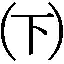

| 神の手（下） (幻冬舎文庫) | |
| 久坂部羊 | |
| 幻冬舎 (2012) | |
 幻冬舎文庫
幻冬舎文庫
神の手
久坂部羊
神の手
主な登場人物
●主人公
白川泰生 市立京洛病院の外科部長 消化器外科医
●安楽死法推進派
島津貴志 市立京洛病院の内科部長 循環器内科医
新見偵一 「日本全医療協会」（ＪＡＭＡ）の代表 心臓外科医
山名啓介 ＪＡＭＡの執行理事 白川の大学時代の同級生で同じ医局 消化器外科医
柴木香織 ＪＡＭＡの副代表 新見の大学の後輩で新見の右腕 麻酔科医
佐渡原一勝 自共党の元総裁 政界の長老
井村和夫 自共党の衆議院議員「医療行政改革会議」のメンバー
三笠孝 民和党の衆議院議員 民和党の若手ホープ
業田義政 自共党の元幹事長 佐渡原派の重鎮
立原直樹 大物ノンフィクション作家
●安楽死法反対派
古林康代 息子を安楽死させられたエッセイスト
大塚彰彦 「安楽死法制化阻止連合」（「阻止連」）の代表理事
青柳公介 自称「市民派」ジャーナリスト
佐内孝一 人権派弁護士
東吾郎 平政新聞社社会部の記者
中室真司 「阻止連」の理事 世田谷医療センター内科医
西田節子 市立京洛病院の看護師 章太郎の死後処置を担当
宮城あずさ 社生党党首 参議院議員
●その他
古林章太郎 二十一歳で安楽死を遂げた肛門がん患者 康代の息子
古林晶子 康代の姉 康代に代わって章太郎を育てる
平野秀夫 京都府警刑事部捜査一課の警部
白川雅美 白川の妻
白川瑠威 白川の息子
本村雪恵 嵯峨記念病院の看護師 白川の愛人
浅井英志郎 無所属の参議院議員
播戸恭一 全日医師会の元首席常任理事 脳外科医
金子律 全日医師会の元常任理事 消化器外科医
海老原信治 厚労省官房長 医療庁の初代長官に内定
村尾士郎 神武レジェンド製薬のＭＲ
20 「24時間オンエア！」
十二月二十一日月曜日。平政新聞社会部記者の東吾郎は、ジャーナリスト青柳公介の事務所に急いでいた。古林康代から「たいへんなことになった」と連絡を受け、例によって詳細は知らされないまま呼び出されたのだ。
渋谷区幡ヶ谷のマンション一階にある「青柳事務所」に着くと、康代をはじめ、「安楽死法制化阻止連合」いわゆる「阻止連」の面々がすでに集まっていた。
「いったい、これはどういうことよ！」
いきなり康代のヒステリックな声が響き、東は頭を低くしながら、壁際の椅子に座った。テーブルには、この日発売されたばかりの「週刊ＶＩＰ芸能」が広げられている。人権派弁護士の佐内孝一の顔写真の下に、扇情的な見出しが躍っていた。
『反安楽死のモテモテ弁護士 実は変態！』
『赤ちゃんプレイが大好き』
『佐内弁護士 おむつ姿のバブバブ写真』
東は思わず息を呑んだ。細面の二枚目で、ソフトな低音が人気の佐内は、今やテレビの花形コメンテーターである。二カ月前の「サンデープライム」の生討論でも、「阻止連」を勝利に導く主張を繰り広げた。その佐内が、いったいどうしたというのか。
しかし、予兆がまったくないわけではなかった。佐内は最近、「阻止連」の会合を続けて欠席し、「公開延命治療」の収録にも立ち会わなかった。理由は多忙とのことだったが、どこかようすが変だった。おそらく、身辺に卑劣なすっぱ抜きの気配を感じていたのだろう。
「今日、佐内先生から、『阻止連』への退会届けが提出されました。理由はみなさんに迷惑がかかるからと......」
「阻止連」代表理事の大塚彰彦がうめくように言った。
佐内のスキャンダルは、「阻止連」にとっては大打撃だった。人気の高い佐内が実は変態だとわかれば、彼の主張までが「変態の言い分」と見なされてしまうからだ。逆に法律家の佐内が発言力を失えば、安楽死法推進派にとってこれほど有利なことはない。
集まった面々が深刻な表情で押し黙っていると、突然、康代が檄を飛ばした。
「出てしまったものは仕方ないわ。それより明日の『24時間オンエア！』をなんとかうまく乗り切ることが先決よ！」
「阻止連」に肩入れしていた浅井英志郎議員が企画した「公開の延命治療」が、思いもかけない方向に進んでいたのだ。
延命治療の大切さを訴えるために、テレビでそれを公開するという浅井議員のアイデアは、たしかに画期的だった。東もその収録には毎回立ち会い、経過を見守っていた。
敗血症性ショックで世田谷医療センターのＩＣＵに緊急入院した鴨志田肇は、当初予断を許さない状況だったが、三日目より回復傾向が見られ、十一月七日に一回目の収録、十二日には人工呼吸器がはずされ、気管チューブを抜いて家族と会話をする感動的なシーンが撮影されていた。
十一月二十三日は鴨志田夫妻の三十五回目の結婚記念日で、その日の退院を目指して、主治医の大塚は治療スケジュールを急いだ。結婚記念日の退院にこだわったのは、十月の「サンデープライム」に出番がなかった青柳である。番組を盛り上げるための早期退院に、大塚は一抹の不安を感じたが、「サンデープライム」で青柳に出演を控えてもらった負い目があるので、今回は彼の要求を無下に断れなかった。
十一月十七日、鴨志田は微熱が取れなかったが、退院予定日から逆算して、準備のため一般病棟へ移った。大塚はまだ早いと思ったが、テレビで公開するならインパクトが強いほうがいいという青柳の意見を、浅井議員が強力に後押ししたので、予定を遅らせることができなかった。東は、妙に青柳の肩を持つ浅井に違和感を覚えたが、大塚は自分が「阻止連」の顧問役として連れてきた浅井の要求に反論できなかったようだ。
しかし結果的には、この判断が裏目に出た。鴨志田は一般病棟に移った翌々日から四十度の熱を出し、状態が急に悪化した。大塚が危ぶんだ通り、敗血症は完治していなかったのである。再発の敗血症は初回よりも治療が困難となる。初回の治療で生き残った抵抗力の強い菌が増殖するからだ。
鴨志田はすぐにＩＣＵにもどされたが、悪いことに、それまで抗生物質を使いすぎていたため、ＭＲＳＡ（メチシリン耐性黄色ブドウ球菌）の院内感染で、肺炎を併発した。ＭＲＳＡにはほとんどの抗生物質が無効のため、対症療法しかない。鴨志田の呼吸機能は急速に悪化し、ＩＣＵにもどった翌日に昏睡状態となって、人工呼吸器はもちろん、最重装備の治療器具が取りつけられた。
その後、鴨志田の治療は膠着状態に陥った。大塚や中室の懸命な努力にもかかわらず、いっこうに回復の兆しは見えなかった。夫妻の結婚記念日には、妻が意識のない夫の横で涙を流した。
大塚は苦渋の面持ちで、東に洩らした。
「テレビを盛り上げるために、結婚記念日の退院など考えなければよかった」
青柳は責任を感じてか、毎日のように病院に来ては治療を見守り、大塚から詳しい説明を聞いていた。東も康代とともに、可能なかぎり同席した。
十二月一日、世間が全日医師会の常任理事脱退事件で揺れているとき、鴨志田は出血傾向がはじまった。ＤＩＣと呼ばれる重篤な合併症の発症だ。鼻血、吐血、下血が止まらず、下血は一日九百グラムに及んだ。ＤＩＣの治療薬はもちろん、止血剤、凍結血漿、粘膜保護剤にも反応しないため、翌日から輸血がはじまった。しかし、保存血はもともと凝固因子を不活化しているため、輸血は出血傾向を悪化させるばかりである。医療分野を得意とする東は、鴨志田のＤＩＣに、悲惨な延命治療の幕開けを見る思いだった。
数日後、東の不吉な予感通り、鴨志田の腎機能が低下しはじめた。尿はかろうじて出ているものの、全身に浮腫が現れ、手足は水死体のように腫れた。まぶたは分厚く膨れ、わずかに開いた目にはゼリーのような粘液が盛り上がり、白目は結膜出血で真っ赤に染まった。
大塚と中室は、状況が厳しいことを鴨志田の家族に説明し、万一のことにも言及した。家族は悲痛な表情でそれを聞き、必要以上に本人を苦しめないでほしいと懇願した。大塚からその話を聞いた東は、当然のことだと同情した。
ところが、それを聞きつけた浅井議員が、突然、病院にやってきて烈火のごとく怒った。
「腎機能の低下が何です。人工透析をすればいいじゃないですか。それとも、大塚先生はもう鴨志田さんの治療をあきらめたのですか」
その剣幕に押されながらも、大塚は冷静に答えた。
「あきらめたわけではありません。ただ、今の状況だと、透析をしても回復する見込みが......」
「ゼロだと言うんですか。百パーセントだめだと断言できるんですか」
「いや。そうは言い切れませんが」
「それならやりましょうよ。わずかでも可能性があるなら、最後までベストを尽くしましょう。先生、あきらめないで」
浅井の熱意あふれる言葉に、大塚は「わかりました」とうなずかざるを得なかった。
人工透析がはじまると、血液検査上での腎機能はわずかに改善した。すなわち尿毒症で命を落とす危険はなくなったわけだ。浅井は「やっぱり、やってよかった」と喜んだが、鴨志田の浮腫は相変わらずひどく、ぱんぱんに腫れた皮膚は雲母のような無気味な光沢を帯びるようになった。
ＤＩＣの出血傾向も続いており、人工呼吸が長引くと判断されて気管切開された傷口からは、どす黒い血が絶えず流れていた。
敗血症による高熱も続き、年齢のわりに豊かだった髪の毛は見る見る抜け落ち、ＩＣＵに再入室して二週間後には、耳の後ろにわずかな白髪が残るだけとなった。顔は全体が腫れ上がり、唇もゴボウのように黒ずみ、頬が盛り上がった分、鼻がひしゃげ、以前の容貌は見る影もなくなった。いったん元気になったときの顔を知っている東は、よくも生きたままここまで変貌するものだと、恐怖の目を見張った。
鴨志田にとってただひとつの救いは、ずっと意識がないことだった。しかし、家族はちがう。濃厚治療で変貌していく身内の姿を、ずっと見守らなければならない。尿毒症の危険は回避できたものの、肺炎と敗血症は持続しており、いつ心臓が音をあげるかわからない。ＩＣＵは家族でもつき添うことはできないので、大塚からはいつでも連絡のつくようにしておいてほしいと頼まれているはずだった。
十二月十六日、鴨志田は肝機能不全に陥り、数日前から出はじめていた黄疸が急速に悪化。皮膚は黄色から緑がかり、さらには腐敗したゆで卵のように黒みを帯びた。
それを見た鴨志田の妻と娘は、ついに大塚に治療の中止を願い出た。点滴も輸血も強心剤も透析も人工呼吸も、すべてやめてくれと、ＩＣＵの前で泣き崩れた。
大塚は苦渋の面持ちで二人に説明した。
「人工呼吸器を止めることはできません。止めれば安楽死になってしまうからです」
「それでもいいです。お願いだから主人を楽にしてやって」
その場に居合わせた東は、複雑な思いで鴨志田の妻の叫びを聞いた。いっしょにいた康代と青柳はきまり悪げに目を逸らしている。大塚も困惑を隠せないながら、医師としての体面を懸命に保ちつつ言った。
「奥さん。今の日本では、安楽死は殺人になるのです。でも、このままにしていても、ご主人が苦しむ時間はそう長くはないでしょう」
患者の死を待つような大塚医師の説明に、東は深い疑問を感じた。この延命治療は、ただ悲惨さを引き延ばすためになされているのか。この状況なら、だれが見ても中止したほうがいいのは明らかだ。なのにそうできないのはなぜか。東はかつて安楽死の問題を取材したときに、ある医師が皮肉っぽく言ったことを思い出した。
――その場でいくら家族が安楽死を求めても、あとで別の身内が出てきたり、家族の思いが変わったりして、医師が責められることがあるんですよ。
大塚もそれを警戒しているのか。いや、大塚にかぎってそんな保身に走ることはないだろう。ただ、安楽死反対派の意地にかけて、延命治療の中止を拒んでいるだけのようだった。しかし、自分の信念のために、患者を犠牲にしてもいいのか。東は大塚に批判の目を向けたが、彼も患者の家族同様、いやそれ以上に苦しんでいるのを目の当たりにすると、東の思いも揺らぐのだった。
その日の夕方、浅井議員が、前回以上の剣幕で病院に乗り込んできた。ＩＣＵの前に大塚と中室を呼び出し、東や康代たちのいる前で食ってかかった。
「大塚先生。さっき青柳さんから連絡を受けたんだが、鴨志田さんが肝不全なんだって」
なぜ青柳がと、東が思う間もなく、浅井は大塚に迫った。「先生はこのまま鴨志田さんを見殺しにするつもりじゃないでしょうね」
「そうではありません。しかし、ここまで容態が悪くなれば、打つ手が......」
「血漿交換があるじゃないですか。肝不全を放置したら、アンモニアが蓄積して、今日明日にも命が危ないでしょう」
東はおやと思った。浅井はなぜここまで医療に詳しいのか。
「それはそうですが、この状態で血漿交換など、ふつうでは考えられない」
大塚は苦しげに表情を歪め、となりの中室に同意を求めた。しかし、中室が口を開く前に、浅井が怒鳴った。
「それが見殺しにするということですよ。この状態もへったくれもない。命を長らえさせる手段があるのに、それをしないのは、先生がこの患者をもう助からないと見捨てているからじゃありませんか。それこそ、先生がいつも非難している命の線引きですよ。ねえ、そうでしょう、古林さん」
不意打ちのように浅井に同意を求められた康代は、一瞬、言葉に詰まったが、持ち前の気の強さで素早く応じた。
「浅井先生のおっしゃる通りやわ。大塚先生。血漿交換で鴨志田さんにわずかでも助かるチャンスがあるんやったら、ぜひお願いします」
青柳も、負けじとばかりに続く。
「そうですよ。世田谷医療センターは『ぜったい患者を見捨てない病院』でしょう」
ちゃっかり自分の作ったコピーを持ち出す青柳に、浅井は白けた表情を見せたが、すぐ厳しい口調にもどって大塚に迫った。
「先生が血漿交換をためらう理由は何ですか。まさか、やっても仕方がないとか、手間がかかるとかいうことではないでしょうな」
血漿交換について医師にここまで聞けるのは、やはり医学の知識があるからにちがいない。答えに詰まる大塚に、中室が助け船を出した。
「鴨志田さんのご家族も、これ以上の治療を望んでおられないのです」
浅井は黒縁眼鏡の奥から、刺すような鋭い視線を中室に向けた。
「それは、先生方がそう仕向けたからでしょう。少しでも希望があるように説明してご覧なさい。大切な身内の延命を望まない家族などいるはずがない」
中室は浅井から顔を背け、素人の口出しは困るというふうにつぶやいた。
「いくら患者を見捨てないと言っても、これ以上治療する意味があるのだろうか」
「敗北主義だ！」
浅井は聞き捨てならないとばかりに、中室を一喝した。
「やりもしないうちからあきらめるなんて、安楽死派の医師と同じじゃないか。あなたは少しでも患者や家族の気持になったことがあるのか。必死に治癒を願い、少しでも生きてほしいと望む血のにじむような思いが、なぜわからない。それじゃあ、わたしの父を見捨てた医師たちと同じだ！」
浅井は感極まって、涙をほとばしらせた。ひったくるように眼鏡を取り、上着の腕でぐいとぬぐった。いかにも大袈裟だが、反論を許さない威圧感は恐ろしいほどだった。
東はできるだけ冷静に考えようとした。もし、わずかでも可能性があるのなら、やはり血漿交換を試してみるべきだろう。チャンスにすがりたい気持は、だれしも同じはずだ。
大塚と中室は、怒りを露わにして威圧する浅井議員に困惑し、互いに上目遣いに状況をさぐるばかりだった。
「大塚先生。『サンデープライム』の討論でおっしゃったことをお忘れですか」
浅井が業を煮やして詰め寄った。「あなたは『安楽死を行う医師には〝厄介な治療を早く終わりにしたい〟という潜在意識がある』と。今の先生にはそれがあるんじゃないですか」
それは当たっているのではと、東は思った。大塚が鴨志田の妻と娘に言った説明。
――このままにしていても、ご主人が苦しむ時間はそう長くはないでしょう。
そこには明らかに鴨志田の死を待つ心理があった。大塚を見ると、浅井に追い詰められ、現場の苦渋に苛まれた顔が土気色になっていた。
「大塚先生、『阻止連』の代表理事が、そんな弱腰でどうするんです。頑張りましょうよ。まだ鴨志田さんは生きていらっしゃるんだから。ね」
あくまで力尽くで押す浅井に、大塚はついに屈服したようだった。
「わかりました。今から血漿交換をはじめます」
「ありがとう。やっぱり先生は患者を見捨てない医師だ」
「でも、大塚先生。鴨志田さんのご家族にはどう説明するんです」
思わず声をあげた中室に、浅井は押し被せるように答えた。
「まだ可能性はあると言えばいい。あきらめないで、希望を捨てないでと」
可能性があるのは事実だ、しかし、と東は思う。あそこまで悲惨な姿になった鴨志田が、回復することなどあり得るのだろうか。人工透析をしたおかげで命は延びたが、患者の悲惨さはひどくなった。血漿交換をして、さらにひどい状態になったらどうするのか。しかし、ここであきらめていては、助かる患者も助からないのは事実だ。患者がまだ生きているのに、治療を投げ出すのはたしかに敗北主義だろう。それなら無謀なようでも、血漿交換をすべきなのか。
東は堂々巡りのなかで苦しげに思った。この決断を下せるのは、もはや〝神〟しかいない。
鴨志田の血漿交換は、その日の夜遅くからはじまった。家族には翌日、説明が行われた。妻と娘は泣いて中止を懇願したが、大塚は心を鬼にして継続を説得した。
「でも、血漿交換をすれば、延命の可能性はあるのでしょう」
東が確かめると、大塚は自分を納得させるように、「その通りだ」とうなずいた。
血漿交換で鴨志田の黄疸はわずかに引いたが、その効果は黒緑色の皮膚が灰褐色になった程度で、悲惨さに変わりはなかった。出血傾向はさらに悪化し、鼻血、吐血、眼球出血のほか、耳と乳首からも出血がはじまった。下血はさらに止めどもなく、丸太のように投げ出された両脚の間に、コールタールそっくりの凝血が溜まり、膝の下まであふれた。
肺の機能も低下し、人工呼吸器は一分間に三三回の設定で激しく稼働していた。強心剤、昇圧剤を入れても血圧は九〇を下まわり、逆に脈拍は一四〇を超えた。東は大塚に頼んで、一度、鴨志田のベッドサイドに入れてもらったが、心電図の甲高い電子音と、人工呼吸器の激しい作動音で、頭がおかしくなりそうだった。その横で無音で回転する透析と血漿交換のローターは逆に無気味だった。心電図のコードと点滴、輸血と中心静脈栄養、鼻腔チューブに導尿カテーテルが取りつけられた鴨志田は、まるで屍をつなぎ合わせた人造人間のようだと、東は背筋が凍った。
「24時間オンエア！」の放映が三日後に迫った十二月十九日、浅井が打ち合わせのため、関係者を世田谷医療センターのＩＣＵの前に集めた。
「こんなんじゃ放送できるわけないやんか」
康代が甲高い声で叫ぶと、青柳が取りなすように説明した。
「放送で流すのは、鴨志田さんが一般病棟に移るとこまでですよ。それで、今も闘病中です、頑張ってくださいと持っていくんです。鴨志田さんのご家族も了承してくれてます」
「そうなの。ふん。わたし抜きで何もかも決まってるんやね」
康代の出演は最後まで未定だったが、つい二日前、出番なしという通知が来たのだった。
東は、招集をかけておきながら、重苦しい沈黙を守る浅井を訝しんだ。自分が強要した治療の結果を、彼はどう受け止めているのか。
浅井はＩＣＵの窓越しに、じっと鴨志田のベッドを見つめるばかりだった。
十二月二十二日火曜日。いよいよ「24時間オンエア！」の当日となった。放送開始は午後六時三十分。「延命治療最前線」と題された企画のオンエアは、その日の午後九時ごろからの予定だった。
東がメイン会場の東京セントラルドームに入ったのは、午後七時半。放送局あげての大企画なので、ドーム全体が異様な興奮に包まれていた。
スタッフ証を首から下げ、厳重な警備を抜けて控え室に行くと、すでに康代、青柳、大塚の三人が来ていた。前の「サンデープライム」のときとはちがう、なんとも重苦しい雰囲気だ。
鴨志田の容態が悪化してからも、企画を取り下げることはできないと、だれもが思っていた。そんなことをすれば、テレビ局に口を利いた浅井の顔がつぶれるからだ。苦肉の策として、鴨志田がいったんよくなって、ＩＣＵから一般病棟に移るまでを使うというアイデアを出したのは青柳だった。それがフェアでないことは、だれもが感じていた。当の青柳でさえ、いつもの勢いを失っていた。康代が計画していた白川泰生の出演も、彼女自身がキャンセルした。彼がそんなごまかしのような演出に応じるとは思えなかったからだ。
控え室のメンバーで、もっとも表情が暗かったのは大塚だった。今も続く鴨志田の悲惨な状況に、主治医として、テレビになど出ている心境ではなかったのだろう。
「大塚先生。ここまで来たらやるしかありませんよ」
青柳が言うと、康代も「つらいお気持はようわかりますけど、ここは踏ん張りどころです」と励ました。彼女は出番がなくなったことでふてくされていたが、状況の深刻さを悟り、わだかまりを解いたのだった。もしオンエアが失敗すれば、佐内弁護士のスキャンダルも合わせ、「阻止連」は計り知れないダメージを受ける。ここはなんとしてもうまく乗り切らなければならない。
「浅井先生はまだかいな」
康代が苛立った調子で舌打ちした。浅井も番組に出るはずなのに、まだドーム入りしていなかった。
「あの先生、番組が終わったら、ちょっと関わりを見直したほうがええかもね」
康代は、浅井さえこんな企画を持ち出さなければという口振りで言った。東も同調しかけたとき、浅井が大股で入ってきた。
「いやあ、みなさん。ようやく今日を迎えましたな。いや、お疲れさま」
この陽気さは何だと、東は驚いた。康代も青柳も呆気に取られている。大塚だけが消沈したままだった。
午後九時十五分前、番組に出演する浅井、青柳、大塚の三人が、迎えに来たＡＤ（アシスタント・ディレクター）について特設スタジオに向かった。東は控え室に残り、康代とともにモニターの前に座った。番組はスタートから二時間半を過ぎ、いよいよ佳境に入ろうとしていた。
その盛り上がりを見て、東は今さらながら不思議な思いに駆られた。鴨志田の治療がうまくいったのなら、このゴールデンタイムの割り当てもわかる。しかし、治療は不首尾で、お茶を濁すような苦しい結末になったのだ。なのに、こんなにいい時間帯の放映はなぜか。議員としての浅井の力か、あるいは東らにも知らされていないサプライズでもあるのか。
モニターには豪華な特設スタジオが映し出されていた。ギリシャ神殿風のエンタシス柱、アクリルで作られた虹の飾り、点滅するイルミネーションに縁取られた扇状の階段。背後には天使が舞う天国の門のようなアーチに守られた巨大スクリーンがあり、あたり一面が花と緑にあふれている。スタッフは定番の黄色いウィンドブレーカーを着込み、アイドル歌手、女優、お笑い芸人、タレント弁護士にタレント教授らがきら星のように雛壇に並んでいる。
今回のテーマは「新しい道」。さまざまな分野で繰り広げられる「新しい道」が、感動的に紹介されていた。
中年太りが目立つメイン司会の児島徳夫アナウンサーが、《それでは、次は「延命治療最前線」です》と、高らかに宣言した。
「大塚先生は、大丈夫でしょうか」
東が不安げにつぶやくと、康代は「頑張ってもらうしかあらへんわ」と、きつい目をモニターに釘づけにした。
児島アナが三人の出演者を紹介したあと、まず浅井にマイクを向けた。
《今回の「延命治療最前線」は、もともとは浅井さんの発案ではじまったそうですね》
《ええ。延命治療の是非については、さまざまな意見がありますが、よく考えると、医師以外、我々一般人はあまり実態を知らずに議論しているのじゃないかと思いましてね。こちらの大塚先生のご協力を得て、ひとつ公開の延命治療をやってもらおうと思ったんです》
《患者の鴨志田さんの病気について、説明していただけますか》
児島アナに話を振られた大塚は、医師としての威厳をなんとか保ちつつ、鴨志田の治療経過を説明した。横で不安げに見ていた青柳は、大塚の説明が一段落するのを待ちかねて、割り込むように話を引き取った。
《とにかく、鴨志田さんは緊急入院したときにはたいへん危険な状態だったんです。あとでご家族への説明で出てきますが、一時は大塚先生も、鴨志田さんの生還を危ぶまれたほどですから》
《でも、あきらめずに治療を続けられたんですね。では、その感動の記録を、再現ＶＴＲを交えてごらんいただきましょう。どうぞ》
児島アナが細い目をしばたたきながら、巨大スクリーンにスタートの合図を出した。
ＶＴＲがどんな編集になっているのか、東もまだ見ていなかった。映像は鴨志田が敗血症で倒れる場面から再現されていた。救急車で運ばれ、ＩＣＵで意識がないまま、人工呼吸器や点滴、心電図が取りつけられる。そこで実写に切り替わり、リアルな映像が流れる。東も同席した最初の収録で撮ったものだ。
続いて、大塚による家族説明。深刻な状況が明かされ、延命治療を続けるべきか、やめるべきかが議論される。絶望的な妻と娘に、大塚の熱意あふれる励ましが続く。治療は継続されることになり、医師や看護師は二十四時間態勢で治療に専念する。そこから鴨志田の容態が徐々によくなる。人工呼吸器をはずし、気管チューブを抜いて、家族と会話する感動的な場面。さらに、鴨志田がＩＣＵを出て、笑顔で一般病棟に移される喜びのシーンが映し出される。
「なかなかいいじゃないですか」
東は、意外にうまくまとまっているＶＴＲに安堵の声を洩らした。
画面が特設スタジオにもどり、児島アナが大塚に延命治療の現状について説明を求める。歯切れの悪い大塚に、青柳がまた横から割り込むように補足した。
《適切な延命治療を行えば、こうして患者さんは必ず生還できるんです。大切なことは、最後まで希望を捨てないことですね。患者、家族、医療者が気持をひとつにして、治療に専念することこそが、いちばん重要なんです》
児島アナは微妙な間を置いて、《なるほど》とあとの続かない相槌を打った。打ち合わせでは、次に浅井が延命治療継続の重要性を訴え、今も闘病中の鴨志田を励ますということになっていた。ところが、児島アナは浅井にはマイクを向けず、カメラに向かってこう言った。
《本来でしたら、病院と中継をつないで、鴨志田さんの元気なお声を聞かせていただきたいところですが、残念ながら、今はそれがかなわない状況です》
「どういうこと」
打ち合わせにないセリフに、康代が声をひそめた。東が状況を考える間もなく、浅井が沈痛な面持ちでしゃべりだした。
《そうなんです。実は、鴨志田さんは現在、緊急入院したときよりも、はるかに過酷な延命治療の真っ只中にいらっしゃるんです》
「この人、いったい何を言い出すん」
康代の頬が恐怖にひきつった。東も同じく表情を凍りつかせる。モニターでは、浅井が児島アナ相手に一気に語った。
《鴨志田さんは、一般病棟に移ったあと敗血症が再発し、ＩＣＵに逆もどりしました。ふたたび人工呼吸器が取りつけられ、出血傾向が出て、腎機能不全になり、さらには肝不全にもなりました。おそらく内臓の機能がすべて限界に来ていたのでしょう。それでも、わたしたちは治療をあきらめませんでした。まだ透析や血漿交換などの手段が残されていたからです。わたしは大塚先生を説得して、とことん治療を続けてもらうようお願いしました。一パーセントでも助かる見込みがあるなら、ベストを尽くすべきだと思ったからです。ところが今、鴨志田さんは一カ月以上も意識がないまま、全身、出血と浮腫と黄疸で、あまりに酷たらしい状態です。それを見て、わたしは自分の過ちに気づいたのです》
思いがけない展開に、青柳が慌てて口をはさもうとした。しかし、それを児島アナが制して浅井に言った。
《延命治療の中止や安楽死の問題は、今や世間で大きな注目を集めています。今回の公開延命治療は、それらに反対する目的ではじめたとのことでしたが、実際にやってみると、思いもかけない結果になったということですね》
《その通りです》
浅井が沈痛な面持ちで答えた。モニターを食い入るように見つめていた東は、突如、この企画にゴールデンタイムが割り当てられた理由を覚った。はじめからすべて仕組まれていたのだ。司会の児島アナと浅井の間にも、段取りができていたにちがいない。東の脳裏に、以前、浅井に対して抱いた違和感が鮮やかによみがえった。
浅井はさらに持論を展開する。
《これまでわたしは、延命治療を途中で控える医師たちを批判してきました。しかし、現場を直接体験してみて、治療を控える医師たちの真意を理解したのです。ときには勇気ある撤退も必要です。安楽死の選択も、場合によっては必要だと言わざるを得ません》
総合司会の児島アナが神妙な顔つきで聞き入っている。康代はふいにスイッチが入ったように叫んだ。
「こんなん聞いてへん。どういうことよ。この議員、いつから安楽死の推進派になったんよ！」
浅井と児島アナの連携プレーで発言の機会を与えられなかった青柳が、我慢しきれないように話に割って入った。
《ちょっと待ってください。鴨志田さんは一度は回復したんだし、これからも治療を続ければ、また回復する見込みがないわけじゃない》
《黙りなさい！》
浅井が青柳を一喝した。《この期に及んで、まだ回復の見込みがあるなどと言うのは、欺瞞もはなはだしい。鴨志田さんに対する冒涜です》
《冒涜とは何だよ。鴨志田さんが悲惨な状況になったのは、そもそもあんたが無理な治療を大塚先生に強要したからじゃないか》
青柳は感情を露わにして激しく抗弁した。浅井はその発言を待っていたかのように、不敵な笑みを浮かべた。
《無理な治療？ よく言いますね。あなた方はいつもそうやって言葉を都合よく使い分けるんだ。医師が患者のためを思って延命治療をやめれば、患者を見捨てるのかと糾弾し、治療を続けて悲惨な結果になると、今度は無理な延命治療だったと非難する。結果だけを見て非難するのはおかしくないですか。いかがです、大塚先生》
浅井に話を振られても、大塚は鴨志田の現状に打ちひしがれ、まともに答えることができない。児島アナが《医療には不確定要素が大きいですからね》と助け船を出したが、それは浅井の言い分の正しさを強調することにしかならなかった。
浅井は最後の仕上げにかかるように、深刻な調子で児島アナに語った。
《わたしはこれまで、患者を見捨てるなとか、命の線引きをするなとか、きれい事ばかりにかまけてきました。しかし、今、理想主義だけではどうにもならない医療の現場を目の当たりにして、目からうろこが落ちた思いです。現場で苦労しながら、医師たちがぎりぎりの選択で延命治療を中止したり、安楽死を選ばざるを得ない状況があることを知ったのです》
児島アナが真剣な表情で、深くうなずく。浅井の最後の発言は決定的だった。これまでの「阻止連」の主張のいっさいを、「現場を理解しない〝きれい事〟」に貶めてしまったのだ。
《今回のテーマ「新しい道」は、最新の延命治療を紹介する予定でしたが、むしろ悲惨な延命治療からの勇気ある撤退、さらに進んで安楽死の選択こそが「新しい道」というわけですね》
《そうです。それこそが医療が歩むべき「新しい道」です》
浅井が確信を込めてうなずいた。青柳も大塚も茫然自失の態だった。康代もモニターをにらみながら、なすすべもなく唇を咬んでいる。
この放送の影響は大きい。東は「阻止連」の完全な敗北を意識せざるを得なかった。
21 安楽死臨調
感動的な話題の多い「24時間オンエア！」で、延命治療の失敗を赤裸々に語った浅井議員の発言は、視聴者に強いインパクトを与えた。そのパートの視聴率は、ラストのチャリティマラソンのゴールシーンに並ぶほどだった。
放送翌日に自社のモニターでそれを知った東は、視聴者の興味が、嘘くさいきれい事から、赤裸々な現実へと移りはじめたのを感じた。
熱心な安楽死の反対論者だった浅井の転向は、世間に大きな衝撃を与えた。現場を体験した上で安楽死の必要性を認めたことは、反対論者の主張が、おしなべて現実を知らない〝机上の空論〟だという印象を与えたのである。
続いて、いくつかの週刊誌がこの問題を取り上げた。鴨志田の現在の治療状況を報じ、無理な延命治療の悲惨さを告発した。浅井自身も積極的に取材に応じ、自分が延命治療の継続を主張したこと、それがいかに現実を無視したものであったかを、週刊誌に率直に告白した。
『すべては患者さんによかれと思ってしたことです。ところが、それはわたしのひとりよがりだったのです。そのせいで、鴨志田さんが悲惨な状況になってしまい、なんとお詫びしてよいのやら』
浅井はテレビにも登場して、能弁に語った。
《医師が延命治療を控えたり、安楽死を選択したりするのは、本人のためではなく、まわりの都合だとばかり思っていました。治療に早くカタをつけたいと思う医師の都合、あるいは看病や介護に疲れた家族の都合。しかし、決してそうではありませんでした。無理な延命治療をやれば、患者本人がとんでもない悲惨に見舞われる。医師はそれを知っているからこそ、無理な治療を控え、安楽死の選択をも視野に入れているのです。そんな医師の真意も知らず、底の浅い理想主義で、誠意ある医師を攻撃していた自分が、ほんとうに恥ずかしい》
浅井の自己批判は、安楽死の反対派全体を代表するかのように喧伝された。東はそこに巧みな宣伝戦略を感じ取ったが、康代ら「阻止連」の側には有効な反撃の手段がないようだった。
週刊誌は鴨志田の家族にも取材した。鴨志田の妻は、夫を必要以上に苦しめないでと泣いて頼んだのに、病院側がそれを無視して、どんどん治療をエスカレートさせたと証言した。治療を推し進めたのはだれかという問いには、すべて大塚医師の主導だったと答えた。実際は浅井だったが、彼は巧妙にも家族への説明にはまったく顔を出さず、はじめから終わりまで大塚に任せていたのだ。
大塚は、鴨志田の治療に関するいっさいの責任を一人で負うつもりのようだった。いかに浅井の圧力があったにせよ、実際に治療を行ったのは自分だ。彼には、そういう医師としての矜持があるようだった。
傍らで状況を見守っていた東には、大塚の苦悩が痛いほどわかった。もし、浅井に責任を押しつけて、自分は治療を控えるつもりだったと言えば、「最後まで患者を見捨てない」というそれまでの主張と矛盾してしまう。実際には浅井に強要された形だが、それは決して口にできないことだろう。
鴨志田の治療はその後もマスコミから注目されたが、大塚は治療を中止することができなかった。中止すれば、即、患者が死ぬのは明らかで、それは安楽死させるのと同じになるからだ。しかし、治療を続けるかぎり、身体の悲惨さは悪化する。出血、吐血、下血、浮腫、黄疸に加え、脱毛、悪臭、床ずれによる骨の露出、全身の皮膚剥離、爪の黒色壊死、足の指のミイラ化など、見るに堪えない状況が続く。水死体のように腫れ上がったまぶたは、ずっと前から閉じることができず、真っ赤になった目から流れる浸出液は、涙というより、恨めしさのエキスのようだった。
年を越した一月四日、鴨志田の心臓はようやく最後の鼓動を止めた。鴨志田死亡のニュースは、テレビや新聞で大きく報じられ、世田谷医療センターでは、大塚ら治療に当たった医師の記者会見にまで発展した。
「鴨志田さんの治療の責任は、すべてわたしにあります。申し訳ありませんでした」
大塚は報道陣に深々と頭を下げたが、記者からは厳しい追及が相次いだ。
「どうしてこんな悲惨な状況になるような治療をしたんですか」
「患者と家族を苦しめるだけの結果に終わったことの責任は、どう考えてるんだ」
「治療にベストを尽くしたんだから、結果はどうなってもあきらめろということか」
それらの質問に、大塚は必死に答えた。その誠実さは、経過を知っている東には痛々しいほどだった。同時に、あたかも世間を代表するかのように高圧的な質問を繰り出す同業者に、やり場のない腹立たしさを感じた。しかし、事情を知らなければ、自分も同じような追及をするだろう。それが新聞記者だと思うと、忸怩たる思いに打ちひしがれた。
最後に保守系のジャーナリストが、居丈高に大塚に迫った。
「鴨志田さんのご家族は、泣いて治療の中止を求めたそうじゃないですか。なぜその希望にそってあげなかったのです」
「それは、治療を中止すれば、鴨志田さんの死が明らかだったからです。その時点で治療を中止すれば、殺人罪に問われかねませんので」
「つまり、今の日本では安楽死が認められないから、そんな悲惨な状況になっても、治療をやめられなかったということですな」
「......そういうことです」
大塚は憔悴しきって、頭も十分に働いていないようだった。安楽死さえできれば、この状況は避けられた。彼はそう言わされているのも同然だった。会見を聞きながら、東は、大塚が安楽死法の推進派にいいように利用されているのを感じた。
一月十一日月曜日。「阻止連」の事務局がある暁誠会館で、臨時の理事会が開かれた。出席者は、「阻止連」代表の大塚を含む七人の理事と、オブザーバーとして古林康代、青柳公介、東吾郎の計十人。議題は公開延命治療の失敗によるダメージを、いかに挽回するかである。
コの字形に並べたテーブルに座った面々は、一様に沈うつな面持ちで押し黙っていた。延命治療に対する世間の風当たりは強く、大塚も一週間前の記者会見でのバッシングから、まだ立ち直っていなかった。
意気があがらないまま、司会の中室が会議をはじめようとしたとき、思いがけない人物が入ってきた。公開延命治療を企画した張本人、浅井英志郎だ。
「浅井議員！ よくもここに来られたもんやね」
康代が反射的に立ち上がると、浅井は悠然と奥へ進み、空いた席に腰を下ろして言った。
「事務局から臨時の理事会があると聞きましてね。わたしもひとこと申し上げたいことがありますので」
「あんたになんか、意見を言う資格はないぞ。この裏切り者が」
テレビで浅井を制止できなかった青柳が、悔し紛れに叫んだ。浅井は青柳には一瞥もくれず、不敵な笑みを浮かべてつぶやいた。
「裏切り者だなんて、妙な言いがかりはやめていただきたいですな。わたしは現実を率直に見つめ、虚心坦懐に意見を述べただけですよ」
「それでも事前に何の相談もなく、いきなりテレビの本番で転向を宣言するやなんて、卑怯やないの」
康代が敵意を剥き出しにすると、浅井は「ふん」と軽く鼻で嗤った。「あのときは、直前まで迷っていたのですよ」
それは嘘だと東は思った。放送では司会の児島アナと打ち合わせができていたはずだ。東は厳しい疑いの目を向けたが、浅井は気にも留めず平然と続けた。
「わたしは、延命治療に関しては、わずかでも可能性があるなら、患者を見捨ててはいけないと思っていました。『阻止連』のみなさんも同じでしょう。だからこそ、最後まで治療の続行をお願いしたんです。あなた方も治療に賛成していたではありませんか」
「あのときは、あんなひどい状態になるとは思わへんかったからよ」
康代が不愉快さに表情を歪めて反論した。浅井はあきれたように肩をすくめる。それを見た康代は、両手でテーブルを叩き、ヒステリックに叫んだ。
「何よ、人を小馬鹿にして。大塚先生はあのとき、ふつうは血漿交換まではせえへんて言うてはったやないの。それを無理やりさせて、あんなひどい状況にまでしたんはだれよ。あんたやないか。主治医が治療しないほうがええと言うたら、それに従うべきでしょう」
その反論はまずい。東はそう思ったが、浅井は案の定、嫌味たらしい薄笑いでからんだ。
「ほう。主治医が大塚先生の場合は、治療をやめようと言われたら従うべきだと言うんですね。そして、安楽死派の医師が主治医の場合は、同じことを言っても、患者を見捨てるなと非難するわけですか」
「ぜんぜん次元がちがうわ」
「いや、同じです。あなたたちはいつもそうやって、自分に都合よく線引きをしているんだ。最後まで治療すべきだと言うなら、文字通り徹底してやるべきでしょう。悲惨な状態になりそうだったら治療を控えろと言うのなら、それは安楽死派の医師たちと同じです。あなたたちは、きれい事を言っているにすぎない。患者の味方を装いながら、延命治療のほんとうの悲惨さを患者に伝えず、医師という権威を攻撃して自己満足に浸っているだけだ」
「あんたこそ、医師に迎合する保守反動やんか」
「おや、言い返しましたね。ということは、わたしの批判を認めたということだ。ははは」
「ちがうわよ。ぜんぜんちがう」
康代は悔しげに歯がみしたが、浅井はそれを無視して、大塚に陰湿な目を向けた。
「さて、大塚先生。今回の鴨志田さんの悲惨な延命治療の責任は、どうお取りになるつもりですか」
大塚はテーブルにのせた両手を握りしめ、沈痛な面持ちで答えた。
「みなさんにご迷惑をおかけしたことはわかっています。だから、わたしは、『阻止連』の代表理事を辞任するつもりです」
会議室にかすかな衝撃が走った。予測はされたことだが、それでも理事たちの動揺は隠せない。
「それでは不十分ですな。あなたが辞任したところで、中身は何も変わらない。ここはいったん、『阻止連』を解散して、すべてを白紙にもどすべきではありませんか」
浅井からの突然の解散要求に、大塚は言葉を失った。
「大塚先生、解散なんてとんでもない。無視すべきですよ」
「そうよ。冗談やないわ」
青柳が浅井に向かい、憎悪の眼差しで言う。
「だいたい、あんたはいったい何の権利があって、『阻止連』の解散要求などするんだ。あんたはただの部外者じゃないか」
「おや、そうですか。部外者とおっしゃるなら、それもいいでしょう。わたしは親切心から解散を提案しているだけですから」
「親切心だと。ふざけるな」
青柳が怒りに顔を紅潮させると、司会席で成り行きを見守っていた中室が、はっと気づいたように浅井の顔を見た。
「浅井先生。まさか、あなたは、安楽死臨調での立場を変えるおつもりでは......」
中室の指摘に、東も虚を衝かれた。安楽死臨調は、政府が安楽死法の制定に向けて準備を進めてきた総理の諮問機関である。参与におさまっていた浅井は、臨調を舞台に安楽死法に頑強に抵抗すると言っていたが、今回のことで彼が立場を変えれば、そのシナリオは完全に狂ってしまう。
理事たちがざわめくなかで、浅井は白々しく答えた。
「テレビであれだけ延命治療への批判を述べたからには、安楽死法に関しても考え直さざるを得んでしょうな。安楽死が認められないために苦しんでいる患者や高齢者、あるいはその家族から、法制化を求める声が、連日、政府や厚労省に寄せられています。わたしが『阻止連』の解散を勧めるのも、そういう情勢に鑑みてのことです。どうです、ここはみなさんも意地を張らずに、安楽死の必要性を認めて、安楽死法の内容にみなさんのご意見を反映させる戦略に変更されては」
「あかん！ 安楽死法はぜったいにだめ。だめなものはだめよ」
康代が金切り声をあげたが、大塚をはじめ、「阻止連」の理事たちは戸惑うばかりだ。
「ま、みなさんでよくお考えになることですな」
浅井はそう言い残すと、入ってきたときと同じ悠然たる足取りで出て行った。
臨時理事会は浅井の解散提案のショックで具体的な討議もできず、大塚の代表辞任の申し出も保留のまま散会した。
東はそのまま平政新聞社にもどり、自社のデータベースで浅井のことを調べ直した。
浅井英志郎は岐阜県選出の参議院議員で、当選は衆参合わせて三回。昨年四月に自共党を離党して無所属になっていたが、政治家としての経歴は複雑だった。二〇〇一年、秘書給与流用疑惑で辞任した民和党衆議員の補欠選挙で、当時の自進党から立候補して初当選。翌々年の衆院選でも当選し、自進党が分裂すると、自共党との連立で与党入りした保新党に加わった。二〇〇五年、自共党の公認を受けるが、総選挙で落選。二〇〇七年に参院選に鞍替えし、自共党から立候補して当選したのである。
浅井はさしたる学歴はないが、押しの強さと巧みな弁舌でのし上がり、一部には立志伝中の人物と評価されていた。その一方で、地元公営ギャンブル組合との不透明な関係もささやかれ、闇社会とのつながりの噂もあった。「阻止連」には大塚が連れてきたが、東が改めて確かめると、浅井を大塚に紹介したのは、関西の作家兼ジャーナリストを名乗る人物だった。去年の「10・１許すな！安楽死シンポジウム」の直前で、当時、安楽死法推進派は、自共党の井村和夫や民和党の三笠孝ら国会議員がマスコミで積極的な発言をしていた。「阻止連」にも議員の支援者がほしいと思っていたところだったので、安楽死法に反対して自共党を離党した議員だと紹介されると、大塚は十分に背後関係をチェックしないまま、信用してしまったようだ。
東はさらに詳しい情報を得るため、平政新聞の岐阜支局に調査を依頼した。浅井の父親のことが気になったからだ。
結果は一週間後に知らされた。浅井の両親は、彼が中学一年のときに離婚し、浅井は姓はそのまま、母方に引き取られていた。父方の異母妹に連絡がつき、彼女から聞いた話を、支局長は興奮気味に伝えた。
「東君、驚くなよ。浅井の父親はたしかにすでに他界している。しかし、亡くなったのは胃がんじゃなくて脳梗塞だ。場所も名古屋の老人保健施設だったよ」
「なんですって。病院で亡くなったんじゃないんですか」
老人保健施設で死んだのなら、さしたる治療は受けていないはずだ。当然、延命治療の中止云々もあり得ない。浅井がここぞというときに口にした「父親を尊厳死させられた無念」は、真っ赤な嘘だったのだ。これで浅井の一連の行動が、はじめから「阻止連」をつぶすために仕組まれたものであったことを、東は確信した。
公開延命治療の鴨志田が死んだあと、世論は安楽死容認にさらに大きく傾いた。平政新聞のアンケート調査では、安楽死の法制化を求める意見が、八〇パーセントに迫る勢いだった。一年前では考えられないことだ。今や多くのメディアが無理な延命治療を批判し、安楽死に肯定的な姿勢を見せていた。それに対し、「阻止連」側の主張は、十把一絡げに「きれい事」と決めつけられ、だれも見向きもしなかった。
東は、アンケートの結果を見て、世間の〝空気〟の恐ろしさを感じていた。いったん〝空気〟ができあがると、それにそぐわない意見はすべてシャットアウトされる。この国を律しているのは、正義でも理念でも経済でもない。ただの〝空気〟だ。古くは戦前の軍国主義から、最近の自己責任論やグローバリズムまで、日本を動かしてきたのは、常に社会を覆う〝空気〟だ。
浅井の嘘を知った東は、すぐにそれを「阻止連」の関係者に告げた。
「何やて。あの議員、はじめから裏切るつもりやったんか。公開延命治療もわざと失敗させたんやな」
「なんという卑劣なヤツだ。断固、糾弾しよう」
康代と青柳は地団駄を踏んで悔しがったが、大塚は自分が連れてきた浅井の嘘に絶句し、見ていられないほど落ち込んだ。鴨志田の治療失敗の責任を自分一人で負うつもりでいた彼は、無念の思いに打ちひしがれ、すっかり気力をなくしてしまったようだった。
「大塚先生。この仇はきっと討ちますよ。週刊誌に浅井の陰謀を全部ばらして、大スキャンダルにしてやります」
青柳は意気込んでその場で電話をかけはじめたが、出版社の反応は予想外に冷淡だった。
「浅井英志郎は安楽死法推進派のスパイだったんですよ。こんな卑劣な陰謀が......、え、いや、しかし、そんな......」
いくら青柳が声をからしても、週刊誌側は乗ってこない。浅井の嘘は「阻止連」の人間にとっては一大事だったが、今は世間の風がアンチなので、「阻止連」側の反撃記事はニュースバリューが低いというのだ。
逆に浅井のほうは、安楽死臨調の参与として、その言動がマスコミの注目を集めていた。彼は反対派から賛成派に百八十度変わったことを積極的に公言し、その変節をある種の潔さに巧みにすり替えた。
論壇誌や総合雑誌には、安楽死を容認する提言が相次いで掲載され、テレビでは硬い番組ばかりでなく、お笑いタレントの政治バラエティでも、安楽死法案の疑似マニフェストは大差で可決された。また、難病であるＡＬＳ（筋萎縮性側索硬化症）の患者が、ＮＨＫの番組で安楽死の法制化を切々と訴え、大きな反響を呼んだりもした。
世論の高まりを受けて、浅井は朝の番組に生出演して、視聴者に猫なで声で語りかけた。
《わたしの主張は、選択肢のひとつとして安楽死を認めてほしいというものです。望む人に、希望をかなえられるようにするための法整備です。安楽死法ができたからといって、もちろん、だれもが安楽死すべきだなどと言っているのではありません。むしろ、法律ができてもすぐには状況は変わらないでしょう。臓器移植法のときと同じです。最初の心臓移植まで一年半近くかかりましたからね。患者さんの側も、お医者さんの側も、この法律を実際に適用するのには、かなり慎重になると思います》
安楽死法への要望が高まるなか、安楽死臨調は会合を繰り返し、異例の短期決議で、最終答申を二月八日に行うと発表した。
一月の最終日曜日、東が自宅でテレビを見ていると、「サンデープライム」に全日医師会崩壊のきっかけを作った元常任理事、播戸恭一が出演していた。テーマはずばり「安楽死の是非」。司会の田所晋也が、「24時間オンエア！」の公開延命治療の失敗について訊ねた。
《播戸先生は脳外科医でいらっしゃるが、ああいう悲惨な延命治療というのは、現場ではよくあるものなんですか》
《ありますよ。脳外科ではもっとひどい場合もあります。何しろ多臓器不全になる前に、手術で脳を切除しているんですからね》
《それは想像しただけで怖いね。例の日本版ポストマ事件の白川先生、彼なんかはどう見てるんだろう。いや、白川先生にも出演を依頼してるんだけど、なかなか来てくれなくてね》
田所は出演依頼に応じないらしい白川にかすかな苛立ちを見せて続けた。《彼が一昨年やった京都のケースも、いわば悲惨な延命治療を避けるために患者さんを安楽死させたわけでしょう。公開延命治療の失敗は、彼の正当性を裏づけるもんだと思うんだけど》
《そうです。白川医師のケースなら、わたしも同じ手段を選んだでしょう》
《ということは、播戸先生も安楽死には賛成ってことですか。ひとつ聞きたいんだけど、先生がぶっつぶした全日医師会、彼らは安楽死に強硬に反対してましたね。あれはどういうわけですか》
播戸は表情ひとつ動かさずに答えた。
《安楽死を認めると、診療報酬が減るからですよ。今の出来高払い制度では、患者を生かして検査か治療をしなければ、利益が上がりませんからね。患者が安楽死をすると、そこで医療はストップしてしまうのです》
《それじゃあ何、医者は患者が苦しんでいようが、家族が悲しんでいようが、無理にでも命を引き延ばして、それで儲けてたってわけ》
田所の露骨すぎる口振りに、播戸は苦笑いも見せず、《医師会の本音はそうです》と言い切った。医師会はすでに消滅していたが、その残党として、安楽死に反対している医師たちへの批判が高まるのは必至だった。
《今度あなた方、医師会からの脱退組がＪＡＭＡに参加したって聞きましたが、ＪＡＭＡは医師会みたいなことはしない？》
《もちろんです》
播戸は田所の問いに答えて、傲然と続けた。《ＪＡＭＡは医療庁と協力して、日本の医療体制を根本から革新することを目指しています。いわば〝理想医療郷〟を実現するのです》
《理想医療郷。ほう、それはいいねぇ》
田所がわざとらしく繰り返すと、播戸は自信満々のようすでうなずいた。
その後、安楽死臨調では浅井の強引な説得により、安楽死法に慎重だった委員や中立の委員の何人かが、法制化賛成にまわったと報じられた。浅井とともに参与になっていた社生党の宮城あずさ党首は、浅井を激しく非難したが、多勢に無勢で孤立を深めるばかりだった。
「阻止連」側は日に日に不利な状況に立たされたが、未だ代表理事にとどまっていた大塚は半ばうつ状態で、活動らしいことは何もできなかった。康代と青柳は懸命に挽回を図ったが、彼らの発言を取り上げるメディアは少なく、二人がコメンテーターを務める「フロンティア」でも、プロデューサーから、安楽死に関する発言は控えるようにと指示されるありさまだった。
康代は浅井の裏切りが許せず、東になんとかしろと何度もせっついてきたが、彼らの要望に応えるメディアはなかった。逆に、近々、浅井が自共党に復党し、次の総選挙では衆議院に鞍替えし、比例区で高い順位を与えられるという噂が流れてきた。安楽死臨調での活躍が評価されたということだったが、はじめからレールは敷かれていたのだろう。
東は激しい憤りを覚えたがどうすることもできなかった。康代と青柳も憤慨し、浅井を詐欺で訴えるとまで息巻いていたが、現実には打つ手もない中、もっと衝撃的な報せが彼らのもとに届いた。
安楽死臨調の最終答申が出る二月八日の未明、大塚が自宅で自らの命を絶ったのである。
遺体を発見したのは、妻の晴江だった。前夜、仕事があるからと書斎にこもっていた大塚を残して、先に就寝していた彼女は、明け方、夫が未だベッドにいないことを不審に思い、書斎にようすを見に行って、ソファでこと切れている大塚を発見したのだ。
警察の発表によれば、大塚の自殺は、自ら作製した自殺用の点滴装置を用いたものだった。タイマーと点滴用のポンプを使い、麻酔剤で意識を取ってから、心停止を起こす塩化カリウムをルートの横から静脈注射する仕掛けである。
遺書には家族や病院関係者、患者への謝罪とともに、「阻止連」のメンバーに向けて、自分の軽率な行為が「阻止連」の活動を台無しにしたことへの痛切な悔恨と謝罪が綴られていた。
大塚の死は新聞に大きく報じられ、一部のスポーツ紙には、次のような見出しが躍った。
『反安楽死ドクター 自作の安楽死装置で自殺！』
大塚が使用した点滴装置が、アメリカで何人もの患者を安楽死させた医師の装置と酷似していたからだ。
その日、大塚の通夜が行われている最中に、ＮＨＫは午後七時のニュースで、安楽死臨調の最終答申を報じた。内容は予想通り、安楽死を正当な医療行為と認め、実施には厳密な規定を必要とするものの、医師による安楽死を合法化すべしというものだった。
これを受けて、長峰総理は安楽死法制定の方針を閣議決定。同時に、各党の意見調整の場として、吾妻厚労相を長とする「安楽死に関する各党協議会」を発足させ、法案要綱を取りまとめるための作業部会を設置した。これにより、早ければ、七月に開催される臨時国会に法案が提出される見通しとなり、衆議院厚生労働委員長は、世論の高まりを背景に、「法案が提出されれば、すみやかに審議を進める」と発言した。さらに、大阪、名古屋、福岡など、主要都市における地方公聴会の日程も検討され、安楽死法の成立までの道筋は、ほぼ完全に整えられた。
翌二月九日。大塚の葬儀は、大塚の自宅に近い世田谷区の「下北沢アークホール」で午前十時から執り行われた。参列者はおよそ三百人。熱心な安楽死法反対論者で、誠実な人柄で知られた大塚の死を悼む声がそこここで聞かれた。
「大塚先生は、さぞ無念やったことやろね」
「いい先生だったけどな」
康代が涙をこぼすと、青柳も顔を歪めて唇を咬んだ。東はもはや止めようがなくなった安楽死法制定の流れに不安を抱きながら、大塚の遺影を見つめた。
葬儀からの帰り道、東は康代に誘われて、式場にほど近い青柳の事務所に寄った。
「これで『阻止連』もおしまいだな」
青柳がため息まじりに洩らした。康代とともに一年半近く関わった「阻止連」に、彼はさしたる未練もないようだった。熱心なそぶりを見せてはいたが、結局は表面的に関わっていただけなのだろう。しかし、康代はちがうはずだ。彼女は実の息子を不本意な形で安楽死させられたのだから。そう思って東がその横顔をうかがうと、康代は複雑な表情で、悔しさに耐えているようだった。
事務所のテレビが、昼のワイドショーを流していた。ＪＡＭＡの副代表、柴木香織が、昨日の安楽死臨調の答申にコメントしている。
《これでようやく、患者さんが耐えがたい苦痛から解放される道が開けました。悲惨な延命治療はいわば医療が創り出した地獄です。安楽死法が成立すれば、その地獄から患者さんを救い出すことができます。これで人生の最期にひどい苦しみや悲惨を味わうことはなくなるのです》
となりに座ったノンフィクション作家の立原直樹も、安楽死法の成立に道筋がついた喜びを語った。
《これで日本もやっと欧米並みの終末期医療レベルになるわけだ。これまで日本人は、死から目を逸らしすぎてたんですよ。どうせ死ぬなら楽にと思うのは当たり前でしょう。今後はより快適な死を求めて、日本が世界の安楽死先進国になることを期待します》
康代が苛立たしげにテレビのスイッチを切った。
「世間の連中はほんまにアホやな。大切なことは何も考えんと、安楽死法の推進派にええように踊らされてるんやから」
「そうだよ。安楽死法ができて、知らないうちに自分が安楽死させられるようになってから、慌てても遅いのにな」
青柳も不快げに受け口の唇を尖らせたが、東は暗澹たる気持で二人の言い分を聞いていた。
このまま安楽死法ができて、ほんとうに大丈夫なのか。安楽死に見せかけた相続殺人や、介護疲れによる安楽死の無理強いは起こらないのか。あるいは、医師が安楽死の名目で、重症者の治療を打ち切ったり、早々に回復をあきらめたり、そんなことが実際に起これば、取り返しがつかない。安楽死法は日本にはじめて導入される法律だ。いったいどんな状況になるのか、だれにも予測がつかない。
東はそこはかとない不安に襲われ、康代に言った。
「古林さん。この流れを止める方法はもうないんですか。このまま黙って見過ごしていいんですか」
「いいわけないでしょ」
「だったら、なんとかしないと」
康代は何も応えない。東は焦れったそうにさらに迫る。
「前に古林さんが接触していた白川先生に、もう一度協力を頼めないんですか。あの先生に動いてもらったら、まだチャンスはあるんじゃないですか」
「わかってるわよ。わたしもあきらめたわけやない。きっと何か方法があるはずよ」
康代は厳しい表情で目を逸らしたが、彼女がいったいどうするつもりか、東にはまるで予想もつかなかった。
22 放心
前年の十二月に、嵐山の青嵐閣で本村雪恵にプロポーズを断られてから、白川泰生は抜け殻のようになっていた。いったい自分は何をしているのか。
思えばこの一年数カ月、心の落ち着くひまがなかった。一昨年の十月に古林章太郎を安楽死させてから、伯母の晶子の怪文書にはじまり、警察の取り調べのあと不可解な不起訴処分を受け、日本版ポストマ事件の当事者としてマスコミに晒された。自分は以前と変わっていないつもりでも、周囲の目が変わった。ちやほやする人間もいたが、タレント気取りだなどと批判もされた。不倫は自分の責任だが、康代からは過去の手術死亡の件を持ち出され、安楽死の自己批判を迫られた。
これまで自分は、市民病院の外科部長として恥じない診療をしてきたつもりだった。しかし実際は、気づかないところで多くの問題を抱えていたのではないか。それが今、溜まりきった膿のようにあふれ出してきた。
警察の取り調べの途中から、白川は徐々に勤務を縮小していた。落ち着かない状態で診療を続けて、万一、事故やミスがあれば取り返しがつかないからだ。早くもとの状況にもどさなければと思いつつ、あれやこれやが重なり、不規則な勤務が続いていた。年が改まってからは、ほとんど部長室にこもりきりで、休職も同然の状態だった。病院側は大学の医局に善処を求めたようだが、医局長の森は、白川からの転勤希望もあるので、年度内の異動ということで取り敢えず話をつけたとのことだった。
青嵐閣でプロポーズを断られた日、白川はショックで茫然自失となったが、雪恵はそんな白川を懸命に慰めた。
「わたしは白川先生を愛しています。先生はわたしにとってかけがえのない人です」
「だったら、どうして」
苦しげに問う白川に、雪恵は唇をきつく結び、思い詰めたように瞳を凝らすばかりだった。
青嵐閣からの帰り、雪恵は車で送って行った白川を、無理やりのようにマンションに連れて上がった。
「先生のお気持はうれしいんです。涙が出そうなくらい」
扉を閉めると、雪恵は身を投げ出すように接吻してきた。白川は戸惑い、雪恵の要求に応じるのを躊躇したが、彼女は強引に求め、白川はその激しさに翻弄される形で彼女を抱いた。取り繕いと、切なさと、あきらめの入り交じるような惨めな抱擁だった。
ことがすんでも、雪恵は身体を離さない。
「今はこうしていましょ。それがいちばんいい」
夢見心地でつぶやく雪恵に、白川は混乱し、彼女の本心がますますわからなくなった。片腕に雪恵の頭を感じながら、白川はうめくように言った。
「でも僕は、苦しい。このままじゃ、耐えられない」
雪恵は黙って天井を見つめながら、ぴくりとも動かない。何を思っているのか。
「先生、わたし......」
やがて、雪恵はうつろにつぶやき、ふたたび白川の胸に顔を埋めた。髪を撫でると、頬を胸にすり寄せる。それが愛情の表現でなくて何なのか。愛していながら、いっしょになれない理由があるのか。白川はふと思いついて訊ねた。
「あの不倫写真、君が妻に送ったの」
雪恵の身体が腕のなかで硬直した。白川を見上げ、きっぱりと言った。
「ちがいます。わたしじゃありません」
「じゃあ、だれ」
「知りません」
明らかに動揺している。雪恵は何か隠している。
「だって、あの日、僕らが大阪で逢うのを知っていたのは、だれもいないはずじゃないか。あのエレベーターでいっしょになった男、君があの男に写真を撮らせたのか」
「ちがいます。どうしてわたしがそんなことをするんです」
「脅されたの？」
雪恵の目がかすかに揺れる。まさか。
「『安楽死自由連合』のヤツらか」
「知りません、そんな人たち。先生、もう帰ってください」
「でも」
雪恵は白川に背を向け、慌ただしく身繕いをした。そして肩越しに興奮した声を響かせた。
「わたしが先生の家庭を壊したって言うんですか。濡れ衣です。ひどい」
それから彼女は石のように心を閉じてしまった。白川は放心状態で雪恵のマンションをあとにした。
時間が身体をすり抜けていく。
思い描いていた雪恵との生活が消えた今、白川を支えるものは何もなかった。
それでも、現実は進む。雅美とやり直すことはあり得ない。彼女との結婚が失敗だったことは、すでに動かしがたい事実だった。その思いは、雅美も同じようだった。元日の朝、瑠威が正月早々塾へ出かけたあと、彼女は白川をダイニングテーブルに呼び、一枚の紙を差し出した。
「父に相談して、わたしがもらうべき慰謝料を計算したわ」
ややこしい数式と矢印が乱雑に書き込まれている。
「あなたが、定年まで今の病院に勤めるとして、あと十三年。収入は多少は増えるでしょうから、平均年収を千八百万として二億三千四百万。それに退職金が約三千万。合計二億六千四百万で、その全部と言いたいところだけど、半分で許してあげる。つまり、一億三千二百万よ」
これまでのうっぷんを晴らすように、雅美は居丈高に言った。白川は惚けたような眼差しで聞いていた。反応のにぶいことに焦れ、雅美はさらに言い募る。
「貯金とマンション、これは取り敢えずわたしがいただきます。あなたのせいで、瑠威とわたしが路頭に迷うことになるんですからね。それくらい当然でしょ」
雅美は身ぐるみ剥がす気でいるようだ。白川の頭がようやく回転しはじめた。彼女は父親の伝でいくらでも優秀な弁護士を雇えるだろう。このままでは、無一文で放り出されかねない。彼は半ば自棄になって言った。
「今の病院で定年まで勤めるのは無理だ。大学の医局から、異動の話が来てるから」
「病院をやめるの。いつ」
「三月の終わり」
「次はどこへ行くの。どうせあなたが行くとこなら、また安月給のオンボロ病院でしょう」
「しばらく、決まらないかもしれない」
「何よそれ。浪人？ あきれた。医局に愛想尽かされたんでしょ。マスコミなんかに出て、浮かれてるからよ」
雅美は軽蔑と怒りを声ににじませ、慰謝料の計算紙を取り上げた。白川は投げ遣りな調子で言う。
「今から定年までの収入を、おまえに半分取られるくらいなら、いっそ勤めないほうがましだ。僕に収入がなくなったら、おまえだって取りようがないだろう」
「なんてことを。よくもそんなことが言えるもんだわ。あなたが野垂れ死のうが、自殺しようがかまわないけど、こっちまで巻き込まないでよね」
雅美は憎々しげに言いながらも、怒りと落胆を隠せない。白川はそれを目の端で確認する。
「あなたがそんな甲斐性なしだとは思わなかったわ。それで、京洛病院からの退職金はいくら出るのよ」
「さあ......。二千五百万くらいだろう」
「じゃあ、それは全額慰謝料よ。三月までの給料も全部いただくわ」
白川は悔しげな表情で押し黙る。
「何よ、その顔は。文句があるの」
高飛車に言われ、白川は屈辱を呑み込む。静かに息を吐き、雅美に頭を下げた。
「わかった。今回のことは、僕が悪いから仕方がない。君の言う通りにする。ただ、当座の生活費として、退職金のうち一千万円はもらえないだろうか」
「だめよ。厚かましい」
「しかし、仕事もなくなれば、ほんとうに無一文になるんだ」
白川はことさら惨めたらしく肩を落とした。雅美は忌々しげに舌打ちをした。
「ほんとにダメな人ね。いいわ。じゃあ五百万だけあげる。それで我慢しなさい」
「......すまない」
頭を下げながら、白川は胸のうちで舌を出していた。世間知らずの雅美は、何もわかっていない。吝嗇な彼女の頭にあるのは、できれば弁護士費用をかけずに離婚を成立させたいということだけだろう。今後の収入が不安になれば、取り敢えず取れるものをと焦りが出るはずだ。彼女は自分の夫が生涯稼げない医者だと思い込んでいるようだが、まあいい。今はそう思い込ませておけばいい。
白川自身、離婚が手っ取り早く成立すれば、好都合だと思っていた。何よりもうっとうしい気分から自由になれるし、離婚が口先でなかったことがわかれば、雪恵の気持も変わるかもしれない。彼はまだ彼女との生活を、完全にあきらめたわけではなかった。
しばらくして、二月のはじめに京安大学の医局長の森から、白川に連絡があった。転勤先の病院について、前の准教授、山名啓介から話があるとのことだった。山名は來都消化器医療センターの副センター長から顧問になったということだったが、同級生のよしみで転勤先を考えてくれたのかもしれない。面会は一週間後と指定された。
二月十日。白川は來都消化器医療センターの応接室で、約五カ月ぶりに山名と会った。前にこの病院を訪れたのは、「安楽死自由連合」という団体に雪恵のことで脅しを受けたあとだった。山名は話を通すと言っていたが、その後どうなったのか。
山名とは、学生時代からさほど親しい仲ではなかったが、章太郎の安楽死で取り調べを受けて以来、持ちつ持たれつの関係となっていた。今回はまた借りができる形だが、同級生のよしみで甘えることにした。
「医局長の森君から話を聞いてね」
山名は白川を気さくに迎え、応接椅子を勧めた。「白川はまじめやから、頑張りすぎたんやろ。そろそろ骨休めをしていいころや」
のんびりできそうな民間病院をという白川の希望を、森から聞いたのだろう。山名はすべてを呑み込んだように笑った。
「面目ない」
「恐縮する必要はないよ。白川にはまだまだこれからも活躍の場はあるやろうし」
含みのある言い方だった。白川は真意を問うように目を上げたが、山名はかまわず、用意してあった封筒から豪華なパンフレットを取り出した。
「おまえに勧めようと思ってるのは、この病院や。港区の白金メディカル」
「東京の病院か」
思いがけないオファーに、白川は表情をくもらせた。頭をかすめたのは雪恵のことだ。東京に行けば簡単には会えなくなってしまう。山名は白川の戸惑いを承知しているかのように続けた。
「まあ聞け。この病院はおれが関わってるＪＡＭＡの直営施設でな、医師百七十人の大規模病院や。だからいろいろと融通も利く。待遇面でも今の京洛病院の倍は出ると思うで」
「ありがとう。しかし、その前に話さなければならないことがあるんだ」
白川は若干声を上ずらせて、照れくさげに言った。
「実は今、女房と離婚協議の最中でな」
山名は深刻な顔で眉をひそめた。彼自身、大学病院の仕事に熱中しすぎて、五年ほど前に離婚していたから、その苦労がわかるのだろう。
「それで離婚が成立するまでは、表向きはあんまり高収入ということにしたくないんだ。慰謝料のこともあるし」
我ながらみっともない話だと思ったが、手を打たなければ雅美にどれだけむしり取られるかわからない。山名は少し考え、「それなら当面は嘱託ということにしたらどうや」と言った。「カタがついたら常勤にして、嘱託期間中の報酬も上乗せすればいいやろう」
「そうしてもらえれば助かるよ」
「それにしても、なんで離婚なんてことになったんや」
「いや、恥ずかしい話だが、前にちょっと話した女性問題でな」
「ほう......」
「実は、家に逢い引きの写真が送られてきたんだ。あのとき君に頼んだ『安楽死自由連合』が怪しいと思うんだが、何か聞いてないか」
「いや、あの件は大丈夫なはずや。忙しいて言うのを忘れてたけど、つまらん団体やった。ちょっと過激なヤツがおったらしいが、あれからは動いてないはずやで」
「そうか」
ということは、写真を送りつけてきたのは別の人間ということか。白川が視線を泳がせると、山名が秘密めかした笑みを浮かべた。
「で、その彼女とはどこで知り合ったんや」
白川は雪恵とのいきさつをかいつまんで話した。手術の器械出しがうまい優秀な看護師だと言うと、山名は「へえ」とうなずき、思いついたように提案した。
「そんなに優秀な看護師やったら、いっしょに東京へ連れて行ったらどうや。白金メディカルでたぶん面倒を見てもらえるぞ」
「まさか。彼女がうんと言わないだろう」
「大丈夫や。きっと来てくれる」
なぜ山名はそんな安請け合いをするのか。白川が不審の色を見せると、山名は取り繕うように言った。
「おまえは離婚までするんやろ。それやったら相手もそれに応えて当然や」
「いや、それがどうもな」
白川は苦笑いでごまかしたが、腑に落ちない思いだった。山名はそそくさと別の話題に移った。
「それより、今年の十月、医療庁と医療者権利院が発足するのはおまえも知ってるやろ。全日医師会も解体したし、これで日本の医療は根本的に変わるぞ。前に話したＪＡＭＡの新見先生は、『医療新秩序』の到来やと言うてる」
「『医療新秩序』？」
「ああ」
山名はあたりを憚るように声をひそめた。「実は、新見先生は政治家とか官僚に強力なコネがあってな。ここだけの話やが、おそらく彼は医療者権利院の議長になるやろう。医療者権利院は組織は小さいけど、医療庁を監督する立場にあるんや。いわば日本の医療の司令塔や」
白川は思わず耳をそばだてた。以前、京都御苑で古林康代に聞いた言葉がよみがえったからだ。
――新見の本音は、ＪＡＭＡで医療庁を牛耳って、日本の医療を支配することなんです。
まさかと思っていたことが、水面下で現実になりつつあるのか。白川は息を呑んだが、山名は動ぜず、白川を正面から見据えて言った。
「新見先生は日本版ポストマ事件で名を馳せたおまえに注目してる。そやからＪＡＭＡの関連病院に来てくれたら、きっと悪いようにはせん」
「あの一連の報道は、やはりＪＡＭＡが仕組んだことだったのか」
白川が表情を強ばらせると、山名は一瞬、間を置いてから声をあげて笑った。
「人聞きの悪いことを言うなよ。そらおれもちょっとは動いたけど、別に悪いことをしたわけやない。日本に安楽死法を成立させるためやから。それにはおまえも賛成やろ」
「しかし、僕はどうも釈然としない。この前、安楽死臨調が最終答申を出したけど、このまま法制定が動きだしていいのかな。もう少し慎重にしたほうがいいように思うんだが」
「おまえ、安楽死のパイオニアがそんな弱気でどうするのや。現場で安楽死ができずに苦しんでる患者がいっぱいいてるのはわかってるやろ。その患者をどうにもできん医療者もそうや。選択肢としての安楽死が必要なことは、だれしも思ってることやないか」
「それはそうだが、しかし、それは医師だけに通用する理屈じゃないか。医師の論理だけで決めてしまっていいのか」
白川の念頭には康代から聞いた意見があった。山名は表情を変え、半ば標準語で声を強めた。
「安楽死を行うのは医師だ。その責任も医師が負う。世間は要求するばかりで何も責任は負わない。医師の言い分が優先されて当然やないのか」
たしかに康代らは理想論に傾きすぎるきらいがある。現場の状況を無視して、きれい事を言っているとも感じる。実際に苦しむ人を救うには、やはり医師が責任をもって主導するのがいいのかもしれない。
白川がかろうじて納得すると、山名はふたたび関西弁にもどって言った。
「京洛病院でのことは森君からも聞いてる。あそこの和田院長はどうしようもないらしいな。それやったら、おまえは京都を離れたほうがええのとちがうか。東京へ行って、新天地でやりなおしたらどうや」
「それがいいかもしれんな。ひとつよろしく頼む」
白川が頭を下げると、山名は勢いよく彼の肩を叩いて言った。
「任せとけ。向こうでいっしょに頑張ろう」
23 奥比叡セミナー
四月九日金曜日、午前十一時。
山名啓介は、霊峰比叡山の奥にある閉院中の精神科病院、「真琴サナトリウム」のロビーで吹き抜けの天井を見上げた。中央には未来的なステンレスのオブジェが吊り下げられ、背後にはステンドグラスの明かり窓がはめ込まれている。光刺激を嫌う精神病患者のため、明かりはすべて間接照明で、広々としたロビーには荘厳な雰囲気が漂っていた。
「山名先生。おはようございます。今日から三日間、よろしくお願いいたします」
神武レジェンド製薬のＭＲ、村尾士郎が山名に近寄り、四十五歳という年齢に似合わない明るい声で挨拶をした。ＭＲとはメディカル・リプレゼンタティブ、すなわち医薬情報提供者のことである。かつては「プロパー」と呼ばれた営業マンで、自社の薬を売り込むために、医師にさまざまな接待攻勢をかける。特に神武レジェンド製薬のような新興メーカーは、他社の製品を押しのけるためにも、医師への積極的なアプローチが欠かせない。
「やあ、今回も世話になるね。よろしく頼む」
山名が笑いかけると、村尾は最敬礼で応じた。彼はＪＡＭＡの創立記念総会のときも準備を一手に引き受け、裏方の責任者として働いていた。
「演壇はこんな感じでよろしいでしょうか」
ロビー正面に演壇があり、その両側に幹部用のテーブル、後ろには豪華な現代活け花が飾られている。演壇の背後には、『ＪＡＭＡ奥比叡セミナー Apr.9～Apr.11』と大書されたボードが掲げられていた。
「いいんじゃないか。あとは新見先生のカリスマ性を強調する演出だな」
「承知しました。それは照明のほうで考えます」
村尾は心得顔でうなずくと、素早く手帳にメモを書きつけた。
山名は玄関ホールに向かい、テーブルに積まれたセミナーの資料を手に取った。パンフレットはミュージカルかコンサートのそれのような豪華な仕上がりになっている。受付の女性たちもモデル級の美人ぞろいだ。
「彼女たちは、どこから」
「大阪の派遣会社から来てもらってます。新見先生のご指定で」
新見が指定したのなら、自分が心配する必要はない。業者選定に慎重になっていた山名は、受付嬢たちを見て軽くうなずいた。
セミナーの会場をさがすように言われたとき、新見の出した条件のひとつが、外部に情報の洩れないところということだった。奥比叡のへんぴな施設を選んだのもそのためだ。真琴サナトリウムは、奥比叡ドライブウェイの通る横高山の京都側にある施設で、京安大学出身の精神科医が六年前に開いた病院である。近代的な設備と、デイサービス、ショートステイなども備えた施設だったが、二年前、男性看護師による患者抑制が、「虐待だ」とマスコミに報じられ、院長のセクハラ、水増し診療疑惑もあって、昨年末に閉院に追い込まれたのだった。
「閉院中の精神病院を、よくここまで飾り立てたな」
山名がホテル並みのきらびやかな装飾をほめると、村尾は「恐れ入ります」とまた最敬礼を返した。
「参加者の泊まる部屋は」
「ショートステイ用の部屋と、グループホームの個室、それと病棟の大部屋をパーティションで区切った部屋をご用意しております。一部、鉄格子のはまった部屋もございますが、それもまたご愛嬌ということで」
「じゃあ、セミナーがどんなに厳しくても、逃げ出せないってわけだな」
山名が笑うと、村尾も追従笑いをした。
一時間後、病院の会議室に、今回のセミナーの幹部たちが、昼食を兼ねての打ち合わせで集まった。ＪＡＭＡからは新見偵一、柴木香織および山名を含む執行部の理事七名、旧医師会からは播戸恭一、金子律ら、元常任理事五名が出席した。
全日医師会の崩壊後、播戸らがＪＡＭＡに合流したのに引き続き、医師会系の医師が大量にＪＡＭＡに加入した。組織の再編を迫られた新見は、ＪＡＭＡ側と医師会系の主立ったメンバー九十人あまりを招集し、互いの意思統一と親睦のためにこの「奥比叡セミナー」の開催を決めたのである。
打ち合わせは、ＪＡＭＡ側も医師会系も互いに腹の探り合いをしているようで、それぞれの担当日とセミナーの内容を確認するにとどまった。山名は三日目に日本版ポストマ事件の主役である白川泰生と、安楽死の実際について話すことになっていた。
白川は山名の勧めに従い、四月一日から白金メディカルに嘱託の顧問として就職していた。待遇については山名が全面的に白川の希望を容れる形にしたので、白川はそれを恩義に感じているようだった。今回のセミナーへの参加も、当初は戸惑っていたが、山名のたっての願いということで了承したのである。
山名は新見から直接このセミナーの準備を任されたが、これはかなり重要な役割のようだった。代表室で指示を受けたとき、新見は密かに語った。
「今回のセミナーは、〝センセイ〟の指示に基づくものです。〝センセイ〟は、『医療新秩序』の実現に向けて、第二段階に入ったと認識されていますから」
自共党の大御所、佐渡原一勝がただ一人〝センセイ〟と呼び、新見も絶大な信頼を寄せる人物のことを久々に聞き、山名は緊張した。
午後一時、セミナーの受付が開始されると、参加者がリムジンバスで到着しはじめた。受付で案内嬢の笑顔に迎えられ、資料と日程表をもらう。参加者の第一印象は上々のようだ。
「山名先生。この度はよろしくお願いいたします」
新たにＪＡＭＡに参加した東帝大学の外科教授が、山名に握手を求めてきた。学会では尊大に構えている教授が、今日は見ちがえるほど低姿勢だ。山名は喜びを奥歯でかみ殺しながら、愛想のよい笑顔を浮かべた。
山名の背後で専属秘書のように客を出迎えている村尾を、でっぷり太った医師が「おや」というそぶりでのぞき込んだ。
「そちら、神武レジェンドの村尾専務じゃありませんか」
「あ、これは高槻中央病院の古賀先生。ご無沙汰しております」
村尾は困惑の表情を浮かべて、一歩後ろに下がった。山名が、「村尾君、専務だったの？」と振り返ると、村尾はますます困ったようすで頭を掻いた。
「専務と申しましてもＭＲと兼務でして。うちは小さな会社ですから」
「謙遜しなくてもいいじゃないですか。山名先生、この村尾氏は阪都大の薬学部の出身で、神武レジェンドが竹之内薬品の研究所から引き抜いたエースですよ」
山名は妙な気分で村尾を見た。この歳でＭＲをしているのは、うだつが上がらない証拠かと思っていたら、専務とは意外だった。
「そんな偉い人がどうしてＭＲを」
山名が聞くと、村尾は恐縮しきって答えた。
「新見先生とは恐れながら大学が同じものですから。お声をかけていただいたからには、下の者には任せておけません。微力ながらわたし自身、お役に立てればと思いまして」
「ははぁ、ＪＡＭＡに恩を売っておけば、あとで何十倍にもなって返ってくるとでも思ってるんだな」
山名が村尾の魂胆を見透かしたように言うと、村尾は「あんまりいじめないでくださいよ」と、眉を八の字に寄せた。
玄関が急に賑やかになり、派手な身なりの連中が入ってきた。医師会系の医師約四十人が、まとまって到着したようだ。タイミングを見計らったように、播戸がロビーに現れ、大仰な身振りで出迎える。
「みなさん。お待ちしていました。我々のセミナーへようこそ」
人だかりができ、周囲の注目を集める。播戸一流のパフォーマンスだ。山名は負けじと大股で近づき、後ろから声を高めた。
「旧医師会のみなさん、お疲れさまです。ＪＡＭＡの山名でございます」
空気が強ばり、医師たちが怪訝な色を浮かべる。播戸がもったいをつけながら近づいてきて、山名の背に手をまわした。
「ご紹介しましょう。ＪＡＭＡの、えー、山名先生」
わざと名前を言い淀み、格下の者を紹介する口振りで言う。山名はむっとして播戸の手を振りほどき、一歩前に出た。
「ＪＡＭＡの執行理事で、來都消化器医療センターの顧問を務めております山名啓介です」
肩書きで威圧するつもりだったが、反応は冷ややかだった。播戸が余裕の表情で医師たちを奥へ導く。
「さあ、どうぞこちらへ。先生方には特別な部屋を用意させていますから」
指を鳴らすと、案内係の女性がにこやかに近寄り、播戸を先頭に一行を病棟へ誘導した。最後部にいた金子が、一瞬、困惑したような会釈を山名に送った。
「播戸先生は大した人気ですねぇ」
村尾がつぶやくと、山名は怒りにまかせて床を蹴った。
「いったい何様のつもりなんだ。〝我々のセミナー〟だと、ふざけるな」
「あ、そうですね。たしかに、そう言われればおかしいです。このセミナーはあくまでＪＡＭＡの主催ですからね。えへへ」
村尾は愛想笑いで言い繕ったが、山名は心中、穏やかではなかった。新見は播戸をどう遇するつもりか。まさか柴木と同格の副代表ではないだろうな。
山名が疑心暗鬼にとらわれかけたとき、玄関から虚ろなようすの白川が入ってきた。山名は表情を変えて近寄り、「よう来てくれた」と出迎えた。村尾も後ろからついてくる。
「村尾君。ぼくの同級生の白川先生だ。日本版ポストマ事件で知ってるだろ」
「もちろん存じ上げております。わたくし、神武レジェンド製薬の村尾と申します。さ、お荷物をお持ちしましょう」
村尾は名刺を差し出したその手で、白川のバッグを強引に引き取った。
「白川先生には、安楽死の体験談を話してもらう予定なんだ」
「それは楽しみです。わたしもぜひ拝聴させていただきます」
「部屋へ案内するよ。おまえは準幹部扱いになってるから」
山名がショートステイ棟に向かうと、白川は歩きながら、「実はセミナーでの話なんだが」と、憂うつげに言った。
「僕は今も割り切れない気持があって、うまく話せるかどうか自信がないんだ」
「どういうことや」
「君も出演してた『サンデープライム』の討論で、『阻止連』の大塚医師が言ってただろ。安楽死を行う医師には〝厄介な治療を早く終わりにしたい〟という潜在意識があると。僕は自分にそういう気持がまったくなかったかどうか、自信がないんだ。もし、そんな気持があったのなら、胸を張って安楽死を勧めるわけにはいかない」
山名は苛立ちと嘆きの混じった表情で首を振った。
「まだそんなことを言うてるのか。おまえはあのとき、患者と家族のためを思って安楽死をさせたんやろ。それでええやないか。テレビで大塚が言うてたのは、安楽死法の推進派にゆさぶりをかけるための言いがかりやぞ」
「しかし、潜在意識まで問われると、確信が持てなくなる」
「そんなもん気にする必要ないやろ。第一、当の大塚が自分に敗北して、安楽死したやないか。これだけ世論が高まってるのに、当事者のおまえがぐらついてどうするんや」
山名は努めて明るく励ましたが、白川の憂うつは簡単には晴れそうになかった。
午後二時。
メイン会場のロビーには、すでに総勢九十余人のセミナー参加者が着席していた。全国のＪＡＭＡ支部から集められた代表、および旧医師会幹部のうち、若手と称されるメンバー、すなわち次世代の日本の医療を背負って立つ面々である。
会場には、モーツァルトの軽快なピアノ協奏曲が流れていたが、そのＢＧＭとは裏腹に、山名の心は苛立っていた。さきほど玄関ホールで播戸に軽くあしらわれたことが、時間とともに不快さを増してきたのだ。
その播戸は演台の向こう側の雛壇に座っている。あんな三流私大出のヤツに大きな顔をされてたまるかと、山名は内心で毒づいた。彼は播戸を権力欲のかたまりだと決めつけていたが、それはある意味で近親憎悪でもあった。山名は福井県三方郡の出身で、家庭は決して裕福ではなかった。学力一本で京安大学の医学部に入った山名は、医師になっても富より名誉を求めた。一流の教授になって日本の医療をリードすること。それが、若いころからの夢だった。ところが時代が変わって、教授の地位が地に墜ちた。バスに乗り遅れたかと思いかけたとき、声をかけてきたのが新見である。現在の山名の野望はいかに新見に重用され、日本の医療システムの根幹に関わるかということだ。その上昇志向は、明らかに播戸のそれと同種だった。
会場では、準備を終えたＪＡＭＡの職員たちが所定の位置に立ち、村尾が後方で全体に目を配っていた。白川は雛壇の端でパンフレットに目を落としている。山名のとなりに座っていた柴木が、時間を確認して立ち上がった。
「みなさん。ご静粛に」
ざわめいていた会場が、柴木のよく通る声で静まり返る。
「それではただ今より、ＪＡＭＡ主催の奥比叡セミナーを開催いたします。わたくしは、セミナーの進行を仰せつかりました柴木香織です。それではまず、新見先生よりご挨拶をいただきます」
濃紺のスーツに同色のワイシャツ、深紅のネクタイという出で立ちの新見が立ち上がり、悠然と演壇に立った。会場の明かりが落とされ、強烈なライトが新見を照らす。坊主頭の全身が輝き、白い肌は神々しいほどのオーラを放っている。
新見は鋭い視線を参加者に向け、両手で演台をつかむようにして一礼した。
「みなさん。我々ＪＡＭＡはこの度、播戸先生をはじめ旧医師会から大勢のご参加を得て、名実ともに日本の医師を代表する団体へと成長いたしました。みなさんは日本の医療の未来を担い、医療崩壊の救世主となる先生方です」
ハレーションを起こしそうな光のなかで、新見は力強い言葉を投げかけた。
「我々ＪＡＭＡは、この間、来る医療庁の設置において、真に理想的な医療を追求し、『すべては患者の利益のために』の理念の下、その企画段階から、システムの構築に協力してきました。医療庁発足後は、同庁とともに日本の新しい医療秩序を実現すべく、いっそうの努力を続けていく所存です。さらに、我々ＪＡＭＡは、安楽死を適正な医療であると規定し、終末期医療の現実的展開を一貫して追求。無駄な延命治療の中止と、欺瞞性に依拠する独善的医療の淘汰を目指して、不断に前衛的論陣を張ってきました。世論が求めてやまない安楽死法の成立も、今や目前に迫っているのです」
挨拶は新見一流の演説口調で推移し、徐々にテンションを高めていった。彼は求道者のような表情で続けた。
「政府の無作為と、医療界のエゴイズムによって引き起こされた現在の医療崩壊は、もはや一刻の猶予もない危機的状況です。これに対し、我々ＪＡＭＡは、医療崩壊阻止の五提案をはじめ、他にさきがけて、医療庁設置を主張してきました。我々の主張する『医療新秩序』は、最良、最新、最適医療の継続的提供という性格をもった、きわめて現実的な医療戦略であります。優秀な医師による高次の医療を実現すれば、自ずと患者および世間の信頼は回復します。わたしは、今回のセミナーが、ＪＡＭＡの意思統一と、理念確立の役割を果たし、日本の新しい医療を創設する歴史的会合になることを、期待してやみません」
新見が強い語調で挨拶を締めくくると、参加者からいっせいに拍手が湧き起こった。
会場が静まるのを待って、柴木がふたたびマイクを取った。
「それでは、セミナーの第一講、『来るべき日本医療の内実と規律について』をはじめさせていただきます。まずＶＴＲをご覧いただきましょう」
会場の明かりが落とされ、演台右横のスクリーンに映像が映し出された。タイトルが全面に浮かび上がる。
『医師の生活――世界と日本』
画面にサングラスをかけた若い日本人が登場し、眩しいほどの青空をバックに自己紹介をする。
《こんにちは。ぼくはＪＡＭＡの会員で、現在、フロリダ州立大学の心臓外科にスタッフとして勤めている野島寛です。今日はみなさんに、アメリカの医師の生活をご紹介しましょう》
男性はランドクルーザーＶ８に乗り込み、高級住宅街と思われる広い道路を走り抜ける。白い壁の前に停まり、警備員に合図して厳重な門の中に入る。
《ここはゲインズビルの北西部にあるゲーテッド・コミュニティです。居住者以外の立ち入りを制限している住宅地で、ぼくもそうですが、医師の多くはこういうところに住んでいます。今日は友人の麻酔科部長ジョン・マクレガー先生のお宅を見せてもらいましょう》
車は豪邸の並ぶ敷地を抜け、スペイン風のアーチのついた二階建てのヴィラの前に停車した。玄関から四十代の男性が出てくる。野島と握手をし、さっそく家を案内する。
《間取りは日本風にいえば６ＬＤＫですが、リビング、ダイニング、キッチンはそれぞれ別で、あと、バスルームが四つとファミリースペースが二つ、それに広い地下室があります。床面積は四千スクエアフィートですから、百坪余り、敷地面積は一エイカーですから、約千二百坪ですね。庭にはプールとバーベキューエリア、ガレージには車が四台あります》
豪華な部屋や庭を見てまわったあと、野島は木陰のガーデンチェアに座って、ジョンにインタビューをはじめた。そこで語られた内容は、日本の医師にはとうてい信じがたいものだった。
ジョンは毎朝、コミュニティのアスレチッククラブで汗を流し、夕方は妻とのテニスか、息子のサッカーの試合に間に合うように、午後五時には帰宅する。週末はコミュニティ専用のゴルフコースに出るか、マイアミビーチにある別荘で家族や友人と過ごす。ジョンが大学病院から受けている年収は、日本円にして約四千二百万円。
《ジョンの年収は、部長としては低いほうですね。ぼくのボスは六千万近くもらってますから。アメリカの医師の収入は、レジデントの間は四、五百万で日本とさほど変わりませんが、勤務医になると大幅に増額されます。外科系なら、大学病院の初任給が千五百万円程度。アメリカ人の医師がこんな優雅な生活ができるのは、収入だけではなく、医療システムにも大きな理由があります。アメリカの病院では、医師の仕事は専門性の高い分野にのみ特化しています。問診や患者説明、検査手続きや他科への紹介など、一般業務はナース・プラクティショナー（上級看護師）やレジスタード・ナース（正看護師）がやってくれるし、コンピュータ入力やデータ管理などの雑用は、メディカル・クラーク（医療秘書）が担当します。だから、医師は余裕をもって仕事ができるのです》
ジョンのコメントが字幕スーパーで流れる。
《アメリカでは、高度な技術と専門性を持つ医師が、豊かな生活を享受することに何の違和感もありません。優秀な人間が高収入を得るのは当たり前だし、逆に、高収入はその人間の優秀さの証でもあるのです》
画面が切り替わり、次はどんより曇ったヨーロッパらしい街が映し出された。女神の彫刻を施したファサードに日の丸が掲げてあり、その前にスーツ姿の日本人が立っている。
《ＪＡＭＡのみなさま、はじめまして。わたしはウィーンの日本大使館で、医務官をしています花輪芳之と申します。ＪＡＭＡには半年前に加入しました》
自己紹介のあと、花輪は高級アパートにあるプライベートクリニックを訪問した。五十代の白髪の紳士が笑顔で出迎えてくれる。
《プロフェッサー・クロイツァーはウィーン大学の産婦人科教授で、ここは彼が自由診療をしているクリニックです。ご覧の通り、寄せ木作りの床にアンティークの調度、待合室にはシャンデリアと暖炉があり、診察室も豪華な貴族の応接間のようです》
金髪の秘書がにこやかにコーヒーを運んでくる。ヘレンドの皿に盛ったチョコレートボンボンをつまみながら、クロイツァー教授がウィーンの医師の日常を語る。
《わたしたち医師は、常に患者の治療を最優先に考えています。夜中に患者の家に駆けつけることもあるし、個人診療所では朝の六時から診察をすることもあります。しかしふだんの生活は、もう少し人間らしいものです。昼食には二時間くらいかけるし、夕方はたいてい午後五時に帰宅します。でないと身繕いをしてオペラに行くのに間に合いませんから》
《休暇はどれくらいあるのですか》
《年に八週間です。続けてとることもできますが、分けてとる人が多いようです。夏に四週間、秋と冬に二週間ずつというようにね。ドクター・ハナワの大使館では、夏の休暇が一週間と聞きましたが、そんなに短いなんて信じられない》
《日本ではそれでも休みすぎと言われますよ。休暇はどのように過ごされますか》
《音楽祭のシーズンにはたいていザルツブルグに滞在します。秋にはシュタイアーマルクの別荘で鹿狩りをしたり、冬はチロルでスキーを楽しんだり、夏は地中海のリゾートに行ったりですね》
《どうしてそんなに長い休暇がとれるのですか》
《それは医師の代理体制がしっかりしているからです。オーストリアでは病院に医師が集約されていますからね。病院を増やすより、医師を集めて機能を高めているのです》
《長い休暇をとって、患者から苦情はありませんか》
《なぜ苦情を？ 医師にも休暇は必要です。休暇でリフレッシュして、しっかりと診療するほうが患者も喜ぶでしょう。休暇もなしに働き続けることは、疲労を蓄積させ、診療の質を低下させます》
花輪はカメラに向かって言った。
《クロイツァー教授の自宅は、ウィーンの高級住宅地一九区にある豪華な一戸建てです。ほかに別荘が三カ所、国立オペラ座と楽友協会に年間シートをお持ちです。年収は失礼なのでお訊ねしませんでしたが、日本の医師の三倍以上はあるでしょう。診療は大学病院とクリニックのほかに、市内の私立病院のオープンベッドも利用しています。いずれも看護師や技師、秘書のサポート態勢が充実していますから、教授の業務は決して多くはありません》
画面が切り替わり、今度は日本のマンションが映し出された。五十代半ばのくたびれた風貌の男性が顔をしかめて言う。
《わたしは市民病院の外科部長ですが、週の勤務時間はときに百時間を超えます。年収は千四百二十万円。赤字病院のため、ボーナスは年々減っています。自宅マンションは３ＬＤＫ。バブル期に買ったので、二十年以上ローンを払い続けて、まだ八百万円ほど残っています。車はブルーバードに十三年乗っています。娘二人の教育費が嵩み、旅行に行くひまも金もありません。楽しみは月に一度、『あまから手帖』に出ている店で外食することです》
続いて大学病院の外来診察室が映し出される。目を血走らせた医師が早口に証言する。
《わたしは呼吸器内科の准教授です。今、午後四時十分。ようやく午前の外来が終わりました。これから介護保険の意見書と保険の書類を書いて、学会のスライド作りをやります。昼食？ そんなものとっているひまなんかありませんよ。まだ病棟の回診と家族説明と同意書の説明が七件ありますから。長期休暇ですって？ とんでもない。夏休みも年末年始も、三日以上休んだことはありません》
最後に日本の医学生へのインタビューが流れる。
《正直、医学部に入ってよかったかどうか悩んでいます。成功モデルがないんです。教授や病院長のポストはまったく割に合いません。世間では医師に対する要求がどんどんエスカレートして、このままでは身も心もボロボロになって、使い捨てられないかと心配です。卒業したら即海外に出るつもりの医学生も多いし、医学部をやめてベンチャー企業に移った友人もいます。優秀なヤツほど悩んでいるのが実態です》
暗転した画面にテロップが流れる。
《今年、東帝大医学部の卒業生百人のうち、二十五人が外資系企業の就職説明会に参加した。彼らは、日本で医師になることに見切りをつけたのである》
ＶＴＲが終わり、ふたたび新見が演壇に登場した。さきほど同様、強烈なライトに照らされながら、新見は沈んだ声で話しはじめた。
「みなさん。これが日本の医師の実態です。先日、こんなニュースがありました。国立代謝病センターの教授が、講演や執筆で年間二千万円を超える副収入を得ていたというのです。その教授は国際的にも評価の高い糖尿病の専門家で、日本の糖尿病治療のレベルを少しでも上げようとして活動していたのですが、マスコミがそれを攻撃しました。批判の根底にあるのはやっかみです。公務員のくせに、そんな高額な副収入を得るのは許せないというのです。税金で研究したのだから、その成果で稼ぐのはおかしいという批判までありました。なんというさもしさでしょう。高額な報酬は、アメリカでは実力の証ですが、日本ではやっかみの対象にしかならないのです。これでは優秀な医師はみんな海外へ出てしまいます」
新見は演台からマイクを取り、おもむろに参加者席の通路に向かった。強烈なライトがそれを追う。しばし沈黙のあと、新見は大きく息を吸い、ふたたび熱く語り出した。
「日本の医師は疲弊しています。それを医師不足のせいにする向きもありますが、それはちがう。ＶＴＲでもわかる通り、原因は日本の医療体制にあります。医療スタッフを増やし、病院統合によって医師を集約すれば、医師の業務を縮小して、医師の待遇を高めることは可能です。真に優秀な医師に真の優遇を。それが我々の目指す『医療新秩序』です。そして、その根幹をなすのが、我々ＪＡＭＡの提唱する『医師のノーブレス化』と、その実践的総括である『医療浄化』です」
「医師のノーブレス化」と「医療浄化」。この二つの概念は、新見の持論として前から山名も聞いていた。「ノーブレス・オブリージュ（高貴なるが故の義務）」と言われるように、まず医師をノーブレスとし、それに見合ったオブリージュを果たすという考えである。医師もノーブレスにふさわしい生活ができるようになれば、喜んで義務を果たすだろう。しかし、狭いマンションに暮らしながら、ローンに喘ぎ、昼食をとる時間もなく雑用に追われる状態で、どうしてノーブレスと言えるだろうか。
かたや、世間は、厚遇を得たいならまず医師は義務を果たすべしと言うだろう。ここにニワトリと卵の膠着状態が発生する。これを打破する秘策が、新見の言う「医療浄化」である。医療費という限られたパイを分配する状況で、医師をノーブレスにするには、分配の分母を小さくする以外にない。すなわち、レベルの低い医師を淘汰することによって、優秀な医師の厚遇を実現しようというのである。
――医療庁の最初の仕事は、〝医師狩り〟ということになるねぇ。
新見の話を聞きながら、山名は、いつか佐渡原が臥龍荘で言った言葉を思い出した。医師不足を解消するために、医学部の定員が一時的に増やされたが、医師の人件費試算で、このままでは将来、医師の収入が激減することが判明した。医師のステータスを上げるためには、医師の数を減らすに限る。現場の医師不足に対しては、看護師や技師への業務移転で十分に対応できるというのが、新見の持論だった。
「日本の医師の地位が低いのは、医師が尊敬されないからです。そこには医師の側にも責任がある。一部の悪徳医師による金儲け医療、傲慢、不誠実。こういった劣悪な医師がいるかぎり、医師の尊厳はいつまでたっても回復しない。我々は一人一人がその精神性を高め、身内かばいをやめ、劣悪な医師を淘汰する必要があります。そして我々には、真に尊敬に値する医師になるためのノーブレス化が今、厳しく求められているのです。みなさん、我々は『医療新秩序』の地平において、我々自身を止揚し、自らをノーブレスとして飛躍させなければならないのです！」
新見のテンションが跳ね上がり、会場から割れんばかりの拍手が湧き起こった。山名はいつもながら新見の言葉に強いカリスマ性を感じた。新見についていけば、医師の尊厳は回復し、日本でもアメリカやウィーンのような優雅な生活が実現する。そんな集団幻想が、会場を覆い尽くすようだった。
24 暗躍
新見の講演が終了したのは、予定時間を一時間ほどもオーバーした午後七時前だった。このまま一日目のプログラムが終了するかと思われたとき、旧医師会の播戸恭一が雛壇から手をあげた。
「新見先生にひとつお訊ねします。今度、医療庁とともに設立される医療者権利院ですが、その任務と権限についてご説明いただけますか」
新見は播戸に硬い視線を向け、一瞬、間を置いて答えた。
「今日は時間も押しているので、その説明はまたの機会にしませんか」
「いや。ぜひ今、お答えいただきたい」
播戸が食い下がると、会場の空気が緊迫した。新見は完全な無表情で答えた。
「ひとことで言えば、医療行政の民主的管理と、医療者の権利擁護を担う行政委員会です」
「医療庁との関係はどうなるんです。医療者権利院は、医療庁よりも上位に位置すると聞いておりますが」
「医療者の権利を護るという意味においては、医療庁の上位に位置する面もあるでしょうね」
山名は新見が説明をはぐらかしているのを感じた。医療者権利院は全面的に医療庁の上に立ち、日本の医療の舵取りを行う組織のはずだ。
播戸はさらに続けた。
「新見先生はその医療者権利院において、重要な役割を果たされるやにお聞きしていますが」
明らかに牽制だった。彼は新見が医療者権利院の議長就任を目論んでいることを、どこかで聞きつけたのだろう。ＪＡＭＡで地位を得るためには、新見に取り入らなければならないはずなのに、播戸はなぜそんな好戦的な態度をとるのか。山名が事態の推移に固唾を呑むと、新見はそっけない早口で答えた。
「知りませんね。医療者権利院の人事は、まだ何も決まっていないでしょう」
そう言って、さっさと演壇を下りた。
すかさず柴木がマイクを取り、初日のプログラム終了を告げる。参加者が席を立つと、ＪＡＭＡの職員が彼らを晩餐会の会場に誘導しはじめた。
晩餐会の会場は、精神科デイケアセンターの「なごみ」だった。二間をぶち抜いたフローリングの広間に、ホテルから運ばれたテーブルが整然と並べられている。料理は京都インペリアルホテルから出張してきたシェフが用意したビュッフェ。保温器やスチーマーからよい香りが漂っている。ボーイやウェイトレスも同じくホテルからの派遣である。
医師たちが席に着くと、シャンパンが配られ、新見の発声で乾杯が行われた。
「それでは、ＪＡＭＡと日本の医療の新しい門出を祝して、乾杯！」
全員が唱和し、豪華な食事がはじまった。会場には優雅な音楽が流れ、学会のレセプションかと見まがうほどの華やかさである。
食事のあとは、隣接したレクリエーションルームで、コンパニオンによるサービスがはじまった。昼間の案内嬢を含め、新たに参加した総勢二十人ほどの女性が、露出度の高いドレスで接待している。
山名は何気ないそぶりで、ゆっくりと会場を見てまわった。新見と柴木はすでに部屋に引き揚げたようだ。播戸は部屋の中央に陣取り、医師会系の参加者とコンパニオンを集めて、大いに気勢を上げている。
ふと見ると、白川が部屋の隅でぽつねんとビールを飲んでいた。
「今日のセミナー、どうやった」
山名が近づいて聞くと、白川は答えようがないという表情で顔を逸らせた。山名が追いかけるように訊ねる。
「新見先生が講演で言うてた医師のノーブレス化と医療浄化。おまえはどう思った」
「ノーブレス化というのはピンと来ないな。日本の医師はそんなに裕福な生活を求めているかねぇ。僕はそれほどでもないが」
「おまえはそうかもしれんが、大半の医師は不満を持ってるぞ。ＶＴＲにも出てた外国の医師と比べてみろ」
「比べるから、不満を持つんだ」
白川が新見の講演にさほどの印象を受けていないのは明らかだった。山名は最低限の確認をするように言った。
「しかし、医師の人格や技量を高めることは必要やろう。よい医療を提供するために。それがノーブレス化や」
「なるほど。しかし、医療浄化はどうかな」
「金儲け主義とか劣悪な医療をする医師を排除することは、患者のためにもなるやろう。医師会はそういう医師をのさばらせてきた。それを淘汰することは必要やないか」
「そうかもしれんが、新見先生の主張はどこか強権的なにおいがするな」
山名は慌ててあたりを見まわした。新見に批判的な意見を聞かれたら、どこでどう伝わるかわからない。
「白川。おまえはちょっと潔癖すぎるぞ。新見先生の主張は、多くの医師が感じている不満をいちばん合理的に解決する方法やろ」
「そうだろうか。僕は君みたいに全面肯定はできないな。悪いが疲れたから、そろそろ部屋に引き揚げるよ」
「おい、白川。もうちょっと飲んでいけよ」
山名は呼び止めたが、白川は片手を振って去っていった。
レクリエーションルームには、播戸を中心とした医師会系の医師たちが集まっていた。何人かいた女性医師は、すでに部屋に引き揚げたようだった。男性医師たちはコンパニオンをはべらせ、大声でしゃべり、下品な冗談に笑い崩れている。デイサービス用のカラオケコーナーでは、玄人はだしの喉を披露する者、コンパニオンとデュエットする者、デュエットでないのに女性の肩を抱く者などさまざまだ。まるでフィリピンバーだと山名は苦笑した。
午後十時を過ぎると、ソファをしつらえたバーコーナーは照明を落とし、ミラーボールの光がゆっくりと壁を這った。ＢＧＭも『ラストタンゴ・イン・パリ』や『アイ・ウォント・ユー』など、扇情的なものに変わっている。医師会系の医師らはブランデーやカクテルを注文し、コンパニオンにも強引に飲ませた。なかには好みの銘柄がないと騒ぎ、「おれはリシャール・ヘネシーしか飲まないんだ」とバーテンダーにくってかかる者もいる。薄暗いボックス席では、早くも女性を抱き寄せる者、耳元で執拗にささやく者がそこここに見られた。
数人で飲んでいるグループで、コンパニオンの悲鳴が上がる。振り返ると、まだ若そうな医師が、「乳がん検診！」と叫んで、女性の胸元に手を差し入れていた。
「まったく、あきれたものですね」
カウンターで飲んでいた山名に、旧医師会の元常任理事、金子律が歩み寄ってきた。山名は愛想のよい笑みで鷹揚に返した。
「みなさん、ストレスが溜まっているのでしょう」
「日本の医師の生活は過酷ですからね、今日のＶＴＲのように」
金子はバーテンダーにガス入りのミネラルウォーターを注文すると、人気のない隅のテーブル席をグラスで指した。
「ちょっと向こうで話しませんか」
ＪＡＭＡ本部で最初に会ったときから、山名は金子に好感を抱いていた。同じ国立大学の卒業で、いかにも切れ者の印象がある。まだ確かではないが、播戸と距離を置きたがっているそぶりもうかがえる。もし金子を抱き込むことができれば、それは新見の思惑にもかなうはずだ。
金子は乱痴気騒ぎの医師らを一瞥し、吐き捨てるように言った。
「長年、医師会の仕事に携わってきて、何がいやだと言って、あのような低俗な連中と同席しなきゃならんことほど、苦痛なことはありませんよ。医師として、いや、人間としての品格さえない。そこへ行くと、山名先生をはじめ、ＪＡＭＡの先生方はみなさん節度を心得ていらっしゃる」
「おほめにあずかり恐縮です。新見先生が厳しいので、我々も自制しているのですよ。ほんとうはもう少し羽を伸ばしたいのですがね」
好意的に応じると、金子はソファでコンパニオンをはべらせている播戸に苦々しい顔を向けた。
「あの人にもずいぶん苦労させられましたよ。山名先生はどう思われますか」
播戸を「あの人」と呼ぶ金子に、敬意は感じられなかった。山名は金子の意図をうかがうように、儀礼的に答えた。
「播戸先生は若くして医師会の首席常任理事になられたのだから、傑出した存在なのでしょう」
「はじめはたしかにそうでした。だが、常任理事になってからだめになりました。すっかり地位に驕ってしまって」
金子はうんざりしたようにため息をついた。山名はさりげなく探りを入れた。
「しかし、播戸先生は金子先生を頼りにされているのではないですか」
「さあ。どうだか」
金子は倦怠感を浮かべて目を細め、所在なげに会場を見渡す。
「そう言えば、新見先生と柴木先生はいらっしゃらないようですね」
「もう部屋へ引き揚げたようです。打ち合わせがあるとかで」
「すると、ＪＡＭＡの方針はあのお二人が決めているのですか」
「別に二人だけで決めているわけではないですよ。我々が合議に加わることもありますし」
「しかし、ＪＡＭＡは実質的には、新見先生の独裁でしょう」
金子は何が言いたいのか。山名は警戒心を強め、答えを保留した。
「柴木先生は新見先生の個人秘書みたいなものですね。ナンバーツーという感じじゃないな」
山名が訝しげな表情を浮かべると、金子は改まった調子で訊ねてきた。
「ＪＡＭＡの組織図はどうなっていますか」
「なぜ、そのようなことを」
「わたしもこれからお世話になるについては、一応、中央の組織系統くらいは知っておきたいと思いまして」
たしかにＪＡＭＡの内情はわかりにくいだろう。ホームページにも、規約や理念は出ているが、組織図のようなものは公表していない。山名は当たり障りのないところから説明した。
「ＪＡＭＡの議決機関には、総会と運営委員会の二つがあります。執行部は運営委員から若干名が選出され、総務、財務、医事法制、学術、宣伝など、十三の委員会を担当しています。現在、執行部にいるのは、新見先生と柴木先生、わたしを含む七人の理事です。セミナーで雛壇に並んでいる連中ですよ。旧医師会の常任理事の先生方も雛壇にいらっしゃるから、みなさんも執行部入りじゃないでしょうか」
「それぞれの理事の序列は」
「役職としての序列は特にありません」
「なるほど。序列をあいまいにして、それぞれの幹部を競わせるのですね。でも、山名先生は執行理事のなかでは、柴木先生に次いで新見先生に近いのではありませんか」
「どうしてです」
「外から見ていればわかりますよ」
そんなものかと、山名はまんざらでない思いに頬を緩めた。以前、ライバル関係にあった馬淵総合医療センターの馬淵利光は、病院の経営が思わしくなく、ＪＡＭＡの活動から遠ざかっていた。
金子がふいに顔を近づけて言った。
「内密にお話ししますが、播戸は今回のセミナーである企みをしています。明日、午後のシンポジウムで新見先生に不意打ちの議論を吹きかけ、自分の優位を参加者に印象づけて、ＪＡＭＡの主導権を握るつもりです」
「まさか......」
「ほんとうです。播戸は旧医師会派でＪＡＭＡを牛耳ろうとしているのです」
そんなことができるわけがない。山名は鼻で嗤いかけたが、ふと疑念を抱いて訊ねた。
「どうしてそれをわたしに」
「わたしは播戸の指示で、ＪＡＭＡの理事を何人か懐柔しろと言われているのですよ」
「冗談じゃない」
山名が身を引くと、金子は慌てるそぶりも見せず続けた。
「わかっています。わたしも播戸の指示に従うつもりはないのです。だからこうして先生に打ち明けているのです。新見先生と播戸の力量のちがいは明らかですからね。ただ、不意打ちがあることは、新見先生のお耳に入れておいたほうがいいと思いまして」
新見に恩を売って、ＪＡＭＡ側に鞍替えしようというのか。金子は山名の視線を見返し、薄い笑みを浮かべた。
「ただし、情報源がわたしだということは、新見先生には言わないでほしいのです。密告者のレッテルを貼られたくありませんから」
「じゃあ、どこからの情報だと」
「それは言う必要はないでしょう。先生の状況判断だとすればいいのです」
手柄を山名のものにしてくれるというのか。疑心と功名心に揺れかけたとき、フロアで嬌声が上がった。服装の乱れた医師がコンパニオンに抱きついている。女性はドレスの肩紐を降ろされ、必死に胸を押さえている。別の医師が後ろからスカートの中にもぐりこみ、女性は悲鳴をあげて飛び退いた。グラスの割れる音。周囲の医師たちが拍手しながら、下卑た声で囃し立てる。
山名の気が一瞬逸れたのを衝くように、金子が低くささやいた。
「山名先生。わたしと組みませんか」
山名は驚いて顔を上げる。
「どういうことです」
「ＪＡＭＡにおける新見先生の存在は揺るぎないものでしょう。しかし、ナンバーツー、ナンバースリーの地位なら手が届かないこともない。そして、ツーとスリーが手を組めば、ワンをしのぐ力も持ち得る」
金子は上目遣いに山名に強い視線を注いだ。山名は慌てて顔を伏せ、首を振る。彼は二度苦笑し、困惑しながら顔を上げた。
「ナンバーツーは柴木先生ですよ。それはＪＡＭＡ創設以来のものです。あなたは彼女を見くびっている」
「いや」と、金子は言下に否定した。「山名先生こそ彼女を過大評価していらっしゃる。柴木先生は虚勢を張っていますが、所詮は新見先生の腰巾着にすぎません。我々が新見先生と対等の立場になれば、自ずと三頭体制になるはずです」
「三頭体制？」
山名が聞き返すと、金子は早口に言った。
「わたしが申し上げたいのは、年齢的にも実力的にも、山名先生やわたしのような者が、もっと中枢に関わっていいということです。新見先生は山名先生の何期下です？ 八期ですか。柴木先生に至っては、十二、三期下でしょう。彼らの主導に任せていると、執行部が若返りを計るのも時間の問題です。山名先生のような実力者は、ＪＡＭＡの立ち上げのときだけ利用して、軌道に乗ればお払い箱にして、あとは若手だけでことを進める。そんなことになってもよろしいのですか」
それは困る。しかし、新見がまさか自分を使い捨てになどするだろうか。山名は疑心暗鬼にとらわれながら、手元のグラスに目を落とした。グラスにびっしりついた水滴は、山名の心理的な冷や汗のようだった。
動揺を見透かすように、金子がささやいた。
「新見先生に、弱みはないんですか」
「弱み......？」
そんなことは考えたこともなかった。金子は新見の弱みをつかんでどうしようというのか。
「山名先生ならいろいろご存じでしょう、これまでＪＡＭＡが、いくつか危ない橋を渡ってきたことを」
「何のことです」
「たとえば、『24時間オンエア！』で、安楽死反対派から転向した浅井英志郎議員の暗躍。さらには白川先生の安楽死事件の取り調べの経緯。白川先生がもし、検察への圧力や浅井議員のスパイ行為を知ったらどうしますかね。彼が動揺して、安楽死法の反対派に接近するようなことがあれば、新見先生は困るんじゃないですか」
山名の額に実際に冷や汗が浮かんだ。金子はどこからそんな情報を得ているのか。山名はのっぴきならない状況に追い込まれたと感じたが、必死に平静を装った。
「もし仮に、新見先生に弱みがあるとして、金子先生はそれをどうするつもりですか」
「どうもしませんよ。ただ、ＪＡＭＡのなかで若干の発言権を得られればと思っているだけです。もちろん、新見先生への協力は惜しみません。彼はカリスマですからね。ただし、わたしは彼の部下ではないのです。それは山名先生も同じでしょう」
そう言いながら、金子は、現状では山名は新見の部下も同然だと揶揄している。そこから抜け出すことをそそのかしている。新見の弱みを握って金子と組めば、山名の地位も一挙に上がると。
「山名先生。カリスマには演出家が必要です。演出家がいなければ、カリスマは糸の切れた操り人形も同然だ。新見先生だって今の地位がいつまでも安泰というわけじゃない。政治家も官僚も狡猾ですからね。しかし、我々がうしろにまわって導けば、カリスマとしての新見先生の存在は一段と威力を増します」
金子は爬虫類のような冷たい目で、口元だけ笑っていた。山名が戸惑っていると、金子はミネラルウォーターを一口飲んで、改まった調子で山名に訊ねた。
「ところで、〝センセイ〟というのは、どういう方ですか」
思いがけない問いに、山名は絶句した。ＪＡＭＡでも幹部しか知らないはずの〝センセイ〟の存在を、なぜ金子が知っているのか。
山名の動揺をよそに、金子は独り言のようにつぶやく。
「わたしにもいろいろ応援してくれる方がいましてね。我々が〝センセイ〟の正体を知れば、もっと望ましい形で新見先生に協力できると思いますがね」
いつの間にかフロアのＢＧＭが騒がしいロックに変わっていた。激しいテンポとは裏腹に、会場には粘りつくような退廃の空気がよどんでいた。薄暗いソファ席で、怪しげな影が重なり、もつれ、うごめいている。
播戸はどうしたのか。山名が見ると、さっきまで播戸がコンパニオンをはべらせていた奥のソファは無人となり、虚しい明かりが割れたグラスを照らしていた。
25 死のデモンストレーション
四月十日土曜日。二日目のセミナーは、午前九時からはじまった。
午前のテーマは「安楽死法成立後の備え」である。担当は柴木香織。ショートカットで色白の彼女は、吊り上がった眉と、鑿で彫り込んだような鋭い目が強い電磁波を発するかのようだった。トレードマークの白いスーツは、潔癖さと職務への忠実さをイメージさせる。
小柄な柴木は、村尾が用意した高さ十センチほどの台に乗って、演台に向かった。
「みなさん。先日の安楽死臨調の答申により、日本でもいよいよ安楽死法が成立する見込みとなりました。しかし、法律ができただけで、安楽死は簡単に行えるのでしょうか」
柴木のよく通る声が、意表を衝く問いを投げかけた。会場に戸惑いの気配が広がる。
「これまで安楽死の問題は、患者と家族の側からしか語られませんでした。そこには大きな欠落があります。安楽死を行う医師の側の視点です。世間は死ぬ患者のことばかり考え、死なせる医師の苦悩、心理的負担にはまったく注意を払ってきませんでした。世間はあたかも、医師であれば、だれでも滞りなく安楽死を行えるかのごとく安易に考えているのです。見当ちがいもはなはだしい！」
柴木は怒りを込めて演台を打った。「医師とて人間であり、ましてや患者を救うことを目的として、長年、修練を重ねているのです。その医師が、いかに患者を苦痛から解放するためとはいえ、命を奪うという取り返しのつかない行為を迫られて、平静でいられるわけがありません」
会場に重い衝撃が広がった。参加者は、柴木に指摘されてはじめて、自分たちが実際に安楽死を行うときの心理的負担に思い至ったようだ。
山名は雛壇の端にいる白川をうかがった。実際に安楽死を行った白川なら、柴木の指摘に共感するだろうと思ったが、彼はむずかしい顔で目を伏せていた。
「みなさんは、二〇〇二年に主治医が逮捕された川崎協同病院の安楽死事件をご記憶でしょうか。あの症例には、安楽死の困難さを象徴する重大な事実が隠されています。主治医の女性医師は、無意味な延命治療で生かされる患者を安らかに死なせるため、家族の要望に応えて気管チューブを抜きました。ところが患者は絶命せず、激しい苦悶状態になったため、慌てて筋弛緩剤を投与して命を強制終了させたのです。それはとても安らかな死と呼べるものではなく、内部告発から主治医の逮捕、殺人罪の有罪判決にまで至りました。このように、安楽死の実行には、思いがけない状況が起こり得ます。失敗ややり直しなどの不手際が続くと、安楽死の反対派がふたたび騒ぎ立てるでしょう。安楽死という貴重な選択肢を、この国に定着させるためにも、我々医師は、安楽死法の制定後に向けて、万全の態勢を整えておかなければなりません」
柴木はここで講演をいったん打ち切り、右手のスクリーンにＶＴＲを映し出した。安楽死が合法的に行われているオランダの状況を紹介するビデオである。
レポーターはアムステルダム在住の医療ライター、百合子・ファン・ニーブラント。彼女が結婚後に書いたルポ『オランダで安らかな死を』は、文潮新書のベストセラーとなった。
《オランダで安楽死法が成立したのは二〇〇一年ですが、実際はその三十年くらい前から安楽死が行われていました。法律は事実を追認した形です。現在、オランダで安楽死を選ぶ人は年間約三千人。全死亡者数は十二万人前後ですから、国民の約二・五パーセントが安楽死で亡くなっているわけです。最近の調査では、オランダの開業医のうち、安楽死の依頼を受けたことのある医師は八八パーセント、実際に安楽死を行った医師は五三パーセントという結果が出ています。すなわち、二人に一人の開業医が、安楽死を行った経験があるということです》
概説のあと、百合子は安楽死の希望者や家族にインタビューを行った。
一人目は、肺がんの末期と診断され、三カ月前から安楽死を希望している七十八歳の男性。背広にネクタイ姿で、自宅のソファにゆったりと座っている。
《先週、近所の友人を呼んで、ホームパーティをしたんだ。息子夫婦が世話をしてくれてね。楽しかったよ。わたしはこの家に四十年以上住んでる。だから、最期もここで迎えたいんだ。安楽死はかかりつけ医のデ・ホイェル先生に頼んでる。時期はまだ決めとらんよ。でも苦しまずに最期を迎えられると思うと、気持が落ち着くんだ。わたしは人生に満足しているし、いつ終わりが来てもいいと思ってる。今の楽しみ？ そりゃ、デ・ホイェル先生の最後の注射さ。何事にせよ、人生の初体験はわくわくするものだろう。もしかすると、妻のアンナに会えるかもしれんしね》
老人は茶目っけたっぷりにウィンクして見せる。
二人目は、夫の死後に介護施設に移住した八十二歳の女性。彼女は写真入りの葉書大のカードを見せて語る。
《これは安楽死パスポートです。もしわたしが病気で意識不明になったり、認知症で自分の意思が表明できなくなったとき、医師に安楽死をさせてもらうための書類なの。器械につながれ、チューブで水や栄養を入れられるのはいやですからね。このパスポートを取得したのは今から二十四年前よ。夫も同じパスポートを持っていたわ。おかげで彼は八年前に安らかな最期を迎えられた。腎不全で苦しんで、透析にも耐えられなくて、ドクターを呼んだの。『気持は変わりませんか』と聞かれて、彼は『そろそろ休息させてほしいんだ』と答えたわ。それでわたしも覚悟したの。悲しかったけれど、彼のことを思えば、これ以上つらい思いをさせるのはかわいそうだったもの》
彼女は一筋涙をこぼしたが、すぐに笑顔にもどった。
三人目は、つい三週間前に妹を安楽死させたという五十代の男性。
《妹は重症のうつ病で、長い間、精神科にかかっていました。先生は熱心に治療してくれましたが、症状は重くなるばかりで、とても見ていられませんでした。妹は必死に病気と闘い、精いっぱいの努力をしましたが、これが限界だったのです。日本でも、うつ病で自ら死を選ぶ人がいるでしょう。それを安易に非難してはいけないと思います。うつ病の人は、他人にはわからない苦しみに苛まれ、心の痛みにのたうちまわっているのです。死ぬ以外に苦しみから逃れられない場合だってある。そのつらさを知らない者が、『もっと治療すべきだ』などと簡単に言うべきではありません。わたしだって、もちろん妹には長く生きてほしかった。でも、それはわたしのエゴなのです。心から妹のことを考えれば、彼女の意思を尊重するしかありません。あんなに苦しみ、耐えがたい時間を生きている妹に、死ぬなというのは、あまりに残酷なことです》
男性の横には妻が寄り添い、手を握っている。画面にテロップが流れる。
――オランダでは、肉体的な苦痛だけでなく、精神的な苦痛にも安楽死が認められている。
次に百合子は、アムステルダム郊外にある私設療養院「ルドルフィナーハウス」を訪ねる。安楽死を専門的に行っている施設で、年間百五十人以上がここで人為的な死を迎えている。
百合子は院長を含む三人の医師の座談会形式で話を聞いた。
頭のはげ上がった院長が、療養院で安楽死を行うための手続きについて説明する。
《合法的に安楽死を行うためには、さまざまな要件が必要です。本人の意思確認、病状の診断、説明と同意、第三者的な立場の医師による診断などです。そのため、わたしたちの施設では、五十以上の記載事項のある書類を準備し、連携している王立病院の医師に診察を依頼し、家族の意見書も提出してもらって、事前に『安楽死地域評価委員会』に届け出ます。実行後の検証がスムーズに行われるようにね》
《希望者はだれでも安楽死できるのですか》と百合子が質問する。
《いいえ。患者が安楽死を希望したら、まず病院の倫理委員会にかけられ、安楽死が最良の手段かどうか検討されます。さらに、本人が自発的かつ熟慮の上で安楽死を希望しているかどうかが確認されます。一時的な感情や衝動で希望するケースを除外しなければなりませんから》
《安楽死に使う薬剤は何ですか》
《モルヒネと臭化ベクロニウム（筋弛緩剤）が一般的です》
《患者さんはスムーズに亡くなりますか》
《そうとはかぎりません。場合によっては、三度も追加のアンプルを取りに行かなければならないこともあります。かといって、あまり薬の量が多いと、急激な死となり、家族にショックを与えますからね》
《安らかな死というのは、簡単でないということですね》
《そう。人間の生命力にはときに驚かされます。やせ細った九十八歳の女性に、筋弛緩剤を追加しなければならなかったときには、自分の目が信じられませんでしたよ》
次に百合子は二人の医師に訊ねる。赤毛の三十代の女性医師と、蓬髪に縁なし眼鏡の同じく三十代の男性医師である。
《安楽死を行うときの気持は、どのようなものですか》
《とてもひとことでは言えないわ。深刻で、苦しくて、逃げ出したくなる気分よ》
《ぼくは自分で自分の首を絞めるような感じだね。薬を投与してから、患者が絶命するまでの時間は最悪だよ》
《しかし、だれかがやらなければならないことだからな》と院長。
《わかっています。ですからわたしは、安楽死が患者にとって最良の選択で、そうしなければ患者はもっと苦しむといつも自分に言い聞かせています》
《ぼくは主治医として、何ができるのかを考えるんです。患者がどうしようもない苦痛に苛まれているとき、まだ治療の余地があるとか、最後まで望みを捨ててはいけないなどと言うのは、許されない欺瞞です。それなら自分がつらくても、安楽死を行うべきです。患者は少なくとも苦痛から解放されるのだから》
百合子の質問。
《あとで患者さんの家族から、責められることはありませんか》
院長がしんみりした調子で言う。
《ありますよ。おまえは人殺しだ、よくも母さんを殺したななどと言われると、自分が死にたくなる。安楽死はそれを行う医師にとってたいへんなストレスです。よほど強い精神力がなければできません》
《安楽死を行う上で、もっとも問題になるのは何ですか》
女性医師が即答する。
《本人の気持の変化です。こちらが安楽死の準備をしているのに、今夜でいいのかしら、もう一日待ったほうがいいのではなどと言われたら、頭にきます》
《ぼくも経験があるけど、いよいよ最後の確認を終え、あとは日取りを決めるだけという段階になって、突然、兄から手紙が来て、安楽死はカトリックの教義に反するから考え直せと説得された人がいました。ふざけるなという感じですね》
《でも、患者が安楽死を取りやめるのは、生きたいという気持の表れで、喜ぶべきではないでしょうか》
首を傾げる百合子に院長が答える。
《安楽死は患者一人の問題ではなく、家族や医療スタッフなど、多くの人が関わる大きな問題です。ですから、本人の意思は最優先されますが、それは確固としたものでなければなりません。もし患者が動揺すれば、医師をはじめ周囲の者は深い悩みに突き落とされる。患者はもっと生きたかったのではないか。そんなふうに考えることは、医師や家族にとっては、拷問にも等しいことです》
《なるほど。患者が安楽死を取りやめたら喜ぶべきだなどというのは、安楽死の現実を知らないおめでたい発想なのですね。ところで、まもなく日本でも安楽死法が成立する見込みですが、先輩の国として、何かアドバイスはありますか》
《安楽死法が成立するのはグッドニュースですが、懸念もありますね。オランダでうまくいったから、日本でもうまくいくとはかぎりません。オーストラリアの北部準州では、いったん成立した安楽死法が、連邦政府によって無効とされました。法律ができても、運用がうまくいかなければ、ふたたび否決される可能性もあるでしょう。ですから医療者は、望ましい安楽死が行えるようにあらゆる準備をしておくべきだと思います》
《ありがとうございました。日本が安楽死のできる国として、第一歩を踏み出そうとしている今、十分な啓蒙と、医療者側の周到な準備が望まれます》
最後は陽光降り注ぐキューケンホーフのチューリップ畑が映され、ＶＴＲは終了した。
柴木は参加者の反応を確かめながら、ふたたびマイクの前に立った。
「日本では、法律の制定が迫っているにもかかわらず、実際に安楽死を行った経験を持つ医師はほとんどいません。今回、セミナーにお越しいただいた白川泰生先生には、明日、貴重なお話をうかがいますが、その先生でさえ豊富な経験をお持ちというわけではありません。ＶＴＲにもありましたが、安楽死は医師の側にも強靭な精神を要求します。今回、我々ＪＡＭＡは、この奥比叡セミナーにおいて、先生方に揺るぎない信念を身につけていただく所存です。来る安楽死法の成立に備え、望ましい安楽死の実行者として、日本の医療をリードしていこうではありませんか」
柴木が呼びかけると、会場から拍手が湧き起こった。柴木は新見に鋭い目配せを送り、演壇を下りた。
プログラムは十五分の休憩に入った。ＪＡＭＡの職員たちは慌ただしく会場を造り替えた。演壇の前にスペースが設けられ、それを取り囲むように椅子が半同心円状に置かれる。手前のスペースに青いビニールシートが敷かれ、中央には手術用の防水滅菌布を重ねたテーブルが用意された。村尾がワイシャツ姿になり、手術器具や掃除用具などを運んでくる。山名が半ば揶揄するように訊ねた。
「村尾君。顔色が悪いが、大丈夫か」
「はあ、なんとか」
「柴木先生のデモンストレーションだろ。かなり強烈みたいだが、頑張れよ」
「もちろんです。わたしはこのセミナーに、すべてを賭けていますから」
「ははは。悲愴な覚悟だな」
山名は笑ったが、村尾は青ざめたまま準備を進めた。
休憩終了後、参加者が席に着くと、ブルーの麻酔着に着替えた柴木が悠然と登場した。胸元にマスクを垂らし、頭には手術用の紙帽子をかぶっている。柴木はピンマイクを丸首の襟につけ、会場の医師らに鋭く問いかけた。
「命とは、何でしょう」
いきなりの質問に、参加者は不審の色を浮かべた。柴木は臆せず続ける。
「命とは、かけがえのない尊いもの。一般にはそう考えられています。その刷り込みが、殺すという行為に畏れを感じさせるのです。しかしみなさん、安楽死とは、まぎれもなく〝殺す〟行為です」
柴木は会場の反応を抑えつけるように、語気を強めた。「安楽死を行うとき、我々医師は、その意味を正確に把握しておかなければなりません。わずかでも迷いがあれば、望ましい安楽死は成就できないからです。自分の弱さのせいで、〝殺す〟という行為にひるむことは、専門家として許されない怯懦です」
柴木は言葉を切り、横に控えていた村尾に目配せをした。村尾が控え室に下がると、柴木は声の調子をやや緩めて会場の医師たちに語りかけた。
「とはいえ、〝殺す〟行為への心理的な抵抗は、簡単には消えないでしょう。医師として、身についた生命尊重の意識があるからです。それは治療の余地がある場合には重要ですが、安楽死の実行段階においては弱点にしかなりません。それを克服するためには、〝免疫〟が必要です。わたしはこのセミナーで、みなさんに実際の死を見ていただこうと思います。医師であるみなさんは、実験動物のラットやマウスの死には慣れているはずです。しかし、ふだん実験に使わない動物の死はどうでしょう」
いよいよだなと、山名は眉をひそめた。村尾が台車に載せた半透明の衣装ケースを運んでくる。中で動いているのは数羽の鶏だ。村尾が台車をテーブルの横につけると、柴木は手術用のブルーガウンを着て、マスクの紐を後ろで結んだ。村尾も神妙な顔で、不器用そうに同じガウンを着用する。
「ここに用意したブロイラーは、神武レジェンド製薬の村尾さんにお願いして、近くの養鶏場から取り寄せたものです。さて、みなさん。もう一度、はじめの問いを思い出してください。命とは何か。養鶏場のブロイラーは、生まれてから殺されるまでに、どれくらいの期間、飼育されると思われますか」
柴木の問いに、会場から「一年？」「二年半くらいか」「いやもっとだろう」という声があがる。柴木はかすかな笑いを洩らし、確信的に首を振る。
「四十七日です。このブロイラーたちは、生後四十七日で殺されるのです。この養鶏場では、毎日四千羽の雛が孵化し、同じ数のブロイラーが処理されるそうです。食肉になるために、たった四十七日間だけ生存する命。それはあたかもこの世に存在しなかったかのような命です。しかし、それでも、このブロイラーの一羽一羽にとっては、まぎれもなく存在する命です」
柴木が衣装ケースを見つめると、ブロイラーは羽を動かし、かすかな鳴き声をあげた。
「命にさまざまな様態があるように、死にも多くのバリエーションがあります。早い死、遅い死、楽な死、苦しい死、美しい死、見苦しい死......。今からその一部をお見せしましょう」
柴木はアクリルのゴーグルをつけ、ゴム手袋をはめる。村尾に指示して、衣装ケースから一羽のブロイラーを取り出させる。テーブルに照明が集められ、手術台のように明るくなる。
「最初は、放置された緩慢な死です。ご覧ください」
村尾が一羽のブロイラーを抱え、小さな鶏冠のついた頭をテーブルに押しつけた。柴木は用意されたメスを取り、左手でブロイラーの首を探る。二本の指で頸部を押し広げると、メスの刃を当て、ひと思いに頸動脈を切断した。光の中に鮮血が飛び、ブロイラーが力任せにもがきだす。村尾は顔を背けて必死に押さえ込む。柴木は動ぜず、一歩引き下がって見つめている。ブロイラーの首から噴き出る血は、三度、四度と脈打ったあと、徐々に勢いを失い、テーブルの上に濃い血溜まりを広げはじめた。
「目を逸らさないでください！」
柴木が檄を飛ばし、医師たちはびくっと背筋を伸ばす。会場から固唾を呑む緊張が伝わる。
山名は柴木の後ろ姿を見ながら、いつか彼女が麻酔科医になった理由をこう語ったのを思い出した。麻酔薬で患者を支配する魅力、意識はもちろん、血圧、脈拍、体温、呼吸から尿量まで、すべてをコントロールする麻酔科医には、全能感がある。そのときの柴木の嗜虐的な表情を、山名は忘れることができなかった。
中央のテーブルでは、村尾が顔を背けながらブロイラーを押さえていた。ブロイラーは小さな黒い目で流れ出る血を見ているようだった。そのまばたきが、山名の席からもはっきり見えた。もがく力が弱まり、羽の勢いも衰える。ブロイラーは観念したように目を閉じ、嘴が空しく開いたままになった。柴木が近づき、出血の具合を調べる。血溜まりは早くも凝血塊となって厚みを増し、羽を暗赤色に染めていた。
「出血量はおよそ百五十グラム。ブロイラーの全血の約三分の二です」
鉄気の混じった血のにおいがあたりに広がる。ブロイラーは暴れるのをやめ、ぐったりしている。村尾が恐る恐る手を緩めると、その瞬間、ブロイラーはカッと目を開き、渾身の力でその場を逃れようとした。
「ひぃぃっ」
村尾が腰砕けに悲鳴をあげると、柴木が素早くブロイラーの首を押さえ込む。アクリルのゴーグルに血しぶきが飛ぶが、柴木は眉ひとつ動かさない。
「油断しちゃだめ。しっかり押さえて」
村尾が泣きだしそうな顔で柴木と交代する。ブロイラーは最後のチャンスに賭けるかのように暴れ、血に汚れた羽を周囲に舞い上がらせる。村尾の額から、滝のような汗が噴き出る。ビニールシートを引っ掻くブロイラーの脚が縮み、やがて力尽きたように動かなくなる。柴木が腕時計を見て、時間を計る。一分、二分......。黄色い脚が徐々に灰色に変色する。嘴も色を失い、鶏冠の赤みも消えた。
「もういいでしょう」
柴木が声をかけると、村尾はブロイラーを放し、よろよろと後ずさった。柴木はいちばん上の防水滅菌布の端を持って、手早くブロイラーの死骸と血溜まりを内側に折りたたみ、村尾に手渡した。そして、マスク越しに会場に向かって言った。
「頸動脈の切断から絶命まで、約十分。人間ならもっと時間がかかるでしょう。みなさん、今のような死が、安楽死にふさわしいでしょうか。もちろん否です。放置されたまま絶命までに時間のかかる死は、当人の苦痛もさることながら、それを見守る家族や医師にも、大きな心理的負担を与えます。では、死に至る時間が短い場合はどうでしょう」
柴木は顔面蒼白になっている村尾に命じて、次のブロイラーを取り出させた。新しい防水滅菌布の上に載せられた鳥は、せわしげに首を左右に動かす。
「次にお見せするのは、瞬時の死です」
柴木が村尾と場所を代わって、ブロイラーを受け取る。右手で二本の脚をしっかりつかむと、テーブルから一歩下がり、ブロイラーを逆さづりにした。柴木は腕を伸ばしたまま、振りかぶるように一回転させる。白い羽が風切り音を立てて、小柄な柴木の周囲に円を描く。さらにもう一回転し、スピードを増した三回転目に、柴木は腕をしならせ、ブロイラーの頭をテーブルの角に打ちつけた。
カッ。
うめきとも悲鳴ともつかない一瞬の鳴き声が響き、ブロイラーの頭蓋骨が砕ける音が聞こえた。瞬時の死とはこれか。ブロイラーは身体を一本の棒のように硬直させ、細かくけいれんしている。除脳硬直だと山名は思った。動物は瞬時に延髄を破壊されると、背骨を弓なりに反らせて四肢を突っ張らせる。生理学の教科書で見た覚えはあるが、実際に見るのははじめてだ。
柴木は硬直したブロイラーをテーブルに横たえ、参加者の注目を集めるように両手を広げた。頭部の変形したブロイラーは、白目を剥き、嘴を開き、舌を突き出して、おぞましい形相をさらしていた。羽は感電したように小刻みに震え、蹴爪も不随意にけいれんしている。絶命しているはずなのに、その動きはなかなか止まらず、突っ張った首も頭をもたげたままだ。死んでなお力を漲らせるブロイラーの姿は凄惨だったが、死んだものをそれ以上殺すこともできない。けいれんは次第に粗くなり、身体がシーソーのように揺れ、最後はテーブルの上で踊るように回転して、ようやく止まった。その間、約二分。手をこまねいて見ているには、あまりに耐えがたい時間だった。
「いかがですか。瞬時の死では絶命は一瞬ですが、肉体は簡単には動きを止めません。神経や筋肉の生理機能が残存するからです。それをも止めようとするなら、巨大なプレス機か何かで身体全体を押しつぶす以外にありません」
柴木は血と糞尿を垂れ流す死骸を防水滅菌布ごと巻き取り、テーブルの下に捨てた。村尾がそれを急いで後ろへ運び去る。
「以上の二種類の死は、いずれも暴力によるものです。だから安楽死には適当でないというご意見もあるかと思います。それなら人間の安楽死はどうあるべきか。すぐに思いつくのは、薬剤による死でしょう。心停止を来す塩化カリウム、窒息を招く筋弛緩剤、低血糖発作で死に至らしめるインシュリン、あるいは直接的な死を招く青酸カリ等々。いずれも死の苦痛を除くために、麻酔薬の併用が勧められます。眠らせてから絶命させれば、望ましい死が実現できるでしょうか。次は、その薬剤を使った死をご覧にいれましょう」
柴木の指示に従い、村尾が次の一羽を取り出す。柴木は用意されていた吸入麻酔薬のボトルを取り、揮発性の薬液をガーゼにしみ込ませて、ブロイラーの顔に押し当てた。鳥は激しく抵抗するが、柴木は手を緩めない。やがて抵抗が弱まり、全身が脱力してぐらぐらになった。
「さて、ブロイラーに麻酔がかかりました。この状態で、心腔内に塩化カリウムを注入します」
柴木は黄色い塩化カリウムの薬液を注射器に吸った。ブロイラーは仰向けに寝かされ、静かに呼吸している。その上下している胸に、柴木は長さ十センチほどのカテラン針を垂直に突き刺した。ピストンを軽く引き、注射筒内に血液が逆流することを確かめてから、薬液を注入した。
ブロイラーはびくんと身体を震わせ、首を反らせる。緩慢で大きな息遣いから、徐々に喘ぐ呼吸となり、真空状態で吸えない空気を吸おうとするかのようにもがく。目は閉じているが、何かに操られるように羽を広げる。グッ、ゲッと、喉の奥から絞り出すような音がし、薬殺特有の身悶えがはじまる。
やがて呼吸が切迫し、ブロイラーは嘴を開けたまま首を突き出した。
ヒィーッ。
錆びた鉄をこすりあわせたような、哀しげな断末魔の声が洩れる。塩化カリウムで心拍は止まっているはずだが、呼吸がすぐには止まらず、最後の空気が声帯を震わせているのだろう。死の忌わしさを象徴するように引き延ばされた声は、静まりかえった会場の後方まで届いたはずだ。女性医師の何人かが耳をふさぐ。山名も堪らず顔を背けた。出血やけいれんの派手さはないが、薬剤による死は、医療行為の裏にある隠微なおぞましさを見せつけるようで、とても正視できなかった。
嘴のあえぎが間遠になり、ブロイラーはやがて動かなくなった。柴木がその死を確認し、ゆっくりとゴーグルを取った。
「いかがでしょう。今の死を人間に置き換えてイメージしてみてください。これがもし、死刑の執行なら、問題はないでしょう。しかし、安楽死としては、決してふさわしいものではありません。本人は麻酔で意識がなくとも、見守る家族や医師にとっては、とうてい安らかな死とは言えませんから」
セミナーの会場に、異様な緊張が高まるのを山名は感じた。参加者は目の前で三羽のブロイラーを次々と殺されて、一種、不条理の空間に投げ込まれたようだった。しかし、柴木はその不穏さをものともせず、さらに先へ進もうとした。
「では、次に、筋弛緩剤による死はどうでしょう」
村尾が次のブロイラーを準備しかけたとき、雛壇の端にいた白川が立ち上がった。
「失礼だが......」
柴木が怪訝な顔で振り返る。白川は真っ青な顔で何か言おうとしたが、何度か口を虚しく動かすだけで、言葉は出ない。そして突然、後ろに崩れ落ちるように卒倒した。会場にどよめきが起こる。山名が急いで駆け寄った。
「おい、しっかりしろ」
頬を打つと、白川は意識を取りもどし、かすれた声で言った。
「ああ......、山名か。すまん」
ストレッチャーが用意され、ＪＡＭＡの職員が白川をその上に寝かせた。血圧や脈拍、酸素飽和度などが測られたが、いずれも問題なく、一時的な失神発作のようだった。
「大丈夫だ。ちょっと気分が優れなくて」
白川がストレッチャーから起きかけると、山名が肩を押さえつけた。
「無理するな。おまえは疲れてるんや。少し部屋で休め」
山名は新見に目配せで承諾を得、白川を部屋へ連れて行くようＪＡＭＡの職員に命じた。
会場のざわつきが収まるのを待ってから、柴木はひとつ咳払いをし、改まった調子で話を再開した。
「安楽死の実行者である白川先生が、倒れられるのも無理からぬことです。安楽死はことほどさように、心理的重圧を与えるものなのです。医師が動揺すれば、患者や家族はさらに強い不安を感じるでしょう。安心を保証するためにも、我々医師は、死に対して毅然とした姿勢を示さなければなりません」
柴木はふたたび熱意を込めて会場を見渡したが、参加者の反応は鈍かった。山名は、柴木と会場の間に微妙な乖離が起こっているのを感じた。聴衆が乗ってこないので、柴木は次の筋弛緩剤による死に移りかねているようだ。困惑した柴木は雛壇の新見を振り返った。新見はおもむろに立ち上がり、演壇の前に進み出た。
「みなさん。今、柴木先生が演じてくれたデモンストレーションは、安楽死が〝殺す〟という行為にほかならない過酷な現実を、過剰なまでに我々に思い知らせてくれました」
新見は会場の反応を見ながら、静かに語りかける。
「我々医師は、安楽死を正当な治療と認識すると同時に、強大な心理的抵抗を克服しなければなりません。安楽死は、それを待ち望む患者にとっては、大いなる救いであります。安楽死を執り行う医師は、その厳粛な行為の前に、可能な限り謙虚かつ誠実であることが要求されているのです」
新見の厳かな言葉は、会場のざわつきを鎮静化させた。新見はゆっくりと柴木を振り返る。
「柴木先生。これまでの三通りの死で、先生が伝えんとしたことは、ほぼ理解されたのではありませんか。さらなる実演は、必要ないと思いますが」
柴木が恭しく頭を下げると、会場に安堵の空気が広がった。衣装ケースに残っていた二羽のブロイラーは、死刑執行の直前に恩赦された形である。聴衆の気持が緩むと、新見は徐々に語調を強めた。
「安楽死はそれを執り行う者に強いストレスを与えます。しかし、医師はたじろぐことなく、克服しなければならない。日本の医師は、これまで患者の苦しみから目を逸らし、虚しい希望でごまかしてきました。医師という神聖な職務に携わる者として、許されない欺瞞です。そもそも患者は、苦痛をいやがり、同時に死ぬこともいやがる存在です。この二律背反を放置すれば、結局、耐えがたい苦しみを経た上で死ぬという最悪の事態に至ります。その愚から患者を救うことは、我々医師に課せられた崇高な使命であります」
いつの間にか新見の全身にライトが集まり、その姿は光の中で、いつものカリスマ性を最大限に発揮していた。会場に一体感が生まれ、聴衆は魅せられたように新見の言葉に集中する。新見は右手を差し上げ、自らの言葉に陶酔するように声を高めた。
「人の命を奪う安楽死は、聖なる神の営為です。我々はその権限を付与されています。すなわち、安楽死を執り行う医師は、〝神の手〟を預託された存在なのです！」
柴木が大きくうなずき、感極まったように拍手をした。会場からもいっせいに拍手が湧き起こる。山名も両手を突き出し、痛いくらいに手を打ち合わせた。
拍手をしながら、山名は小さな懸念が胸を刺すのを感じた。新見は白川の卒倒を、どう捉えたのだろうか。
26 弾劾
二日目の午後はシンポジウムの予定で、まず医師会系の参加者を代表して、播戸恭一が基調講演を行った。白川は、昼休みをはさんで気分も回復したようだったが、新見の指示もあり、大事をとって部屋で休んでいた。
播戸の演題は、「日本における『理想医療郷』の構築について」。
「理想医療郷」という言葉は、播戸がこれまでテレビや週刊誌のインタビューで繰り返して使っていたお得意のフレーズだ。演壇に上がった播戸は、自信満々の表情で会場を睥睨した。
「みなさん。今や日本の医療は未曾有の危機に瀕しています。ここにおられるみなさんは、医療の最前線で日夜、診療に奉仕されておられる。その献身ぶりは、誠に称賛に値するものだと愚考いたします」
播戸の口調は、中身のない政治家のそれと同じだった。山名はそれでも注意深く耳を傾けた。昨夜、金子に聞いた新見への不意打ちの伏線が、どこに張られているか知れないからだ。
新見は昨夜、山名が播戸の計略を報告してもさして驚かず、わずかに肩をそびやかせただけだった。はじめから予測していたのか、あるいはすでに対策があるのか。
「厚労省の医療行政が、いかに低次元のものであるか、わたしの説明でおわかりいただけたと思います。だいたい、うすら馬鹿の役人どもが医療に口出しするのがまちがっているのです。これからは我々の手で医師にふさわしい優雅な生活を勝ち取ろうではありませんか」
自画自賛の口振りで、播戸は基調講演を締めくくった。
十分の休憩のあと、シンポジウム用の席が用意された。司会の新見と、パネリストの柴木、播戸および金子が、斜めに向き合う形でテーブルの前に座る。中央のホワイトボードには、討論のテーマ『「医療新秩序」の確立と展開』が大書して貼り出してある。
「それでは、後半のプログラムをはじめます」
新見がシンポジウムのスタートを告げると、「討論に入る前にひとつ提案」と、播戸が発言を求めた。
「討論のテーマですが、『医療新秩序』というのは、どうもわかりにくい。ここはわたしが常々使っている『理想医療郷』に変えてはいかがでしょう」
医師会系の医師には根まわしがすんでいたのだろう。会場から「そうだな」「たしかに」などと播戸を後押しする声が上がった。
「医療新秩序」は、新見が唱えてきたＪＡＭＡのキャッチフレーズである。これを差し替えろというのは、とりもなおさず新見へのあからさまな挑戦にほかならない。これが例の不意打ちかと山名が身構えると、播戸が続けて言った。
「『新秩序』という言葉では、たぶん世間には受け入れられにくい。比べてみればわかりますよ。金子先生、あれを出してみてくれる」
金子は机の下から折りたたんだ紙を取り出した。ホワイトボードに貼り出してあるテーマと同じ大きさで、『「理想医療郷」の確立と展開』と書いてある。金子は昨夜、播戸の指示に従うつもりはないと言いながら、あんなものを用意したのか。山名が疑念の目を向けると、金子は無表情のまま席にもどった。
播戸が自信たっぷりに会場に問いかける。
「いかがです、みなさん。『新秩序』と言われると、何やら軍国主義的な重苦しさを感じませんか。事実、新見先生がおっしゃる『新秩序』では、医師の自由が大幅に制限されるらしい。医師には裁量権があり、それは世間から尊重されてきました。我々医師はもっと自由であるべきではないでしょうか」
会場から拍手が湧き起こり、播戸は勝ち誇ったように新見を見た。新見は慌てることもなく、平然と応えた。
「播戸先生は『新秩序』という言葉に重苦しさを感じるとおっしゃるが、『秩序』には通常、調和と安心のイメージがあるはずです。重苦しさを感じるのは、秩序を乱す側の感覚のように思われますが」
ＪＡＭＡ系の医師たちがうなずく。新見はさらに播戸の基調講演に疑問をぶつけた。
「先ほど、播戸先生は、ベテラン医師と新米医師が同じ報酬では不合理だとおっしゃいましたが、重大な見落としがあります」
「どこに見落としがあるというんだ」
「たとえば、胃カメラの保険点数は、もともと初心者向けの点数なのでしょうか。ちがいますね。点数は一人前の医師が行う技術料として算定されています。未熟な医師が下手な胃カメラをしても、一人前の点数がつくのです。どんなベテランにも初心者の時期があり、そのときには、分不相応な報酬を得ているのです。それを忘れて、自分がベテランになったからといって、初心者に差をつけろと言うのは、身勝手ではありませんか」
播戸が言い返そうとするのを制して、新見は続けた。
「それなら初心者、一般医、ベテランと保険点数を細分化すればいいという考えもあるかもしれません。しかし、医師の技量は必ずしも経験年数と比例するものではないし、現在、すでに五千五百項目以上ある保険点数を、さらに細分化すれば事務量が増加し、結局マイナスということにもなりかねない。従って、長い目で見れば、ベテランと初心者の報酬が相殺されるという現行のシステムが、合理的なのではないですか」
「しかし、いくら腕を磨いても初心者と同じ保険点数じゃあ、努力する気にならんだろう。点数の差別化は、医師の動機づけのためにも必要だ」
播戸の反論に医師会系の医師がうなずくと、新見は突然、両手でテーブルを叩いて立ち上がった。
「ちがう！」
その声の激しさに、会場の医師たちは身を強ばらせた。
「あなたがたは、昨日のわたしの話をどう聞いていたのか。医師が十分な厚遇を獲得し、世間の敬意を勝ち取るためには、医師のノーブレス化が必要だと言ったはずだ。医師が修練を積むのは、ノーブレスであるがゆえで、保険点数を上げるためではない。金のために腕を磨く医師など、断じてノーブレスとは言えない！」
新見が播戸を振り返り、憤怒の視線を注いだ。
「これまで医師会は、口先ばかりの『理想』を唱え、患者を見捨てるななどと言いながら、実態は受診者を増やし、自分たちが儲かることばかりを主張してきた。このような『理想』には、常に嘘ときれい事が隠されている。理想ほど欺瞞に満ちたものはない。我々は断じてそんな言葉を採用するわけにはいかない！」
「理想を追求するのが、なぜいけないんだ」
播戸が負けじと立ち上がる。新見は即座に反駁した。
「理想を口にする前に、もっとすべきことがあるはずだ。堕落した精神のもとでは、どんなに理想を追求しても、低次元にとどまらざるを得ない」
「堕落した精神？ 何をもってそんなことを決めつけるんだ」
「たとえば、ブランデー問題」
「何」
播戸は意表を衝かれて立ち往生した。新見は怒気を含ませた声で言った。
「このセミナーでは、十分なもてなしが用意されていたはずだ。しかるに、昨夜、わざわざ準備のない高級ブランデーを注文する者がいた。これはまったくノーブレスにあるまじき行為だ」
何人かの医師が気まずそうに顔を伏せる。
「ノーブレスたる者、自ら求めてはならない。不足を言うのは、堕落精神の最たるものだ」
「ブランデーを注文したくらいで、堕落と言われるのか。ふん、馬鹿馬鹿しい」
播戸があきれたような笑いを洩らすと、新見が一喝した。
「人の話を笑うとは何事か！」
播戸は動揺を隠して反論する。
「あまりに滑稽だから、苦笑したまでだ」
「おかしいと思うなら、きちんと問い質すべきであって、相手を見下すような苦笑を洩らすなど言語道断。そのような態度が、診療の場において患者を傷つけ、医師の誠意を疑わせることにつながるのだ」
「今は別に患者を相手にしているわけでは......」
「そんな言い逃れは許されない！」
新見は播戸を激しく遮った。「医師のノーブレス化は、患者を前にしていようがいまいが、不断の努力と精進を必要とするものである。求められているのは人格の高潔さだ。あなたはこれを認め、直ちに自己批判されたい」
「たかが笑ったくらいで、なぜそこまで言われなければならんのか」
「笑いの軽視は許されない！ それは精神全体に通じる重大問題である。自分に都合の悪いことをそうやってごまかすのは医師会体質にほかならない。直ちに自己批判されたい！」
「医師会体質とは関係ないだろう」
「大いに関係がある。自らの過ちを認めない医師会体質は、ノーブレスからもっとも遠いと言わねばならない。無反省と貪欲。これが唾棄すべき医師会体質の本質である。昨夜のパーティでは、酔いつぶれる者や、ふしだらな行為に及ぶ者がいたそうだが、これらは世俗の欲望に翻弄された許しがたい所業である。医師が真のノーブレス化を遂げるにおいて、致命的な脅威となりかねない」
「医師も人間なんだ。息抜きが必要だろう」
「ちがう！ よき医療を行うためには、医師自身が優れた人格を獲得しなければならない！ 高潔な精神性を持つ医師が行うからこそ、医療は尊いものとなるのだ。患者の信頼と敬意を得られるのだ」
「それこそ理想論だろう」
播戸の応戦に、新見はさらに高圧的に反論した。
「高い精神性を否定するのは、欲望を優先し、厳しさから逃げていることにほかならない。我々ＪＡＭＡは、常にノーブレスたることを自らに課してきた。にもかかわらず、医師会系の医師が欲望に呑まれ、精神を堕落させれば、ＪＡＭＡ全体の信用をも危うくする。これは『医療新秩序』の実現に、大きな障害となるものである！」
「そんな精神主義で、今の医師の賛同が得られるはずがないだろう！」
互いに激しい視線を交わし、どちらも一歩も引かなかった。参加者は困惑し、議論の行方を見守っていた。
そのとき、ロビーの脇から村尾が出てきて、深刻な顔で新見に耳打ちをした。ケータイを差し出す。新見が眉をひそめてそれを受け取り、不快げに唇を歪めた。
「みなさん、このままではきりがない。ここでひとまず休憩ということにしましょう」
そう言うと、彼はケータイを保留にして足早に会場を出て行った。播戸は突然の休会に驚き、茫然と新見を見送った。
「いったいどうしたんだ」
山名が村尾に聞くと、彼は口元を手で隠しながら早口に言った。
「昨日コンパニオンの派遣を頼んだ大阪の会社から、苦情が入ったんです」
「どんな苦情だ」
「昨夜、何人かのコンパニオンがレイプされたって」
「何だって」
山名は信じられない思いで会場を振り返った。
二十分後にシンポジウムが再開されたとき、播戸の顔は惨めに引きつっていた。
参加者の着席を待ってから、新見が厳しい表情で全員に告げた。
「昨夜、コンパニオンを派遣してもらったＪＰエンタープライズ社から、先ほど苦情の電話が入りました。コンパニオンの何人かが激しいセクハラ行為を受け、無理やり性的なサービスを強要されたというものです。そのうち二人はレイプの被害を訴えています」
会場に驚愕が広がる。新見は表情を緩めず、声を高めた。
「ＪＰエンタープライズ社は、しかるべき対応がなされなければ事実を公表し、刑事告訴も辞さないと言っています。我々ＪＡＭＡにとっては、ゆゆしき事態です」
新見は播戸を一瞥し、会場に鋭い視線を当てた。
「この恥ずべき行為に、だれが加担したのか。先方から十三人の個人名が示されています。全員が旧医師会に所属していた医師です。先ほどの休憩中、我々は代表として播戸先生から事情を聞きました。播戸先生は合意の上でのサービスだったと釈明されましたが、それならなぜ苦情が来るのか。ＪＰエンタープライズ社側は、各コンパニオンより詳細を聞き取り、具体的な言動や行為を示してきています。恥ずべき行為を指摘されて、どうして合意だなどと言えるのか！」
山名は新見の激しい語気に緊張しつつも、これは罠だと直感した。パーティははじめから退廃的な雰囲気だったし、女性も扇情的なサービスをしていた。ＪＡＭＡの医師たちには、新見からノーブレスたる行いを忘れないようにという事前通達が出ていたが、医師会系の医師はそれを知らない。享楽に慣れ親しんだ彼らをハメるのはたやすいことだろう。
新見は右腕を振り上げ、播戸に鋭く指を突きつけた。
「わたしはＪＡＭＡの代表として、強く抗議したい！ 今回の問題は、一部医師会系の不良医師の問題にとどまらない。我々ＪＡＭＡ全体の尊厳が汚され、貶められたと受け止めざるを得ない重大事案だ。もしＪＰエンタープライズ社側が、今回の事件をＪＡＭＡの不祥事として公表したなら、ＪＡＭＡに対する世間の信用は失墜し、マスコミはこぞって誹謗中傷するだろう。その責任をどう考えているのか！」
新見に詰め寄られて、播戸はうめくように答えた。
「先方への賠償は、わたしが責任をもって交渉する。賠償金は、名前のあがった者で全額を負担する」
「あんたは金さえ払えばいいと思っているのか！ それが医師として、誠意ある対応だとでも思っているのか」
「そういう意味では......」
「何でも金で解決しようとする姿勢こそが、医師会体質だと言うんだ！ あんたには医師としての精神のノーブレス化がまるでわかっていない」
ＪＰエンタープライズ社からの抗議で、新見と播戸の力関係は決定的なものになった。播戸はすっかり戦意を喪失しているようだった。
新見は怒気を帯びた声で、播戸に執拗な言葉を投げつける。
「我々ＪＡＭＡは、優れた医師にふさわしい厚遇が与えられることを約束した。しかし、それは確固たるノーブレス化が前提である。堕落した医師は、徹底して淘汰されなければならない。来る医療庁には、医師統括局が設置される。ここで無能、怠慢、堕落の医師が摘発される。それにより、真に優れた医師のみが生き残り、患者と医師の揺るぎない信頼が形成されるのだ。それこそが、我々の目指す『医療新秩序』である」
もし、医療庁が本気で医師のチェックしはじめれば、失格する医師は少なくないだろう。特に俗世の快楽にかまけて、水増し請求や過剰診療を行っている旧医師会系の医師たちは、深刻な事態を迎えるにちがいない。
「自らをきちんと律していれば、医師統括局の摘発は恐れるに足りないはずだ。恐れるのは、自らの無能、堕落を自覚する者である。そういう医師を排除する『医療浄化』は、患者の利益に直結する。医師会は堕落した医師を擁護したため、全体が堕落し、金儲け主義と権威主義にまみれてしまった。さらには、患者のためと見せながら、医師の収入増ばかりを追い求める偽善体質にも染まってしまった。我々はそういった欺瞞と徹底的に闘い、清廉な高次の医療を勝ち取らなければならない！」
新見の演説はテンションを高め、とどまるところを知らなかった。山名らＪＡＭＡの医師たちは、おなじみの新見の話術に一種の集団陶酔状態に入っていたが、聞き慣れない医師会系の医師たちは、そうとうな忍耐を強いられていたようだ。
シンポジウムの終了時間はとっくにすぎ、夕食の時間が迫ってきた。食事を仕切る村尾が、柴木にこっそり相談に来た。柴木は新見の演説から目を離さず、身振りで村尾に待つように伝えた。さらに一時間後、ふたたび村尾が相談に来ると、柴木は少し考え、小声で新たな指示を出した。夕食の段取りを変更したようだった。
昨夜の乱痴気騒ぎで睡眠不足気味の医師会系の医師たちは、疲労が目立ってきた。時計を見たり、椅子の上で尻を動かしたりしている。播戸も疲れてきたらしく、いつしか腕組みのまま居眠りをはじめた。彼以外にも、座ったまま舟をこぐ者が散見された。
「『医療浄化』により、高いレベルと合理性を実現した日本の医療は、やがて世界から注目され、新しいモデルとして賞賛を浴びるだろう」
そこまで話したとき、新見は播戸が居眠りから熟睡状態に入ったことを確認したようだ。演説を中断し、黙って播戸を見つめる。播戸は目を覚まさない。新見はゆっくりと播戸に近づいた。そして静かに両手を挙げると、やにわに播戸の前のテーブルを激しく叩いた。
「あんたは、高次の医療を目指す気があるのか！」
播戸が飛び上がるように身体を起こす。
「な、何だ、いきなり」
「いきなりではない！ さっきからわたしはあんたが居眠りしているのをずっと見ていたのだ。いつ目を覚まし、我々が目指す『医療新秩序』に共感を示すのかと待っていた。しかるにあんたは目覚めるどころか、ますます眠りを深め、わたしが話を中断したのにさえ気づかなかった！」
「それは、話があまりに長いから......」
播戸は逃れるように顔を背けた。新見はテーブルに両手を着いたまま、上体を迫り出す。
「医師のノーブレス化には、何より忍耐が求められる。これしきの時間に耐えられなくて、どうして患者の話に親身に耳を傾けられるのか。あんたには反省もなければ、自覚もない。高い精神性を獲得する意思が、決定的に欠けているとしか言いようがない！」
播戸は反論の余地を奪われ、無抵抗に罵倒に身をさらすしかなかった。昨日、玄関ホールで医師会系の参加者を華々しく出迎えたときの威厳は影も形もなかった。
それまで黙っていた金子が立ち上がった。
「新見先生のご批判は、すべてごもっともです。我々医師会系の医師は、新見先生のご批判を全員で受け止め、『医療新秩序』の担い手として、一から再出発すべきだと考えます。そのために、播戸やわたしをはじめ、旧医師会系の者はＪＡＭＡの特別待遇をいっさい辞したいと考えます。どうか一兵卒からやりなおしさせていただきたい」
金子の申し出に、播戸は驚愕の目を見張った。彼は今はじめて金子の寝返りに気づいたようだった。一方、新見はその真意を探るように金子を見た。金子はどうやら、完全に播戸から新見に乗り換えたらしい。
新見が金子に近づいて言った。
「わたしの真意を汲み取っていただけたようで、うれしく思います。金子先生のような方がいらっしゃれば、医師会系の先生方も、新たな一歩を踏み出せるでしょう。これから、日本のよき医療のために、いっしょに頑張りましょう」
新見が右手を差し出すと、金子が両手でそれを握り、そこに新見も左手を添えた。すかさず柴木が拍手をし、それは会場全体に広がった。
柴木が新見の許可を得て、プログラムの終了を告げた。遅くなったので、夕食は弁当に変更して、各自の部屋に用意してあるようだった。
会場の隅には村尾がもみ手をしながら控えていた。食事やパーティの変更の手配をを抜かりなく終えて、おほめの言葉でも待っているようだ。新見がその村尾を呼んだ。村尾は小走りで近づいてくる。
「村尾さん。昨夜の医師会系の医師の狂態には、あなたにも責任があるんじゃないか」
その声の冷たさに、そばにいた山名が思わず振り返る。
「......と、申しますと」
「あんな誘惑的なアレンジは、明らかに行き過ぎだ」
村尾は蒼白になって、その場に立ち尽くした。
27 「実演」安楽死
セミナー最終日。
プログラムはこの日の午前で終了の予定だった。最終講の前半は、白川が安楽死の実施体験を語ることからはじまった。
昨夜、山名は夕食をとる前に白川のようすを見に行った。白川は割り当てられたグループホームの個室で、ベッドに座っていた。気分は回復したようだが、表情は暗かった。
「明日の講演、大丈夫か」
「ああ」
「気持は吹っ切れたか」
山名が聞いたのは、「阻止連」の大塚による潜在意識の指摘だ。厄介な治療を早く終わらせたいという気持があったのかどうか。返事のない白川に、山名は大きなため息を洩らした。
「なあ、白川。あの古林という患者は、おまえのおかげで最悪の苦しみから解放されたんとちがうんか。家族もそれを望んでたんやろ」
「付き添ってた伯母はな。しかし、実の母親はちがう」
「おまえは日本の安楽死のパイオニアと見られてるんやで。そのおまえがぐらついたら、せっかく安楽死容認に傾いた世論がまた後退してしまうぞ。どれだけ多くの患者が安楽死を待ってるか、わかってるやろう。その患者を見捨てるのか。安楽死の選択肢を奪ったまま、終わりのない苦痛に耐え続けさせるのか」
「いや、それは......」
「おまえの経験は、後に続く者にとって貴重な情報なんや。おまえが柴木先生のデモンストレーションで倒れたことも、ある意味ではよかったかもしれん。安楽死がどれほど重い心の負担になるかということを身をもって知らせたわけやからな。軽い気持で安楽死をやって、後で問題を起こすより、十分な心の準備が必要やということを知らせたことは、大きな意味があると思うで」
そう説得すると、白川はようやく講演に前向きになったようだった。
司会の柴木が白川を紹介すると、会場から熱い視線が注がれた。
白川はやや硬い表情ながら、臆せず話しはじめた。自己紹介のあと、パワーポイントで古林章太郎の病歴を紹介した。何度も学会発表を経験している白川の口調は、冷静かつ淀みなかった。安楽死決行当日の経過は、事実の羅列にもかかわらず、医師である聴衆にリアルな印象を与えたようだ。
「さて、安楽死実施の問題点としては、以下のことが考えられます」
山名は白川が例の安楽死を行う医師の潜在意識を持ち出すのではないかと緊張したが、杞憂に終わった。白川が挙げたのは、本人の意思確認のむずかしさ、事後の家族の心理的不安定、および警察の取り調べに対する姿勢などだった。
白川の話が終わると、次は山名が演壇に立った。
「ただ今、白川先生から貴重な体験報告をいただきましたが、昨日の柴木先生のご講演にありました通り、実際の安楽死には、さまざまな困難が予測されます。わたしは、白川先生と同じ消化器外科医として、安楽死法の成立を強く待ち望んでいる者であります」
山名は新見を意識しながら、マイクを握る手に力を込めた。
「みなさん。わたしが申し上げたいのは、『安楽死の質』ということであります。安楽死はただ楽に死なせればよいのではない。当人はもちろん、遺族もこれでよかったと心から思えるものでなければなりません。それこそ新見先生が提唱される『高次の医療』でなくて何でしょう。より質の高い安楽死を実現して、日本を世界の安楽死先進国にしようではありませんか！」
口調は徐々に激しくなり、身振りも新見のそれに近づく。
「安楽死法が成立すれば、そのための薬剤が必要になります。幸い、今回のセミナーに協力してくれている神武レジェンド製薬さんが、法律に先駆けて、新薬の開発を進めてくれました。詳しい説明は、次のプログラムで神武レジェンド製薬の村尾氏にお願いしてあります。実にすばらしい薬です」
そう持ち上げて、会場の隅にいる村尾を見たが、彼は青ざめて立ち尽くすばかりだった。無理もない。山名は後半のプログラムを思い浮かべ、村尾への同情と、かすかな不安に目元をかげらせた。
「ＪＡＭＡ代表の新見先生、司会の柴木先生、ならびに、会場にお集まりのみなさま......。本日は、神武レジェンド製薬開発の製剤説明に、貴重なお時間をいただき、誠にありがとうございます」
十五分の休憩のあと、演壇に立った村尾は、血の気の失せた顔で声を引きつらせた。緊張しているのではない。底知れぬ不安と恐怖を無理やり抑え込んでいるのだ。
「日本では、安楽死専用の薬剤は、まだございません......。これまでの安楽死は、塩化カリウムや筋弛緩剤の副作用を、流用して行われたものです。従って、必ずしも死に至るという保証はなく......、また、患者様が、ほんとうに安楽に死なれたのかどうかも、定かではありませんでした。弊社では、患者様が、安全に死を迎え......、万が一にも、助かる危険のない薬剤の開発に、努力してまいりました」
会場から失笑が洩れた。村尾の言いまわしが、あまりに滑稽だったからだ。村尾は心ここにあらずといったようすで、一〇ミリリットル入りの茶色いバイアル（薬瓶）を手に取った。
「これが本日、ご説明させていただく安楽死専用薬、『ケルビム』でございます......。薬名の由来となったケルビムは、知恵を司るキリスト教の天使であり、その翼の下に〝神の手〟を持つと言われております。安楽死専用薬に冠するに......、誠にふさわしい名前と考える次第であります。......ケルビムの開発コンセプトは、『確実で快適な死を』ということであります。単に命を終わらせるというのではなく、患者様に、これまで経験したことのない快適さを味わっていただき、ご家族や医療者のみなさまにも、患者様の幸福な死を、実感していただくことが目的でございます」
村尾は手元のパソコンを操作し、スクリーンにアニメーションスライドを映し出した。神武レジェンド製薬のエンブレムが浮かび上がったあと、『安らかで快適な人生のフィナーレ――一歩進んだ安楽死へ』の文字が画面いっぱいに表示された。
村尾のたどたどしい説明と打って代わって、流暢なナレーションが内容を説明する。
「ケルビムは、安全・快適・確実な安楽死を保証する画期的な注射薬です。主成分は、弊社開発のオピオイド系新型合成麻薬、Ｔ４Ａ１であります。これはモルヒネの二十倍の鎮痛効果を持ち、ＭＤＭＡなどと同様、ＤＡ作動ニューロンの脱抑制により、大脳辺縁系の側坐核ニューロンの興奮から究極の多幸感を引き起こすものであります」
スクリーンにＴ４Ａ１の化学式、分子構造、作用機序などが図解される。続いて目の覚めるような南太平洋の海が映し出される。
「ケルビムには、セロトニンによる中枢神経の興奮を抑えるため、ヤンゴナという胡椒科の植物の根から抽出したカバラクトンが配合されています。ヤンゴナはフィジーなど南太平洋地域で儀式にも用いられるもので、強い鎮静作用、抗羞恥作用などを有します。これにより、ケルビムは十分な多幸感を現したのち、安らかな安楽死を実現するのです」
ナレーションは続いてケルビムの致死作用について解説した。
「ケルビムは分子構造の一部に、炭素と窒素の三重結合を含みます。これが水と反応してシアン化水素を発生するのです。ただし、反応には二酸化炭素を必要とするため、血液中に投与された場合、二十分から三十分程度の時間を要します。これがケルビムの死を、穏やかかつ荘厳なものとするのです。患者様にはケルビムによる多幸感をゆっくりと味わっていただき、ご家族にも十分な看取りの時間を保証します。致死量は成人の場合で体重当たり一ミリグラム。すなわち体重六十キロの人なら六ミリリットルのケルビムで確実に絶命していただけるのです」
シアン化水素が、青酸カリから発生する猛毒であることは、医師ならだれでも知っていることだ。
次にスライドは動物実験のデータを映し出した。所定量のケルビムを投与されたラット、イヌ、サルのそれぞれについて、脳波、血圧、心拍数、体温、外見所見がグラフと表で提示される。サルについては、死に至るまでの表情写真が順に示された。
「ご覧いただけますように、脳波では精神活動を表すβ波から、快感を示すθ波に移行し、やがてリラックスしたα波に移行して、安らかに平坦化いたします。サルの例では、ケルビム投与前の恐怖と怒りの形相から、投与後の安らかな受容へと大きく変化しています。死の直前の満足しきった表情には、うっすらと笑みさえ浮かび、見る者の心を癒します。このように、弊社開発のケルビムは、患者様にも周囲の方々にも、かつてない理想的な死をお約束する画期的な安楽死専用薬です。安楽死法が施行されたあかつきには、ぜひとも、弊社のケルビムをご愛用賜りますよう、切にお願い申し上げる次第であります」
ナレーションの妙に明るい声が終わると、ふたたび村尾がマイクを取った。
「ご清聴、誠にありがとうございます。このケルビムは......弊社が自信を持って、研究開発した薬剤でございます。この度、新見先生はじめ諸先生方のおかげをもちまして、安楽死法制定の目途も立ち、患者様のお役に立つことができますことは、わたくしにとりましても......、何ものにも代えがた喜びであります」
村尾はほとんど涙声で説明を締めくくった。
司会の柴木が会場から質問を募ると、医師会系の医師が手をあげた。
「厚労省への承認申請手続きは、進んでいますか」
「現在......、薬事・食品衛生審議会の審査結果を、待つ段階まで来ております。通常はフェーズ１から３までの治験を要しますが、ケルビムの場合、安全性を確かめると申しましても......、安全に死ねるかどうかの問題になりますので、治験は省略させていただくことになっております」
「審議会は承認を出しそうなのかね」
「それはもう、新見先生のお口添えもございますので......」
村尾が媚びるような目を向けると、新見がおもむろにマイクを取り、村尾の説明を総括した。
「ただいまの発表、たいへん興味深く拝聴しました。多幸感を保証してから死に至らしめるケルビムは、まさに一歩進んだ安楽死専用薬だと言えるでしょう。ただ一点、気になることがあります。それはケルビムによって引き起こされる多幸感が、動物実験でしか確かめられていないことです」
新見の言葉に、山名は思わず大きく息を吸い込んだ。いよいよはじまる。山名は昨夜遅くに、新見の部屋で開かれた幹部会を思い出した。
............
昨夜、山名は午後十一時を過ぎてから、新見の部屋に招集された。部屋にはＪＡＭＡの執行理事のほか、村尾も呼ばれていた。全員がそろうと、新見は医師会系医師らの不行状について〝センセイ〟に報告したことを告げた。今回のセミナーが、そもそも〝センセイ〟の指示によるもので、新見が適宜メールで指示を受けていることは、山名もうすうす知っていた。
「医師会系の処分については、代表である播戸氏の徹底弾劾と、金子先生の申し出による医師会旧理事の降格で、一応の幕引きとしてよいとのご判断です。残る問題は、村尾さん、あなたの行き過ぎたアレンジだと、〝センセイ〟もご不快のようでした」
村尾はプログラム終了後に新見から思わぬ叱責を受け、すっかり消沈していた。
「我々は医師のノーブレス化を標榜して、信頼回復に努めてきたのです。にもかかわらず、あのような享楽的なパーティで医師を堕落に導いた責任は重い。村尾さん、あなたには、何らかの責任をとってもらわなければなりません」
新見の厳しい追及に、村尾は力なくうなだれた。新見は気持を切り替えるように、言葉のトーンを下げた。
「幸い明日、あなたにはケルビムの製剤説明をしてもらうことになっている。そこで何かできることはありませんか」
「............」
「新薬のケルビムには、〝センセイ〟も期待されています。しかし、疑問がないわけではない。ケルビムがもたらす多幸感は、どの程度のものなのか」
村尾は意味を汲みかねて、表情を強ばらせた。
「快感の証明は、動物実験まででしょう。人間でのデータはないのですか」
山名も新見の真意を計りかねた。人間のデータなど出せるはずがないだろう。しかし、新見は冷然と村尾に言った。
「ケルビムによる快感は、理論的には実証可能でしょう。快感は心停止の前に来るのだから」
「はあ......」
村尾が額の汗をぬぐう。「ケルビムの反応は、たしかに途中で中和することは可能です。亜硝酸ナトリウムを追加すれば、シアン化物を還元するメトヘモグロビンが生成され、チトクロームサイクルが復活されますから......」
柴木が先を読んだように手を打つ。
「なるほど。そのデモンストレーションを、村尾さんにやってもらおうということですね」
新見はイエスともノーとも答えない。
「ですが、亜硝酸ナトリウムによる中和は不確実で、必ずしもリバース（拮抗）できるとはかぎりません」
村尾がすがるように言うと、柴木が彼に近づき、冷ややかに笑った。
「大丈夫よ。村尾さん、やりなさいよ。身を挺してデモンストレーションをやれば、あなたの失点も挽回できるわ」
「柴木先生。無理に押しつけてはならない。これは、あくまで村尾氏自身の自発的な申し出によらなければ意味がない」
新見が柴木を制すると、その場の緊張はいっそう高まった。
「どうするんだ。村尾さん」
「ほかに方法はないんじゃないの」
新見、柴木に詰め寄られ、村尾は呼吸を乱しながら、助け船をさがすように左右に視線を泳がせた。それを遮断するように、柴木が鋭い声をあげた。
「あなた、自分のやったことがわかってるの。あんな下品なパーティをセットして、ただでさえ品位に欠ける旧医師会の医師たちを堕落させたのよ。あなたも『医療新秩序』に参加するつもりなら、ここで徹底したみそぎが必要よ」
柴木に追い詰められ、村尾は身体を小刻みに震わせながら、自らを実験台にする安楽死の「実演」を承諾したのだった。
............
演壇では、村尾が蒼白になっていた。自分を納得させるように何度もうなずき、顎の震えを懸命にこらえながら言葉を絞り出す。
「たしかに、ケルビムによる多幸感は、ヒトでは実証されておりません。患者様に、ぶっつけ本番で使用していただくわけにまいりませんし、この場をお借りしまして、わたしは、開発責任者として......、自らケルビムの実験台となり、みなさまにその効果をつぶさにご覧いただきたいと存じます」
会場にどよめきが広がった。それを抑えるように村尾がつけ加える。
「ご心配には、及びません......。ケルビムの投与後に、亜硝酸ナトリウムを追加いたしますと......メトヘモグロビンが形成されて、シアン化水素の毒性はリバースされます」
村尾の説明は簡潔だったが、その口は彼の意思とは無関係に動いているようだった。会場に納得する気配が広がりかけたとき、雛壇の端に座っていた白川が発言した。
「ちょっと待ってください。たしかにシアン化合物の中毒には亜硝酸ナトリウムを使いますが、リバースは百パーセントではないでしょう」
「大丈夫でございます。タイミングと量さえまちがわなければ」
反論したのは意外にも村尾だった。
「しかし、なぜそんな危険なことをしなければならないのです。動物実験だけで十分じゃないですか」
昨夜の幹部会に出席していなかった白川は、これが新見の意図だということを知らない。山名は必死に白川に目配せを送ったが通じなかった。代わりに柴木が口を開いた。
「村尾さんはケルビムの開発者として、自ら効果を実証しようとしてるのでしょう。それは研究者として見上げた心がけだわ」
「どうしてそうなるんです。信じられんな。命の危険があるのですよ」
「専門家である本人が大丈夫と言ってるじゃない」
柴木の声が尖った。山名が割って入ろうとするのを制し、白川が席を立った。
「私はこんなプログラムには参加できない。失礼だが退席させていただきます」
「待て、白川」
山名が制するのも聞かず、白川は雛壇を下りてロビーから出て行った。会場に不穏なざわめきが広がった。新見が素早く立ち上がり、空気を切り裂くような声で言った。
「ほかにも退席希望者がいるなら、どうぞ、即刻出て行ってもらってけっこうです」
険しい目で会場を見渡す。明らかに白川への追従を断つプレッシャーを含んでいる。だれも席を立とうとしないのを見ると、新見は改めて村尾を促した。ストレッチャーが運び込まれ、脳波や心電図などの生命監視装置が用意される。村尾は器材用のワゴンからケルビムを取り、厳密に計りながら注射器に吸引した。
準備が整うと、村尾はワイシャツの袖をめくり上げながら、ストレッチャーに横たわった。柴木の指示で、ＪＡＭＡの若手医師が腕に点滴のテフロン針を刺す。生命監視装置が取りつけられ、柴木の前に置かれたパソコンを経由して、血圧や心電図などのデータがスクリーンに表示された。
村尾が前投薬の注射器を受け取り、差し出されたマイクに向かって声を震わせた。
「ケルビムには、通常、前投薬は必要ございませんが、今回は、わたしは鎮静剤のジアゼパムを使わせていただきます」
村尾は点滴ルートに注射器を接続し、大きく息を吸い込んだ。前投薬で自分を眠らせてからでないと、とてもケルビムの注射に堪えられないと判断したのだろう。注射器のピストンを構える手が震えている。村尾は顔を横に向け、今にも飛び出しそうな目で新見を見た。最後の恩赦を期待しているのか。それとも、決行の合図を求めたのか。
新見は冷たい表情で小さくうなずく。村尾は絶望したようにうなずき返し、医師の差し出したマイクに叫んだ。
「みなさま。それでは失礼します。弊社開発のケルビムのすばらしさを、どうぞご自身の目でお確かめください！」
顔を天井に向けてきつく目を閉じ、震える指でピストンを押した。ジアゼパムが血管に流れ込む。注射器を押し切る直前、村尾はうわごとのように言った。
「新見先生、あとはよろしく......お願い、いたし......ま......」
そこで意識を失った。
新見がストレッチャーの横に進み出た。ケルビムの注射器を手に取り、会場の医師たちに向けて突き出した。
「神武レジェンド製薬の村尾氏の勇気ある申し出により、ただ今より安楽死の『実演』を行います。この栄えある注射の名誉を、どなたに担っていただきましょうか」
会場の空気が凍りついた。高みの見物を決め込んでいた医師たちは、自分が手を下す側にまわらされるかもしれないとわかり、思わず逃げ腰になったのだ。
「この『実演』は、たしかに危険を伴います。しかし、我々は、日本の安楽死状況に、新しい一歩を踏み出そうとしているのです。リスクを恐れていては前には進めません。この注射役は、ノーブレス化した医師の強靭さを実証するチャンスでもある。さあ、どなたか志願する先生はいませんか。できれば、医師会系の先生の志願を募りたい。一昨夜の汚名をそそぐためにも」
身じろぎする者はだれもいない。新見は注射器を掲げたまま、ゆっくりと客席に近づき、今朝から雛壇を離れていた播戸の前に立ち止まった。
「播戸先生」
播戸は肩を震わせ、顔を伏せた。新見が静かに続ける。
「医師会系医師の代表として、ケルビムの投与は、先生にお願いするのがよいかと思いますが」
全員が播戸に注目した。播戸は表情を強ばらせ、目線を上げることができない。黙っている播戸に、新見が冷ややかに言った。
「村尾氏は、自ら実験台を買って出ることで、『医療新秩序』の一端を担う覚悟を我々に示しました。播戸先生。あなたもケルビムの注射役を引き受けて、昨日失った名誉を、挽回されてはいかがですか」
播戸はうつむいたまま、声を震わせる。
「この実験は、あまりに危険すぎる。いくら亜硝酸ナトリウムでリバースするといっても、もし効かなかったら......」
「大丈夫ですよ。ケルビムの開発に携わった村尾氏が、太鼓判を押しているのだから。ノーブレス化にはリスクがつきものです。それを乗り越えてこそ、真に高次の医療を達成できるのです」
播戸は口元を歪めたまま応えられない。新見は播戸にケルビムの注射役を押しつけ、事故に見せかけて村尾を死なせるつもりなのではと、山名は疑った。そうなれば、播戸はＪＡＭＡの地位どころか、医師免許さえも失いかねない。
「播戸先生。ご決断を」
新見は注射器を持ったまま、播戸を見下ろした。播戸は顔を上げようとしない。彼は会場の医師全員の前で、新見に対する負け犬ぶりをさらしていた。
「みなさん。播戸先生はどうしても引き受けてくださらないようです」
ふたたび会場に緊張が走る。次はだれが指名されるのか。全員が固唾を呑んだとき、新見は意外なことを言った。
「播戸氏が決断できないのなら、致し方ありません。僭越ながら、このわたしがケルビムの投与をさせていただきましょう」
山名は目を見張った。危険はないのか。そう思う間もなく、新見はストレッチャーの横にもどり、注射器を点滴のルートに接続した。
「みなさん。わたしはセミナーの二日目に、安楽死を執り行う者は〝神の手〟を預託された存在だと言いました。わたしが模範となりましょう。恐れていては新しい一歩は踏み出せない」
厳かに宣して、新見はゆっくりと注射器のピストンを押した。ケルビムが村尾の血管に流れ込む。リバースはいつ行うのか。新見は村尾を黙って見つめる。
村尾の身体にやがて変化が現れた。全身が緊張し、わずかに弓反ったあと、完全に弛緩した。脳波に快感を示すθ波が現れ、村尾の表情が穏やかに緩む。明らかに多幸感に浸っているのがわかる。
「村尾氏は、今、Ｔ４Ａ１による快感と、カバラクトンによる鎮静で、極めて快適な状況にあるようです」
新見が興奮気味に解説した。亜硝酸ナトリウムのリバースはまだか。山名は気が気でなかった。それは会場の医師たちも同じだろう。新見はなおも村尾に釘付けで、観察をやめようとしない。柴木は手元のパソコンを操作して、三十秒ごとに自動血圧計の測定を続けている。
村尾が顎を突き出し、喘ぐように空気を吸った。大丈夫なのか。山名は不安げに身を乗り出す。村尾の頬は緩んでいて、喜悦の表情が浮かんでいる。切れ切れの吐息が洩れる。村尾はたしかに微笑んでいた。
「すばらしい。これなら横で見守る家族にも、十分な安らぎを与えられるだろう」
新見は大きくうなずき、ようやく亜硝酸ナトリウムの注射器を点滴のルートにつないだ。ゆっくりと薬液を注入する。山名は詰めていた息を一気に吐いた。
脳波にβ波が現れ、村尾の意識はもどりつつあるようだ。山名がそう思ったとき、急に心電図が乱れた。
「どうした」
新見が振り返り、スクリーンを見上げる。心電図が細かい波の連続になっている。心室頻拍だ。心筋が小刻みに震える危険な不整脈だ。
酸素飽和度が急速に下がりだす。柴木のパソコンが甲高いアラーム音を発し、脈拍を示す心電図の音が荒々しい不規則律になった。
会場が騒然となり、何人かの医師が立ち上がった。
「カウンターショックだ。ＡＥＤ（自動体外式除細動器）を早く！」
「気管チューブを用意しろ。救急蘇生セットも！」
「いや、間に合わない。心臓マッサージだ」
ＪＡＭＡの若手医師が器材室へ走る。柴木は自動血圧計を連続測定にするが、スクリーンでは値を表示できない。
「新見先生、血圧が測れません。脈拍一四八、一七九......、いえ、二〇〇を超えました」
柴木が鋭い声を張り上げる。異常頻脈は心停止の直前段階だ。このままでは村尾は危ない。山名は焦るが、ほかの医師たち同様、救急蘇生の器具がなければ何の手出しもできない。
新見は蒼白となり、スクリーンと村尾を交互に見ていた。やにわに村尾のシャツのボタンを引きちぎり、胸をはだける。会場の医師たちが見守るなか、新見は村尾の胸に耳を押しつけ、場所を探ると、右手の拳を高々と振り上げ、一気に村尾の胸に打ち下ろした。心電図の波の形がわずかに変わる。新見はそれを見て、もう一度、同じ場所を拳で打った。
次の瞬間、心電図の輝線が平坦になり、わずかな沈黙のあと、鋭いＱＲＳ波が立ち上がった。正常な拍動の波だ。続いてＴ波が持ち上がり、新たなＰ波が現れる。心臓への強い殴打刺激で、心室細動が解除されたのだ。
会場がどよめき、歓声が洩れた。新見の採った方法は、原始的だがうまくやれば効果を発揮する前胸部強打法だった。心臓外科医の新見は、耳でもっとも有効な場所を探り当てたのだろう。
村尾は医師たちの混乱にも気づかないようすで、静かに横たわっていた。シアン化水素が無事にリバースされたことは、呼吸の状態を見れば明らかだった。血圧、脈拍、酸素飽和度などのバイタルサインも、正常に復帰している。あとは村尾の意識がもどるのを待つだけだった。
会場の医師たちが立ち上がって新見を称えた。山名も両手を掲げて拍手したが、かすかな違和感を打ち消せなかった。
山名はほかの医師より近いところにいたため、見てしまったのだ。新見が村尾の胸を打つ瞬間、最後にすっと力を抜いたことを。前胸部強打法では、できるだけ強い衝撃を与えたほうが、効果的なのに。
その日の午後、デイケアセンター「なごみ」の広間で、セミナーの打ち上げが行われた。
懇談がはじまると、多くの医師が新見の周囲に集まった。医師会系の医師たちは、先を争うように新見を取り巻き、新見個人への称賛を口々に述べていた。
その人だかりから離れ、播戸が一人、尾羽打ち枯らしたようすで壁際に立っていた。悔しげな視線の先には、彼を裏切った金子の姿があったが、金子は播戸に見向きもせず、早くも新たな実力者として、周囲に追随者を集めていた。
山名は白川の姿をさがしたが、見当たらなかった。新見は白川の退出をどう捉えているのか。気が気ではなかったが、下手に動けば自分まで評価を下げてしまいかねない。
「今回のセミナーはすばらしかったですね」
いきなり声をかけられ、山名は驚いて振り返った。医師たちの集まりから離れた金子が、グラスを片手に立っていた。
「さすが、新見先生はすばらしいカリスマですね」
金子の口調には、揶揄する響きがかすかに感じられた。
「新見先生も、今回のセミナーの成果には満足されているようです」
当たり障りのない応対でかわすと、金子は思わせぶりにつぶやいた。
「それにしても、先ほどの模擬安楽死は迫力がありましたね」
「模擬？」
「ちがいましたか。山名先生も近くで見ておられたからお気づきでしょう」
「何をです」
「新見先生の前胸部強打。全力ではなかったでしょう」
金子も気づいていたのだ。山名は動揺を見抜かれないよう黙ったまま呼吸を整えた。
「どうも引っかかりますね。柴木先生の動きも妙だったし」
「柴木先生が何をしたのです」
「いや、彼女のモニターの操作がね」
金子は薄笑いを浮かべて、ゆっくりと視線を会場に漂わせた。彼は何が言いたいのか。
「なんとなく構図が見えてきましたが、まあ、慌てずにやりましょう。先の長い話ですから」
金子は意味ありげな目配せを残して、離れていった。もしかして、彼は何か新見の弱みを握ったのか。
「山名先生。お疲れさま」
今度は柴木が音もなく近づいてきて、寿司の皿を差し出した。
「どうも、恐れ入ります」
山名は近くのテーブルにグラスを置き、皿と箸を受け取った。
「金子先生ってどんな方？ 旧医師会では、播戸先生に次ぐ実力者だと聞いているけど」
いきなりの問いに、山名は割り箸を割り損ねた。
「いや、そうですね。けっこうやり手のようです」
「実はね、新見先生が彼は要注意だっておっしゃってるのよ」
昨日、互いに握手を交わしたばかりなのに、早くも新見はそんな目で金子を見ているのか。山名はつい柴木におもねるように言った。
「金子先生はさっきの安楽死を模擬だと言って、何か疑っているようでした」
「何ですって」
柴木の目がすっと細まり、警戒と怒りに歪んだ。「山名先生は初日の夜も金子先生と話し込んでいたらしいわね。あとで金子先生のこと、聞かせていただける？」
「もちろんです」
山名は反射的に姿勢を正し、小柄な柴木に頭を下げた。
いつしか打ち上げは終盤にさしかかっていた。会場の人数が減りかけたとき、新見が山名のそばへやってきた。
「山名先生。お疲れさまでした。先生にはいろいろご尽力いただき、感謝しています」
「とんでもありません」
「それにしても、白川先生には困りましたね」
山名の背筋に冷たい汗が流れる。取り敢えずは「申し訳ありません」と頭を下げた。
「先生が謝ることはありませんよ。ただ、こういうことが続きますとね」
「何か処分でも」
「まあすぐというわけではありません。しかし、我々の運動は医療における革命です。場合によっては、不可避の犠牲も覚悟しなければならない」
どういう意味か。山名が緊張に身を強ばらすと、新見が声をひそめて言った。
「山名先生、実はさっき、自共党の井村先生から電話があったのですが、業田先生の政治資金問題を嗅ぎまわっている新聞記者がいるそうです。ＪＡＭＡがらみの金もあるので、油断はできません。もしかしたらまずい情報をつかまれているかもしれない」
「どこの記者です」
「平政新聞。東という記者」
山名はその名前に聞き覚えがあった。新見は先まわりするように続けた。
「そう。去年の創立記念総会のとき、山名先生に取材を申し込んできた記者です。もともと『阻止連』に近い男のようですが、彼がどの程度の情報をつかんでいるのか、山名先生、確かめていただけませんか」
28 ドクターＸ
四月十九日月曜日。
平政新聞社会部記者の東吾郎は、取材を終えて新橋駅にもどる途中、ビルの一階に鰻割烹の店を見つけて入った。時刻は午後二時二十分。がらんとしたテーブル席に座り、少しぜいたくかなと思いつつ、独身貴族の余裕で鰻重の「竹」を注文した。
バッグから今し方もらってきたパンフレットを取り出す。見るからに高級そうな印刷で、会社の羽振りのよさはわかるがどことなく胡散臭い。会社の名前は「ジェイエムスリー」。ＪＡＭＡの実質的な関連会社である。表向きは医療コンサルだが、取材の印象では怪しげなウラ業務もありそうだった。
ジェイエムスリーへの取材は、医療ベンチャーの特集ということで申し入れたが、実際は自共党の元幹事長、業田義政の株式取引問題の下調べだった。業田は自ら保有していた株を、市場外取引で大量にジェイエムスリーに売却し、多額の利益を得た可能性があったのだ。
最初の情報は、三月のはじめ、旧全日医師会の元理事からもたらされた。六十代半ばの恰幅のよい医師で、いかにも熱心な医師会信奉者という感じだった。彼はぶあつい唇から唾を飛ばしながら業田を罵った。
「あいつは政治家としては最低の男で、金のためなら人の尻でも舐めかねんヤツだ。あの脂ぎった顔を見ればわかるだろう。うまいものをたらふく食って不摂生しとるから、心筋梗塞か脳出血で早死にまちがいなしだ」
医師が言う悪口としては反則すれすれだと思いながら、東は耳を傾けた。
元理事によれば、業田は医師会がバックアップしたおかげで幹事長になれたのに、流れ者の新見偵一に尻尾を振って、ＪＡＭＡに寝返ったのは許しがたいというのだった。特に許せないのは、ＪＡＭＡに鞍替えする前後、業田が医師会とＪＡＭＡの両方から献金を受け取っていたことだと元理事はぶちまけた。
「業田は夏ごろからＪＡＭＡのヤミ献金を受け取っていたんだ。医師会を裏切る肚を決めていながら、そんなそぶりはおくびにも出さず、医師会からも献金を二重取りしておった。恥知らずもいいところだ」
「証拠はあるのですか」
東が質すと、元理事は「だれでも知っていることだ」と顔を背けた。具体的な証拠はないらしい。しかし、話を聞いていると、単なる思い込みだけでもなさそうだったので、調べてみると約束して別れたのだった。
東はまず、業田の関わる政治団体から調査をはじめた。資金管理団体の「未来医療研究会」、後援会である「業田すこやかネット」、政治団体の「新世紀健康同友会」の三つが主なものだったが、「業田すこやかネット」は、それまで医師会がバックアップしていた「健政会」が昨年十二月に解散したあとに設立されたものだった。おそらくＪＡＭＡが後ろ盾になっているのだろうが、収支に関する公開資料はまだなかった。
総務省のホームページに公開されている政治資金収支報告書を見るかぎり、「未来医療研究会」には「健政会」からの入金以外に目だつものはなかった。しかし、去年四月に設立された「新世紀健康同友会」への金の出入りが、どうも不透明な感じがした。
政治部の記者によると、業田は去年の夏以後、急にカネまわりがよくなったようで、さまざまな会合を開き、勉強会に若手議員を集めて党本部への働きかけを強めているという。
それらの動きを追ううち、東は業田が昨年五月、医療機器メーカー「サンミツ電工」の株を大量に取得し、それを七月から十月にかけて、市場外取引で売却したという情報をつかんだ。株を購入したのがジェイエムスリーで、取り引き総数は八十五万株。しかも、価格は市場の二倍近い額で、これが事実なら、業田はこの取り引きで約一億二千万円の利益を得たことになる。
情報をくれたのは、上海で日本株の売買を仲介する外資系証券会社のアナリストだった。東とは旧知の仲で、以前、規制緩和による東証への外資系参入について取材したとき、サッカーの話題で意気投合し、秘蔵のＤＶＤを貸し借りするまでになった相手だ。彼はサンミツ電工の周辺から聞こえてきた噂と、相対取引で間に入った証券会社の派遣社員からの情報で、疑惑はかぎりなく事実に近いと見ているようだった。この規模の売買であれば、業田はまず、財務局に大量保有報告書を提出しなければならないが、それをしていないのは、できれば内々にすませたかったからではないかと、アナリストは言った。すなわち、取り引きを公にせずに多額の利益を裏金としてプールしたのである。
以上の金の流れが裏づけられれば、大きなスキャンダルとなる。市場外取引そのものは合法だが、業田もジェイエムスリーも財務局への報告書提出義務違反に問われ、新手のヤミ献金事件として扱われるからだ。ジェイエムスリーの側に、サンミツ電工の株をそれほどの高値で購入する合理的な理由がなければ、ジェイエムスリーの幹部は背任罪に問われる。背後に新見の指示があれば、彼も刑事訴追は免れない。しかし、まだ証拠らしい証拠はなく、危険なネタでもあるので、東は慎重に調査を進めていたのだった。
やがて鰻重が運ばれてきて、東は待ちかねたようすで食べはじめた。ふっくらした蒲焼きが三枚、香ばしいにおいを立てている。
少し離れた席で、ひっそりと食事をしていた老夫婦の会話が聞こえた。
「......スイスに行ってまでとはねぇ、思いませんけど......」
「大丈夫さ......。もうすぐ日本でもできるようになる......。安楽死」
東は痩せた背中を曲げてうなずき合う夫婦を見やった。老婦人の言った「スイスに行ってまで」というのは、先日、メディアを騒がせたチューリヒでの日本人安楽死事件のことだろう。
十日ほど前、国際的にも著名な指揮者である朝倉昭士郎が、妻でクラリネット奏者のしおりとともに、スイスで安楽死を遂げた。朝倉は八十二歳、しおりは六十八歳。しおりは膵臓がんで入院していたが、余命は半年と言われて、二月から自宅療養を続けていた。しかし、がんの痛みを薬で抑えられなくなって、夫妻で安楽死を決めたようだった。
遺書には、日本でも間もなく安楽死法が成立することは承知しているが、さまざまな条件がつけられ、おそらく二人そろっての安楽死は認められないだろう、だから動けるうちに、スイスでの死を決意したとあった。朝倉は健康面に問題はなく、生活も自立していたが、妻に先立たれて悲しみのうちに生きながらえるより、ともに旅立つことを選んだのだった。
二人の安楽死を請け負ったのは、チューリヒに本部を置く民間団体「ディグニタス」。この組織はスイスに二つある安楽死支援組織の一つで、主に自国で安楽死できない外国人に、安らかな死を援助するものである。設立は一九九八年。スイスの刑法では、一九四二年以来、利己的な動機によらない安楽死の援助は処罰されないことになっており、ディグニタスも同国の連邦裁判所により、二〇〇六年に活動が認可されている。以来、ドイツ、イギリス、フランスなどから、年間約二百人もの人が、「安楽死ツアー」でチューリヒを訪れていた。
朝倉夫妻の安楽死は、世間に大きな反響を及ぼした。二人の決断はメディアによって美化され、多くの高齢者の共感を呼んだ。安楽死の反対派は、安易に死を選ぶ人が増えることへの警鐘を鳴らしたが、ほとんど顧みられなかった。
さらに先週末、多発性硬化症という難病に長年苦しんでいた四十二歳の女性が、スイスで安楽死を希望し、事後に夫が刑事訴追されないよう求める訴えを神戸地方裁判所に起こした。彼女は夫に見守られて最期を迎えることを希望したが、スイスに同行した夫が、帰国後、自殺幇助の罪に問われることを恐れたのである。これを取り上げたメディアは、一様に女性に好意的で、世論の調査でも女性の訴えを認めるべきだという意見が大半を占めた。
これらの報道により、自ずと安楽死法の早期成立を求める声が高まった。ここまでくれば安楽死法の動きを止めることはむずかしいと、東は思わずにはいられなかった。実際、法案成立への政治日程は、着々と進められていたのである。
今年の二月、安楽死臨調が、安楽死を正当な医療行為と認めるとする答申を出したあと、自共党と民和党の国対委員長が、それぞれ審議促進を求める発言を行い、衆議院の厚生労働委員会に安楽死法審査小委員会が設置された。今後の予定としては、六月に論点を整理した中間報告が出され、法案は七月の臨時国会に提出される見通しである。早ければ七月末までに衆議院を通過し、参議院に送られて、八月中にも成立が見込まれている。そうなれば、年内に施行される可能性が高まり、いよいよ日本も安楽死容認国に仲間入りすることになる。
安楽死法の成立と相前後して、今、日本の医療状況に大きな変化をもたらしつつあるのが、医療庁の設置だった。第一七三回通常国会で三月末、医療庁設置法、医療安全法、および関連法律を一括して医療庁に移す整備法の三法案が衆参両議院を通過し、いよいよ医療庁の発足が十月一日と発表された。
医療庁の組織は、当初の予定より複雑化し、中枢部門として総務局、医療政策局、医療情報局の三局、執行部門として医師統括局、病院監督局、医療安全局の三局、計六局体制となることが決められた。また、内閣府本府に第三者機関として、「医療者権利院」が設置されることも決まった。これは内閣総理大臣によって任命される議長と九人の顧問官で構成され、医療庁の不備やアンバランスを指摘する役割を果たす組織である。いわば医療庁行政の監視役で、その議長は医療庁長官を上まわる権限を持つと噂されていた。
東がジェイエムスリーを取材した前の週、久しぶりの相手から連絡があった。
安楽死法の反対勢力「阻止連」で活躍していた古林康代である。東と康代は、大塚医師が自殺して「阻止連」が事実上活動を停止してから、しばらく行き来が途絶えていた。
二カ月ぶりにケータイで聞く康代の声は、ふたたび安楽死法の阻止に燃えているようだった。
「まだまだ勝負はこれからや。あきらめるには早すぎるわ」
「何かあったんですか」
「それはまた会うてから話すわ。ふふっ」
彼女お得意の思わせぶりだったが、安楽死法の流れがここまで進んだ今、どんな手立てがあるというのか。
「来週の水曜日はどう。鴨料理でも食べへん？ 新宿においしそうな店を見つけたんよ」
かなりの高級店のようだったが、わざわざそんな店を指定するのは、ネタにそれだけの価値があるということか。東は一抹の不安を覚えつつも、康代の希望する店に予約を入れた。
四月二十一日、午後七時二十分。
北新宿にあるレストラン「ルドワイヤン」のテーブル席で、東は豪華な食器を眺めながら何度目かのため息をついた。約束は七時で、康代の遅刻はいつものことだが、せめて十五分までにしてほしい。まさかドタキャンではと、ケータイを取り出しかけたとき、案内のギャルソンを追い越さんばかりの勢いで康代が入ってきた。
「お待たせ。タクシーに乗ったら大久保で混んでね。そばまで来てるのに、動かへんのはほんまイライラするわ」
調子のいい弁解を述べながら、康代は当然のように上座に座った。髪型は相変わらずのショートだが、目がいつも以上にぎらついている。
「ワインはとりあえず、シャブリやね」
東に訊ねることもせずに注文し、メニューを広げて料理選びに没頭する。
ワインが運ばれると、康代はテイスティングもそこそこに乾杯した。
「東君が調べてくれた浅井英志郎の嘘、あれにはもっと根の深い背後関係があったんよ」
大塚医師に公開延命治療を行わせ、「24時間オンエア！」でその失敗を暴露した浅井議員は、たしかに巧妙な嘘で「阻止連」に近づいた。その背後にさらなる陰謀でもあったのか。
「浅井のバックについてたんは自共党の佐渡原一勝やねん。それで、佐渡原はＪＡＭＡの新見ともつながってるんよ」
東は即座に納得した。ＪＡＭＡの創立記念集会で、佐渡原がパンフレットに祝辞を寄せていたのを思い出したからだ。浅井と佐渡原がつながっているなら、論功行賞として比例区で高い順位が与えられるのも不思議ではない。
「浅井が嘘をついていたというだけでは、インパクトは小さいかもしれへんけど、佐渡原と新見がバックで彼を操ったとなればマスコミも飛びつくんちゃう」
「そのネタで安楽死法の成立を阻止しようというんですか」
「これでは足りへん。世論を動かすには、もっと強烈な連鎖反応を引き起こさなあかんわ」
康代は前菜のオマール海老を口に運びながら、今の話も前菜みたいなものだと言わんばかりの勢いで続けた。
「もうひとつ考えているのは、章太郎を安楽死させた白川泰生の奪還よ」
「奪還？」
「そう。彼は今、京洛病院をやめてＪＡＭＡの直営病院にいてるらしい。白金メディカルというところ。白川のＪＡＭＡ入りはどうもワケありやねん。そこを攻めて、わたしたちの側についてもらう。それで、章太郎の安楽死事件の捜査に圧力がかかった事実を公表してもらうのよ」
「圧力がかかった事実って、証拠はないんでしょう」
「確証が得られるかもしれへんのよ。今、調べてもらっているところ」
「だれにです」
ギャルソンが康代のグラスにワインを注ぐと、彼女はそれをゆっくり啜り、東を焦らすように言った。
「実はね、ＪＡＭＡの内部に情報源を確保したんよ。名前は言われへんけど、中枢に近いところにいてるドクターや。仮にＸとしとこか」
「Ｘ？」
東は康代の芝居がかった口振りにシラける思いだったが、取り敢えず調子を合わせた。
「Ｘは今、新見と佐渡原の関係を探ってるねん。白川の捜査にはやっぱり山名啓介がからんでたらしい。日本版ポストマ事件報道も、佐渡原の指示ではじめたそうや。山名にゆさぶりをかけたら動揺したとＸが言うてた。動かぬ証拠が出たら、大スキャンダルになるで」
それはそうだろう。あれだけ注目された日本版ポストマ事件が、佐渡原と新見によるヤラセだったということが明るみに出れば、世間の反発は必至だ。
東は食事中だが、メモ帳を取り出した。
「検察への圧力、浅井議員の暗躍、それを裏で操る佐渡原と新見。彼らの世論操作がすべて明るみに出るわけですね。それなら流れを変えられるかもしれない」
「そうや。けど喜ぶのはまだ早い。Ｘからの情報は、新見とＪＡＭＡを完全に葬り去る可能性まで秘めてるんやで」
康代は憎悪と悦びに目を輝かせた。「二週間ほど前、ＪＡＭＡが比叡山の奥で怪しげなセミナーを開いたんよ。これがＪＡＭＡの狂気というか、異常性がもろに表れた内容やったらしい。そこで一種の権力闘争があって、旧医師会からＪＡＭＡに合流した一派が一掃されたらしいわ。播戸恭一て覚えてるやろ。昨年末の全日医師会の解体のとき、テレビにも出てた目立ちたがり屋」
「もちろん覚えてますよ。彼は幹部としてＪＡＭＡに迎えられたんじゃないんですか」
「ちゃうねん。播戸はあわよくばＪＡＭＡを乗っ取ろうとしたみたいなんや。けど、逆に新見に徹底的に批判されて、側近もみんな離れたらしい」
「じゃあ、播戸は結局、医師会解体の旗振りと、医師会員のＪＡＭＡへの吸収に利用されただけということですか」
「そういうことや」
康代の目に刺々しい苛立ちがひらめく。彼女はさらにＸから仕入れたらしい情報を披露した。
「セミナーの会場は閉鎖中の精神病院で、外部からは遮断された場所らしいねん。そこで、新見は安楽死を行う医師は〝神の手〟を持つとか言うたらしいわ。アホらしい。〝神の手〟というたら、天才的な腕を持つ外科医と相場は決まってるやんか。安楽死をする医者が持つなら、同じ神の手でも『死神の手』やわ」
東は、外科医の〝神の手〟などというテレビのねつ造を真に受ける康代の感覚にあきれたが、彼女はかまわず続けた。
「東君。神武レジェンド製薬って知ってるかな。新興の製薬会社やけど、セミナーはそこが全面的にバックアップしたそうやねん。これがまた怪しい会社で、安楽死法の成立を見越して、密かに安楽死の専用薬を開発してるらしい。ケルビム、ていう名前やったと思うけど、セミナーの最終日に、新見はその薬を使って、安楽死の人体実験をやったんやで」
それまで半ば眉唾で聞いていた東が、思わず身を乗り出した。
「実際に、安楽死させたんですか」
「心臓は止まりかけたけど、死なへんかったらしい。けど、死んでても決しておかしくなかったって、Ｘは言うてたわ」
「だれが実験台になったんです」
「村尾とかいう神武レジェンド製薬の社員や。薬の開発にも携わってたらしい」
「どうしてそんなことをしたんです。製薬会社の社員なら、薬の危険もわかってるだろうに」
「Ｘによると、いろいろ利権がからんでいるらしいわ。薬の認可とか薬価で、厚労省にコネのある新見にすり寄ったというわけや」
新興の製薬会社なら、実績ほしさに多少の無理はするだろう。それにしても命の危険を冒してまでとはと、東は空恐ろしい気がした。
「Ｘによると、新見はその薬で、ＪＡＭＡに都合の悪い人間を葬ることさえ考えてるという話や」
「まさか」
「ほんまや。安楽死の人体実験も、殺人のリハーサルかもしれんとＸは言うてた」
「何のために」
「組織の目標を達成するためや」
「目標？」
「そや。日本の医療を支配することよ」
康代は興奮して語尾を跳ね上げた。
「しかし、殺人のリハーサルなんて、そんな馬鹿げたことをしますかね」
「新見ならやりかねへんわ。ＪＡＭＡは狂気の集団なんやから」
康代の断定的な表現に、東はついていけないものを感じた。いくらＪＡＭＡが胡散臭い団体でも、そこまで無謀なことをするだろうか。
「セミナーの会場を人里離れた場所にしたのも、そのためらしいわ」
「なんという病院なんですか」
「真琴サナトリウム」
康代が声をひそめたとき、お目当ての鴨胸肉のローストが運ばれてきた。オレンジソースに黒トリュフがちりばめられ、クレソンが添えられている。康代はワインを赤に変え、いそいそと鴨肉にナイフを入れた。
「今、いろいろ情報が集まりつつあるねん。新見は敵が多いからな。浅井の件とか日本版ポストマ事件の舞台裏とかも合わせて、もういっぺん世間に揺さぶりをかけるんよ。影響力のあるメディアに、シリーズで暴露記事を書いてね。東君かてこのまま安楽死法が成立してええとは思ってへんでしょ」
たしかに昨年から高まった安楽死容認の機運は、性急な印象が否めない。自然な流れなら致し方ないが、裏で誘導があったとすれば問題だ。
その一方で、東は別の思いも打ち消すことができなかった。安楽死法を心待ちにする人たちはどうするのか。スイスで安楽死を遂げた朝倉夫妻のように、この法律を待ち望む人も少なくない。安楽死の問題に、あくまで是々非々で向き合おうとする東には、簡単に答えを出すことができなかった。
康代は東の逡巡に気づきもせずに続けた。
「ＪＡＭＡのセミナーが恐怖の人体実験やったとすっぱ抜いたら、新見は大打撃を受けるやろ。今のままやったら、新見は医療庁に食い込んで、日本の医療をめちゃくちゃにしてしまう。そうはさせへん。今に吠え面かかせてやるわ」
東は自分が追っている業田義政のヤミ献金問題を、康代に言おうかどうか迷った。言えばＪＡＭＡがらみの不祥事だけに、康代が飛びつくのはまちがいない。しかし、そうなれば取材のペースを乱され、情報が洩れてせっかくのスクープが台なしになりかねない。康代に話すのはぎりぎりまで待つべきだと東は判断した。
「新見らの悪だくみが暴露されたら、またきっと反対運動が盛り上がるわ。そうなったら、法案の衆議院通過を阻めるかもしれへん」
康代はひとりうなずき、鴨肉をきれいに平らげた。
時刻は午後九時四十分。そろそろ空きテーブルも出て、店内は閑散としはじめた。ワインに頬を火照らせた康代は、会食に満足して、酔いに身を任せているようだった。
「ＪＡＭＡも一枚岩のようで、必ずしもそうでもないみたいや。不満分子もおるらしい。そらそうやろ。新見のやり方は......めちゃくちゃやもん」
康代はまだ言い足りないかのように、呂律の怪しくなりかけた口でまくしたてた。彼女はもともと酒が強いほうではない。ギャルソンがコーヒーを注ぎに来ると、斜めに見上げ、眠たげな目で微笑む。相手が立ち去るのを待って、康代は東に顔を近づけた。
「けど、新見もだらしがないわ。独裁者のように......見えてるけど、頭の上がらん相手が、おるらしい」
「佐渡原でしょう」
「ちゃうねん。ＪＡＭＡで〝センセイ〟て呼ばれてる......佐渡原の謎のブレーンや」
東が首を傾げると、康代は急に不安げな表情になり、声をひそめた。
「今、ドクターＸが、その正体を探ってるんや。けど、護りが固くて、おいそれと近づけんらしい......。安楽死の人体実験も、ＪＡＭＡの陰謀も......、すべてその〝センセイ〟が後ろで、糸を引いてるらしいんやけど......」
29 取材
古林康代と会食をした翌日、東は、安楽死の専用薬を開発したという神武レジェンド製薬の情報をネットでチェックした。
ホームページで会社概要を見ると、この製薬会社は資本金二十億七千万円、社員数三十五人で、事業内容は医療・医薬品の研究開発、生命工学に関する情報処理、ターミナルケア関連の医療開発等とあった。本社の所在地は大阪府高槻市西真上町。
事業コンセプトには、『患者様のあらゆる苦痛からの解放 心身ともに快適な時間の保証』とあり、特に終末期医療における苦痛や不安を、オーダーメイドの医薬品によって解消することを目指すとあった。なるほど、これなら安楽死の専用薬を開発してもおかしくないと、東は納得した。
役員紹介のページには、代表取締役社長から監査役まで八人が紹介されていた。康代が言っていた安楽死の実験台になったという村尾士郎は、ただの社員ではなく、専務と研究開発本部長を兼ねていた。神武レジェンド製薬は、いわゆる創薬ベンチャーで、新しい発想と技術で新薬シードの開発を行っている会社のようだ。いくつか開発商品が紹介されていたが、康代が言っていたケルビムという安楽死の専用薬は、まだアップされていなかった。
ほかの検索項目を見ると、関西経済新聞の社長のインタビューや、東京証券ガゼットの「市場のうわさ」に、『終末期医療でヒットの予感、上場も一気呵成か』の記事などがあったが、東の目を引いたのは、村尾が六年前に虎ノ門総合大学のイノベーション研究センターで行った講演の抄録だった。
村尾はこの中で、日本の医薬品業界の発展には、創薬ベンチャーの強化が不可欠であると訴えていた。新薬の開発には臨床試験、薬事法の遵守、新薬承認申請手続きなど、膨大な時間と資金を必要とする。これらの過程をいかに効率的に行うかが成功の鍵であり、多産多死の創薬ベンチャーにおいて、有望シードへの着眼が、生き残るための必須条件であるというのである。
東は「村尾士郎 経歴」のキーワードでも検索した。もっとも詳しいデータは、東京証券アナリスト協会で講演したときの講師略歴だった。それによると、村尾は阪都大学薬学部を卒業後、竹之内薬品工業株式会社に入社し、営業部を経て、ミュンヘンのファルマ・オイローパ社に出向。その後、竹之内薬品研究所の開発推進部主任研究員となり、神武レジェンド製薬の設立時に移籍し、昨年から専務になっていた。そんな立派な経歴を持つ村尾がなぜ、ＪＡＭＡのセミナーの世話役に駆り出され、安楽死の実験台にまでなったのか。
ネットには、公演中の村尾の写真も掲載されていた。年齢より若く見える童顔で、写楽の浮世絵にでもありそうな、滑稽だがきりっとした目鼻立ちだった。どこかで見たことがある。そんな気がしたが、思い出すことはできなかった。
次に東はＪＡＭＡのセミナーについて検索してみた。しかし、セミナーが非公開だったせいか、一致する情報が見当たらなかった。
会場になったという真琴サナトリウムを調べると、こちらは五百件以上のヒットがあった。二年前に患者虐待事件と院長のセクハラ疑惑を引き起こし、昨年末に閉院に追い込まれたようだ。ホームページはまだ閉鎖されておらず、緑深い森を背景にした瀟洒な建物がトップを飾っていた。東は院内の見取り図と、連絡先などをプリントアウトしたあと、もしやと思って代表番号に電話をかけたが、通じなかった。
翌週の月曜日。東は午前七時十分の新幹線で京都に向かった。神武レジェンド製薬の村尾に、午後二時に面会の約束を取りつけたからだ。早朝に東京を出たのは、面会の前に真琴サナトリウムを見ておこうと思ったからである。
新幹線を下りたあと、東はレンタカーで白のトヨタパッソを借り、東京以上に車の混み合う京都市内を北へ向かった。窓を開けると、四月下旬のかすかに埃を含む風が吹き込んできた。烏丸北大路を右折し、国道３６７号線を八瀬比叡口方面へ進む。レンタカー会社でもらったイラストマップによれば、この道はかつて若狭から京都へ海産物を運ぶ経路として、「鯖街道」と呼ばれた歴史の道らしい。
叡山ケーブルの駅を過ぎると、道は上り坂になり、一気に山間の風景になった。窓からの風がさわやかになる。八瀬トンネルを抜けてしばらく進み、奥比叡に向かう山道に入ると、両側は鬱蒼とした杉林になった。地図で確認すると、こんな山奥でも住所は京都市左京区だった。何度か大きなカーブを曲がり、坂道のヘアピンカーブを越えたところに、真琴サナトリウムへの進入路があった。
杉木立の向こうに、ネットで見たベージュとブルーの建物が見える。ネットの写真よりいかめしく感じるのは、鉄条網つきの高い塀のせいだろう。
正門の前で車を停めると、観音開きの鉄格子の門には、鎖を幾重にも巻いた上に頑丈な錠前がかかっていた。前日に雨でも降ったのか、足下がぬかるんでいる。正門のとなりに勝手口があったが、こちらは中から鍵がかかっていた。
東は鉄格子門から中のようすをうかがったが、人の気配はまるでなかった。手前に芝生のスペースがあり、正門から続く通路が建物の前でロータリーになっている。ステンレスの庇が張り出した楕円形の部分がエントランス、その奥が吹き抜けのメインロビー、右手は外来と入院患者の診療棟で、左がデイサービスやショートステイの施設棟らしい。
左手のトタン屋根をかけた職員用らしい駐車場に、大型バイクが一台停めてある。バイクがあるということは、中にだれかいるということか。両手で門を揺らしてみたが、鎖ががちゃつくだけで、重い鉄の門はびくともしなかった。
東は門から離れ、塀のまわりを調べてみることにした。塀は高さ約二メートル。コイル状に巻かれた鉄条網には鋭いブレードがついている。窓の鉄格子といい、この塀といい、まるで刑務所だと東は眉をひそめた。右手から敷地の側面にまわると、舗装はしていないが車が通れる道があった。二百メートルほど歩いて、塀の切れ目に着くと、ペンキ塗りの頑丈な鉄扉があった。正門から搬出できないもの――汚物とか死体とか――を出すための扉か。
そこから敷地の裏へまわると、雑草と木立の斜面になった。午後の面会に備えてスーツ姿だった東は、三十メートルも行くと立ち止まらざるを得なくなった。恨めしげに塀を見上げると、鉄条網の向こうにうっすらと煙が見えた。
東は右の斜面に二股に分かれた桜の木を見つけ、分岐部に足をかけてよじ登った。塀の内側をのぞき込むと、煉瓦を積んだ旧式の焼却炉があり、煙はその煙突から出ていた。いったい何を燃やしているのか。
あたりを見渡しても、病院の敷地内には人影はなかった。しかし、焼却炉に続く泥道には、台車か何かの新しいタイヤ痕が認められた。やはり、ここにはだれかいるのだ。
東は桜の木に取りついたまま、塀の内側に声をかけた。
「すみませーん。どなたかいらっしゃいますか」
しばらく待ったが、返事はない。東は気味が悪くなり、人気のないことを確認して桜の木から降りた。
時計を見ると、午前十一時五分。そろそろ引き上げる時間だ。スーツの汚れを払い、正門の前までもどった。
車のドアノブに手をかけたとき、ボンネットに泥の汚れがついているのに気づいた。いやな予感がして、車の正面にまわり、東は戦慄した。
『帰れ！』
泥を手でなすりつけ、ボンネットいっぱいにそう大書してあった。東は慌てて車に乗り込み、タイヤを軋ませて方向転換した。目の前の泥文字を見ないようにして、アクセルを踏みつける。とてつもなく不吉な威嚇を受けたようで、胸の震えを抑えることができなかった。
国道に出ても動悸は収まらない。対向車が通るたびに、字を読まれるのではと身の縮む思いだった。
市中に入る手前にセルフのガソリンスタンドがあった。ここなら店員に見られる心配もない。自動洗車機のコースに入り、まだるっこしいアナウンスの指示に従う。洗車機が回転しはじめ、多量の水が吹きかけられた。これで泥文字は消える。そう思った瞬間、轟音を上げて迫ってくる洗車機が、まるで自分を押しつぶす強大な機械のように思え、東は思わずハンドルにしがみついた。嵐のような洗車の間、東はきつく目を閉じ、すべてが早く終わることだけを念じた。
洗車機が通り過ぎ、乾燥の強風が吹きかけられると、少しは落ち着きを取りもどした。フロントガラスの水滴は飛び去り、透明ガラスが目の前に広がる。ランプがグリーンに変わると、東は「ありがとうございました」の機械音声も待たずに車を道路にもどした。
午後零時二十分。東は車を返したあと、京都駅のコンコースが見下ろせる二階のカフェテリアに入った。昼食をとる気にはなれず、アイスコーヒーを注文した。いつもはブラックで飲むが、今はシロップとミルクを入れないと喉を通りそうにない。
さっきの泥文字はだれが書いたのか。あの突き上げるような暴力性は、とてもまともとは思えない。もしかしたら入院患者でも残っていたのか。いや、そんな気配はうかがえなかった。門の厳重な施錠を見ても、あの病院が機能しているとは考えられない。
甘いコーヒーが胃に収まると、少し気分も落ち着いた。ガラス張りの壁の下には、大勢の人が無防備に歩いている。平穏な日常だ。泥文字を見たときには動転したが、冷静に考えればさほど恐れることもないのかもしれない。粗暴なように見えて、少なくとも相手は「帰」という漢字を知っているのだし、感嘆符の使い方も心得ている。
四十分ほどして、東はカフェテリアを出て、東海道本線で高槻駅に向かった。神武レジェンド製薬の最寄り駅である。
着いたのは午後一時半前。時間は十分あったが、念のためにタクシーで行くことにした。コンビニやガソリンスタンドの並ぶ府道を過ぎ、川沿いの道に出た。地図で見た芥川だろう。川の上におびただしい鯉のぼりがなびいていた。
「鯉のぼりフェスタ。今日からです。お客さん、運がいいね」
運転手が振り向き、揶揄するような横目をくれた。
神武レジェンド製薬の本社は、道をはさんで川に面した敷地に建っていた。四階建てのビルで、正面に巨大なステンレスの扉が立ちはだかっている。三階から上は研究棟のはずだが、窓は銃眼のような小さな四角窓がいくつかあるだけで、これでは中で何をやっていてもわからない。
東は約束の五分前に玄関に向かった。受付で用件を言うと、すぐに村尾が出迎えにきた。
「遠いところをお出でいただき、恐れ入ります」
村尾は予想外に愛想がよかった。取材を申し込んだときは、ＪＡＭＡのセミナーも安楽死の専用薬についても、非公開なので何も答えられないと、木で鼻をくくったような返事だった。しばらくねばって、東がケルビムの名前までつかんでいることを明かして、ようやく面会のアポイントをくれたのだった。
村尾は受付に茶を命じ、応接室に東を案内した。東はさっそくノートを取り出して、まずは当たり障りのない話題で糸口をさぐる。
「ホームページを拝見しましたが、なかなか充実した内容ですね。御社は創薬ベンチャーとして上場も近いとの噂もありますが」
「とんでもない。うちなんかまだまだですよ。自転車操業もいいところですから」
村尾は謙遜したが、目には警戒心が浮かんでいた。
「村尾さんが以前、虎ノ門総合大学でされた講演の抄録、拝見しましたよ。薬学ばかりでなく、経済の面でもそうとう幅広い見識をお持ちのようですね」
「いや、お恥ずかしい。あれはただの受け売りで、自分でも何を言っているのかさっぱりわかってなかったんですよ。ははは」
村尾が照れ笑いを浮かべたのを機に、東は本題に斬り込んだ。
「先日、奥比叡で開かれたＪＡＭＡさんのセミナーですが、御社が全面的に協力されたそうですね。その背景についてお聞かせ願えませんか」
「それは、弊社の経営方針です。ＪＡＭＡさんの活動には、創立当初から注目させていただいておりましたので」
「今回のセミナーに参加されたのは、御社からは村尾さんお一人だと聞いていますが」
「そうです。それが何か」
「専務のような方が、どうして部下も連れずに？」
「ＪＡＭＡさんの代表をされている新見先生が、わたしと同じ大学のご出身なのです。いえ、医学部と薬学部では雲泥の差ですけれど、先生のほうからいろいろ目をかけていただいてますのでね。わたしどもとしましても、粗相があってはいけませんから」
「御社のほかにも、ＪＡＭＡさんに協力している会社はありますか」
「もちろんです。大手製薬会社はどこもＪＡＭＡさんに取り入ろうと、一大攻勢をかけているのじゃありませんか。何しろ、医療庁が発足すれば、ＪＡＭＡさんはかつての全日医師会に匹敵するほどの影響力を持つと言われていますから」
そのとき、東はふいに記憶をよみがえらせた。
「村尾さんはもしかして、ＪＡＭＡさんの創立記念総会でも、会場でお世話をされていたのではありませんか。わたしが総会後に山名啓介先生に取材をするとき、控え室まで案内してくださったでしょう」
「ああ、あのときの記者さんでしたか。これは失礼しました」
村尾は今思い出したかのように愛想のよい声を洩らした。ＪＡＭＡの創立記念総会の話をひとしきりしたあと、東は本題に話をもどした。
「今回のセミナーでは、村尾さんは安楽死の専用薬についてご説明されたそうですね。まだ非公開だと電話でお聞きしましたが、なぜそのような薬の開発を？」
ふたたび村尾の目に警戒心が浮かぶ。
「まもなく、我が国にも安楽死法ができる見通しですから、それに備えてということです」
「しかし、それならオランダやベルギーのように、筋弛緩剤や塩化カリウムなどの注射でいいんじゃないですか。特別な薬を作る必要がありますか」
「それについては、オフレコにしていただけるなら、お話ししますが」
やはり企業秘密に類することがあるようだ。東は「承知しました」と、相手の目を見てうなずいた。
「わたしどもは、安楽死を単に苦痛の除去だけでなく、少しでもよい状態での最期というふうに考えております」
「よい状態でというと」
「快適さとか満足ですね。苦痛をマイナス、快感をプラスとすれば、これまでの安楽死は、マイナスをゼロにするだけだったわけです。それをプラスにまで引き上げようというのが、新薬のコンセプトです」
「つまり、気持よくなってから死ぬということですか。そんなことが可能なんですか」
「弊社開発の合成麻薬には、多幸感がありますし、誘導体を利用すれば、作用発現のタイムラグをコントロールできますから」
村尾は薬剤師の表情で説明した。その裏には、将来的にこの新薬を売り込みたいという商業戦略が透けて見えた。
「新薬はたしか、ケルビムという名前ですね」
東が確認すると、村尾はまた表情を変え、今度はおもねるように訊ねた。
「それはどこでお聞きになりました？ 新薬のネーミングはどこにも発表していないはずなんですが」
「それはちょっと言えないんです。情報源の秘匿ということで」
恐縮しつつ身を引くと、村尾は口元に不満げな表情を浮かべた。東は気まずさを避けるように質問を続けた。
「厚労省への承認申請はもう出されているのですか」
「一応は」
「うかがいにくいことをお聞きしますが、ＪＡＭＡさんとの協力関係は、厚労省の承認手続きにも有利になるとお考えですか」
「それはないです」
「しかし、新見氏なら厚労省にも影響力はあるでしょうし、安楽死法の制定に向けて、御社の薬が必要だと彼が言えば、政治家も動くんじゃありませんか」
「もしそうだとしても、わたしどものほうから新見先生に承認のお力添えを頼むということはありませんよ。先生にご迷惑をおかけするわけにはいきませんから」
東が情報源を隠したせいか、村尾は建前しか言わなくなった。東は雰囲気を変えるため、冷めた緑茶をゆっくりと啜った。
「さっきの話にもどりますが、御社の新薬が快感のある死を実現するなら、評判が立って、安易に安楽死を求める人が増えたりしないでしょうか」
「弊社としても、不適切な投与が行われないよう、医療関係者ならびに患者様に対して、誠心誠意、説明をさせていただくつもりです」
「安楽死法に反対する人々も少なくないと思いますが、それについてはいかがですか」
「脳死についての議論もそうでしたが、生命に関わる問題ですから、いろいろな意見があって当然だと思います」
「もし安楽死法が成立しなければ、御社の新薬も出番がなくなりますね。開発の前提がくずれることになると思いますが」
「それは致し方ないことです。法律ができてから開発するのでは、間に合いませんから。わたしどもは、患者様に必要とされる薬剤を、必要とされるときに提供するのが使命だと考えています」
「しかし、開発には膨大な時間と経費がかかっているのでしょう」
「それでも無用なものは、無用です」
村尾は相変わらず建前論に終始したが、そこには薬剤開発に携わる者の意地と誇りがにじんでいるようだった。
「ＪＡＭＡさんとの関係について、もう一度お訊ねしますが、特別公法人であるＪＡＭＡさんへの寄付、協賛などは、適正に会計処理がなされていますか」
「もちろんです」
「寄付の一部が政治家に流れるというようなことは」
「そんなことがあるのですか」
逆に訊ねながら、村尾は妙にねじれた表情を見せた。東はその質問には答えず、ふたたび緑茶を口に運んだ。
「もう一度ケルビムについてお聞きしますが、治験ははじめられているのですか」
「いいえ。動物実験までです」
「でしょうね。安楽死用の薬で治験というのは、ちょっとね」
東は皮肉の口調で言い、続いて挑発のそれに変えた。
「しかし、それならケルビムはいわばぶっつけ本番で患者さんに試すことになりませんか」
「わたしどもは製品に自信を持っております」
「それでご自身で試してみられた」
「はあ？」
村尾の目に動揺が浮かんだ。東がどこまで知っているのか必死に探ろうとする目だ。東は駆け引きをせず、率直に訊ねた。
「これも情報源は明かせないのですが、先日のＪＡＭＡのセミナーで、村尾さんがケルビムを使ってみられたということを耳にしましたので」
ここまで言えば、セミナーの参加者から情報が洩れたことは村尾にもわかるだろう。洩れた内容を懸命に推測しているにちがいない。村尾の目がちりちりと揺れていた。
一秒が十秒ほどにも感じられる沈黙を経て、村尾は脱力した。
「東さん。どこからお聞きになったのかは存じませんが、それは事実ではありませんよ」
「どういうことです」
「たしかにあのセミナーで、わたしはケルビムについて薬効説明をさせていただきました。そして多幸感を引き起こす成分だけを取り出して、効果を実証して見せたんです。ですから、ケルビムを使ったというのではなく、その一部を試したというのが事実です」
村尾は明らかに嘘をついている。康代からの情報では、実験台になった村尾は心臓が止まりそうにさえなったはずだ。しかし、ここまででっち上げるからには、これ以上追及しても口は割らないだろう。東は硬い表情で「そうですか」とだけ答え、納得していないことを暗黙のうちに伝えた。
「先ほど、東さんはＪＡＭＡさんの会計処理のことをおっしゃいましたが、何か問題でもあるのですか」
村尾が落ち着かないようすで神妙に訊ねた。
「具体的なことはわかりませんが、何か気になることでも？」
東が水を向けると、村尾は唇を引き締め、意を決するように言った。
「これはぜひここだけの話にしていただきたいのですが、もし、東さんのほうで、新見先生やＪＡＭＡさんに関する噂のようなものがあるのなら、お教え願いたいのですが」
「どんなことです」
「ですから、政治がらみや、金銭がらみの問題で」
今度は東が村尾の肚をさぐる番だった。もしかして、村尾もＪＡＭＡから業田義政へのヤミ献金の情報を知っているのか。
東が考えていると、村尾は毒食わば皿までといった性急さで言いはじめた。
「ＪＡＭＡさんとの関係は、弊社にとっては大きな先行投資です。我々ベンチャーは大手とちがい、有力な支援者を確保しなければ発展のチャンスがありません。その目的で我々はＪＡＭＡさんに接近したのですが、不安要素も少なくないのです。新見先生は、統率力、集金力、政界とのつながり、いずれをとっても、一医師の枠に収まらないカリスマ性を備えていました。このままいけば、日本の医療をリードする人物となっていたでしょう」
東はその語尾に引っかかった。
「なっていた、とは」
「他社はもちろん、弊社の幹部もまだ知らないことです。わたしは新見先生のそばにいたので気づいたのですが、なんと言うか、その、最近、新見先生のようすがおかしいのです」
「セミナーでもそうだったのですか」
「いや、それは......」
「村尾さんにケルビムの効果の実証を求めたときも、そうだったのですか」
「だからそれは......」
東は詰め寄ったが、村尾は人体実験のことをどうしても告白できないようだった。深追いはこちらにもリスクがある。そう考えて東は自重した。すると、村尾が追いすがるように言った。
「わたしは心配なのです。このまま新見先生についていっても大丈夫なのかどうか。東さんも新聞記者なら、いろいろな情報をお持ちでしょう。新見先生やＪＡＭＡさんに関して、何かおかしな評判はありませんか」
「村尾さんも、何か情報をお持ちなのですね」
そう言いながら、東は相手を見つめた。目を伏せた村尾の顔には、これ以上は言えないと書いてあった。
村尾は会社の専務として、新見に絶対服従のように見せて、実は距離を計っていたのだろう。忠誠も会社に利益があってこその話だ。彼がもっとも恐れるのは、新見が不祥事で失脚し、ＪＡＭＡが世間の批判を浴びたとき、神武レジェンド製薬が巻き添えになることだろう。
ＪＡＭＡと業田義政のヤミ献金疑惑を、村尾に教えるべきだろうか。東は村尾の卑屈なまでの愛社精神にふと心を動かされた。
「村尾さん、あなたのお立場はよくわかりました。実は」
そう言いかけて、東はふといやな予感を抱いた。
「どうしたんです」
「いや、その、わたしから申し上げられるのは、万一に備える態勢はあったほうがいいかもしれないということです」
「やっぱり何かあるのですね。政治家がらみですか」
「いえ、まだなんとも」
「そこまでおっしゃって途中でやめるのはひどいじゃないですか。我が社の命運がかかっているのです。どうかお聞かせ願えませんか」
「ですから、万一に備えて」
「そんな一般論では社の上層部を説得できないんです。どうか、どうか具体的なお話をお願いします」
村尾が土下座せんばかりに頭を下げた。しかし、今はまだＪＡＭＡと業田の疑惑を教えるわけにはいかない。
「村尾さん。どうぞご心配なく。御社に影響のある情報が入れば、必ずお知らせします。それまでは、どうぞご猶予を」
強く言うと、村尾もあきらめざるを得ないようだった。
「わかりました。でも、我々には東さんのような方の情報が頼りなんです。どうぞよろしくお願いします」
そう言いながら、村尾の目には冷ややかな苛立ちが浮かんでいた。
30 知りすぎた男
村尾に取材した二日後、東は西新宿のハル・ステートビル十九階にあるＪＡＭＡ本部の会議室にいた。
午後八時からＪＡＭＡの緊急記者会見が開かれる予定だったが、前方のテーブル席にはまだＪＡＭＡの幹部はだれも姿を現していなかった。
その日の午後三時二十分、ハル・ステートビルのエントランスで、ＪＡＭＡ幹部の金子律が暴漢に腹部を刺され、午後五時三十二分、搬送先のＪＲ東京総合病院で死亡した。
犯人はいったん逃走したが、犯行の約二時間半後、渋谷署に出頭し、緊急逮捕された。逮捕されたのは、広域暴力団成和会系の佐鳥組の元構成員、小菅典夫、三十歳。
事件後、周辺の目撃証言などによると、小菅はこの日、午後一時ごろから現場付近をうろつき、金子がＪＡＭＡ本部での会議を終えて出てきたところを、柱の陰からいきなり襲いかかったとのだった。現場に残されていた凶器は刃渡り十五センチのダガーナイフ。金子が受けた傷は、右腹部に三カ所で、門脈および肝動脈が切断されていた。病院搬送時、金子はすでに心肺停止の状態で、懸命の蘇生処置にもかかわらず救命することはできなかった。
東は警視庁記者クラブからの第一報で事件を知り、すぐ新宿へ飛んで周辺取材を行った。金子は全日医師会の元常任理事で、ＪＡＭＡに移籍後いったん役職を返上したが、この日の会議で改めて播戸とともに執行理事に昇格したばかりだった。午後七時、社にもどったところに、ＪＡＭＡがマスコミ各社に宛てたファックスが届き、東はトンボ返りで緊急記者会見の会場に駆けつけたのだった。
「東さん。その文面、どう思う」
パイプ椅子に座ってＪＡＭＡからのファックスを見直していると、後ろの席から東和新聞の記者が声をかけてきた。皮肉る調子で読み上げる。
「『記者会見の目的は以下の通り。１．当執行理事、故金子律医師へのテロ行為に対する徹底抗議。２．当組織に対するさまざまなネガティブキャンペーンへの反論』。一ポツはわかるとして、二ポツはどうよ」
記者は気楽な顔で肩をすくめた。「ネガティブキャンペーンてのは、先月の『ＦＲＯＮＴ』に出た太田欣一の評論とかだろ。あんなもの気にする必要あるのかね」
太田欣一は全日医師会の元理事で、総合雑誌「ＦＲＯＮＴ」に掲載されたのは、『ＪＡＭＡの危険思想を撃つ』と題した批判文だった。新見の医療崩壊阻止の五提案を、『逆に医療崩壊を加速するもの』と決めつけ、医師の自由を制限するのは、憲法違反の許しがたい暴挙と断じていた。
「太田の主張なんか負け犬の遠吠えじゃん」
「たしかにね」
「あとはＪＡＭＡが抱えているいくつかの訴訟か。いちいち神経を尖らせてたらきりがないよな。ＪＡＭＡも敵が多いのもわかるけど、ちょっと過敏だよな。それにこのヒステリックな文体はどうよ。『我々はこの卑劣な行為を断じて許さない。当組織に敵対するあらゆる勢力は、断固、殲滅する』って、これじゃまるでアジビラだろ」
「ガチガチですね」
「新見もこんな文書を送りつけてくるようじゃあ、終わりだな」
そう言い残して、東和新聞の記者は席にもどった。
東はふたたびファックスに目を落とし、不安げにＪＡＭＡ本部に着く直前に康代からかかってきた電話を思い返した。康代は取り乱した声でこう言ったのだ。
「今、テレビで見たけど、ＪＡＭＡの金子医師が殺されたてほんまなん。ああ、信じられへん」
「どうしたんです」
「殺された金子は、この前話した情報提供者Ｘなんよ」
東は絶句し、康代の声を隠すようにケータイを手で覆った。東は街路樹の陰に身を寄せてささやいた。
「古林さん。だれが聞いてるかわかりませんから、声をひそめて」
「わかってる。わたしの個人事務所やから大丈夫よ。金子はスパイとして殺されたんや。きっと大きな情報をつかんだんよ。そやから消された。ひどい。ぜったいに許されへん」
大きな情報とは、白川の捜査で検察にかけられた圧力の確証か。あるいは新見も頭が上がらないという〝センセイ〟の正体か。いずれにせよ、金子がスパイとして処刑されたのなら、情報の受け手である康代にも危険が迫っていることを、彼女は理解しているだろうか。
考えている間にも、ケータイからは康代の興奮した声が聞こえていた。
「新見はとうとうやったんよ。人殺しでも、テロでも平気でやる卑劣なヤツや。わたしの言うた通りやろう」
康代は何を根拠に、新見の仕業だと決めつけているのか。前に聞いた話では、新見が企んでいるのは安楽死の専用薬を使っての殺害のはずだ。
「古林さん。ぼくはこれからＪＡＭＡの記者会見に出るんです。何かわかればすぐ連絡します。身辺には十分注意してください」
康代に忠告しながら、東は危険は自分にも当てはまるような気がして戦慄した。彼は自分を落ち着かせるように深呼吸をして、あたりに気を配りながら会場に向かったのだった。
午後八時二十分。ようやくＪＡＭＡの幹部三人が会見場に現れた。真ん中にＪＡＭＡ副代表の柴木香織、右側に東が以前インタビューした山名啓介、左側に播戸恭一だった。柴木は黒ずくめのパンツスーツ、山名と播戸はスーツの腕に喪章をつけている。
司会役の若い職員がマイクを取った。
「たいへんお待たせいたしました。ただ今より、緊急記者会見をはじめさせていただきます。ＪＡＭＡ代表の新見偵一は、現在、新宿署で事情聴取の最中であり、今しばらく時間がかかるものと思われます。従いまして、代わりに副代表の柴木香織以下三名で、みなさまのご質問にお答えさせていただきます」
会見はまず事実確認からはじまった。柴木の説明によると、金子は刺された直後、自力でハル・ステートビル内に引き返したが、救急車を待つ間に昏倒、病院に搬送された後、出血性ショックによる循環不全で死亡が確認されたという。
犯人の小菅は犯行後、都庁方面へ逃走。都庁通を南に折れて、代々木公園に達し、午後五時五十五分、渋谷署に出頭したところを緊急逮捕された。
夕方のニュースで、キャピタル東京がスクープ映像として、ハル・ステートビルの防犯カメラに写っている小菅の姿を放映していた。それによると、小菅はエントランス付近を何度かうろつき、だれかの合図を受けているようなそぶりがうかがえた。また目撃証言として、午後二時五十分ごろ、歩道脇の電話ボックス内にいたことがわかっている。
柴木がマイクを置くと、記者たちはさらに詳しい説明を求めて質問をはじめた。
「東和新聞の八木です。犯人の小菅は暴力団の元構成員ということですが、金子医師は何かトラブルを抱えていたのでしょうか」
「そのような話は聞いておりません」
「これまで金子医師に対して、脅迫のようなことは」
「ございません」
「読日新聞の田村ですが、金子先生は本日、ＪＡＭＡの執行部入りをされたそうですが、事件との関係はいかがですか」
「偶然です。金子医師の人事は以前から決まっていたことで、たまたま今日の会議で手続き上、承認されただけです」
「週刊パトスの横沢といいます。防犯カメラの映像によると、小菅は金子医師を襲う直前、だれかの合図を受けたようなそぶりが見られますが、心当たりはありませんか」
「ありません」
「一部の情報では、小菅は金子医師に恨みを持つ元患者に頼まれて犯行に及んだとのことですが、これについてはいかがです」
「そのようなことはいっさい聞いておりません。金子医師が患者様との間にトラブルを抱えていたというようなことも聞いておりませんし、常に誠意ある医療を行っていた金子医師に、恨みを持つ患者様がいたなどとは、とうてい考えられません」
「播戸先生と金子先生の関係が険悪になっていたという話もありますが、これについてはいかがです」
柴木が播戸に答えを促した。播戸は心ここになしという風情で答えた。
「わたしには、特に思い当たることはありません」
「全日医師会では播戸先生が上席だったにもかかわらず、今回は、金子医師のほうが上位の執行部昇格だったと聞きましたが、それについてはいかがです」
「それは......、ＪＡＭＡの執行部が決めることですから、わたしは、特に」
播戸は明らかに不本意なことを言わされているという感じだった。
「もう一度、柴木先生にお訊ねします。犯人の動機は何だとお考えですか」
「我々ＪＡＭＡに対する逆恨みか、歪んだ怒りの暴発でしょう」
週刊誌の記者がしつこく質問するのを聞きながら、東はとなりの記者に小声で言った。
「制裁とか、口封じも考えられるんじゃないでしょうか」
その記者が代わりに質問してくれたらと思ったのだが、相手は同じ小声で「まさか」と返しただけだった。致し方なく、東は別の質問で手をあげた。
「平政新聞の東です。犯人の小菅は犯行直前に玄関の柱の陰に移動したようですが、なぜ金子医師が出てくるのがわかったのでしょう。だれかの合図を受けたのではありませんか」
柴木の顔が一瞬強ばり、鋭い視線が向けられた。
「ですから、我々としては、心当たりはないとしか申し上げられません」
そのとき、山名が含みのある笑顔で東に小さくうなずいた。
金子殺害に関する質問はその後も続いたが、金子のスパイ活動を疑う者はいなかった。金子が新見一派に殺されたというのは、やはり康代の憶測にすぎないのか。金子が康代に情報を流していたことがＪＡＭＡに知られていないとすれば、それはそれでいいことだと、東は密かに胸を撫で下ろした。
司会者は金子殺害についての質問を打ち切り、ＪＡＭＡへのネガティブキャンペーンへの質問を受けはじめた。
質問は、ファックスにあった『さまざまなネガティブキャンペーン』とは何を指すのかということからはじまった。柴木はさっき東和新聞の八木記者が言った太田欣一の評論を筆頭にあげた。
「先月、『ＦＲＯＮＴ』に掲載されました太田欣一氏の文章は、我々ＪＡＭＡが創立以来、懸命に取り組んできた医療崩壊阻止の活動を、根拠のない憶測で貶め、一方的に誹謗したものです。新見のいわゆる『五提案』に関しても、はなはだしい曲解で、一部を強調して憲法違反とまで書くのは、まさにペンの暴力と言わざるを得ません」
柴木はその後も太田への批判を言い連ねた。続いて彼女はファイルからメモを取り出し、それを見ながら早口に続けた。
「ほかにも、最近のメディアには、ＪＡＭＡおよび新見に対する根も葉もない中傷記事が急増しています。『女性エース』の四月三日号に掲載された新見の小学校時代のいじめ疑惑、『週刊芸能』三月十二日号のＪＡＭＡ女性医師の婚活スキャンダル、『大衆ＳＵＮ』３／５特大号が報じた新見の医学部在籍中の人格障害報道、二月二十日付『日之出スポーツ』の『ＪＡＭＡイケメンドクター集合！』、あるいはケーブル日本で三月十五日に放送された『朝までパロパロ～ン』で飛び出した『ＪＡＭＡはヤブ医者集団』発言。ほかにも枚挙に暇はありませんが、これらの記事や放送はすべて、ＪＡＭＡのイメージダウンを狙ったネガティブキャンペーンにほかなりません。さらには新見やわたしに対する執拗かつ陰湿な２ちゃんねる攻撃、個人ブログの罵詈雑言、ＪＡＭＡ医師を騙った出会い系サイトへの書き込み、チェーンメールなど、我々としては決して放置できない危険な動きが、蔓延しつつあると言わざるを得ないのです！」
柴木は憤然として発言を終えたが、記者たちの間には、あきれるようなざわめきが広がった。質問をした記者が、念を押すように続けて言った。
「しかし、今おっしゃったなかで、『ＦＲＯＮＴ』以外はいわゆるイエロージャーナリズムに近いものばかりで、まともに反論する必要性は乏しいように思われますが」
「それは、見解の相違です」
柴木は宙をにらんだまま決然と答えたが、虚勢を張っているのはだれの目にも明らかだった。
東は柴木のようすをうかがいながら、徐々に緊張を解いていった。彼女は異様に防御的でぴりぴりしており、どことなく不安げだった。山名も困惑ぎみで、深刻な表情をしている。播戸にいたっては、最初から意気消沈の面持ちで、かつての目立ちたがり屋の威勢はまったく感じられない。
さらに驚いたのは、柴木が何度か山名に助けを求めるような目線を向けたことだ。柴木は新見に次ぐＪＡＭＡの実力者のはずなのに、二人の力関係はどうなっているのか。山名は柴木の求めに応じるように、ひとつ咳払いをして落ち着いた声で発言した。
「今、柴木が申し上げました以外にも、我々ＪＡＭＡは言いがかりや不当な裁判に悩まされています。たとえば、ＪＡＭＡ直営の神戸市北野坂メディカルでは、今年二月、患者側に十分な説明をしていたにもかかわらず、不可抗力の麻酔事故に対して医療訴訟を起こされました。また、新見が開業医イコール金儲け主義者と決めつけたとして、大阪の旧医師会系の医師から名誉毀損で訴えられておりますが、これもこじつけとしか言いようがありません。これらの動きが連続しているのは、背後にＪＡＭＡに敵対する勢力の暗躍を示唆するものであります」
山名の最後の言葉に、会場は色めき立った。会見の前半で質問した記者たちが、代わる代わる山名と質疑応答を繰り返した。
「ＪＡＭＡに敵対する勢力というのは、具体的にどんな勢力ですか」
「それはまだ申し上げる段階ではありません」
「太田氏ら、旧医師会系の医師でしょうか」
「彼らの活動には注目していますが、今のところはまだ警戒するところまで至っていません」
「旧医師会の幹部グループには、ＪＡＭＡに否定的な医師を結集して、新団体を立ち上げる気配もありますが、これが一大勢力になれば、ＪＡＭＡへのリベンジもあり得るのでは」
「それはないでしょう。我々は医療庁とも協調して、実績をあげつつあるのですから」
会見の主役はすっかり山名に代わり、柴木はほとんど発言しなくなった。山名は質問を受けながら、ときどき東に親しげな目線を向けてくる。前に取材したよしみだろうか。
会見は一時間ほどで終了したが、幹部三人は互い言葉にかけることもせず、そそくさと席を立った。これまでの一糸乱れぬ統率感はまるで感じられない。そう思いながら、東はふと、神武レジェンド製薬の村尾に聞いた言葉を思い出した。
――最近、新見先生のようすがおかしいのです。
やはりＪＡＭＡの内部で、何か異変が起こっているのか。
前を見ると、山名がテーブルの脇から東に視線を送っていた。東は挨拶がてら、ようすを探ってみようと近づいた。
「ご無沙汰しています。平政新聞の東です」
「ああ、覚えていますよ」
山名は愛想のよい笑顔で応じた。
「今日はたいへんでしたね。金子先生のことは、心からお悔やみ申し上げます」
「東さんは金子先生とは面識あったの」
「いいえ」
「名前も聞いてない？」
「事件ではじめてお聞きしました」
山名はやはり金子と自分の関係を疑っているのか。東は緊張しながら何気ないふりを装った。わずかな間を捉えて、話題を変える。
「今夜の記者会見はどういう意図で開かれたのですか。ほかの記者も言ってましたが、今ひとつ要領を得なかったので」
「そうかもな。我々だってよくわからんのだから」
「わからないって、そもそも記者会見はどなたの発案なんです」
「新見先生だよ」
「ネガティブキャンペーンの話題を取り上げたのも？」
「そう。新見先生が柴木先生に指示してね。だけど、聞いていてわかったと思うけど、たいしたことじゃないだろう。柴木先生も困ってさ。でも、代表に逆らうわけにもいかないし」
新見は何を思って、こんな意味不明な記者会見をセットしたのか。東が疑問を深めると、山名が思いついたように顔を寄せてきた。
「そうそう、東さんに聞きたいことがあったんだ」
「何でしょう」
「いや、ここではちょっと。近々、改めてご連絡させてもらいますよ」
そう言って山名は軽く目配せをした。
山名が会食を打診してきたのは、ゴールデンウィーク明けの五月六日だった。場所は日本橋の料亭「とみた」。約束の午後七時ちょうどに着くと、山名はポロシャツに麻のジャケットというラフなスタイルで東を待っていた。
「やあ、東さん。この前はどうも」
席は掘り炬燵式で、正座の苦手な東はひとまず気が楽になった。
「それじゃ、乾杯」
極薄のグラスに注がれたビールで乾杯すると、山名は疲れたように手のひらで額を擦った。
「金子先生の事件以来、東京に詰めっぱなしでね。大阪の病院へ帰ったら部屋がなくなってるかもしれんよ」
「山名先生は來都消化器医療センターでしたね。いろいろお忙しいのでしょう」
「病院運営にも関わっているからね。ＪＡＭＡ関係の仕事もその一環のつもりなんだが、どうもな......」
山名は不満げなため息をついた。
「山名先生の同級でいらした白川先生は、今ＪＡＭＡの病院にいらっしゃるそうですね」
「さすがに耳が早いね」
「お元気にされていますか」
「それが、彼は東京の水が合わんのかな。どうもふさぎ込みがちで」
山名は困った顔でグラスを口に運んだ。
「でも、どうして白川のことを」
「東京にいらっしゃるんなら、ご挨拶にうかがおうかと思いまして」
東は当たり障りなくかわすと、山名もそれ以上は聞いてこなかった。
「それにしても、金子先生は気の毒だったねぇ」
山名は何気ないようすで続ける。「彼も医師だから、出血多量で死ぬ恐怖は並大抵じゃなかったと思うよ。このままでは死ぬとわかっていながら、血を止める手立てがないんだから」
「ドクターならご自分で止血できなかったんですか。金子先生はたしか、消化器外科医だったんでしょう」
「そう簡単にはいかないさ。むやみに押さえたって止まらない。出血してる血管の切り口をきっちり押さえないとね。彼の場合は門脈と肝動脈の両方だったから、開腹手術でもむずかしかっただろう」
この一週間の報道では、犯人の小菅は金子に恨みを持つ患者からの依頼だったという証言を覆していなかった。しかし、依頼主は頑として明かさない。自分は直接頼まれたのではなく、佐鳥組の若頭からの指示だったと供述し、現在はその若頭が取り調べを受けているとのことだった。
「金子先生を恨んでいた患者というのは、わかったんですか」
「いや。そんな話は聞かない。でも金子先生は、陰謀家だったから」
東は思わず声をあげそうになり、平静を取り繕った。山名はそ知らぬ顔で続ける。
「彼は全日医師会でも若くして常任理事にのし上がった人だろう。播戸先生との関係も、一筋縄ではいかなかったようだし」
「そうなんですか」
「陰謀家」という言葉に思わず動揺したことは、おそらく見抜かれただろう。もし、山名が金子のスパイ行為を疑っているのなら、自分が情報の直接の受け手と思われないか。東は緊張しつつ山名のようすをうかがった。
しかし、山名は金子にはそれ以上触れず、思いがけないことを言いだした。
「実は旧医師会系の医師たちの加入以来、ＪＡＭＡはごたごたしていてね。わたしもちょっと辟易しているんだ。この前の記者会見でもわかったと思うが、新見先生が妙に神経質になっているしね。何かまずいことが起こるんじゃないかと一部の人間が心配してる」
「まずいこととおっしゃいますと」
「それがわからんから、困ってるんだよ」
山名は右の中指で眉間を押さえ、上目遣いに東を見た。
「東さんは、何か情報はない？」
「さあ、特には」
「もしＪＡＭＡがやばいのなら、わたしも少し距離を置くことを考えている。病院に迷惑をかけるわけにはいかないからね」
東に聞きたいことがあるというのはこのことか。今の口振りでは、山名はＪＡＭＡより來都消化器医療センターを重視しているようだが、それは本心だろうか。
東が腑に落ちない表情を浮かべると、山名は顔を寄せて声をひそめた。
「ここだけの話なんだが、自共党の業田義政議員の周辺に、不穏な噂があるんだ。もしかしたら、東京地検の特捜部が動くかもしれない」
「特捜部がですか」
「ああ。まだ噂の段階だが」
やはり業田のヤミ献金事件は大きなヤマのようだ。地検特捜部が動くという情報までは知らなかったが、ＪＡＭＡ内部にいる山名の耳には聞こえているのだろう。東は一応、何も知らぬふりで山名に訊ねた。
「どんな事件なんですか」
「わたしもすべて聞いてるわけじゃない。金の流れはすべて新見先生が決めてるからね。ただ、もし業田議員が検挙されたら、新見先生も危ないだろう。そうなってからじゃ遅い。だから東さんに聞いてるんだ」
声に危機感がこもっていた。山名はほんとうにＪＡＭＡを離れる気があるのか。
「それでなくても、最近のＪＡＭＡは、危険な方向に進みつつある」
「どういうことです」
「いや、それはまあ、いろいろと」
山名は警戒するように言葉を濁した。康代が言っていた奥比叡セミナーのことかもしれない。もし山名がＪＡＭＡに不審を抱きはじめているとしたら、この席は極秘取材の絶好のチャンスだ。
「山名先生。わたしも噂でしか聞いていませんが、業田議員は株を操作してヤミ献金を受け取ったという話もあります」
「ほんとうなの。東さん、それどこで聞いたの」
「いや。噂ですよ。でも、それだけでもヤバイでしょう。この上、特捜部が介入するようなことがあれば、おそらく持ちこたえられない。山名先生がお持ちの情報はどんな内容ですか」
「ギブ・アンド・テイクだな。わかってる。でも、今はちょっと待ってほしい。特捜部が動く前には必ず報せるから」
東は不本意だったが、無理強いすることはできない。
「さっき山名先生がおっしゃったＪＡＭＡが危険な方向に進みつつあるというのは、もしかして、安楽死の関係ですか」
山名は意表を衝かれたように東を見返し、すぐとぼけた表情を作った。東は康代の情報のウラを取るため、思い切ってネタをぶつけた。
「大阪の神武レジェンド製薬が、安楽死の薬を開発しているそうですね。それを使って、新見先生が安楽死の人体実験のようなことをしたとか」
「どうして、そのことを」
「やっぱりそうなんですね」
山名は急に落ち着きをなくし、何か考えるそぶりで酒を口に運んだ。
「東さんがそこまで知っているとは思わなかった。ＪＡＭＡはもう終わりだな。これから日本の医療はどうなるのか」
「ＪＡＭＡがつぶれても、なんとかなりますよ」
「いや、医療には強力なコントロールが必要だ。自由に任せていたら、医療は荒廃する。医師も弱い人間だから」
それから山名は無口になり、料理にもほとんど手をつけなくなった。
デザートが運ばれると、山名は急に立ち上がった。
「失礼。ケータイに連絡が」
そのまま部屋を出て行く。東は訝しげに山名を目で追った。
やがて山名は足元をふらつかせながらもどってきた。顔色が蒼白だ。
「何かありましたか」
「いや、別に。そろそろ行こうか」
勘定はすんでいるらしく、帳場を素通りして玄関に通された。女将が表まで見送ってくれる。
「東さんはどちらまで」
「要町ですが」
「池袋の先か。じゃあ、タクシーでどうぞ」
そう言うなり、山名は歩道から手をあげた。ちょうど大伝馬本町通から出てきたタクシーが停まった。
「そんな、けっこうですよ。まだ時間も早いのに」
「いや、今日はわたしがご招待したんだから」
山名は運転手側にまわり、「要町まで」と告げてタクシー券を渡した。断るタイミングを逸し、東は恐縮しながらタクシーに乗った。女将と並んで見送る山名に車内から会釈して、東は座席に身を預けた。
車は中央通を下って、江戸橋入口から都心環状線に乗り、池袋方面に向かった。東はタクシーのなかから康代にメールを打った。
『今、ＪＡＭＡの山名氏と会食してきました。ＪＡＭＡ内部はいろいろもめているようです。そのため、山名氏はＪＡＭＡを離れたがっています。うまくいけば協力が得られるかも』
東がメールを打っているのに気づいたらしい運転手は、わざわざ路肩のパーキングエリアに車を入れた。東は送信ボタンを押してから訊ねた。
「どうしたんです」
運転手は無言でダッシュボードを開け、ガスマスクとスプレー缶を取り出した。マスクを口にあてがい、東にスプレーを突きつける。東はとっさに口元を手で覆ったが、強烈なエアゾルが噴きつけられた。扉を開けようとドアノブを探ったところで、視界が暗転した。
............
どれくらい昏倒していたのだろう。
意識がもどったとき、東は後ろ手に縛られ、目隠しとさるぐつわをはめられていた。膝と足首はガムテープで固定されている。乗っているのはタクシーではなく、ワンボックスカーのようだった。両脇に男が二人座っている。東は意識がもどったことを気取られないよう首を垂れていた。
拉致されてからかなりの時間がたっているらしく、朝の光が目隠し越しに感じられた。車は高速道路ではなく、一般道を走っているようだった。山道らしく、エンジン音の反響が間近に聞こえる。東は車の揺れにタイミングを合わせて、少し首を上げた。トンネルに入り、それを抜けると、車は側道に入ったのがわかった。
やがて車はヘアピンカーブのような坂道を上り、さらに狭い道に入った。ぬかるみ道に車が揺れる。
「もう、いいだろう」
助手席から声がして、となりの男が目隠しを取った。眩しさにしかめた目に、見覚えのあるベージュとブルーの建物が見えた。真琴サナトリウムだ。東は両脇にいる男も忘れて、身を乗り出した。
正門の鎖錠ははずされ、門扉が左右に大きく開いている。敷地内に入り、車はロータリーをまわって、黒ガラスの扉の前で停まった。
正面玄関に、男が一人立っていた。坊主頭の華奢な身体。鋭く穿ったような目に、異様な光が瞬いている。新見偵一だ。
新見は車に向けて右手を持ち上げた。東が見ていることを意識しながら、ゆっくりと手首を返す。正門のぬかるみにあったのと同じ黒い泥が、ぼたぼたと落ちた。
まさか......。
東の背中に、冷たい汗が重く流れた。
31 再会・男
白川泰生は、奥比叡セミナーが終わったあと、白金メディカルで通常のシフトで勤務をはじめた。セミナーの最終日、新見の「実演」安楽死に反発して退場したことに対しては、表立った処分はなかった。
白金メディカルでの待遇は嘱託の顧問で、これは雅美への慰謝料を低く抑えるための便宜的なもののはずだった。しかし、勤務をはじめてから一月あまりたっても、まだ手術のひとつも執刀していない。院内では部長並みの待遇で個室を与えられていたが、これでは体のいい飼い殺しも同然だった。
白金メディカルの院長は東帝大学卒の内科医で、白川より二期下だったが、白川が手術に復帰したいと訴えても、「自分の一存ではどうにもできません。ＪＡＭＡ本部は、白川先生にはもう少しゆっくりしていただくようにとの意向です」などと、煮え切らない応対を繰り返すばかりだった。
たしかに白川の精神状態は、まだ万全ではなかった。二月は慌ただしく過ぎ、三月も引っ越しや離婚協議に忙殺され、九年足らず勤めた京洛病院を逃げるように去らざるを得なかったのは、今思い返しても心苦しかった。柴木のセミナーで取り乱したのも、神経が過敏になっていたせいかもしれない。
しかし、せっかく新しい病院に来たのだ。外科医の白川としては、手術で多忙なほうがむしろ気持が落ち着く。だから、そのように本部にかけあってくれと院長に頼んだが、いつも口先だけの約束で話はいっこうに進まなかった。
時間があると、つい余計なことを考えてしまう。雪恵はどうしているのか。彼女とは、昨年十二月、プロポーズを拒絶されてから会っていない。拒絶の理由はあやふやだったが、不倫写真のことで雪恵を疑い、怒らせてしまったので、白川からは連絡がしにくかった。奥比叡セミナーに参加するとき、せっかく近くまで行くのだから、帰りに雪恵のマンションを訪ねてみようかとも思ったが、あの異様なセミナーではそんな気も消し飛んでしまった。
巷の噂では、安楽死法案は七月の臨時国会に提出され、八月中にも衆参両議院を通過する見込みだと言われていた。それでほんとうに大丈夫か。安楽死の反対派が危惧するような事態は起こらないのか。日本版ポストマ事件の当事者として、この流れに大きな役割を果たしてしまったことに、白川は忸怩たる思いがあった。
自分が安楽死の世論を煽るために利用されたのではないかと感じたのは、奥比叡セミナーが開かれる前の三月末に、ＪＡＭＡ本部ではじめて新見らに会ったときだった。理事会のあとで開かれた懇親会で、山名が白川を理事たちに紹介した。
「四月から白金メディカルに来ていただく白川先生です。彼はわたしと大学の同級で、医局も同じ消化器外科です。ご承知の通り、昨年はマスコミにも大々的に登場し、これからますますの活躍が期待される先生です」
拍手をもって迎えられたが、白川には面映ゆさより、違和感のほうが先に立った。
新見が親しげに近づいてきて握手を求めた。
「ようこそＪＡＭＡへ。白川先生は日本の安楽死のパイオニアです。先生の勇気ある行動により、この国にもようやく安楽死法制定の動きが高まりました。ＪＡＭＡを代表して、敬意を表します」
新見が言い終わると同時に、柴木がけたたましい拍手をし、全員がそれに追従した。
白川は古林康代から、新見の悪評をさんざん聞かされていたので、先入観があったのかもしれないが、新見の態度に不自然なものを感じた。白川は、何も安楽死法を成立させるために古林章太郎を安楽死させたのではない。あくまで患者にとって最善の治療だと判断したから行ったのだ。それを自分たちの都合で持ち上げるのは、やはり政治利用だろう。
白川は山名に「ひとこと挨拶を」と促され、こう言った。
「自分は一外科医として、これからも微力ながら、患者のために精いっぱい働きたいと思います」
そのときのＪＡＭＡ幹部らの拍手のおざなりだったこと。柴木などは一瞬、侮蔑の色さえ浮かべていた。白川は直感的に彼らとの肌合いのちがいを感じた。ＪＡＭＡの幹部たちが熱心なのは、日本の医療体制とか、安楽死問題とか、そんな大風呂敷を広げるようなことばかりだ。目の前の患者のために尽くすという、地味だが医師の本分ともいうべき使命に、彼らは興味も情熱も持っていない。常に患者を最優先することを心がけている白川には、それが一目瞭然だった。
ゴールデンウィークが終わったあとの金曜日、白川は状況の改善を直談判するため、ＪＡＭＡ本部にいる山名の執務室を訪ねた。
山名は多忙そうだったが、いやな顔をせずに白川を迎えてくれた。秘書にコーヒーを言いつけ、自分もひと休みとばかりに、執務机から応接椅子に移ってきた。
「忙しいときに、すまん」
白川が頭を下げると、山名は疲労のこびりついたため息を洩らしながら首を振った。
「いや、こっちこそ悪いと思てるのや。せっかく東京に来てもろたのに、なかなか出番がないみたいで」
「僕も心配をかけて申し訳なかった。しかし、じっとしてるより手術をしてるほうが気が紛れるんだ。君も外科医ならわかるだろう」
そう言ってから、白川ははっと口をつぐんだ。山名も今はほとんど手術をしていないことを思い出したからだ。彼はセミナーの準備のころから東京に張りつきっぱなしで、病院にはほとんど帰っていないはずだった。
山名は苦笑いで応じ、「ああ、わかるで」とつぶやいた。白川が次の言葉をさがしあぐねていると、山名が気を取り直したように言った。
「白川。悪いけどもうちょっと待ってくれんか。知っての通り、今、ＪＡＭＡも金子先生の件でごたごたしてるからな」
「それはわかるが、僕の勤務とは関係ないだろう。病院ではみんな忙しく働いているのに、僕だけのんびりしてるのはつらいんだ。一日も早く手術をはじめさせてくれ」
「おまえは部長待遇の顧問なんやから、患者の受け持ちをさせるわけにはいかんよ」
「それなら降格してくれてもいい。それに、僕が診たほうがいい患者もいるだろう」
白川はこれまでのキャリアをほのめかして、重症患者を引き受けると暗に申し出た。山名は疲れたため息をつき、背もたれに身体を預けて首を振った。
「白川。組織におったら、なかなか思い通りにならんこともあるのや。おまえの思いだけで現場を動かすわけにはいかんよ」
「新見先生の思いは通ってもか」
批判的なニュアンスで言うと、山名は二秒ほど白川を見つめ、勘弁してくれと言わんばかりに手を振った。
「おまえが新見先生の主張に必ずしも賛成でないことはわかってる。けどな、ここは慎重に行動してほしいんや。新見先生はおまえのことを安楽死のパイオニアとして評価してる。だから、逆におまえが安楽死の反対派に取り込まれることを警戒してるんや。もしそんなことになったら、どうなるかおれにもわからん」
山名は何を言っているのか。白川の念頭をふと金子の事件がよぎる。
「とにかく、診療に復帰したいなら、新見先生に逆らうな」
「僕が干されてるのは、やっぱり奥比叡セミナーで途中退場したからか」
「それは知らん。けど上辺だけでもええから、従順なふりをしとけ。おまえのために言うてるのやぞ」
山名の恩着せがましい口振りに、白川はこれまでにない隔たりを感じた。
「山名。どうしてそんなに新見先生に気をつかう。君らは彼を持ち上げすぎてるんじゃないか。いくら新見先生でも、判断を誤ることはあるだろう。君は気づかなかったか。セミナーのときの新見先生の目は、ちょっと異常だったぞ」
「そんなこと......」
山名は動揺したように身体を引いた。逆に白川が身を乗り出す。
「ＪＡＭＡが理想の医療状況を目指しているのはわかる。しかし、理想の医療って何だ。一概には言えないだろう。判断はだれがする。もし新見先生ひとりの判断が通るようになったら、独裁につながるぞ。そうなったら、医療の恐怖政治じゃないか」
山名は顔を背け、白川を制するように右手を立てた。そしてうめくように言った。
「それ以上言うな。おまえは何もわかってない。今の話は忘れろ。おれも聞かんかったことにする」
翌週月曜日の午後、白金メディカルの部屋で、白川のケータイが鳴った。ディスプレイの表示を見て、思いがけない名前に白川は眉をくもらせた。『平野秀夫』。去年、白川を取り調べた京都府警の刑事だ。今ごろ何の用だというのか。
着信音に急かされ、通話ボタンを押すと、聞き覚えのあるせっかちそうな声が耳に滑り込んできた。
「お久しぶりです、白川先生。覚えておられますか。古林章太郎氏の件でお話を聞かせていただいた京都府警の平野です。その節はいろいろ失礼いたしました」
「はあ......」
かろうじて応じると、平野は白川の不審を気にも留めないようすで、「あれからそろそろ一年半ですか。早いもんですねぇ」と続けた。
「何かご用ですか」
「わたしもその後いろいろありましてね。実は今週末、私用で東京へ行くものですから、もし白川先生のご都合がよろしければ、ちょっとお目にかかれないかと思いまして」
「古林君のことで、まだ何か」
「いえいえ、その件はもう終わっています。あくまでプライベートでね。久しぶりにお顔を拝見できればと思っただけで」
そんなわけはないだろうと黙っていると、平野はやや改まった声で言った。
「あのときは、職務とはいえ、白川先生にご不快な思いをさせてしまったことを申し訳なく思っているのです。捜査は終了していますが、あとでわかったこともありますし、その後の経過もお話ししておいたほうがよいかと思いまして」
検察にかかった圧力のことだろうか。考えていると、平野はさらにせわしなく続けた。
「白川先生は今、新見偵一氏が代表を務めるＪＡＭＡの関連病院にいらっしゃるんでしょう。そちらの関係でも、少しお耳に入れておきたいことがありまして」
「新見先生のことで、何か警察が動くようなことでも？」
「そうと決まったわけではありませんが」
白川は以前の平野の油断ならない話運びを思い出したが、電話でこれ以上は言わないだろうと判断して、面会を承諾した。
平野が面会の場所に指定したのは、有楽町マリオンにある報道記念会館の喫茶部だった。ここは一般客が少ないので、内々の話には都合がいいらしい。
待ち合わせの時間に行くと、平野は空港のファーストクラスラウンジを思わせる広いホールの奥で、新聞を広げていた。
「お待たせしました」
向かいに座ると、平野は素早く新聞を畳み、「ご無沙汰しています」と会釈した。最後に別れたときの刑事の目ではなく、最初に紹介されたときの人のよさそうな表情だった。内ポケットから名刺を取り出す。『刑事部刑事企画課 課長補佐』とあった。
「去年の六月から、ここにいます」
「前はたしか、捜査一課でしたね。刑事企画課というのは......」
「しばらく現場を離れろということです。わたしに似合いのポストだなんて言う人もいますがね。それはそうと、いつぞやは失礼いたしました。先生とはあんな別れ方をして、ずっと気にしていたのです。あのときは、無理やり捜査をつぶされて、わたしも熱くなっていたもので。あ、何か飲み物をどうぞ」
注文を取りに来たウェイトレスに愛想よく笑いかけ、白川がコーヒーを頼むと、平野はまたぞろ早口に続けた。
「今ではわたしも、白川先生の治療はまちがっていたとは思っていません。あの患者さんに安楽死を選ばれたことは、医師として正しいご判断だったのでしょう。しかし、いかんせん、わたしは警察の人間です。違法性があればそれを追及して立証しなければなりません。そのことをご理解していただけるとありがたいのですが」
「お立場上、そうでしょうね」
「そう。立場なんです、まさに」
平野は誤解が解けたと言わんばかりに声を高め、いそいそと続けた。
「あの捜査はご承知の通り、亡くなった古林章太郎氏の母親、古林康代さんの告訴を受けてはじまったものです。今だから言いますが、正直、古林さんには振りまわされました。白川先生はあのとき、先生に決定的に不利になる証言をした西田さんという看護師さんを覚えていらっしゃいますか」
もちろん覚えている。西田節子は章太郎を安楽死させたときの当直看護師で、遺体の死後処置を担当した。その彼女が、ケタラールの残量がゼロだったことを証言したため、白川が短時間に大量のケタラールを投与したことが立証されたのだ。
白川がうなずくと、平野はさらに問いを重ねた。
「西田さんは、院内の調査委員会では先生に不利な証言をしませんでしたね。なのに警察でそれをした。なぜだかわかりますか」
「さあ......」
「古林さんですよ。彼女が西田さんの情報をコントロールしたのです。院内で問題にするより、警察で証言したほうが事が大きくなると見込んで」
なんという女だ。白川は康代の卑劣さにあきれ、今さらながら怒りに顔が火照る思いだった。しかし、西田はなぜ康代に協力などしたのだろう。平野は、白川の気持を先読みするように説明した。
「あのとき、西田さんの証言が院内調査と食いちがっていたので、こちらも事情を聞いたのです。先生はお気づきでないかもしれませんが、彼女は密かに先生を恨んでいたようですよ」
「なぜです」
「ここだけの話ですが、先生は京洛病院のある医師に、銀行の重役のお嬢さんを紹介したことがあったでしょう」
たしかに、知人の銀行家に頼まれて、部下の医師との見合いをセットしたことはある。それも上司の役目のひとつだと思っていた。
「西田さんはその医師とつきあっていたそうですよ。結婚の約束もしていたのに、先生が別の女性を紹介したため、医師がそちらに乗り換えた。そして、先生は式の仲人までされた」
「それは行きがかり上、仕方なくです」
「でしょうが、医師は西田さんには、白川先生が部長命令で無理やり縁談を押しつけるのだと言ったそうです」
「ひどいな。押しつけたりなどしてませんよ」
「もちろん言い逃れでしょう。先生に責任を押しつけて、医師は良家の娘と結婚し、さっさと大学病院にもどったそうですな。そのため、残された西田さんの恨みは先生に向けられた」
そんなことがあったのか。あの野郎と、白川はその卑怯な医師に強い怒りを覚えた。
「古林さんは、息子さんが亡くなったときの担当看護師ということで、西田さんに会ったらしいです。話を聞くうちに、彼女が先生を密かに恨んでいるのを知ったのでしょう。それで協力を依頼して、院内調査委員会と警察での証言の内容を変えさせたのです」
康代は西田からの情報で違法性が立証できると思い、告訴に踏み切ったというわけか。白川は卑劣な康代のやり方にも歯ぎしりする思いだった。
「白川先生のお気持はわかります。しかし、わたしがこの話をしたのは、先生を怒らせるためではありません。古林さんが、先生との和解を望んでいるからです」
「和解？」
白川はオウム返しに問い返した。平野は同じペースのまま続ける。
「かつては、彼女も先生に激しい敵意を抱いていました。だからこそ、今申し上げたような卑劣な手段で先生を陥れようとしたのです。しかし、今は息子さんの死を受け入れているようです。そして、もっと大きな相手と敵対しているのです。そのために、先生のご協力がいるのだそうです」
「ちょっと待ってください。古林さんがだれと敵対しているのか知りませんが、なぜ平野さんがそれを私に伝えに来られるんです。あなたは古林さんと何か関係があるのですか」
平野は当然の疑問だというようにうなずき、両手を組み合わせた。
「実は、古林さんからまた連絡があったのです。ＪＡＭＡと新見氏に関する情報です。はじめはまたただの人騒がせかと思っていました。しかし、聞き捨てならない話もありましてね。白川先生は、平政新聞社会部の東吾郎氏という記者をご存じですか。先生のところにも取材に来たはずですが」
「平政新聞の東さん？ そういえば、京洛病院で一度お目にかかったような気が。ああ、そうだ。安楽死の捜査の件で、検察に圧力がかかったと言ってた記者だな」
「そうです。その東記者が、先週から行方不明なのです」
白川には状況が呑み込めない。平野はおもむろに続けた。
「古林さんによれば、東記者の失踪にはＪＡＭＡが関わっているので、早く捜査すべきだというのです。もちろん、我々も彼女の話だけですぐ動いたわけではありません。ＪＡＭＡについては、ほかからもいろいろな情報があります。先月のはじめに比叡山の奥で開かれたセミナーや政治家との関係、あるいは先月末の金子医師の殺害など。セミナーのあった真琴サナトリウムはうちの管轄ですからね。詳細はお話しできませんが、セミナーのあとも、不審な車の出入りがあると所轄から情報が上がっています。それで古林さんが、白川先生なら何かご存じかもしれないと言うのです。わたしも以前、取り調べをさせていただいていますから、先生が信頼のおける方だということは十分承知しています。もし何かご存じのことがあれば、お聞かせ願えればと思いまして」
要するに、康代は白川が情報源になり得ると教えた見返りに、関係修復の仲介を平野に依頼したということか。白川は未だ釈然としないながら、平野に疑問をぶつけた。
「東記者は、検察に圧力がかかったとは言ってましたが、その大もとはわかったのですか」
「まだです。ただ、あのときも申し上げましたが、圧力の震源はそうとうハイレベルだと思われます。たとえば総理周辺とか、総理経験者のような」
「しかし、検察庁がそんな圧力に屈するのですか」
「遺憾ながらそうと言わざるを得ません。検察庁といえど、役所には変わりありませんからね。検察官も若手には正義感の強い者もいますが、出世の階段を上りはじめると、きれい事では通らなくなる。下っ端がいくら意地を張っても、どうせつぶされますから」
平野は同情と自嘲をない交ぜにして冷ややかに言った。そして、白川の前に身を乗り出す。
「先生のケースには、わたしも困惑しました。先生がだれかに泣きつかれたのなら、話は見えやすい。ところが、先生の与り知らないところでだれかが動いたとなれば、スジのたぐりようがない」
「私だって困惑しましたよ」
「だからわたしは、先生のその後の動向に注目していました。先生が日本版ポストマ事件の主人公として報じられ、マスコミの寵児のようになったとき、おぼろげながら全貌が見えた気がしました。すなわち、安楽死法推進派の関与です。後に『安楽死法を考える懇話会』に集まった連中ですが、彼らのなかにはさほど有力な人物はいなかった。自共党の井村や、民和党の三笠などの議員もいたけれど、彼らには検察を動かすほどの力はありません。そこで浮上してきたのが、ＪＡＭＡという団体です。代表の新見氏は医療庁の設置に深く関わっているとのことですが、以前からバックに佐渡原一勝がいるという噂がありました。もし、佐渡原が安楽死法を成立させたいのなら、彼が白川先生の捜査に介入した可能性はあるかもしれません」
「つまり、私は、安楽死法を成立させるために、佐渡原一勝や新見先生に利用されたということですか」
以前から感じていたことではあるが、改めて警察の口から説明されると、胸に腐ったヘドロを流し込まれる思いだった。その手先になったのは山名だ。友情あふれる顔をして、ときには優しく、ときには威圧的にあれこれアプローチしてきた元同級生。
白川が唇を咬むと、平野は独り言のようにつぶやいた。
「ただ、ひとつ気になるのは、あの佐渡原がなぜ、そうまでして安楽死法の成立に積極的なのかということです」
「それは、新見先生が求めるからではないのですか」
「いや、新見氏に佐渡原を動かす力はないでしょう。むしろその逆じゃないですか。あるいは、もともと同じ考えで一致していたか」
平野は自らの推量をさらに深めるように続けた。
「古林さんによれば、新見氏は日本の医療を支配することを目論んでいるとのことですが、安楽死法の成立がそれにどう関わってくるのか。ふつうに考えれば、さしたる関係はありません。にもかかわらず、新見氏は異様に安楽死法に執着しているように見える」
たしかに奥比叡セミナーでも、彼は安楽死の推進に熱心だった。あとから聞いたところによると、安楽死を行う医師を「〝神の手〟を預託された存在」とまで美化していたらしい。臨床の場で安楽死の必要を感じたというだけにしては、明らかに入れ込みすぎだ。
白川が思いを巡らせていると、平野が唐突に訊ねてきた。
「前にもうかがったように思いますが、白川先生は安楽死に賛成ですか、反対ですか」
白川は冷静な気持で持論を述べた。
「私はどちらかと言えば、選択肢としての安楽死には賛成です。安楽死法は多くの危険や問題をはらんでいますが、現実に安楽死を必要とする患者がいるのも事実です。必要とする人がいるかぎり、禁止するのはよくないと思っています」
「なるほど。現場で安楽死を必要としている先生にしてさえ、むずかしい選択なのですね。ところが、新見氏にはそんな迷いは見受けられない。患者のために必要だと強硬に主張するばかりです。そこまで断固たる主張を繰り広げるのには、もっと根深い理由があるからじゃないでしょうかね」
「たとえば、どんな」
「利害関係とか、あるいは、本人も気づいていないトラウマとか」
平野は腕組みをして、自らの思考に沈み込んでいくようだった。白川は新見の言動を思い返した。セミナーでの発言、ときに見せる神懸り的な興奮状態、執拗なまでの安楽死の美化。もしかして、新見に何か深刻な変調がはじまっているのではないか。
いや、しかしと、白川は思い直す。
「新見先生は、もともと医療崩壊を阻止して、日本に理想的な医療状況を実現するために、ＪＡＭＡを立ち上げたはずですが」
弁解するように言うと、平野は目線を上げ、悲しげとも思えるため息をついた。
「最初はそうだったのでしょう。しかし、理想を追い求める者は、往々にして空想的になりがちです。そして、理想が高ければ高いほど、空想は妄想に近づき、やがて暴走から破滅へと向かいます。二・二六事件の青年将校や連合赤軍など、過去の歴史で何度も繰り返されたことでしょう。ＪＡＭＡにもその徴候が、すでに現れているのではありませんか」
平野は、嵐の予兆を見抜く漁師のように、寒々とした口調で言った。
32 再会・女
白金メディカルの外科の手術日は、毎週火曜日と木曜日の終日と、金曜日の午後である。
白川が平野と会った週明けの五月十七日、白金メディカルの院長が、白川の部屋にやってきて言った。
「先生には長らくお待たせいたしましたが、今週から当院の若手に、手術のご指導をお願いできませんでしょうか」
「執刀ではなくて、指導ですか」
確かめると、院長はおもねるように頭を下げた。
「白川先生は顧問でいらっしゃいますから、患者の受け持ちをお願いするわけにはまいりません。しかし、お手本という形でなら、執刀していただいてもよろしいかと存じますが」
「それは新見先生の指示ですか」
「いえ。山名先生から連絡をいただきました」
この前の話し合いで、山名が動いてくれたのか。しかし、それくらいでは信頼を回復することはできない。
翌日の火曜日から、白川は自分が得意とする食道がんや胃がんの手術に立ち会い、前立ち（第一助手）をしながら、一部執刀もした。ところが、半年ほど現場を離れていたせいか、なかなか勘がもどらない。よけいな出血を招いたり、思い通りの縫合ができなかったりした。それなのに若手の医師たちは、白川の手技に大仰に感心する。
「術野の展開はさすがですね」
「剥離鉗子の使い方はまさに芸術的です」
そんなお世辞ともお追従ともつかない言葉には、どこか老人へのいたわりが感じられた。まだ五十二歳なのにと、白川は複雑な思いに駆られたが、とにかく手術室にいる間は目の前の手術に集中した。
ところが、四例目の手術のとき、白川は胃がんのリンパ節廓清（きれいに取り除くこと）でうっかり膵頭部を傷つけてしまった。去年までならあり得ないミスだ。止血も慌ててしまい、看護師に三度も首筋の汗をぬぐってもらう始末だった。
疲れて部屋にもどると、平らな絨毯でつまずきそうになった。いよいよおれも年なのか。
椅子にもたれて眉間をもみほぐす。そういえば、気づかないうちに老眼も進んでいる。鉗子で出血部位をつまむときは、半ば勘に頼る始末だ。まだまだいけると思っていたが、半年のブランクは思いのほか、外科医としての寿命を縮めてしまったのかもしれない。
白川は自分の手をじっと見つめた。関節に深い皺が刻まれている。甲にはかすかなシミもある。いつの間にこんな変化が......。
外科医はいつかメスを置かなければならない。いつまでも手術にしがみつくことは許されない。それが患者のためであり、医師として潔く採るべき道だ。
落胆して天井を仰いだとき、ノックが聞こえた。
「白川先生にお客さまです」
今はとても人に会う気になれない。そう思ったが、断る気力もないまま医局の秘書にうなずいた。入れ替わりに入ってきたのは、思いもかけない顔だった。
「先生。お久しぶりです。突然お邪魔して、申し訳ありません」
「雪恵！」
五カ月ぶりに見る雪恵は、相変わらずの美しさと、慎ましやかさに満ちていた。揺れる瞳には、早くも涙があふれそうになっている。応接用のソファを勧めると、顔を伏せたまま、そっと座った。
「よく来てくれた。会いたかったよ」
白川はありったけの熱意を込めて雪恵を見つめた。頬の下にうっすらと翳りが見える。痩せたというよりやつれた感じだ。
「長い間、連絡もせずにすまなかった。あれから僕もいろいろあって」
頭を下げると、雪恵が顔を伏せたまま首を振った。ブラックオパールのイヤリングが揺れる。つき合いはじめたころに、白川がプレゼントしたものだ。胸に温かいものが湧きかけたが、ふと白川は疑念を抱いた。
「でも、どうして僕がここにいると」
「たまたま知人がこの病院の看護師さんを知っていて」
だれだろう。白金メディカルに来て、まだ仕事らしい仕事をしていない自分を知っている看護師は多くはないはずだ。手術部の看護師だろうか。そう訊ねると、雪恵は「たぶん、先生のご存じない方です」と言葉を濁した。
「いずれにせよ、会えてうれしいよ。君のほうは元気だった？」
「はい......」
ずっと顔を上げずにいた雪恵が、思い詰めたように言った。
「白川先生。いつぞやは申し訳ありませんでした。わたし、先生のせっかくのお気持を踏みにじってしまって」
口元を押さえ、深々と頭を下げる。去年、嵐山で白川のプロポーズを拒絶した雪恵の声がよみがえった。さらにその日の帰り、無理やりのように白川を自分の部屋に上げた不可解な行動。こうして会えば、今なお愛しい気持以外何も湧かないのに、あれからずっと連絡を取らなかったのは、ふたたび苦しい困惑に陥ることへの恐れからだった。
「僕のほうこそ、君の気持を考えずに、勝手なことを言って悪かった」
「いいえ。あのとき、わたし、びっくりして、自分でもわけがわからなくなって、ほんとうにすみません」
「謝らないといけないのは僕のほうだよ。変なことを言ってしまって」
「変なこと？」
「ほら、例の写真のこと」
雪恵は目線を上げ、すぐまた逸らした。
「わたし、あのとき怖くて。そんな写真を送りつけてくる人がいるなんて、信じられなくて。わたしのまわりにも変な感じがあって」
「じゃあ、やっぱり脅されてたの」
「直接じゃないけれど、なんとなく......。でも、わたしは先生を傷つけてばかりで、あれから連絡がないのも、きっと怒ってらっしゃるんだろうなと。そう思うと、自己嫌悪ばかり募って、待つしかないって、自分に言い聞かせてたんですけど、それもつらくて......」
雪恵はハンカチで口元を覆った。白川はふたたび温かいものを感じかけたが、同時に得体の知れない警戒心も湧いた。
白川は改めて訊ねた。
「でも、どうして急に来たの」
「すみません。お電話すればよかったんですが、もし先生が怒っていらしたら、それで連絡が取れなくなってしまうんじゃないかと思って。わたし、どうしてももう一度お目にかかりたくて、直接うかがえば、お顔だけでも拝見できると思って」
「それはいいけど、今日は仕事は休みなの」
「有給が、たくさんたまってますから」
雪恵が自分の指先に視線を落とした。爪が長めに整えられている。手術部の看護師が爪をのばすことはあり得ない。
「もしかして、君は病院を」
「ええ、わたし、来月の十五日でやめるんです」
白川は身体を強ばらせた。雪恵の辞職に自分が大きく関わっていることを、直感的に悟ったからだ。
「何かあったの」
雪恵は答えにくそうに下を向き、困惑と苦痛の表情を浮かべた。
「先月のはじめに、奥さまが嵯峨記念病院にいらっしゃったんです。わたしを呼び出して、みんなのいる前で、先生と結婚するつもりなのかと問い詰めて」
「そんなことを......」
雅美の醜態に白川は顔をしかめた。雪恵は涙声で続ける。
「わたし、びっくりして何も言えず、知りませんと答えたら、奥さまはひどく興奮して、しらばっくれるな、泥棒猫、人の家庭を壊した責任を取れと、大声でわめきだして、先生が貢いだお金を返せとか、土下座しろとか、たいへんなことになったんです。先生のこともずいぶんひどく言って、わたしがやめてくださいとお願いしたら、おまえなんかこの病院にいられなくしてやる、人生をめちゃくちゃにしてやるとまでおっしゃって......」
「そうだったのか。申し訳ない。あいつはまったくどうしようもない女だ」
吐き捨てると、雪恵はまた首を振った。
「悪いのはわたしなんです。先生に奥さまがいらっしゃるのを知りながら、おつき合いを続けたのだから」
「つき合いを求めたのは僕だよ。君には何の責任もない。でも、雅美のせいで君が病院にいられなくなったのなら、どう償いをしたらいいのか」
「ちがうんです。奥さまのせいで病院をやめるんじゃないんです。わたし、先生にしばらく会えなくなって、やっぱり先生がいないと、生きていけないとわかったんです。だけど、先生がどちらに行かれたのかもわからなくて、どうしようかと思っていたとき、偶然、知人から先生のお勤め先を聞いたんです。それで、先生が東京にいるならわたしも行こうと思って。もし許していただけるなら、先生のそばで働きたいと思って」
雪恵は目に涙をいっぱい溜めて言った。そこまで思ってくれる雪恵に白川は感動し、警戒心も疑念も忘れた。そして以前、山名が雪恵も白金メディカルに雇ってもらえばいいと話していたことを思い出した。あの話は、まだ生きているだろうか。
そう思ったとき、雪恵のイヤリングが怪しく揺れた。ブラックオパールが、水色とオレンジ色の怪しい光を放つ。白川はふと不吉な予感に駆られて訊ねた。
「でも、どこか働き口の心当たりはあるの」
「いえ......。だけど、きっと見つかると思います。今はどこも看護師不足で、募集はたくさんあるはずだから」
雪恵の口振りには隠し事の気配は感じられなかった。ここで白金メディカルに働き口があるかもしれないと言えば、彼女はどう反応するだろう。もし乗ってくるようならおかしい。話ができすぎだ。しかし、白川にはそれを試す勇気がなかった。
わずかな沈黙のあと、今度は雪恵が白川に訊ねた。
「この病院は新しくて立派ですね。こちらでのお仕事はいかがですか」
「ああ、なんとかやってるよ。でも、まだ慣れなくて」
白川は忘れていた手術での失態を思い出し、表情をくもらせた。雪恵にそれを悟られないよう、わざと自嘲する。
「この病院はＪＡＭＡという医療団体の直営でね。優秀な外科医が多いんだよ。だから、僕なんか出る幕がなくて」
「そんなことはないでしょう。先生の手術のすばらしさは、だれもが認めるはずです」
「いや、僕ももう年だし」
自分で言って、顔が引きつった。自嘲も事実に触れると自虐になる。雪恵が冗談のように無邪気に笑ってくれたのが、せめてもの救いだった。
その夜、白川は雪恵を連れて築地の寿司屋に行った。京都とちがい、だれの目を気にする必要もない。雪恵は二人ではじめて食事をした桂の寿司屋を思い出し、懐かしいと言った。あのとき、帰りに桂離宮のそばを歩き、不倫相手を離婚させてまで結婚した情熱的な雪恵の母親の話を聞いたのだった。
「城崎だっけ。あちらにいるお母さんはお元気？」
「先生、よく覚えてますね。おかげさまで今も二人で仲よくしてます」
ようやくかつての明るさを取りもどした雪恵が、遠慮しながら寿司をつまんだ。新鮮なネタに目を細めながら言う。
「でもよかった。先生が思っていたよりお元気で」
「ありがとう」
そう応えながら、白川はまた違和感を覚えた。思っていたより、とはどういうことか。
「わたし、蒸し穴子を頼んでいいですか。関西なら明石が有名ですけど、穴子はやっぱり江戸前にかぎるって聞いたことあるんです」
「ああ、いいよ」
うなずくと、雪恵はカウンターに身を乗り出すように注文した。板前が威勢よく応じ、切り身を調理場に渡す。
「わたし、穴子には思い出があるんです。明石の叔母から竹串に刺した穴子をもらって、あんまりおいしいから串に残った身をしゃぶってたら、唇に太い棘が刺さって、たいへんだったんです」
自分で言って笑う雪恵の頬に、生気がもどる。
「へい、お待ち。横須賀は中の瀬、正真正銘の江戸前だよ」
「おいしそう。先生もおひとついかがですか」
蒸し上がった穴子に歓声をあげ、皿を二人の真ん中に置く雪恵に、白川はさきほどの違和感を忘れた。
寿司屋を出たのは、午後八時半前だった。この時間ならまだ新幹線はある。
「今日はどうするの。京都に帰るの」
「いいえ。今夜は東京に。品川にホテルをとりました。安いビジネスですけど」
「そう」
今夜は東京にと聞いて、一瞬気持が弾んだが、ホテルをとっていると言われ、その期待感はしぼんだ。しかし、当然だろう。久しぶりに訪ねてきて、はじめから白川の部屋に来るつもりなど、雪恵にあるはずがない。
「じゃあ、ＪＲだね。新橋まで歩こうか」
中央市場前の交差点を渡り、がんセンターの前に来たところで、地下鉄大江戸線の築地市場駅が目に入った。大江戸線なら、白川のマンションに最寄りの麻布十番駅を通るはずだ。白川は立ち止まって、駅の表示ランプを見上げながら言った。
「でも、ちょっと、僕の部屋に寄っていかない。夜景がきれいだから」
「......おじゃましても、いいんですか」
戸惑いの下に、喜びと恥じらいが潜んでいた。白川はかつての雪恵を思い出し、胸が熱くなるのを感じた。
白川の住まいは、白金メディカルから歩いて十分ほどの南麻布にある豪華なマンスリーマンションだった。転勤の話が本格化して、ＪＡＭＡとの打ち合わせなどで上京することが多くなった白川のために、山名がＪＡＭＡの経費で借り上げてくれたものだ。部屋は２ＬＤＫで、二十二階の東向きの窓からはお台場が見渡せた。
玄関で靴をそろえ、部屋に入ると雪恵は、「あ、東京のマンションのにおいがする」と無邪気に言った。
「新築だからかな」
「何か空気がちがうんです。うまく言えないけど」
白川はすばやくリビングに目を走らせ、見苦しいところはないかチェックした。荷物も少なく、着替えは寝室に置いているので、京都の自宅ほどむさ苦しくはない。雪恵は正面の窓から見える夜景に惹かれるように、奥に進んだ。
「窓を開けるよ。男臭いといやだろう」
冗談めかして言うのを無視して、雪恵は胸元で両手を握りしめている。
「やっぱり東京ってきれい」
一心に見入る雪恵の横顔は、他意がないように見えた。夜景だけに集中し、ほかのことは意識的に頭の外に押し出している感じだ。白川はそのタイミングを逃さなかった。
「こうしたほうが、もっときれいかも」
壁際のスイッチで照度を落とす。ひんやりした初夏の夜気が流れ込む。並んで立つと、ハイヒールを脱いだせいか、雪恵が子どものように小さく感じられた。そっと肩に手をまわす。安心しきった猫のように、雪恵が身体を寄せる。
「先生......」
夜景の青い光が二人の輪郭を縁取った。雪恵の白い顔は、以前の活力を取りもどして輝いていた。白川は両手をあてがい、静かにキスをした。チュニックの胸元が、大きく喘いでいる。白川はその下に手を滑り込ませ、懐かしい弾力を確かめた。触れ合う肌の下で、神経が互いを認識し、細胞が再会を喜ぶように震える。
（こんなふうになれて、うれしい）
（こんなふうにして、うれしい）
（うれしい......、うれしい、うれしい......）
吐息のバイブレーションが言葉にならない気持を伝える。オーロラのような暗闇。身体の芯がその闇に拡散する。感情と理性の宿痾。自分のなかの一人が嫌悪し、別の一人が祝福する。
............
シャワーを浴びたあと、雪恵はコップ一杯の水を飲んだ。そのまま放心状態で窓辺に立つ。横に並んだ白川につぶやいた。
「先生。ＪＡＭＡって、これから何をするんですか」
白川は驚いて、雪恵を見返した。雪恵の放心は続いている。まるで催眠術にでもかかったように。
「君はＪＡＭＡを知っているの」
今日、彼女に出会ってから、何度か感じた警戒心や違和感の正体はこれか。白川はその奇妙な感覚がいつしか恐怖に変わるのを感じた。
翌朝、白川は雪恵の泊まったホテルに近いシェラトン都ホテルのカフェテリアで待ち合わせ、いっしょに朝食をとった。雪恵は昨日、病院を訪ねてきたときとは見ちがえるほど生き生きしていた。
昨夜、雪恵にＪＡＭＡのことを聞かれ、とっさに当たり障りのない答えをしたあと、白川はやはり雪恵とＪＡＭＡの関係が気になって、品川のホテルまで送るタクシーの中で聞いた。
「雪恵はどうしてＪＡＭＡのことが気になるの」
「別に気になるわけじゃありません。先生がお勤めの病院の母体だから、どんなことをするのかなと思って」
彼女がＪＡＭＡを知ったのは、白川が白金メディカルに勤めていると聞いてからのようだった。ネットで病院を調べたら、リンク先にあったのでホームページを開いたという。白川は、雪恵の「これから何を」という訊ね方に、彼女の不安のようなものを感じたのだが、それは思い過ごしだったのかもしれない。
「今日はどうするの。もう京都へ帰る？」
「午前中、取り敢えずハローワークに行ってみます」
「そんなところで仕事が見つかるの」
「看護師の求人はけっこう多いんですよ」
「じゃあ、僕もつき合おう」
白川がコーヒーを飲み干すと、雪恵は驚いた顔で白川を見た。
「でも、先生、病院はいいんですか」
時刻は午前九時半を過ぎていて、雪恵はさっきから白川の勤務を気にしているようだった。今日は手術予定もなく、病院へ行っても特にすることはなかった。無断で遅刻するのは気が引けたが、これまでの飼い殺しへの面当ての気持もないではなかった。
「かまわないよ。行こう」
白川は席を立ち、雪恵があらかじめ調べていた品川ハローワークまでいっしょに歩いた。嵯峨記念病院と同じく、手術部の仕事をさがすのかと思ったが、そうではなかった。外来のパート勤務を希望しているという。そのほうが時間の自由が利くからだそうだ。もしかして、それは自分と会いやすくするためか。白川は手前勝手な解釈だとは思いつつも、雪恵に愛おしさを感じずにはいられなかった。
求職の検索でいくつかの病院やクリニックの情報をプリントアウトして、今日は取り敢えずの下調べでハローワークを後にした。昼食にはまだ早く、ほかに行くべきところもない。白川はもう一度、雪恵を抱きたいと思ったが、さすがに朝からホテルにとは言い出せなかった。カフェかどこかで時間をつぶしてとも思ったが、ホテルの朝食でまだ胃は満たされたままだ。
当てもなく品川駅の広々としたコンコースにもどると、雪恵が立ち止まり、両手をそろえて頭を下げた。
「先生、ありがとうございました。昨夜はほんとうにうれしかった。わたし、思い切って東京に来てよかったです」
「ああ、僕も、うれしかったよ」
「それじゃ、これで帰ります。先生、お仕事、頑張ってくださいね」
胸元で小さく手を振る雪恵に、白川は未練がましく訊ねた。
「次は、いつ会えるかな」
「それはわかりません。でも、今度は必ず連絡します。いきなり来たりしませんから」
雪恵は明るく笑い、改札口に向かった。バッグから帰りの切符を出して、素早く自動改札を通る。このまま行ってしまうのかと、白川が後ろ姿を目で追うと、エスカレーターに乗る直前にかろうじて半身を振り向け、大きく手を振った。
白川は虚脱して、病院に行く気にはなれず、プリンスホテルのシネコンで観たくもない映画を観たあと、生まれてはじめて吉原へ行った。行き場のないエネルギーを持て余し、夢遊病者のようにソープ街を一時間以上も徘徊したあと、結局、どこにも上がれず、『桜肉鍋』という古色蒼然たる看板をあげた店を見つけて入った。最高級の馬刺と鍋で、冷酒をしたたかに飲み、吐きそうになりながらデザートにアイスクリームまで平らげて、ようやく身体中を駆けめぐっていた情欲を鎮めることができた。
正体をなくしそうになりながらタクシーでマンションにもどり、ソファに倒れ込んで時計を見ると、まだ午後七時二十分で、白川は自分にあきれ、空虚な笑い声をあげた。
夜中に嘔吐して、あわや窒息しかけた白川は、胃を空にすべくコップに水を四杯飲み、トイレに行って喉に指を突っ込んで強制嘔吐した。最後は胆汁が出て、胃液と唾液と涙にまみれ、我ながら滑稽の極みだった。
翌日は二日酔いながら、なんとか定時に出勤し、逃げるように自室にこもった。お茶を持ってきた医局の秘書は、まるで前日の無断欠勤はなかったかのような振る舞いだった。院長や外科部長も何も言ってこない。やはり自分は腫れ物扱いなんだなと、白川は自嘲した。
部屋にこもって茫然としていると、目の前に雪恵の姿がよみがえり、彼の意識を占領した。美しい顔、柔らかな声、肌の感触。雪恵との再会は、白川に新たな活力を与えた。雪恵は病院をやめて、自分のために東京に来てくれるのだ。それ以上の喜びがあるだろうか。雪恵が東京に来たら、いつでも会える。雅美との離婚が成立すれば、再婚も夢ではなくなる。
白川は気力を取りもどし、白金メディカルでもう一度、外科医として働きたいという気持になった。自分で執刀しなくてもいい。指導に専念し、若い外科医たちに自分の技術と経験を伝えることでもやり甲斐はあるはずだ。
その日はおとなしくしていたが、翌日からさっそく手術室を見てまわった。気づいたことがあれば、積極的にアドバイスをする。手首の返し方や、鉗子の角度など、教えることはいくらでもあった。外科医たちは戸惑いながらも、素直に従った。教えれば、彼らの手技もよくなる。白川は充実を感じた。これも雪恵に再会したおかげだ。
そうやって何日か過ごした五月末日、白川に思いがけない手紙が届いた。封筒の表に「安楽死法制化阻止連合」と印刷してある。代表理事の大塚が自殺して、活動を休止しているはずの「阻止連」から、いったい何の手紙だろう。
怪訝な思いで裏を返すと、そこに記された差出人の名前は、古林康代だった。
33 知らなさすぎた女
『謹啓。
緑したたる初夏の候。白川先生におかれましては、益々ご清栄のこととお慶び申し上げます。愚息章太郎が逝きまして、まもなく一年八カ月が過ぎようとしております。その節は白川先生にはひとかたならぬ御厚情をいただき、御礼の申し上げようもございません......』
殊勝な文体で書かれた康代の手紙は、要約すると次のような内容だった。
・京都府警の平野から、白川に面会したことを聞いた。
・白川の取り調べの際、西田節子の証言を自分が操作したことを謝罪したい。
・昨年十二月の「24時間オンエア！」では、出演を依頼しておきながら、こちらの勝手な都合で間際にキャンセルしたことをお詫びしたい。
・章太郎の安楽死に関しては、今は白川の判断が最良のものだったと理解し、感謝している。
・安楽死法の成立がいよいよ現実味を帯びてきた。万一、成立を止められなくても、事後に問題が起こらぬよう、可能な限り規制を強化しなければならない。
・そのためには、ぜひとも白川の協力が必要である。
・ＪＡＭＡの不透明な活動について、自分は金子医師から、さまざまな内部情報を得ていた。
・その金子医師が殺害され、事実が闇に葬られてしまった。
・自分とともにＪＡＭＡの不正を追及していた平政新聞の東記者が、現在、行方不明になっている。
・これらの件に関して、白川に訊ねたいこと、お願いしたいことがあるので、ご多忙とは思うが、ぜひ一度、面会の時間をとってもらえないだろうか。
白川はどうしようかと迷ったが、いくつか気になることがあった。東の失踪については何も知らないが、金子の死に関しては白川はある情報を得ていた。金子殺害の黒幕は元患者ではなく、医師会の元常任理事、播戸恭一だというのだ。話してくれたのは山名だった。播戸は奥比叡セミナーでの金子の裏切りが許せず、知り合いを通じて広域暴力団の幹部に金子の殺害を依頼したというのだ。
「播戸先生は、金子先生が殺された三日後、ＪＡＭＡを脱退して、密かにオーストラリアに出国したで」
山名は思わせぶりに言ったが、彼がなぜこの話をわざわざ自分にしたのかはわからなかった。ただの噂話というのではなかった。
一方、京都府警の平野によれば、康代が東の失踪にＪＡＭＡが関わっていると主張しているとのことだった。もしそうなら、ＪＡＭＡ直営の白金メディカルも犯罪組織に関わることになる。この病院で外科医としてやりなおそうと考えている白川には、それは聞き捨てならないことだった。
白川は康代にメールを送り、面会に応じる旨を伝えた。
互いの都合を調整して、会うのは六月六日の日曜日ということになった。康代が指定してきた場所は、麻布十番駅の出口を上がったところにあるハンバーガーショップ「ウェンディーズ」。
約束の時間に行くと、康代は奥の席で待っていた。
「白川先生、お久しぶりです」
彼女は立ち上がって白川を迎え、「こんなとこですみません。けど、ざわついている店のほうが、かえって盗み聞きとかされませんから」と声をひそめた。相変わらず芝居がかっていると思ったが、白川は黙って席に着いた。康代が二人分のコーヒーを買ってくる。
「先生には謝らないかんことが山ほどあって、ほんとうに申し訳なく思っています」
頭を下げながら、自分の話をしたくてうずうずしているようすだ。
「お手紙に安楽死法のことが書いてありましたが」
水を向けると、彼女は腰を浮かさんばかりにしゃべりはじめた。
「そうなんです。まもなく安楽死法審査小委員会が、中間報告を提出します。内容は当然、安楽死法推進ということになるでしょう。出来レースですからね。法案は来月の臨時国会でスピード審議され、早ければ八月中にも成立する見込みです。ここまで来たら、もう阻止するのはむずかしいかもしれません。けど、なんとか規制を強めて、運用しにくい形にもっていくことはまだ可能です。安楽死はデリケートな問題やから、世論さえ動かせたら、逆転のチャンスはあると思います」
「世論を動かすといっても、どうやって」
「材料はいくつかあります。『24時間オンエア！』の公開延命治療を覚えてはるでしょう。あそこに出ていた浅井英志郎議員は、安楽死法推進派のスパイやったんです」
康代は浅井の謀略をまくしたてるように説明した。
「安楽死法を目論む連中は、こんな卑劣なことをやってるんやと、世間に訴えるつもりです。けど、単発では効果が弱い。そやから白川先生にもぜひ協力していただきたいんです」
「協力って、どんな」
「先生は日本版ポストマ事件の当事者として、今でも強い影響力を持ってはります。先生が安楽死に否定的な発言をしてくれはったら、世間は大いに注目しますわ」
「それは章太郎君の安楽死を否定しろということですか。あの治療は信念に基づいて行ったものだし、今も後悔する気持はありません。古林さんもお手紙で、最良のものだったと書いていたじゃありませんか」
「章太郎の場合は、致し方なかったと思てます。けど、このまま安楽死法が成立したら、恐ろしいことになるんです。先生には申し上げにくいことですが、世間には良心的な医師ばかりやないでしょう。なかには、安楽死でひと儲けしようと企んでいる医師もいてるんですから」
「ひと儲け？ どうやってそんなことができるんです」
相変わらずの一方的な敵意にあきれて問うと、康代は確信を込めて答えた。
「十月に発足する医療庁で、安楽死の診療報酬を高額に設定する動きがあるんです。そうなったら、安楽死を請け負う医師がどんどん出てきます。苦しんでいる患者に忍び寄り、おためごかしに安楽死を勧める死神のような医師たちです」
「古林さんはどうしていつもそう安楽死が悪用されることばかり心配するのです。安楽死を必要とする患者がいることは、あなたも認めるでしょう。耐えがたい苦しみに苛まれ、のたうちまわる患者のことを、どうして考えないのです」
「いったん安楽死を認めると、どんどんそっちに流されてしまいかねへんからです。今は安楽死が認められないからこそ、新しい治療が研究され、死なないでもいい方法が考えられているのとちがいますか」
「理屈ではそうだが、それはあなたが苦しむ患者を目の当たりにしていないから言えることでしょう」
「いいえ。わたしも現場は見てます。難病中の難病といわれるＡＬＳの患者集会に何度も参加しました。ＡＬＳの患者さんのなかには、安楽死を求める人もいてはります。彼らの苦しみや絶望はようわかります。けど、わたしはそんな人にこそ生きてほしいんです」
声に一段と力が込められる。ああ、またお決まりのキラキラした善意だと白川は目を逸らしたが、康代はいっそう身を乗り出した。
「本人の意思が大事やいうのはわかっています。けど、それも中身によるでしょう。本人が死にたいと言うたら、簡単に死なせてええんでしょうか」
簡単に死なせるわけじゃない、と言いかけて、白川は話を切った。これ以上話しても堂々巡りになるだけだ。それより聞きたいことがある。
「古林さんは、金子先生とお知り合いだったのですか」
康代は肩すかしをくったように白けた顔になった。
「知り合いというか、金子先生がわたしに近づいてきはったんです」
「何のために」
「金子先生は、はじめからＪＡＭＡに不信感を持ってたんです。全日医師会が崩壊したあと、取り敢えずＪＡＭＡに入ったけど、彼は内側から改革しようとしたんです。そのためには新見を抑えんならん。それでわたしに協力を求めてきはったんです。わたしとしても、ＪＡＭＡが生まれ変わるんやったら、それは喜ばしいことですからね」
「あなたは金子先生からＪＡＭＡの情報を得ていたんですね」
「そうです」
うなずいたあと、康代は奇妙な上目遣いで白川を見た。
「白川先生はどこまでご存じか知りませんが、金子先生は新見の裏の動きの情報を手に入れてたみたいです」
「裏の動き？」
「そう。そやからその口封じのために殺されたんです」
「根拠はあるのですか」
「今、調べているところです。けど、平政新聞の東記者の失踪については、明らかにＪＡＭＡが関わっている形跡があるんです。何しろ、彼が行方不明になる直前に会うてたのが、山名先生なんですから」
白川は「えっ」と声を上げた。あたりを気にしながら聞き返す。
「山名が東記者を拉致したとでも」
「そうとは言い切れません。むしろ山名先生は、利用されはっただけかもしれません」
「どういうことです」
「東記者は山名先生との会食を終えたあと、帰りのタクシーの中からメールをくれたんです。山名先生がＪＡＭＡを離れたがっていて、うまくいけば協力を得られるかもしれへんという内容でした」
「まさか」
白川が首を振ると、康代はケータイを開いてそのときの東のメールを見せた。
「金子先生からも情報は入っていました。山名先生は優柔不断やけど、うまく持ちかけたらこちら側に引き込めるかもしれへんと。そやからわたし、山名先生にお目にかかったんです」
初耳だった。白川は驚きを隠して聞いた。
「それで、山名は何と」
「東記者の失踪については、ずいぶん心配してはりました。警察からも事情を聞かれたそうです。ありのままを答えたと言うてはりましたが」
「山名と別れたあと、東記者が乗ったタクシーはどうなんです」
「わたしも怪しいと思って、二人が会食した料亭の女将に話を聞きにいきました。女将が言うには、東記者が帰るとき、タクシーを停めたのは山名先生やったそうですが、あらかじめ待たせてたんとはちごて、たまたま通りかかった車やったそうです」
「それなら、山名が仕組んだとは言えませんね。彼がＪＡＭＡを離れたがっているというのはほんとうですか。私にはそうは思えないが」
「山名先生の本心はわたしにもようわかりません。金子先生の事件についても、妙なことを言わはるし」
「妙なこと？」
「ええ。元全日医師会の播戸先生が怪しいみたいなことを言いはって。白川先生。播戸先生と金子先生はどういう関係やったんですか」
康代によれば、山名はぜったいに口外しないでくれと前置きして、金子の殺害に播戸が関わっている可能性が高いと、康代に告げたという。山名はなぜそんな不用意なことを彼女にしゃべったのか。
「四月に開かれたＪＡＭＡのセミナーで、いろいろあったようですね。播戸先生と新見の間で、権力闘争みたいなことがあったんでしょう。そのとき、金子先生が新見側に寝返ったんで、播戸先生が恨みに思っていたと山名先生は言わはるのですが、白川先生はどう思われますか」
「私はその場にいなかったけれど、そうですね......。聞いた話では、金子先生が播戸先生を見限ったような感じはあったらしい。でも、どうだろう」
改めて考えると、どこか不自然だった。播戸がオーストラリアに出国したと聞いたときは、彼が怪しいのかと思ったが、しかし、播戸が恨みを抱くとすれば、金子よりむしろ彼を追い落とした新見のほうだろう。
「わたしは金子先生は新見に謀殺されたんやと思てます。金子先生は、新見やＪＡＭＡ幹部の動きを密かに調べてましたから。それで大きな情報をつかんだんやと思います。それは白川先生にも関係のあることです」
康代は客席の左右に目を走らせ、白川の前に顔を寄せた。
「その情報いうのは、章太郎の件で白川先生が取り調べを受けたとき、検察にかけられた圧力の発信源です。そやから、消された、そう考えるのがいちばん自然です」
「まさか......」
白川は困惑に言葉を詰まらせた。
もし、山名が播戸のことを不用意にではなく、わざとしゃべったとしたらどうか。口外しないでと言ったのも、信憑性を出すための演出だ。いくら口止めをしても、マスコミに近い康代なら必ずどこかでしゃべる。播戸黒幕説が広まれば、世間の目もそちらに向くだろう。それでいちばん得をするのはだれか。当然、ほんとうの黒幕だ。
「播戸先生はオーストラリアに行きはったとのことですが、それも彼が身の危険を感じたからとちがいますか」
康代の声が白川の耳を通り過ぎる。
「平野さんは、検察に圧力をかけたのは、総理経験者級の大物だと言ってましたが」
「そうです。佐渡原一勝です。そして、前にも言いましたでしょう。その後ろにいる〝センセイ〟と呼ばれる人物」
たしかに京都御苑で話したとき、そんなことを言っていた。
「しかし、証拠は」
「証拠は消されます、それをつかんだ人間といっしょに」
「......いくらなんでも、そこまでは」
白川ははぐらかすように笑った。すべては康代の妄想ではないのか。そう考えようとしたが、白川の頬は強ばったままだった。
康代がふたたび声に力を込める。
「白川先生。もし、ほんとうにＪＡＭＡが犯罪に関わっているとしたら、どこかでボロを出すはずです。それを調べていただけませんか。どんなことでもいいんです」
ふと、雪恵のことが脳裏をよぎった。自分の仕事と雪恵との将来。それが今の白川には最優先事項だ。ＪＡＭＡが犯罪に関わっているなら、のんびりとは構えていられない。
「私が白金メディカルにいてわかる範囲でいいのなら、調べてみましょう」
「それでけっこうです。でも先生、どうぞくれぐれもご注意ください。ご自身に危険が及ばへんように」
康代の目は緊張に満ちていた。
六月十五日火曜日、午後六時。
社生党本部の会議室に集まった報道陣の前に、女性党首、宮城あずさと並んで康代が姿を現した。事前に生中継の連絡を受けていた白川は、緊張の面持ちでテレビに見入った。
《みなさん。お忙しいところお集まりいただきまして、ありがとうございます》
ピンクのブランドスーツに身を包んだ小柄な宮城が、報道陣に頭を下げた。康代は余裕の笑みを浮かべている。
《ちょうど一週間前、相模原市の内藤記念病院で、ＡＬＳの患者だった岩野治夫さんが安楽死をされました。その後、安楽死の自由とか、本人の意思優先とかいう報道がありましたが、新たな事実が判明しましたので、発表させていただきたいと思います》
この事件は、六十四歳のＡＬＳ患者、岩野治夫が安楽死を希望して、先週、院長による人工呼吸器はずしと鎮静剤の過量投与で死亡したものである。岩野は八カ月前より入院していたが、これ以上、苦しい思いをしたくないとして、安楽死を求めていた。病院側は三度にわたり倫理委員会で審議し、岩野の希望を容認した上で、最終判断を院長に委ねていた。院長の内藤弘樹は、自ら岩野の主治医になり、二週間かけて診察および本人の意思確認をした上で、安楽死を決行したのである。
安楽死法が成立していない現在、これを勇み足と批判する向きもあったが、安楽死容認に傾いている世論は、内藤医師への批判を最小限に抑えた。何より岩野自身の強い希望があったことが、この安楽死事件に肯定的な印象を与えていたのだ。
ところが一週間後、思いがけないものが見つかった。岩野が自ら安楽死を望んだのではないことを示す文書が、岩野のパソコンに残されていたのである。文書を見つけたのは、以前、岩野がわずかに動く親指で作った俳句を自費出版するときに担当した、曽根実という編集者だった。曽根は遺族から岩野のパソコンを借り受け、遺稿集を出版できないかと調べていて、次のような文書を発見した。
『運命。それは、変えられない。
小生は、もうこれ以上、家族にも、病院にも、
迷惑をかけるわけにはいかない。
あのひとことが胸に突き刺さっている。
「もう生きていなくていいのに」
聞こえないと思って言ったのだろうが、
小生には聞こえた。
その通りだ。
もう生きていなくていい。
その通りだ』
この文書は、ドキュメントのフォルダに、「文書９」という名前で保存されていた。曽根はプリントアウトし、かねてから安楽死法に強く反対している社生党の宮城の事務所に持ち込んだ。宮城は即座に対応し、自ら記者会見を開いて、この文書を公表することにした。テレビがあまり得意でない彼女は、以前から安楽死問題で親交があり、テレビ慣れしている康代を会見に同席させることにしたのである。
宮城は精いっぱい背筋を伸ばし、懸命に岩野の「文書９」を読み上げた。そして、手にした紙を震わせながら訴えた。
《わたしたちは、この「もう生きていなくていいのに」という心ない発言をしたのがだれか、犯人さがしをしたいのではありません。岩野さんがこのひとことに傷ついて、死を選んでしまったという事実を訴えたいのです。岩野さんは、ほんとうはもっと生きたかったんです。決して自ら安楽死を望んだわけではありません》
きまじめだが、どことなく訥々とした感じの宮城の発言を、康代が大阪弁の立て板に水の勢いで引き取った。
《そうです。大事なことは、岩野氏が周囲の圧力によって安楽死を選ばされはったということです。なんでそんなことになったのか。それは、最近の異常とも思える安楽死容認の風潮のせいやないでしょうか。先日の、安楽死法審査小委員会の報告を見ても、恐ろしいまでに安楽死の危険に鈍感です。みなさん。安楽死法はいわゆる〝滑りやすい坂〟なんです。いったん成立してしもたら、どんどん滑っていくんです。安楽死法のあるオランダを見てください。オランダでは、全死亡の二・五パーセントもの人が安楽死に追いやられているんですよ。目に見えない社会的圧力、精神的圧迫がいかに恐ろしいかがわかるでしょう。社会が安楽死を容認すれば、障害者や高齢者、難病の患者が、どれほどの脅威を感じるか。彼らの不安や恐れに、なんで共感する人が少ないのか。わたしにはそれが不思議でなりません。彼らは懸命に生きているのです。健常者には想像もつかない努力をして、生きてはるんです》
康代のとなりで、宮城が大きくうなずく。康代はさらに声のトーンを上げた。
《人工呼吸器をつけるのかて、お金がかかります。そんな経済的な理由からだけでも、安楽死を選ぶ人が出てくるんです。本人が絶望しているから、死なせたる。そんな世の中でええんですか。ＡＬＳの患者さんが、人工呼吸器をはずしたいと言うたら、周囲は待ってましたとばかりに賛成する。立派や、自己選択や、本人の意思やと、恐ろしい正当化がはじまります。そんななかで、立場の弱い人はますます生きづらくなる。死ぬのを待たれているように感じ、生きる気力を失い、希望をなくしてしまう。岩野氏の場合でも、結局、あの心ないひとことで、安楽死を選ばざるを得ない状況に追い詰められたんやないですか。けど、みなさん、生きる値打ちのない命など、ぜったいにないはずです！》
康代はよく通るアルトを張り上げ、集まった記者たちを端から端まで見つめた。もちろん、反論する者など一人もいない。康代は自信たっぷり、最後の締めにかかった。
《安楽死法で医師が免責されたら、何が起こるかわかりません。すべてが立派な医師とはかぎらへんのやから。この法律は悪用される危険があまりに大きい。難病に苦しむ患者さんのなかには、たしかに安楽死を求める人もいてはるでしょう。けど、それがほかの弱者、病状のよくない患者にどれほどのプレッシャーをかけるか考えてほしいんです。ＡＬＳでも末期がんでも、頑張ってたら、いつかいい治療法が開発されて、安楽死なんか求めんでもええ時代が来るかもしれへんやないですか。安易に安楽死を認めたら、医師や研究者は、新しい治療法の開発に消極的になってしまいかねません。どんなに苦しくても、みんなで耐えて、励まし合うて、だれもが胸を張って生きていける社会を目指したほうがええに決まってるやないですか》
宮城が立ち上がって手を叩いた。記者の間からも拍手が起こった。康代も感極まって立ち上がり、目を潤ませて深々と頭を下げた。
その映像を見ながら、白川はテレビの不思議な力に戸惑った。康代の言い分に、会ったときには得られなかった説得力を感じたからだ。康代が繰り出す安楽死法の危険性、一人が安楽死を選ぶと、それが別の患者へのプレッシャーになるなどとは、考えたこともなかった。これまで白川が考えていたのは、目の前で耐えがたい苦しみに悶える患者を救うことばかりだ。
それでも、と白川は首を振る。康代の言い分には、やはりきれい事が混ざっている。がんやＡＬＳの治療法が、簡単に開発されるはずがない。「だれもが胸を張って」と言いながら、康代は逆に安楽死を求める人々を切り捨てている。
しかし、岩野の「文書９」は、世間に大きなインパクトを与えた。康代はさまざまなメディアに登場して、安楽死法への反対を声高に叫んだ。社生党の宮城ら政治家のほか、評論家や大学教授などからも安楽死法を批判する意見が次々と出された。これまでの安楽死容認の流れのなかで、抑えつけられていた反対意見が一挙に噴き出した形だった。
その動きを見ながら、白川の考えもふたたび揺らいだ。安楽死法はやはり時期尚早なのか。もっと慎重になったほうがいいのか。しかし、それなら、今、安楽死を必要としている人はどうする。どれほどの苦しみがあろうと、それに耐え続けさせるのか。結局、いつものジレンマに落ち込み、出口のない迷路を巡るしかなくなる。
社生党の宮城は、急遽、国会に「安楽死法Ｃ案」を提出した。これまで政府が提出したＡ案と、それよりやや穏健なＢ案が審議されてきたが、Ｃ案は安楽死そのものに真っ向から挑戦する内容だった。
各案の骨子は次の通りである。
・本人の意思確認
Ａ案＝口頭を含むあらゆる方法が可能。覚え書き、パソコンやメール等も可。
Ｂ案＝本人または代理人による書面が必要。ただし書式は問わない。
Ｃ案＝所定の書式に従い、本人が自筆で記載。弁護士または公証人の承認を要す。
・意思表明後の確認期間
Ａ案＝一週間。
Ｂ案＝二週間。
Ｃ案＝一カ月。
・年齢制限
Ａ案＝二十歳以上。
Ｂ案＝四十歳以上。
Ｃ案＝七十五歳以上。
・安楽死要件
Ａ案＝東海大安楽死事件で、一九九五年に横浜地裁が出した四要件。
Ｂ案＝Ａ案に同じ。
Ｃ案＝Ａ・Ｂ案の四要件に加え、家族の同意を必要とすること、周囲からの精神的圧力がないことの証明、社会的・経済的困窮状態にないことの証明を義務づける。
・対象患者
Ａ案＝耐えがたい苦痛（肉体的、精神的を問わない）がある場合。
Ｂ案＝耐えがたい肉体的苦痛がある場合。
Ｃ案＝耐えがたい痛みを伴う末期がんに限定。
・医師の同意
Ａ案＝二人の医師の同意が必要。
Ｂ案＝三人の医師の同意が必要。
Ｃ案＝四人の専門および勤務先の異なる医師の同意が必要。
・報告義務
Ａ案＝二十四時間以内に警察への届け出を義務づける。
Ｂ案＝Ａ案に同じ。
Ｃ案＝六時間以内に検察庁への届け出を義務づける。さらに医師は検察官による七十項目の質問に答える形で詳細な報告書を提出する。
一読してわかる通り、このＣ案は実質的には安楽死を禁じる法律といっても過言ではないほど厳しい条件をつけたものだった。
康代はますますテンションを高め、ついに高視聴率の政治バラエティ「ＴＶトライ」で、浅井議員のヤラセ疑惑を追及した。
《みなさんも覚えてはると思いますけど、昨年十二月の「24時間オンエア！」での公開延命治療は、もともと浅井議員の発案やったんです。あのとき、「阻止連」の大塚先生が、治療を切り上げようとしたのに、浅井議員は無理やり過剰な延命治療をさせて、患者さんをひどい状況にして、それで安楽死賛成派に転向したふりをしてましたが、ほんまははじめから賛成派やったんです》
《なんか証拠はあるの》
レギュラーコメンテーターが聞くと、康代は大きくうなずいて言った。
《それは彼がつき続けていた嘘です。浅井議員は、自分の父親が延命治療を中止させられたのが悔しいから、自分は尊厳死や安楽死に反対するんやと言うて、「阻止連」に近づいてきました。けど、あとで調べてみたら、それは真っ赤な嘘やったんです。浅井議員の父親は、老人保健施設で亡くなってました。病院やないのに、延命治療うんぬんはあり得へんのです》
康代と並んで出演していた社生党の宮城が、小学生のように手を挙げて発言した。
《わたしは、安楽死臨調で浅井先生とごいっしょしていました。はじめはてっきり安楽死に反対されているとばかり思っていたのに、「24時間オンエア！」で、手のひらを返したように安楽死法推進派になってしまって、びっくりしたんです。それから臨調の議論をぐいぐい引っ張って、結局、安楽死容認の結論にしたんです》
《それで「阻止連」の大塚先生は責任を感じて、自ら命を断ちはったんです》
康代はそう言うと、テレビの向こうに浅井がいるかのように、カメラをにらみつけて言った。
《浅井議員。あんたの嘘は全部お見通しやで。反論があるんやったら、堂々と顔を見せて言いなさい。あんたはね、最低の嘘つきの詐欺師なんです！》
決めつけるような言い方に、さすがにスタジオが凍りついた。
白川は番組を見ながら、康代の自己陶酔ぶりに危ういものを感じた。彼女はあまりに正義を振りかざしすぎている。そんな状態で足下は大丈夫か。
白川の不吉な予感は、すぐに現実のものとなった。六月二十九日発売の「週刊文潮」に、驚愕のスクープ記事が掲載されたのだ。
『安楽死 ＡＬＳ患者の「文書９」実はガセネタ!!』
記事の内容は次の通りだった。岩野の「文書９」は、パソコンを借り受けた編集者Ｓ（＝曽根）が、自分で書いて、プリントアウトしたというのだ。Ｓは作家になることを目指していて、今回の安楽死を題材にしたノンフィクションを計画していた。作品の話題性を高めるために、岩野の文書をねつ造し、世間の注目を集めようとしたのである。彼がその事実を週刊誌に告白したのは、安楽死の反対キャンペーンが予想以上に盛り上がり、怖くなって、真実を明かすべきだと考えたからだという。
このスクープはふたたび世間に大きな衝撃を与えた。安楽死法推進派はここぞとばかりに反撃。ガセネタで世間を欺いた康代らを激しく非難した。なかには、Ｓこと曽根は康代にそそのかされて、あんな文書をねつ造したのではないかと疑う週刊誌の記事まであった。
白川は康代に電話をかけて状況を訊ねた。康代を心配してのことだったが、彼女は取り乱していて、白川にも食ってかからんばかりだった。
「『文書９』はぜったいほんものです。岩野さんが書いたのにまちがいないわ。今、記事の背後関係を調べてるけど、おかしいことだらけよ。曽根がなんであんなこと週刊誌に告白するんです。疑われてもないのにおかしいでしょ」
康代は曽根に直談判に行くと息巻いた。
数日後、白川に康代からの連絡が入った。康代は興奮した声で言った。
「白川先生。今、曽根の自宅に押しかけて、会うてきました。やっぱりおかしい感じでした。わたし、彼が保管していた岩野さんのパソコンを見せてもろたんです。それで確信しました。あの『文書９』は、まちがいなく岩野さんが書いたものです」
岩野が覚え書きとして保存してあった文書は、１から８までだったが、その文体がいずれも宮城が公表した「文書９」とそっくりだったというのだ。しかし、それは単に曽根が文体をまねて書いたということではないのか。白川はそう思ったが、康代はとても耳を貸しそうな雰囲気ではなかった。
「『文書８』の保存の日付は五月二日なんです。それから亡くなるまで一カ月以上あったのに、覚え書きがぴたりと止まるんはおかしいでしょう。曽根が『文書９』以下を削除したんです、９だけ消えてたらおかしいから」
「でも、よくパソコンを見ることができましたね」
「曽根は頼まれたらいやと言えない性格なんです。わたしがちょっと強く言うたら、見せてくれましたから。『文書９』の件も、だれかにガセネタということにしろと、強く頼まれたか、もしかしたらお金をもろたのかもしれません。どう見てもようすが変やったから」
康代が言ったのは状況証拠ばかりだったが、彼女は「文書９」がほんものであることを信じて疑わないようだった。
しかし、考えてみれば、曽根は少なくとも一回は嘘をついていることになる。「文書９」がねつ造であれば、最初に社生党の宮城にそれを渡したとき。もし、ねつ造でないのなら、「週刊文潮」にねつ造の告白をしたとき。今の段階では、どちらとも決められない。
「白川先生。曽根はいずれほんまのことを証言しますよ。だれにガセネタ告白を指示されたのか、今に明らかにしてもらいます」
康代の確信に満ちた口振りに、白川はこの件をどう判断すればいいのかわからなくなった。
マスコミはさらなる情報を求めて、曽根に接近したが、彼はいっさいの取材を拒否した。それがかえって憶測を呼び、世間はいっそう曽根に注目した。モザイクをかけた写真が公表され、テレビカメラが路上で曽根を追いかけ、週刊誌が彼の生い立ちや仕事ぶりを興味本位で書き立てた。
「わたしも曽根に近づかれへん」と、康代が白川にこぼしていた七月九日、思いもかけないニュースが飛び込んだ。曽根が自宅で縊死しているのを発見されたのだ。
康代は直ちにいくつかの新聞にコメントを発表し、曽根の自殺には明らかに不審な点があること、ガセネタ告白の背後に謀略があったらしいことを、かなり確信的な語調でほのめかした。白川はそれを読んで不安になり、電話で問い合わせた。
「古林さん。あんなことを書いて大丈夫ですか」
「ご心配なく。大丈夫どころか、あんなもん、ほんの序の口ですよ」
康代は異様な興奮状態で答えた。「白川先生。あれから信じられへんような情報が入ってきて、わたしもびっくりしてるんです。それで今、戦略を練ってるとこなんです。海外からの情報もあってね。もうじき、すべてがひっくり返りますよ。安楽死法もＪＡＭＡもみんな。もちろん、新見も息の根を止められますわ。ざまあ見ろやわ」
「どんな情報が入ったんです」
「それは、見てのお楽しみ」
康代はいつもの思わせぶりな口調で言い、明るい笑い声を残して通話を切った。それが白川が聞いた康代の最後の声になった。
七月十七日土曜日。白川は夕刊社会面の見出しに目を奪われた。
『エッセイスト古林康代さん 自宅で急死』
写真入りの記事によれば、康代はこの日の朝、事務所兼用の自宅リビングで倒れているところを、訪ねてきた知人に発見され、救急車で病院に運ばれたが、すでに死亡していることが確認されたという。死因は嘔吐による窒息。死亡直前は泥酔状態だったと見られている。部屋には鍵がかかっており、室内を荒らされた形跡もなかったが、警察は事故と事件の両方から捜査を進めているとあった。
白川は数日前の康代の言葉を思い出し、山名のケータイに電話をかけた。
「今日の夕刊、見たか」
「ああ」
山名の押し殺したような声に、白川は戦慄を覚えた。山名が康代の死をすでに知っていると直感したからだ。
「君は東記者の件で古林さんに会ったんだろ。その彼女が急死したんだぞ」
「おれも驚いたよ」
「それだけか。古林さんはＪＡＭＡのこともいろいろ調べてた。彼女は何か、秘密を知りすぎたのか」
山名は答えない。
「おい、なんとか言えよ」
白川がせっつくと、山名は不承不承という口調で冷ややかに言った。
「古林さんは秘密を知りすぎたんやない。ＪＡＭＡのことを、知らなさすぎたんや」
34 成立
ケータイの向こうから、山名は白川に平然と続けた。
「古林さんのことは気の毒やと思うてる。けどな、彼女が亡くなったのは、ＪＡＭＡとは関係ないことや」
「しかし、君は今、彼女がＪＡＭＡのことを知らなさすぎたと言ったじゃないか。それはＪＡＭＡの恐ろしさを知らなかったということじゃないのか」
少し間を置いてから、改まった声が返ってきた。
「古林さんは泥酔して、嘔吐で窒息したんとちがうんか」
「それは、そうだが」
白川は意表を衝かれ、混乱した。たしかに新聞にはそう書いてあった。
「それやったら事故死やろ。だからＪＡＭＡとは関係ないと言うてるのや。知らなさすぎたと言うたのは、彼女がＪＡＭＡを誤解してたということや。なぜかは知らんが、あの人はことさら新見先生を敵視して、ＪＡＭＡを色眼鏡で見てた。もっとＪＡＭＡの本来の姿を知ったら、あんな批判的な言動はしなかったはずということや」
そうだろうか。さっきの山名の口振りは、明らかに康代の死にＪＡＭＡが関わっていることをほのめかしていたようだが。
「山名。君は金子先生の事件に播戸先生が関わっていることを、古林さんに言っただろう。どうしてそんなことを言ったんだ」
「別に理由はない」
「おい、山名。ＪＡＭＡはほんとうに古林さんの死に関係ないのか」
「その話はまたにしよう」
「どうして」
白川は食い下がったが山名は答えない。山名の部屋にだれかが入ってくる気配がした。女性の声が洩れる。柴木だ。
「人が来た。悪いが切るぞ」
止める間もなく通話は切れた。まるで平社員の前に社長が現れたかのような急ぎ方だった。
柴木香織。ＪＡＭＡのナンバーツーで、新見の片腕といわれる女性医師の顔を、白川は思い浮かべた。奥比叡セミナーで、眉ひとつ動かさずに、「死のデモンストレーション」を行った柴木。彼女が最近、山名に近づいているという噂を、白川は白金メディカルで聞いていた。それはＪＡＭＡ内部で、山名の地位が上がりつつあるということか。
いつか京都で飲んだとき、彼はＪＡＭＡでのし上がりたいと言っていた。あれは飲みすぎてうっかり出た本音だったのか。しかし、ＪＡＭＡに怪しげな気配が漂う今、自分は友人として、彼を止めるべきではないのか。その思いと、山名が日本版ポストマ事件や奥比叡セミナーで自分を利用したことへの不快さが交錯した。
数日後、白川は突然、内線で院長室に呼ばれた。手術の指導を頼むときは向こうから出向いてきたのに、何事だろう。
ノックして入ると、院長は執務机の向こうから一枚の紙を差し出した。『辞令』という文字が目に入った。
「わたしからお渡しするのが適当かどうかわからないのですが」
院長が慇懃な笑みを浮かべて言った。辞令には八月一日付で、『山梨県南都留郡久米村の診療所長を命じる』と書いてある。
「驚かれたと思います。わたしも事情はよくわかりませんが、どうもＪＡＭＡ本部が急いでいるらしくて」
同情を装いながら、厄介払いができる喜びが透けて見えるようだった。
「ちょっと待ってください。この病院に来てまだ三カ月余りなのに、どういうことです」
「わたしも突然のことで何が何だか。白川先生には説明はなかったのですか」
「聞いてませんよ、何も」
思わず声を高めたが、院長は眉ひとつ動かさない。
「この久米村は現在無医村で、となり村の診療所まで車で十五分かかるそうです。申し遅れましたが、診療所は当院と同じくＪＡＭＡの直営で、手術の設備もあるそうですよ。せっかく外科の名医が赴任されるのでしたら、内科だけではもったいないですからね」
「冗談じゃない」
白川は院長のあまりの白々さに思わず声を荒らげた。車で十五分のところに診療所がある無医村だと。ふざけるな。しかし院長の顔には、何を言ってきても取り合わないという表情が浮かんでいた。
「山名はこの辞令を知っているのですか」
「そう思いますよ」
「私が白金メディカルに勤務する話は、もともと彼が進めてくれたのです。それなのに、急におかしいじゃないですか」
院長は顔にマネキンのような笑みを貼りつけたまま動かない。こんな院長を相手にしても埒はあかない。
「わかりました。ＪＡＭＡ本部に直接、交渉してみます」
白川は辞令を持って、院長室を足早に出た。
廊下に出たとたん、ふと白川の脳裏にひらめくものがあった。
この辞令は、柴木の差し金ではないか。柴木はハル・ステートビルでの懇親会ではじめて顔を合わせたときから、白川を毛嫌いしている気配があった。その後も、白川を安楽死の先駆者として持ち上げながら、内心では肌が合わない雰囲気を何度も感じさせた。その柴木の意向に山名が追従したのではないか。
白川は裏切られた思いで、山名に面会を申し込んだ。
ＪＡＭＡ本部の山名の部屋に入るなり、白川は院長から渡された辞令を突き出した。
「これはいったいどういうことなんだ」
山名はむずかしい顔で腕組みをしている。白川はさらに畳みかけた。
「おまえが白金メディカルを斡旋してくれたことは感謝してる。マンションを用意してくれたり、離婚協議が片づくまで嘱託にしてくれたり、いろいろ無理を聞いてくれているのもわかってる。しかし、いきなり田舎の診療所へ行けとは、あんまりじゃないか」
「まあ、そういきり立つな」
「いきり立つさ。僕にだって都合もあれば、心づもりもあるんだから」
思わず両手で机を叩くと、山名はその手を冷ややかに見つめてから、目だけ白川に向けた。
「白川。最近、白金メディカルの手術部で若手の指導をやってくれてるらしいな。執刀はもうせんでいいのか」
何を言い出すのか。白川は山名からわずかに身を引いた。山名は上目遣いのまま、無表情に続けた。
「胃がんのリンパ節廓清で、膵頭部から出血させて、止血に手間取る。消化器外科医としては、いちばん避けたいパターンやな。それでメスを握らんようになったんか、自信をなくして」
「おまえ......、何が言いたい」
腋の下に冷たい汗が流れる。白金メディカルでの失態が、山名に筒抜けになるのは仕方がない。しかし、まさかそれで外科医として使い物にならないと判断するつもりか。
「外科医なら自分でわかるやろ。たった一度の失態でも、次は患者の命に関わるミスを犯しかねんと」
おまえはどうなんだと、白川は苦し紛れに山名を責めたい気持だった。しかし、山名は静かに言い放った。
「白金メディカルの外科から、苦情が来てるんや。おまえの指導に若手が困ってると」
「なぜだ。僕が指導して、彼らはうまくなってるんだぞ」
「そう思ってるのは、おまえだけや」
山名はため息をつき、首を振った。困惑する白川をさらに追い詰める。
「それに、無断欠勤」
「ああ、あれは申し訳ないと思ってる。もう二度とそんなことは......」
言いかけた白川を遮って、山名は低く言った。
「久米村の診療所には、小さな手術台もある。外傷の縫合とか、膿瘍の切開くらいはできる」
「おまえ、よくもそんなことを。僕はこれでも京都では外科部長として......」
「ええやないか、本村雪恵さんも赴任してもろて、いっしょにやったら。彼女、仕事をさがしてるんやろ」
唐突に雪恵のことを言われ、白川は一瞬、目の前が暗くなった。山名は人差し指をこめかみに当てながら言った。
「ここにはいろいろ情報が入ってくるんや。彼女、わざわざ会いに来てくれたそうやないか」
「病院の秘書から聞いたんだな。しかし、彼女が職さがしをしてることまでどうして知ってる」
「まあ、それは、おれの情報網としか言えんけど」
「まさか、あとをつけたのか」
山名は答えない。そんな卑劣なことをしてまで自分を病院から追い出そうとするのか。白川は怒りに震える目で山名を見つめた。
「この辞令は、柴木先生の指示か」
「なぜや」
「あの人が僕を嫌って追い出そうとしてるんだろ」
「それは考えすぎや」
「じゃあ、君が決めたのか」
「本部の方針やよ」
二人は互いににらみ合った。先に目を逸らしたのは白川だった。
「もういい。僕は白金メディカルをやめる。もちろん、ＪＡＭＡとも縁を切る。これまで君が親切にしてくれたことには感謝するが、今後はいっさい僕にかまわないでくれ」
そう言い残して背を向けた白川に、山名が追いかけるように言った。
「もうしばらく考えろ。返事はそれから聞く」
白川は南麻布のマンションにもどり、部屋を引き払う準備にかかった。
もともと仮住まいのつもりだったから、京都から荷物を運んだ段ボール箱はそのまま置いてあった。クローゼットを開き、スーツやジャケット、シャツなどをベッドに並べる。床に積んだ本を箱に詰め、リビングにあるベネチアングラスの置物とＣＤデッキを新聞紙で梱包する。冷蔵庫や電子レンジは備えつけなので、運ばなくてもいい。テレビやソファ、ベッドも同じだ。
荷造りは一時間ほどで終わった。段ボール箱は全部で十一。そのうち六つが本だ。遊びの道具もなければ、コレクションもない。これが自分のすべてかと、白川はあまりに小さくまとまった荷物に、人生を見せつけられる思いだった。彼の人生の大半を占めていたのは医療だ。医師として高い評価を得ること、患者のために尽くし、少しでも多くの患者を救うこと、それしか考えてこなかった。懸命に手術に取り組み、たくさんの命を救ったはずだが、それらはただ、目の前を通り過ぎただけだ。果たして、それでよかったのか。
山名と訣別し、ＪＡＭＡとの縁も切って、これからどうやって病院をさがそうか。今さら大学の医局を頼るわけにもいかない。啖呵を切って飛び出したものの、白川は次の一手を考えあぐねた。京都の病院にいたころは、医師のリクルート雑誌がいやというほど送られてきたが、必要になった今、一冊も手に入らない。皮肉なものだと白川は嘆息した。
翌日から、彼は知人や後輩の医師に電話をして、就職口の相談をした。いずれも芳しい返事はなかった。病院は医師不足のはずだが、求められているのは若手で、まともな病院の部長級以上のポストはどこにも空きがなかった。
東京にいてはどうにもならないので、白川はいったん京都にもどることにした。荷物はマンションに置いていくしかない。自分から縁を切りながら、いつまでもＪＡＭＡのマンションを使うのは気が引けたが仕方がない。
翌日、白川は朝いちばんの新幹線で京都に向かった。着いてすぐ知り合いの医師や事務長に電話をしてみたが、色よい返事は得られなかった。考えれば、自分のようなベテランをタイミングよく求めている病院がそう簡単に見つかるはずがない。焦る気持ちを抑えて、その日は以前使ったことのある駅前のビジネスホテルに泊まった。
夜、雪恵に電話をして京都に来ていることを告げた。彼女は喜んだが、たまたま友人と食事中だったので、翌日の午後に会う約束をして、詳しい話はそのときということにした。
次の朝、ホテルのコーヒーショップでモーニングサービスを食べていると、となりの客が読んでいる新聞の見出しが目に飛び込んだ。
『安楽死法Ａ案、衆議院通過』
白川は売店で全国紙をすべて買い、部屋に持って上がった。記事の内容はいずれも似たようなものだった。安楽死法案は七月二十七日午後、衆議院本会議で採決され、安楽死のハードルがもっとも低いＡ案が過半数を超える二四五票の賛成で可決された。これで日本も安楽死のできる国に大きく近づいたわけだ。
安楽死法に積極的な読日新聞の社説には、次のようにあった。
『......Ａ案は安楽死の急進派、Ｂ案は穏健派の支持を集めてきたが、今回、衆議院においてＡ案が採択されたことは妥当と言えるだろう。意思確認の期間にしても、Ａ案が意思表明から一週間であるのに対し、Ｂ案は二週間だった。苦痛に耐えかねて安楽死を求めるのに、確認に二週間もかけていては、いたずらに苦痛を長引かせるばかりである。本人の意思確認にしても、安楽死を求めるほど切羽詰まった患者に、書面を作らせるなどというのは、いかにも現場を知らない官僚的発想というほかない』
一方、安楽死法に慎重な新朝新聞には、次のように出ていた。
『......廃案となったＣ案にも、捨てがたいものがあった。本人だけでなく、家族の同意を必要とする条文だ。ＡＬＳなどの難病の場合、患者が安楽死に傾いても、それまで必死に支えてきた家族の気持を無視するのは好ましくない。また、証明まではむずかしいだろうが、Ｃ案に盛り込まれた社会的・経済的困窮状態にないことの確認も重要だ。周囲への遠慮や気づかいで、安楽死に追い込まれる人を出してはならないからだ』
白川は康代のことを思い出し、彼女が存命なら、この法案通過をさぞ悔しがったことだろうと思った。しかし、これで死ぬに死ねない患者が救われるようにもなったのだ。そう思ったが、白川の心は晴れなかった。安楽死法はなければ必要性を感じるが、できるとなれば不安を感じさせる。やはり安楽死法はまだ日本にはそぐわないのか。多くの人が安楽死を求めているのはわかっていながら、この不安はどこから来るのか。
午後一時半。夏らしからぬどんよりした空の下を、白川は京都市立美術館に向かった。雪恵の好きなクリムトとシーレの展覧会が開かれていて、いっしょに観たいと彼女が言ったからだ。
重厚な石柱に支えられた庇の下で待っていると、ブルーのサンドレスをまとった雪恵がやってきた。
「先生、早いですね」
石段を駆け上がり、穏やかに微笑む雪恵の声に、白川は安らぎを感じた。ストレートの黒髪と黒曜石のような瞳がきらめいている。白川は転職の悩みをいっとき忘れて、雪恵との時間を楽しもうと決めた。
「やあ、久しぶり。変わりなかった？」
「はい。先生もお元気そうで」
白川は低い空に目をやり、あいまいにうなずいた。
「それより、なかなか東京に来られないんだね。嵯峨記念は先月でやめたんだろう」
「ええ。でも、後片付けや、頼まれごともあって、思うように時間が取れなくて」
「京都を離れるのがいやになったんじゃない。心変わりしたとか」
「してませんよ。もう決めたことですから」
「そう」
白川は安堵し、美術館の玄関に雪恵を促した。
開催中の展覧会は、二人の画家を中心に、ウィーン世紀末芸術の作品が並べられていた。入口を入ってすぐのところにクリムトの肖像写真が飾られている。頭からかぶるガウンのような衣装をまとい、ひげ面で髪は薄く金壺眼だ。雪恵がいたずらっぽく言う。
「絵からは想像できないですね、この顔」
耽美的な美女を描いたにしては、たしかに少々薄汚い。白川は穏やかに笑って雪恵に聞いた。
「クリムトのお墓って知ってる？」
「いいえ」
「学会でウィーンに行ったとき、見たんだ。シェーンブルン宮殿の近くの墓地でね。立派な墓碑が並ぶなかで、クリムトの墓は簡素な石板が置いてあるだけだった。『GUSTAVKLIMT』と名前だけを刻んでね。生きているうちに精いっぱいのことをやれば、墓を飾る必要なんかないって言ってるみたいで清々しかった」
「へえ」
感心するようにうなずき、そっと腕をからめてくる。薄暗い人混みで、雪恵の息遣いが感じられる。
会場には「接吻」「水蛇」「ダナエ」など、有名な作品が並んでいた。豊満な肌、陶酔するような瞳が輝く。
「きれいだね」
「うっとりします」
二人はほかの客を気にせず、一点ずつゆっくりと鑑賞した。シーレの展示場へ移ると、同じく肖像写真が掲げてあった。
「エゴン・シーレはハンサムですね」
「そうだね。彼は若くして死んだからね」
痩せた裸体、うごめく筋肉と関節。「死と乙女」「死の町」「隠者たち」。シーレの作品は暗くて不吉だ。しかし、惹かれる。クリムトのエロスと、シーレのタナトス。安楽死にはその両方が含まれているのではないか。
白川の頭に、今朝の新聞の見出しが浮かんだ。あの不安はきっと、死を明るみに出しすぎることによるものだ。安楽死は法律などで規定して堂々と行うものではなく、もっと隠微に、世を憚りながら行われるべきものではないのか。安楽死をやる医師は、密かにエロスとタナトスを感じているのだから......。愚にもつかない考えが、白川の脳裏をかすめる。
展示場には、ほかにココシュカやゲルストルといった画家の印象深い作品もあった。雪恵はずっと白川に腕をからめたままだった。
外に出ると、相変わらず鉛色の雲が低く垂れ込めていた。冷気を含んだ風が流れる。
「この空、まるで世紀末のウィーンみたい。見たことないけど」
雪恵はコケティッシュに微笑む。美術館の東側にあまり人の行かない庭園があるからと、彼女は白川を誘った。ヒマラヤ杉の巨木の下に、池が広がっている。雪恵が一歩前に出て振り返った。
「先生、今回はどうして京都に」
忘れていたいが、聞かれれば答えざるを得ない。
「実は、白金メディカルをやめることにしたんだ」
雪恵は驚いたように白川の顔をのぞき込んだ。
「どうしてです」
「ＪＡＭＡ本部から、山梨県の山奥の診療所へ行けと辞令を出されたんだ。本部にいる山名という僕の同級生の差し金らしい。白金メディカルには、彼の紹介で行ったんだけど」
白川は山名と自分の関係を簡単に説明した。そして不快げにつけ加えた。
「山名は君が東京で職さがしをしていることも知っていてね。その山梨の診療所にいっしょに行ってもらえばいいなんて言うんだ。めちゃくちゃだろう」
「でも、どうして先生がそんなへんぴな診療所へ行かなくちゃいけないんですか」
「僕がじゃまになったのか、あるいは、山名が自分の出世のために、ご機嫌取りで僕を追い出そうとしたのかもしれない」
「ひどい......」
「それにしても、君が職さがしをしていることを、どうして山名は知ったんだろう。尾行したのかもと思っていたけど、もしかして、君の知り合いの看護師じゃない」
雪恵はかすかに動揺を見せた。
「ほら、僕が白金メディカルにいることを、君に教えた看護師がいたって言ってただろ」
「どうかしら。あれはわたしの知人の知り合いで、直接には知らないんです。それに、もう白金メディカルはやめたそうですから」
前もそうだったが、雪恵はまたもその看護師の名前は言わなかった。
「それで、先生はこれからどうされるんですか」
「どこかの病院をさがそうと思ってる」
「東京ですか」
「いや、京都になるかもしれない。今もいくつか当たっているんだが」
よい就職先がないことは、言わなくても明らかだろう。黙って歩きだすと、雪恵は無言でついてきた。
白川の胸に、ふいに山名への反感が湧き上がった。
「山名は昔から上昇志向の強いヤツだった。ＪＡＭＡでえらくなったところで、いったい何ができるというのか。日本の医療を変えるとか、そんな途方もないことばかり言っていい気になるより、医師なら目の前の患者に専念することのほうが大事じゃないのか」
「そうですよ」
雪恵はふたたび白川を追い越して向き合った。
「白川先生。わたしは先生がどこへ行こうと、ついて行きます。先生となら、きっといい医療ができるから」
その目には強い決意が表れていた。
「ありがとう。でも......」
病院が決まらないことには、医療もへったくれもない。その気持を見透かすように雪恵が言った。
「先生。別に病院でなくてもいいんじゃありませんか。診療所でも、患者さんのために働くことはできるでしょう」
「しかし、診療所じゃ手術はできない。君は僕にメスを棄てろと言うの」
「いいえ。そんなつもりはありません。でも、山奥の診療所でだって、立派な医療はできると思うんです。先生ならどんな患者さんでも喜ぶでしょう。先生ほど親身になって診療してくれるドクターはいませんから」
患者に尽くすことは、何も手術だけではない。そう言われているような気がした。外科医の自分は、もしかしたら無意識に手術に重きを置きすぎていたのかもしれない。
「白川先生。その山梨の診療所のお話、もう一度考えてみたらいかがですか」
雪恵はなぜそんなことを言うのか。まるで山名の味方をするみたいに。
雪恵はハンドバッグを後ろにまわし、小石をひとつ蹴って歩きだした。
「昔、母が言ってたんです。病院の医療がすべてじゃないって。母は城崎に行ったあと、しばらく舞鶴の寒村の診療所でパートの看護師をしていて、村の人がどれだけ診療所の先生に感謝しているかを見て感激したそうです。白川先生なら、都会の病院ですばらしい手術もされるでしょうが、山奥の診療所でもきっとすばらしい医療をされると思います。そんなところなら、わたし、病院でより先生のそばでお手伝いできるでしょう？」
「いや、でも、もうＪＡＭＡとは縁を切ると、きっぱり言ったからな」
白川が顔を背けると、雪恵は、「そうですか......」と残念そうにつぶやいた。
「いや、でも......」
白川は思い直すように顔を上げる。「向こうはまだ僕をクビにするとは言ってないし、話し合う余地は、あるかもしれない」
雪恵からは、白川の意のままにという無色透明の表情しか読み取れなかった。
白川は京都に四日滞在し、三日を雪恵とともにし、滋賀や大阪まで足を伸ばして心当たりの病院を当たったが、結局、就職先を見つけることはできなかった。
東京へもどったあと、しばらく思い悩んでいたが、最終的には頭を下げるつもりで、山名に電話をかけた。
「山名。この前はすまなかった。実は、誠に言いにくいんだが、例の山梨の診療所の件で、もう一度本部で話し合ってもらえないかと思って」
「話し合うって」
「だから、あの辞令を受けさせてもらおうかと」
そう言うと、山名は急に明るい調子になって応えた。
「そうか。よう考え直してくれたな。よかった。おれも助かるわ」
白川は直接会って、きちんと謝りたいと思ったが、山名はやたらと忙しそうで、会うのは少し待ってほしいと言われた。久米村の診療所は九月一日開院の予定だから、八月中に物品をそろえたり、事務手続きを進めればいいということだった。
「必要なものがあったら、何でも本部に言うてくれ。おれも時間ができたら、見に行くよって」
慌ただしく電話を切りかける山名に、白川はすがるように言った。
「ひとつだけ確認させてくれ。診療所の看護師のことなんだが、もう決まってるのか」
「まだや。おまえが好きに決めたらええ」
「雪恵でもいいのか」
「もちろんや。うまいことやってくれ。それじゃ」
通話は一方的に切れた。白川は釈然としない思いでケータイを見つめた。なぜかはわからないが、レールの上を無理に進まされているような気がした。
診療所の開設準備のため、ＪＡＭＡ本部から加東という事務長が派遣されることになった。加東はこれまでにもＪＡＭＡが地方に開いた診療所の開設をいくつか手がけたらしい。有能な男で、物品の準備から役所の開院手続きまで手際よく進めた。
診療所の横に医師用の宿舎が用意されているというので、白川は八月に入ってすぐ南麻布のマンションから引っ越した。久米村は中央自動車道を相模湖東出口で下り、国道４１３号線を奥相模湖方面に四十五分ほど行ったところにあり、思っていたより東京に近かった。
山名とは何度か電話で連絡をとったが、相変わらず忙しそうで、面会の時間はなかなか取れそうになかった。
「いよいよ十月に医療庁がスタートするやろ。ＪＡＭＡは医療庁からいろんな業務を委託されることになってるんや。医療庁と同時に、医療者権利院も発足する。詳しいことは言えんけど、おれはもうとにかく寝るひまもないくらいの忙しさや」
山名はまるで躁病患者のように活気にあふれ、その声にも落ち着きがなかった。白川はふと、奥比叡セミナーで耳にした噂を思い出した。新見が医療者権利院の議長になる公算が高いこと。そうなれば、新見は日本の医療界に隠然たる力を持つということ。山名もその動きに関係しているのか。
幸いＪＡＭＡに関する不穏な気配は、あれからなりを潜めていた。康代の死に関しても、特に表立っては取り沙汰されることもない。やはりあれは事故死だったのか。そう思いつつも、白川は山名の先行きに言いしれぬ不安を感じていた。
八月十五日の日曜日、雪恵が久米村にやってきた。はじめから同居するわけにいかないので、しばらくは近くの農家の離れに間借りさせてもらうことになった。
その十日後、ふたたび新聞の見出しが白川の目を捉えた。
『安楽死法成立 参議院もＡ案を可決 日本にも安らかな死の権利』
記事には参議院本会議で法案が可決され、議場に一礼する吾妻厚労相の写真が大きく出ていた。さまざまな社説、解説が並ぶなかで、白川の注意を引いたのは自共党の長老、佐渡原一勝のインタビューだった。
『......人間、最後は死ですからな。やすらかな最期。老人はみんなこれを求めておりますよ。しかし、自然に任せていたのでは、必ずしもそうはならない。よけいな延命治療は、苦しむためにするようなものです。今の日本の医療レベルなら、安らかな最期を保証する技術は十分にあります。これで日本も申し分のない国になりました。今後は日本が安楽死の面でも世界をリードしていかなければなりません』
九十歳近いにしては血色のよすぎる笑顔が、カラー写真で掲載されていた。見た目の若さ、頭のしっかりしていることにも驚くが、何か腑に落ちないものを感じる。白川はいつか京都府警の平野が言っていた言葉を思い出した。
――あの佐渡原がなぜ、そうまでして安楽死法の成立に積極的なのか。
インタビューから理由はうかがえなかった。
さらにもうひとつ、目を引いたのは新見の動向だ。安楽死法の成立を受けて、新見はＪＡＭＡの緊急総会を開き、「勝利宣言」をしたといくつかの新聞が報じていた。これまで表立った動きはなかったが、やはり安楽死法の成立にはＪＡＭＡが深く関わっていたのか。
いずれにせよ、安楽死法は成立し、施行は来年の一月一日からと決まった。いよいよ日本も安楽死のできる国になるのだ。これに関連して、厚労省が神武レジェンド製薬の新薬ケルビムを、年明けにも認可する見通しという記事が小さく報じられていた。
久米村診療所の開院準備がほぼ整った八月最後の日曜日、医師用の宿舎の前に、黒塗りのリムジンが滑り込んできた。後部座席から下りてきたのは、高級そうな夏用スーツに身を包んだ山名だった。
「連絡もせんとすまん。明日、甲府の山梨県医連で打ち合わせがあるから、その前にちょっとようすを見に来たんや」
出迎えた白川は、皺だらけのポロシャツに綿パン姿で、早くも田舎医者が板についた身なりだった。
「よく来てくれた。この通り、開院準備は順調だよ」
辞令を一回断った負い目のある白川は、愛想よく山名を迎えた。
「白川。もうすぐ日本の医療が変わるで。いよいよ『医療新秩序』の到来や。世界に誇れる統制医療のスタートやで」
山名は診療所を見てまわりながら、設備など上の空といった調子でうそぶいた。棚からまっさらのカルテを取り、表紙だけ見て興味なさげにテーブルに放り投げる。白川はそれを拾い、ていねいにカルテ棚にしまう。
「山名。日本の医療体制も大事かもしれんが、君の診療はどうなってる。君はもう患者は診ないのか」
「ああ。忙しいてそれどころやないわ」
大股で診療所内を見まわる山名を追いかけながら、白川は声に力を込めた。
「しかし山名、我々医師は、患者を忘れたら終わりじゃないか。ＪＡＭＡの活動も大事だろうが、もう一度、診療の現場にもどったらどうだ」
「現場も大事、大所高所も大事。ＪＡＭＡはこれまでの全日医師会や厚労省とはちがう。医療庁と協力して、公正かつ合理的な医療を主導していく。それは患者全体のためにもなることや。医療は自然な流れに任せてたら、とんでもない方向に進む。医者は私利私欲を求め、官僚は省益とメンツにばかりこだわり、患者はちょっとでもええ医療をちょっとでも安く受けようとする。それでは医療は荒れるいっぽうや。ＪＡＭＡのような組織がきっちり主導せんとな」
「しかし、ＪＡＭＡにはよからぬ噂もあったじゃないか」
白川は精いっぱいの友情を込めて言った。山名は白川を見返し、ぎらつく目で応えた。
「改革には抵抗がつきもんや。卑劣な妨害や障害もある。それを取り除くには、きれい事ばかりでは通用せんのや」
山名は顔つきまですさみ、とても聞く耳を持つようには見えなかった。白川は痛ましい思いで友人を見やった。その視線に気づいたのか、山名はふっと表情を緩めた。
「白川。おまえには申し訳ないが、しばらくここで頑張ってくれ。そのほうが安全やし」
「何だって」
「いや......、何でもない。もう時間や。失礼するで」
山名はなぜかうろたえ、白川を振り切るように診療所を出た。待たせていたリムジンに乗り込むと、別れの挨拶もせずに走り去った。
35 ネオナチ疑惑
白川の診療所を出てから、山名啓介の脳裏には白川の言葉がこびりついていた。
――我々医師は、患者を忘れたら終わりじゃないか。
相変わらずだな......。山名は苦笑しつつも、心の底から湧き上がる苛立ちを、どうすることもできなかった。
あいつは医学生のころからそうだった。クソまじめの堅物で、医学を学ぶ目的は、患者を救うこと以外にないと素朴に信じていた。それに比べておれは......。
山名は無意識に振り返る。
おれはもっと不純だった。つらい勉強をするのは自分のためで、目標はなんとしても教授になることだった。その夢が時代の流れに押しつぶされかけたとき、新見に共感したのも自分のためだった。新見のカリスマ性、時代を先取りした発想はたしかにすばらしかった。そして、新しい医療体制を構築して、日本の医療を支配することは、教授の椅子などよりはるかに魅力的だった。だからおれは新見の運動に全力をあげて協力してきたのだ。
車は相模湖を迂回して、上野原インターから中央自動車道に乗った。山名はリムジンの革シートに深々と身を沈めながら、思いを巡らせた。
新見の理想は自分の理想でもあった。しかし、それを実現するために、図らずも白川を身動きの取れない状況に追い込んでしまった。自分は白川を利用したと言われても仕方がない。しかし、あのタイミングで、白川が二十一歳の患者を安楽死させたのは、ある種の運命ではなかったか。
山名の心に、悔いと開き直りが交錯する。
あの事件の捜査で、佐渡原一勝を動かして京都地検に圧力をかけたのは新見だ。そして、新見はマスコミを巧みに操り、白川を日本版ポストマ事件の主人公に祭り上げた。山名は同級生のよしみで、白川の説得役を務めた。安楽死法推進の運動が軌道に乗ったとき、新見がもっとも警戒したのは、白川が安楽死の反対派に取り込まれることだった。だから新見は、白川の囲い込みを山名に命じた。山名はＪＡＭＡの内偵グループを使って、白川の愛人を突き止め、彼女を取り込んで、京都に居場所を失わせるために不倫の証拠写真を彼の妻に送りつけた。白川の離婚の引き金を引いたのは、まぎれもなく自分だ。しかし、それは白川にとってもよいことではなかったのか。
山名は無理やり自分を正当化する。
白川が妻に不満を抱いていたことは、本人からも聞いていた。だからこそ、あのまじめな白川が愛人を作ったのだろう。離婚が成立して、白川が雪恵と結婚できれば、それは彼にとってもよいことのはずだ。
しかし、いくら苦し紛れの理屈をつけても、山名の心に兆した悔いは晴れない。白川に申し訳の立たないことは、ほかにもまだあるのだ。
――ＪＡＭＡにはよからぬ噂もあったじゃないか。
白川はそうも言っていた。彼はどこまで知っているのか。
山名でさえＪＡＭＡの全容は把握していなかった。内偵グループのほかにも、怪しげなグループはいくつかあり、法を逸脱することも辞さない連中もいるようだった。日本に「医療新秩序」を築くためには、きれい事ばかりでは通用しない。山名は白川にそう言ったが、それが危うい強がりであることは、彼自身がはっきりと自覚していた。
――我々の運動は医療における革命です。場合によっては、不可避の犠牲も覚悟しなければならない。
これは新見の言葉だ。
「24時間オンエア！」で公開延命治療をわざと失敗させ、それを仕掛けた浅井英志郎にテレビで転向を表明させて、結果的に「阻止連」の代表、大塚医師を自殺にまで追い込んだ。それを「不可避の犠牲」と言っていいのか。いや、それだけではない。もっと明るみに出せない「犠牲」が、いくつも積み重なっているのだ。
安楽死法の成立後、ＪＡＭＡの職員たちは、医療庁や医療者権利院がらみの業務で、不眠不休の働きを強いられている。医師、看護師、薬剤師、事務職員、合わせて三百人以上を擁するＪＡＭＡ本部で、だれもが狂奔するなか、内部の空気は淀み、末端職員の足下にはヘドロのような虚々実々の噂が渦巻いていた。金子医師の殺害、平政新聞の東記者の失踪、エッセイスト古林康代の変死。それらとＪＡＭＡとの関わりをほのめかす流言飛語。
金子の殺害については、オーストラリアに出国した播戸恭一の差し金であることがささやかれる一方で、それは播戸を陥れるための新見の謀略だという説もあった。
他方、金子は〝センセイ〟に近づきすぎたために殺されたという話もささやかれていた。実際にＪＡＭＡを動かしているのは〝センセイ〟で、新見はその操り人形にすぎない。そう声をひそめる者もいた。しかし、安楽死法の成立以後、〝センセイ〟の影はほとんど消えていた。〝センセイ〟とはだれなのか。ほんとうにそんな人物がいるのか。幹部のなかには、〝センセイ〟の存在を疑問視する者さえいた。
平政新聞の東記者については、山名との関係が取り沙汰されていた。東の失踪直前に会っていたのが山名で、警察の事情聴取も受けているのだから当然だろう。しかし、山名がそれ以上に警察に呼ばれることはなかったし、特段、警察にマークされている気配もなかった。だからこの噂には、さほどの深刻さはなかった。
その一方で、この件に関して、京都府警の刑事が動いているという極秘情報があり、それを聞いた新見が激怒したという話は、ぜったいに口にしてはならない最高機密として、禍々しく伝えられていた。
東がどこへ消えたのか、それは山名も知らない。彼が知っているのは、料亭「とみた」での会食のあと、彼がケータイでタイミングを知らせたタクシーが、東をどこかへ連れ去ったということだけだ。
さらに康代の変死については、荒唐無稽な〝天罰説〟が流布されていた。新見を中傷し、根拠もなくＪＡＭＡを批判しつづけていた康代に、天の裁きが下ったというのだ。医療者の集団であるＪＡＭＡで、そんな馬鹿げた話が信じられるのは、ある種の精神的荒廃の表れなのかもしれない。たしかにＪＡＭＡでは多くの人間が浮き足立ち、興奮し、突拍子もない話がまことしやかに語られていた。
山名は真相の一部を知っていたが、もちろんそれを口にすることはなかった。噂は事実から遠く離れていて、放置しておいたほうが好都合だったからだ。
山名を乗せたリムジンは、夕暮れの中央自動車道を西に走り続けた。岩殿山トンネルを抜けると、左手に薄いオレンジ色に染まった富士山が見えた。しかし、山名はその雄大な眺めより、間近に迫る大月トンネルの闇のほうが気になった。
安楽死法成立の当日、新見が招集したＪＡＭＡの緊急総会。あのときの新見は、たしかにおかしかった。異様な興奮、誇大妄想。いつも聴衆を魅了する話術が、どこかバランスを欠いていた。
彼は焦点の定まらない目で獅子吼した。
「諸君！ 日本は国としては世界で四番目に、安楽死法を成立させました。この快挙は、世界に冠たる『医療新秩序』への大きな一歩を踏み出すものです。我々は、先行するオランダ、ベルギー、ルクセンブルクに追いつき、追い越さなければなりません。安楽死先進国として、世界をリードしていかなければならないのです！」
この直後、唐突に発せられた怪鳥のような叫び。柴木が慌てて壇上に駆け上がり、新見をなだめるように演説を終わらせた。あれは何だったのか。そういえば、新見はときに激情に駆られて、怒りの発作を起こすことがあった。しかし、あのときの新見には、奇妙な虚ろさが感じられた。彼の精神が何らかの変調を来しているのではないか。
リムジンは甲府昭和インターで高速を下り、県医連との打ち合わせが予定されているホテルに向かった。
医療庁の発足に先立ち、地方自治体は、医師登録と保険医の認定、病診連携や医療機関の配置、そのほか地域医療の運営管理を行う団体として、都道府県医連を立ち上げた。いずれは地域医療運営局の下部組織に統合されるものだが、その実態は、かつての都道府県医師会の看板を掛け替えたにすぎなかった。
かつて全日医師会が、都道府県医師会から巨額の供出金を集めながら、診療報酬改定で政府にマイナス査定を呑まされ続けた結果、都道府県医師会のなかには、全日医師会への反発を強めるところが増えていた。全日医師会が崩壊したあと、医療庁は、反全日医師会の都道府県医師会を優遇するという噂が流れた。もちろん、ＪＡＭＡの意向を受けてのことだ。そのため、全日医師会に従属的だった都道府県医師会は、状況を挽回するため、ＪＡＭＡ幹部とのパイプ作りにやっきになっていた。今回の山梨県医連との会合もその類である。
接待、お追従、陳情、手土産、泣き落とし。全日医師会がつぶれても、日本の医師の体質は何も変わらない。わずかでも自分たちに有利になるよう、卑屈な媚びを振りまくばかりだ。
山名は暮れなずむ山影を眺めながら、嫌悪と倦怠のため息を洩らした。
甲府での打ち合わせから一週間たった九月六日、この日発売の「週刊文潮」に思いもかけない記事が掲載された。
『スクープ！ エッセイスト古林康代さん変死の謎』
山名は新聞広告でそれを知り、急いで雑誌を買いに行った。リードには次のようにあった。
『七月十七日、自宅兼用の事務所で亡くなっているのを発見されたエッセイストの古林康代さん。死因は嘔吐による窒息とされたが、警察が事故と事件の両面から捜査を進めるなか、驚くべき事実が明らかになった』
筆者は須藤壮一郎というジャーナリストで、記事の要点は、およそ次のようなものだった。
・古林氏の嘔吐は、泥酔が原因とされているが、前夜、打ち合わせをかねて食事をともにした新聞記者によれば、古林氏はそれほど飲んでいなかった、せいぜい生ビール一杯と焼酎のお湯割りを一杯程度だったという。
・ところが司法解剖の結果、古林氏の血液から検出されたアルコール濃度は三四〇mg／dl。これはウィスキーのボトルほぼ一本分の飲酒量に相当する。
・マンションの防犯カメラには、午後十時二十七分に帰宅する古林氏が写っており、足取りはふつうで、泥酔状態ではなかった。
・古林氏の事務所には、ビールの買い置きはあったが、ウィスキーなどの強い酒は常備されていなかった。
以上から、記事は康代の泥酔には不自然な点があると指摘していた。
さらに記事には、マンションの防犯カメラに不審な人物が何人か写っていたとあった。一人は康代が帰宅した直後にマンションに入り、約四十分後に退出。その約五分後に二人組の男女が入り、約四時間後の午前三時四十分に退出しているという。警察はこの三人について、マンションのすべての住人に確認を取ったが、心当たりのある者はいなかった。従って、彼らが康代を訪ねた可能性は高く、特に二人組の男女は、長時間マンションに滞在していたこともあり、何らかの事情を知っているのではないかと、警察が行方を追っているとあった。
記事には、康代と親しかったジャーナリストの青柳公介の証言も出ていた。
『古林さんは楽しいお酒を飲む人で、何度もごいっしょしたけど、アルコールは強いほうではなかった。逆に、酔っぱらいには厳しくて、酒の席だからという言い訳はいっさい認めなかった。だから、そんな彼女が泥酔していただなんて、ボクにはとても信じられない』
ほかにもいくつかの証言を並べたあと、筆者の須藤は次のように記事を締めくくっていた。
『当時、わたしは古林氏とともにあるスクープを追っていた。それが公表される直前、彼女は亡くなった。まことに不思議なタイミングと言わざるを得ない。古林氏はなぜ、その夜にかぎって事務所で泥酔したのか。また、その酒はどこから手に入れたのか。警察の捜査によれば、空の酒瓶等、飲酒の痕跡はなかったという。古林氏の泥酔は、ほんとうに彼女の意思によるものだったのか』
記事を読み終えたあと、山名は大きく息を吸い込んだ。そしてもう一度読み直し、ＪＡＭＡへの嫌疑をほのめかした箇所がないことを改めて確認した。
防犯カメラについては、はじめから織り込みずみだった。康代の帰宅直後、彼女を訪ねたのは山名である。しかし、顔が割れることはない。内偵グループが用意した精巧な人造皮膚のマスクをかぶっていたのだから。解像度の悪い防犯カメラでは、素顔と見分けはつかないだろう。柴木と彼女の部下も同様だ。だから、顔から足がつくことはない。
山名は念のため、ネットで記事の筆者を調べた。しかし、ジャーナリストで「須藤壮一郎」という名前はヒットしなかった。
ＪＡＭＡ本部に出勤してすぐ、山名は柴木の部屋に行った。机の上にはすでに同じ週刊誌が置かれていた。
「もうお読みでしたか」
山名が言うと、柴木は吊り上がった目をさらに吊り上げ、機械のようなキンキン声で言った。
「この記事が、何か」
柴木のようすは、明らかにふだんとちがっていた。目が据わり、頭の中で火花が散っているような刺々しさが全身を包んでいる。
「いえ、用心するに越したことはないと思いまして」
「我々との関係を疑うことは何も書かれていないでしょう。警察だって、あれを事故死でないと証明することはできないはずよ。プロがやったんだもの」
柴木は薄い酷薄そうな唇を歪めた。
あの日、山名が指示されたのは、康代を昏倒させるところまでだった。山名がＪＡＭＡを離れたがっていると思っているはずの康代に、極秘の情報を持ってきたと言えば、夜でも彼女は中へ入れてくれるだろう。トイレを借りるふりをして、吸入麻酔薬をガーゼにしみ込ませ、後ろから康代の顔に押し当てる。ものの三十秒で康代は意識を失う。薬をしみ込ませたガーゼを鼻に当てておけば、数時間昏倒しているはずだ。来るときにかぶった人造皮膚のマスクをもう一度かぶり、マンションを出て、近くで待機していた柴木に準備が整ったことを報告する。
それから以後のことは知らない。しかし、容易に想像はつく。まず意識のない康代に鼻腔チューブを入れ、胃の内容物を吸引する。続いてウィスキーを注入し、アルコールが吸収されるのを待つ。血中濃度が上がったところで、今度は気管に麻酔用のチューブを挿入し、先に採取しておいた胃の内容物を一気に気管内に押し込む。これで「泥酔による嘔吐で、吐物が気管に詰まって窒息死」という状況を、何の証拠も残さずに偽装できる。麻酔科医の柴木にすれば、造作もないことだ。ただ一点、柴木は康代が事務所で飲んだように見せかけるのを忘れた。泥酔は外で飲んだときという思い込みがあったのだろう。
そのことにやんわり触れると、柴木はこめかみに青白い苛立ちを浮かべて言った。
「こんな記事、一回かぎりのでっち上げよ。気にすることないわ」
「この須藤というジャーナリストはどうします」
「無視してけっこう。今はそれどころじゃないでしょう。安楽死法は成立したけれど、のんびりとはしていられない。来年一月の法律施行後には、できるだけ早く第一例目を出すようにというのが、新見先生のご意向なんだから」
医療はイメージが重要だ。臓器移植法のときのように、施行後一年半近くも第一例が出ないということになれば、安楽死がイメージダウンしてしまう。だから、法律施行後には、できるだけ早く、しかも望ましい形で、第一例を出すべしというのが新見からの至上命令だった。そのために、神武レジェンド製薬のケルビムを早く認可させるよう、ＪＡＭＡから厚労省にさまざまな働きかけがなされている。
「この前の総会でも、新見先生がおっしゃったでしょう。日本が世界の安楽死をリードしていかなければならないの。ケルビムを使えば、日本は世界ではじめて、快適な安楽死を実現することになるわ。苦痛から逃れるだけではなく、快感をもたらす理想の安楽死よ。それが実証されれば、日本は一気に安楽死のトップリーダーの座に躍り出る」
「たしかに」
同意しながら、山名には気がかりがあった。須藤が記事の最後に書いていた言葉だ。
『当時、わたしは古林氏とともにあるスクープを追っていた』
それは何か。安楽死法が成立した今、康代がどんなスクープを嗅ぎつけていたというのか。
「それにね、山名先生」
柴木が山名の思案を断つように言った。
「今度、発足する医療者権利院だけど、山名先生にも、重要な役割を担ってもらうことになりそうよ。おそらく、顧問官の一人に推挙されると思うわ」
「医療者権利院の、ですか」
思いがけない話に、山名は全身に鳥肌が立った。医療者権利院の顧問官になれば、議長の新見ほどではないにせよ、日本の医療全体に関わる大きな権限が与えれる。都道府県医連ばかりでなく、大学教授や国立医療センターの院長らも山名に服従せざるを得なくなる。いよいよ自分も日本医療の支配者の一人に名を連ねることになるのか。山名は喜びを押し殺しながら訊ねた。
「それは、新見先生のご意向なのでしょうか」
「もちろんよ。新見先生は、山名先生の働きぶりを評価なさってますから」
柴木は山名に顔を近づけ、声をひそめた。
「山名先生には、いろいろ困難な役割も引き受けてもらってますからね」
「いや、当然のことをしたまでです」
山名が大袈裟に謙遜すると、柴木も打算の笑みを浮かべた。
「山名先生。わたしたちの運動は、これからが本番です。頑張りましょう」
山名はまるで夢遊病者のように柴木の部屋をあとにした。
週刊誌の記事などに、動揺する必要はない。このまま進めば、まもなく日本の医療は自分の手に落ちるのだ。
山名の脳裏に、「医療者権利院 顧問官」という肩書きを刷った名刺が、鮮やかに浮かんだ。
山名の喜びはしかし、長くは続かなかった。
翌週、九月十二日の夕方遅くに、ＪＡＭＡの事務局に文潮社から異例のファックスが届いたのだ。翌十三日発売予定の「週刊文潮」の校正刷りだった。記事は四ページ。『驚愕のスクープ』と銘打たれた見開きのタイトルはこうだった。
『ＪＡＭＡ新見代表はネオナチだった!?』
添えられた写真は、講演中の新見、ＪＡＭＡ本部のあるハル・ステートビル、医療庁の長官に内定している厚労省の海老原官房長。次のページには、ドイツで写されたらしい新見の若いころの写真と、ネオナチの集合写真、さらに顔にモザイクをかけたインタビュー中の金髪男性の写真が出ていた。
記事の署名は『ジャーナリスト須藤壮一郎』。ゴチックで書かれたリードには、次のようにあった。
『来月一日、医療庁とともに発足予定の医療者権利院。その議長就任が密かに有力視されている日本全医療協会（ＪＡＭＡ）の新見偵一代表に、かつてドイツでネオナチと近い関係にあった疑いが浮上した。国粋主義、外国人排斥、優生学重視などで知られるネオナチの危険思想が、医療者権利院に持ち込まれたらどうなるのか。さらには、一九九五年、ドイツのポツダム市民病院で起きた連続慈悲殺人事件に、新見氏が関わっていたという証言も飛び出した。このような人物に、日本の医療の舵取りを任せられるのか』
須藤はまず、新見の経歴について触れていた。新見は一九九二年に阪都大学医学部を卒業後、すぐにドイツに渡り、ブランデンブルク州の州立ポツダム病院に心臓外科のレジデントとして勤務した。一九九六年、オランダに移り、ハーグやアムステルダムの民間病院で勤務した後、二〇〇〇年に王立総合病院の心臓センターに勤務。現地で安楽死法の成立を目の当たりにした後、二〇〇三年に帰国している。
ネオナチとの親交を深めたのは一九九四年ごろで、集会や幹部会議にオブザーバーとして出席したとされる。掲載された集合写真には、ネオナチのシンボルである鉄十字と鷲の旗の前で、五人のスキンヘッドのメンバーが写っており、その左横に坊主頭でサングラスをかけた東洋人が立っている。記事はこれが新見である可能性が高いと述べていた。
記事はナチスの障害者安楽死政策にも触れていた。いわゆるＴ４作戦と呼ばれるもので、優生学に基づき、当時、二十万人以上の身体障害者や精神障害者を安楽死させた政策である。
さらに筆者の須藤は、当時、ポツダムのネオナチメンバーで、現在、ベルリンで薬屋を営むＫ・Ｓなる人物のインタビュー証言を引き出していた。
『タイーチ（新見のファーストネーム偵一のドイツ語読み）は外国人なので、ネオナチの正式なメンバーではなかったが、思想的には我々に近い立場にあった。いや、我々よりもっと過激だったかもしれない。彼は極端な合理主義者で、優生学の熱心な支持者でもあった。遺伝操作により、優秀な人間を増やすことが、人類全体の幸福につながると主張していた。さらには、人生の効率化も考えていた。人為的な寿命の引き延ばしは、周囲に負担をかけ、本人にも多大な苦痛を強いる。人生でなすべきことは、若くて元気なうちにやっておくべきで、終末期にあたふたしても手遅れである。終末期の延命は愚かなエゴであり、許されるべきではない。タイーチはいつもそう主張していた。それは我々の思想とも一致していた』
また、リードで触れられていた「連続慈悲殺人事件」は、一九九六年四月にポツダム市民病院で起きた事件である。四人の看護師が、十カ月間に二十八人もの患者を安楽死させていたのだ。事件は、この四人の看護師が深夜勤務のとき、ほかの日より明らかに死亡者が多いことから発覚した。当初、看護師たちは、高齢の患者や末期がんの患者の苦痛を見かねて、慈悲の心から安楽死させたと主張していたが、捜査が進むにつれ、彼女らの〝慈悲〟は、苦しむ患者以外にも与えられていたことが判明した。つまり、要求の多い患者、手のかかる患者など、彼女らの気に入らない患者が〝慈悲〟の対象となっていたのだ。
殺害の方法は、インシュリンや麻酔薬の致死量投与で、薬剤の入手先を追及したところ、ネオナチグループとの関わりが明らかになったという。ところが、この捜査がはじまる直前に、新見はオランダへ出国しているのである。
再度、Ｋ・Ｓが証言する。
『あれはタイーチがはじめに薬を調達した。どの患者を処置すべきかの判定にも、関わっていたはずだ。しかし、彼は善意で行っていた。高齢で身動きもできず、ベッドで苦痛の時間を過ごす患者は、解放を求めている。実際、患者に聞けばわかる。苦しんでいる患者は、だれでも安楽死を望むだろう。はじめのうちは、順調だった。ところが、看護師たちが気に入らない患者まで葬りはじめたので、タイーチは怒ってオランダへ行ってしまったのだ。捜査の手を逃れるため？ いや、それはわからない』
須藤は、折しもこの夏、日本で成立した安楽死法について、新見の意向が大きく関与した可能性を指摘していた。そして、記事は次のように締めくくられていた。
『耐えがたい苦痛から逃れるために、安楽死を必要とする人はたしかに存在するだろう。しかし、必ずしもそうでない人にまで、安楽死が適用されるとしたら、そんな恐ろしいことはない。医療者権利院は、医療庁の方針にも重大な影響を与える。その議長にネオナチの過去を持つ人物がふさわしいと言えるだろうか。新見代表は日本を安楽死の先進国にすべしとの主張もしている。その意味するところは何か。苦しむ患者への福音か、それとも生きる価値のない命の選別か。後者なら、実に恐ろしいことである』
ファックスが届いたあと、山名は版元の文潮社に、須藤との面会を申し入れた。ところが須藤は海外在住なので、会うのはむずかしいとの返事だった。
新見はファックスを見たあと、緊急の幹部会を招集した。
新見の部屋に執行理事が集まると、司会役の柴木が顔を強ばらせて全員を見渡した。
「これは、明日発売の『週刊文潮』に掲載予定の記事です。我々としてどう対応すべきか、みなさんのご意見をうかがいたいと思います」
集まった面々は一様に深刻な表情だったが、金子の没後に執行部入りした共立医大病院の臨床教授がまず手をあげた。
「週刊誌の発売を差し止めることはできないんですか」
「それは無理でしょう。だからこそ、先方もこうして情報を明かしてきたのだから」
「それなら即、名誉毀損で訴えましょう」
同じく最近、執行部に入った虎ノ門医療センターの脳外科部長が声を強めたが、柴木は唇を結んだままだった。気まずい沈黙がおりかけたとき、山名がひとつ咳払いをして発言した。
「この記事を書いた須藤というのは、先週号にも古林康代の変死について書いていたジャーナリストです。版元によると海外在住らしい。裁判を起こすにしても、もう少し調べてからにしたほうがいいのではないですか」
「いや、記事を否定するリアクションは早くしなければ」
脳外科部長が反論すると、古参執行理事の川村というネオ医療センター参与がおもむろに口を開いた。
「まずは顧問弁護士に相談することじゃないですか」
「それにしても、まったくひどい中傷記事だ」
「新見先生がネオナチだなんて。あまりに悪質な言いがかりだ」
ほかの執行理事たちが、口々に記事を批判した。新見は会議のはじめからひとことも口を開かず、無表情のまま腕組みをしている。
記事を批判する前に、確認しなければならないことがあるのではないか。すなわち、記事の事実関係。山名はそう思ったが、だれもそれを質す勇気はないようだった。それなら自分が聞くしかない。山名は思い切って発言を求めた。
「誠に申し上げにくいことですが、新見先生、この記事はどこまでがほんとうで、どこからがでっち上げなのでしょうか」
一瞬、部屋の空気が緊迫した。執行理事たちが固唾を呑むなか、新見は腕組みを解き、両手を机の上に組み合わせて静かに答えた。
「記事に書かれていることは、すべて事実です」
会議室に衝撃が走った。柴木だけが憂うつげに顔を伏せている。会議の前に新見から事実を聞かされていたのだろう。
衝撃の冷めやらない執行理事たちを前に、新見は続けた。
「ドイツにいたころ、わたしはたしかにネオナチのメンバーと親しくしていた時期がありました。記事で証言をしているＫ・Ｓは、カール・シュトラッサーという人物で、薬剤師の資格を持つインテリです。ネオナチといっても、愚連隊のような連中ばかりではなく、指導部には洗練された知識人もいました」
だからといって、ネオナチとの関係が正当化されるわけもない。それに、記事にはもっと深刻なことが暴露されていた。山名は腋の下に汗が流れるのを感じながら、ふたたび訊ねた。
「このポツダム市民病院の連続慈悲殺人事件というのも、事実なのですか」
「そうです。しかし、それはシュトラッサー氏も述べている通り、善意で行ったものです。今でもわたしは、まちがったことをしたとは思っていません。問題は、現場の看護師が暴走したことです。しかし、日本では同じ問題は起こらない。我が国の安楽死法では、現場の管理は十分厳重になっていますから」
そう言って、新見は声の調子をわずかに変えた。「医療は限りある資源です。効率よく活用し、少しでも多くの人の助けになるようにしなければなりません。センチメンタリズムに流されて、無駄な延命治療や生命維持に浪費することは許されない。実際に死を望む患者や老人の声にも耳を貸し、人々を無意味な苦しみから解放すべきです」
新見の目が異様な光を帯び、徐々に興奮と陶酔の色が混じりだした。柴木は絶望したようにじっと手元を見つめている。
「我々は勇気を持って現実に向き合う必要があります。災害時のトリアージと同じ発想です。助かる命はもちろん助ければよい。しかし、延命より死が望ましいものには、すみやかにその望みをかなえるべきです。このまま医療が進歩すれば、生命の境界はますます揺らぐ。命の尊厳などというきれい事で、すべての命を救っていては、医療は担いきれない重荷を負わされる。合理的な選別は、非情でも、差別でもない！ 我々は、健全な人生を送らなければならない。無理やり生かされた命がどれだけ悲惨か。それは、悲惨な延命治療の犠牲者、生きすぎた老人、死ぬに死ねない末期がん患者を見ても明らかなことだ！」
もはや新見は会議の席にいることを忘れ、見えない大衆に向かって演説しているかのような口振りになった。
山名は新見の話を聞きながら、不吉な思いに駆られた。新見の主張は、明らかにナチスの優生学思想である。ネオナチとの関係を認め、連続慈悲殺人への関わりも認めて、世間を納得させられるはずがない。その懸念は山名だけでなく、ほかの執行理事たちも同じようだった。
「安楽死法は必ず世論の支持を得る。『医療新秩序』は必ず成功する。医師のノーブレス化と医療浄化によって、我々の目標はまちがいなく達成され......」
そこまで言ったとき、突然、新見がおかしくなった。言葉が途切れ、目が据わり、左手の拳を握ったまま腕を小刻みにけいれんさせている。
「新見先生。しっかりしてください」
柴木が慌てて新見の肩を揺すった。新見の身体が鋼のように硬直している。
「新見先生！」
「ん？ ああ、いや......」
新見は放心状態となり、自分が何を話したかも認識していないようすだった。柴木が悲愴な面持ちで新見を見つめ、改めて執行理事たちに言った。
「新見先生のお考えは、これまでの主張と矛盾するものではなく、それをさらに推し進めて新段階に踏み込むものです。しかし、この暴露記事については、慎重に対応する必要があります。いかがですか」
柴木の目線が、山名を直撃する。山名はそれを受けて手をあげた。
「そうですね。事実を認めるのはいつでもできますが、いったん認めると、後もどりはできませんから」
「それにネオナチと関係があったといっても、オブザーバーとして会合に出席したというだけでは、親しかったとまでは言えないでしょう。記事は誤解を与える悪質な中傷だと反論することも可能でしょう。いかがです」
柴木が訊ねると、未だ放心状態からさめやらぬようすの新見は、「それもそうだな」と虚ろに答えた。
「それでは、取り敢えず明日は、メディアの反応を見ることにしましょう。場合によっては記者会見を開いてもいいでしょう。もちろん記事に対する徹底抗議という形で」
そう言うと、柴木はそそくさと会議を終了した。
36 柴木香織の遺書
翌九月十三日午前八時半。山名が出勤しようとすると、ハル・ステートビルのエントランスに報道陣らしい人だかりができていた。「週刊文潮」の記事を嗅ぎつけたマスコミが、早くも取材に駆けつけたようだった。
山名は顔を見られないように彼らをやり過ごし、エレベーターでＪＡＭＡ本部のある十九階に上がった。ホールに出ると、ここにも大勢の記者やカメラマンが待ち構えていた。
「『週刊文潮』に出ているネオナチ疑惑は事実ですか」
「新見代表の反論は」
「ＪＡＭＡは記者会見を開かないんですか」
差し出されるマイクをかいくぐって本部内に入ると、柴木が険しい表情で待っていた。
「夕方に新見先生の記者会見を開くつもりだったけれど、キャンセルになったわ。〝センセイ〟が、新見先生に動くなと指示してきたのよ」
「〝センセイ〟が？」
久々に聞く〝センセイ〟の呼び名に、山名は緊張した。
「そう。こちらからは動かず、文潮社のほうから『週刊文潮』の記事はガセネタだったと、謝罪広告を出させるようにしろと言うのよ」
「そんなの無理でしょう。昨日、新見先生ご自身が記事は事実だと言ってたじゃないですか」
「でも、そうしろと言うのよ！」
柴木がヒステリックに叫んだ。山名は口元を引き締め、一呼吸おいてから訊ねた。
「それで、新見先生はなんと」
「新見先生はいない。しばらく身を隠すようにと、〝センセイ〟に言われたらしい。マスコミにつかまらないようにね」
柴木は〝センセイ〟の指示に、強い不信を抱いているようだった。それはそうだろう。今、新見を雲隠れさせるのは、明らかに得策ではない。
山名は思い切って柴木に訊ねた。
「〝センセイ〟というのは、いったいだれなんですか」
「知らない。新見先生がメールで指示を受けるだけだから」
「じゃあ、〝センセイ〟の指示は、新見先生を通じて知らされるだけなんですか」
「そんなことより、今後の対応を考えることが先決よ。部屋に来てくれる」
言われるまま柴木に従ったが、ヒステリー寸前の柴木を相手に、山名にしてもよいアイデアが出るはずもない。取り敢えずは、「週刊文潮」の記事は悪質な中傷で、事実を著しく曲解したものだと抗議声明を出すこと、世間が納得するしないは別として、新見は健康上の理由で静養中と発表すること、それ以外はいっさいノーコメントで通すことなどを申し合わせただけだった。
それから数日間、ＪＡＭＡ本部は異様な緊張と混乱に包まれたまま、マスコミへの対応に追われた。都道府県医連からの問い合わせ、一般からの詰問、非難、いやがらせのメールやファックスにも翻弄された。会議室に対策本部が置かれ、すべての情報がそこに集められた。須藤については、早い段階から偽名であることが疑われたが、正体を知る手がかりはなく、海外在住も真偽のほどはわからず、滞在国も特定できなかった。
柴木は代表代行を務めながら、各方面に連絡を取り、ＪＡＭＡの各部署に指示を出し、状況の打開策を必死に模索していた。連日、本部に泊まり込みで、疲労の色は濃くなる一方だったが、三日目あたりから逆に持続的な興奮状態に入り、血走った目で動き回る姿には鬼気迫るものがあった。
「ここで負けるわけにはいかない。新見先生の留守中に、ＪＡＭＡを危うくするわけにはいかない。まだ方法はあるわ。一致団結してこの危機を乗り切りましょう」
「でも柴木先生。無理をして倒れないでくださいよ」
見かねた山名が声をかけると、小柄な柴木はふと立ち止まり、彼を見上げて言った。
「もし、わたしに何かあったら、あとは山名先生にお願いするしかないわね。そのときは、よろしく頼みます」
思い詰めたような柴木の真意を、このとき、山名は汲み取ることができなかった。
翌週二十日発売の「週刊文潮」には、ファックスの予告なしに、金子律医師殺害事件の疑問がスクープされていた。記事にはＪＡＭＡ内部での金子の暗躍、奥比叡セミナーでの新見と播戸の対立、実行犯の背後関係が未だに明らかでないことなどが書かれていた。金子殺害の真相として、これまでささやかれていた金子の元患者の恨みによる犯行説は否定され、播戸による金子への報復説も、播戸を陥れるために新見が仕組んだ陰謀の疑いが濃厚であると書かれていた。執筆したのは、もちろん須藤壮一郎。
このスクープを受け、ハル・ステートビルはふたたび報道陣に取り囲まれた。
ＪＡＭＡの対策本部には、柴木のヒステリックな声が響いていた。
「いったい、この須藤というジャーナリストはだれなの！ この男はどうしてこんなことを知っているの！ スパイがいるにちがいない。でないと、外部の人間がここまで詳しく事情を知るわけがない。スパイをさがし出せ。それが最優先事項よ！」
しかし、柴木は取り乱している場合ではなかった。その日の午後、厚労省から青天の霹靂のような事務連絡が届けられたからだ。差出人は、医療庁の長官に内定している厚労省官房長の海老原信治。文面は次の通りだった。
『日本全医療協会代表 新見偵一殿
以前より、非公式ながら進めていた医療者権利院の議長人事の件は、諸般の事情に鑑み、白紙撤回となったところ、謹んでご連絡申し上げる。貴下においては、万事お含み置きの上、御了承ありたい』
読みづらい霞ヶ関文体の字面を、山名は何度も読み返した。もちろん何度読んでも内容は同じだ。新見の医療者権利院の議長就任が消えたとなれば、ＪＡＭＡの影響力は一挙に弱まり、これまで積み重ねた努力は水の泡となる。この前、柴木が言っていた山名の顧問官への抜擢も、当然、消える。
柴木は直ちに海老原にアポイントを取り、厚労省に飛んでいった。しかし、二時間後、打ちしおれてもどってきた柴木を見れば、交渉が不首尾に終わったことは一目瞭然だった。
事態は急迫していた。山名は強い危機感を覚えて、柴木に迫った。
「ここは〝センセイ〟が何と言おうと、新見先生にもどってきてもらうしかないんじゃないですか。新見先生はどこにいるんです」
「軽井沢よ」
「それなら、すぐ呼びもどしてください。医療者権利院の議長人事が白紙にされたのは、『週刊文潮』の記事が原因でしょう。新見先生ご自身が釈明すれば、海老原官房長を説得する余地もあるのではないですか」
「そうね......」
柴木は疲労と失望に打ちひしがれ、心ここにあらずというようすだった。しばらくひとりで考えたいからと、彼女は部屋に閉じこもり、内側から鍵をかけた。
それから四時間以上、柴木の部屋からはもの音ひとつ聞こえなかった。彼女が対策本部に姿を現したのは、午後九時をまわってからだった。
柴木は緊張と疲労で蒼白になりながら、声を振り絞るように言った。
「みなさん。事態はまったく予断を許さない状況です。しかし、我々の進んできた道は、決してまちがってはいません。自信を持って闘いましょう。わたしは山名先生の提案に従い、明日、新見先生を迎えに行きます。これですべての状況は一変するでしょう」
新見さえもどってくれば、巻き返しは可能だ。山名も希望が湧くのを感じた。医療者権利院の議長人事は白紙になったとはいえ、別の候補者の名前があがっているわけではない。当然だ。新見に代わる適任者が、おいそれと見つかるはずはない。医療者権利院のスタートまであと十日。ほかに候補者がいないのなら、新見が記者会見を開いてスキャンダルを抑え込めば、まだ挽回のチャンスはある。
翌二十一日、柴木は新見を迎えに行くため、ひとりで軽井沢に向かった。山名を含むＪＡＭＡの職員たちが待ち受けていると、昼過ぎに連絡が入り、帰還は翌日に延びそうだと報せてきた。山名は焦燥を感じたが、新見と柴木の意向には逆らえない。
午後四時、山名は別件を口実にして、新見の帰還を早めてもらうよう柴木に連絡しようとしたが、ケータイがつながらなかった。メールを入れると、『善後策を検討中』という短い返信だけがあった。
翌九月二十二日、柴木とも新見とも朝から連絡が取れず、メールの返信もなかった。
同日午後三時十分。長野県警から、ＪＡＭＡ本部に一本の電話が入った。山名が電話口に呼び出されたが、彼はとっさに相手の言うことが理解できなかった。
「長野県警軽井沢署捜査課の林田と申します。本日、午後一時過ぎ、新見偵一氏らしい人物が、軽井沢の万俵ホテルで、遺体で発見されました。お手数ですが、確認のためご足労をお願いします。どうも自殺のようですな。遺書が山名啓介さん宛てになっとりますので」
そんな馬鹿な。山名は混乱と驚愕で、一瞬、現実感を失った。職員に促され、信じられない思いのまま軽井沢に急行した。
遺体は、軽井沢署の安置所にあった。ストレッチャーに掛けられた銀色の覆い布をめくると、顔面蒼白の新見が横たわっていた。死に顔にかすかな笑みが浮かんでいる。とても自殺とは思えない安らかさだ。
「自殺にまちがいないんですか。死因は？」
急き込んで訊ねると、電話をしてきた林田という警部補が低く答えた。
「薬のようですな。ご自分で注射されたようです。遺書もありますし。これです。どうぞ」
差し出された封筒の表には、「山名啓介先生御侍史」とプリンターで印刷されていた。中身はたった一枚。同じ印刷文字でほんの数行、こう書かれていた。
『山名先生へ。
この度、たいへんご迷惑をおかけすることを、心からお詫びします。
わたしたちの運動は、あらゆるつまずきにもかかわらず、よりよき医療を目指したものとして、後世、必ず評価されることでしょう。「医療新秩序」の完成を見ずに、人生を終えるのは心残りですが、山名先生はじめ、ＪＡＭＡの後継者の先生方の手で成就されることを、心から期待しています』
ほんとうに新見の遺書なのか。山名は茫漠とした気持のまま林田に訊ねた。
「昨日、うちの副代表が新見を迎えに来たはずですが、彼女はどこにいるのです」
「柴木香織さんですね。それがわからんのです。前夜、同じホテルに宿泊したことは確認がとれているのですが」
どういうことか。柴木は新見の死を知って行方をくらましたのか。
「事件性はないのですか。解剖は」
「自殺の場合は、解剖はしません。所持品が盗まれた形跡はありませんし、室内に争ったようすもなかったですから」
「しかし、新見が自殺するはずはないんですが」
そう言ってから、山名ははっと思い当たった。もしかして、新見の最近の変調は、初期のうつ病ではなかったのか。うつによる自殺は、病気の初期と回復期に多い。医療者権利院議長の人事取り消しの報せが引き金となり、早まった行為に出たのではないか。短い遺書も、うつ病なら理解できる。注射薬を使ったのなら、おそらくはケルビムだろう。だから、こんなに安らかな死に顔なのだ。山名は悲痛な思いで、銀色の布に包まれた遺体を見下ろした。
そのとき、横の駐車場に人の気配がして、「自殺だって？」「ホテルの部屋は」と確認し合う声が聞こえた。早くもマスコミがかぎつけたらしい。それならもう新聞に出るのを止めることはできないだろう。
山名は必要な手続きを終えたあと、裏口から素早くその場を立ち去った。
新見の死と柴木の不在で、ＪＡＭＡの対策本部は完全に機能不全に陥った。山名もほかの幹部も、どうすればいいのか判断がつかなかった。マスコミは容赦なく取材に押し寄せ、問い合わせや苦情、弔問などでＪＡＭＡ本部は収拾がつかなくなった。
その大混乱のなか、山名に親展で一通の速達が届いた。消印は新見が死んだ九月二十二日。差出人は柴木香織だった。
冒頭に「遺書」と書かれた文面は、以下のように続いていた。
『山名先生。この度はご迷惑をおかけします。はなはだ身勝手とは存じますが、最後の手紙を山名先生に託すことをお許しください。
山名先生もご存じの通り、新見先生はまぎれもない天才、いえ、類まれな異能の人とも讃えられるべき方でした。新見先生が提唱された「医療新秩序」は、安易な理想主義を排し、実現可能な最良の医療を目指す合理的なシステムです。それは医療者にとっても、患者にとっても、国家にとっても、最大の利益を保証するものでした。
しかるに、許しがたい裏切りが、新見先生を追い詰め、窮地に立たせたのです。山名先生もお気づきでしょうが、最近の新見先生は、深刻な精神的変調に苦しんでおられました。
わたしは新見先生の遺志を継いでいただくために、山名先生を信頼し、ここにすべてを打ち明けようと思います。
結論から申し上げるなら、新見先生は分類不能な高機能障害でした。サヴァン症候群やアスペルガー症候群にも似ていますが、いろいろな面で診断基準に合わない新種の自閉的障害です。
新見先生は四代にわたる医師の家系に生まれ、医療の本質的な矛盾と限界を幼いころから会得されていました。それは一代や二代の医師では理解できない奥深い真実です。新見先生は日本の医療界のあいまいさに耐えられず、医師免許取得と同時に海外に出られました。そして、オランダで安楽死法の成立を目の当たりにして、日本でも安楽死法を成立させるという使命を自覚されたのです。あらゆる医療が不確実な側面を持つのに対し、安楽死だけは絶対的な効果――患者を確実に苦痛から解放するという――を保証するからです。
帰国されると、日本では医療崩壊の兆しがあちこちに表れていました。それを阻止するため、先生はＪＡＭＡの立ち上げと医療庁構想を抱かれました。わたしが新見先生にお目にかかったのもそのころです。ある集まりで先生のお話を聞き、わたしはその場で新見先生について行こうと決心しました。それくらい新見先生の現実認識はすばらしく、ヴィジョンには説得力があったのです。
わたしの敬意が愛情に変わるのに、時間はかかりませんでした。新見先生も、同じ気持をいだいてくださったようです。でも、先生には障害がある。それは精神的なものだけでなく、肉体的な面にも及んでいました。わたしと関係を持てないこと納得させるため、先生はすべてを打ち明けてくださいました。わたしの気持が冷めることはなく、むしろ心の同志として、より高次の愛情を感じることができたのです。
昨日、わたしは新見先生を呼びもどすべく、軽井沢に参りました。しかし、新見先生は混乱していて、とてもすぐ現場に復帰できる状態ではありませんでした。理由は〝センセイ〟です。それまで新見先生に協力し、陰ながら支えてくれていたはずの〝センセイ〟が、いつの間にか支配者となり、非情な命令者となっていたのです。
お気づきかと思いますが、金子先生のことも、山名先生に手伝っていただいた古林康代と東吾郎のことも、すべて〝センセイ〟の命令によるものです。安全は約束されていたはずなのに、自らの目的を達成すると、〝センセイ〟は手のひらを返すように新見先生を見捨てたのです。その裏切りは断じて許すことができません。
まもなく警察が新見先生を取り調べる可能性が高いという報告が、内偵グループからあり、新見先生はそれを〝センセイ〟に伝えたようです。東京にもどるのは〝センセイ〟の指示を受けてからということになっていました。わたしは新見先生のとなりに部屋を取り、ようすをうかがっていました。新見先生が警察の取り調べを受けるようなことになれば、当然、〝センセイ〟にも捜査の手は伸びるでしょう。〝センセイ〟がそれを許すはずがありません。そのことに考えが及ばなかったことを、わたしは悔やんでも悔やみきれません。
昨夜午前二時ごろ、新見先生の部屋に人が訪ねてきた気配があり、わたしはすぐ先生に連絡をとりました。しかし、新見先生はわたしに部屋で待機するよう指示しました。このタイミングで新見先生を訪ねるのは、〝センセイ〟かその手の者しか考えられません。
今朝、新見先生の部屋に連絡がつかなくなり、胸騒ぎを感じたわたしは、ベランダから部屋をのぞきました。レースのカーテン越しに見えたのは、腕に点滴のルートをつけ、変わり果てた新見先生の姿でした。新見先生が自ら命を絶つはずはありません。〝センセイ〟の意向で、自殺に見せかけ殺されたのです。新見先生を東京から遠ざけた時点で、すでに準備は進んでいたのかもしれません。
新見先生が亡くなった今、わたしはもはや、この世に生きる意味を見出せなくなりました。新見先生とわたしがいなくなったあとは、山名先生に組織を引き継いでいただくよりほかありません。山名先生におかれましては、新見先生が進めてきた運動をさらに前進させ、これからの医療の舵取りをよろしくお願い申し上げます。
最後に、わたしは〝センセイ〟の証拠を押さえ、その人物と刺しちがえて、自裁するつもりでいます。麻酔科医のわたしに、人を眠らせるのはたやすいことです。まだ確かめなければならないことがあるので、〝センセイ〟がだれかは明かせませんが、その死体は、わたしのそれとともに発見されることになるでしょう。
山名啓介先生御侍史
柴木香織』
37 シビリアンコントロール
九月二十六日午前四時十分。けたたましく鳴りだした枕元のケータイに、山名は反射的に手を伸ばした。ディスプレイの表示は「ＪＡＭＡ本部」。通話ボタンを押すと、泊まり込みの事務職員が動揺した声で言った。
「こんな時間に申し訳ありません。今、中野区の野方警察署から連絡がありまして、柴木先生が、ＪＲ中央線に飛び込み自殺をしたようだと」
「何やて」
思わず関西弁で聞き返し、ベッドから跳ね起きた。落ち着けと自分に言い聞かせ、いつもの言葉遣いにもどす。
「今、何時だと思ってる。こんな時間に電車が走ってるわけないだろ」
「ええ、でも、警察がそう言って」
「ほんとうに自殺なのか。死んだのは柴木先生だけか」
「そこまでは聞いてません」
三日前に遺書を受け取ってから、のっぴきならない状況であることは、山名にもわかっていた。柴木の自殺も予想されたことではあった。問題はだれの遺体といっしょに発見されるかということだ。それが〝センセイ〟だと、柴木は書いていた。
「警察はほかに何か言ってたか」
「どなたか確認できる人に来てほしいって」
「わかった。野方署だな。わたしが行くから、確認が取れるまでだれにも連絡するな」
「了解しました」
山名は五分で着替えをすませ、自宅マンションに近い目白通でタクシーを拾った。下落合の山名のマンションから、野方警察署までは十五分ほどの距離だ。ヘッドライトがやけに眩しい夜明け前の道路を、タクシーを急がせつつ進むと、やがて正面に明々と水銀灯を灯した野方警察署が見えた。
人気のないロビーで二人の刑事が待っていた。山名は挨拶もそこそこに訊ねた。
「柴木が自殺したというのはほんとうですか」
「まだ確認は取れていません。ＪＲ中央線で三十代から四十代前半くらいの女性が轢かれ、所持品から柴木香織さんの名刺が入ったケースが見つかったのです。これです」
目の下にたるみのある年配の刑事が、ビニール袋に入れた名刺入れを取り出した。ダークレッドの革ケースには見覚えがあった。
「たしかに柴木先生のものです」
山名が即答すると、もう一人の若い刑事が遠慮がちに訊ねた。
「柴木さんに何か身体的な特徴はありますか。ホクロとか、ピアスとか。ご遺体を確認していただければいいのですが、轢死体ですのでね」
「そんなことより、どういう状況で発見されたのですか。詳しく聞かせてください」
山名がせっつくと、年配の刑事が軽く咳払いをした。
「わかりました。ご説明しましょう。亡くなった女性は、中野駅午前一時八分発の三鷹行き最終電車の前に、跨線橋から飛び降りたと推定されます。運転手の証言では、飛び降りたというより、落ちてきたようだったとのことです。跨線橋には女性のものと思われる靴が脱ぎ捨ててありましたが、遺書のようなものは発見されていません。検視した医師が簡易薬物判定キットで調べたところ、血液からかなりのアルコールと睡眠薬が検出されました。今のところ、女性が跨線橋から飛び降りる瞬間を見た者はいません」
「死んだのは柴木一人ですか」
「はあ？」
「いや、その、だれか、巻き添えになったとか、電車の乗客にけが人が出たとか」
とっさにごまかしたが、刑事たちは明らかに怪しんだようだった。
「そんな報告はありませんが......」
若い刑事が答えると、年配の刑事が取り調べの口調で訊ねた。
「ほかにも自殺しそうな人がいたのですか」
「いいえ」
「心中しそうな相手に心当たりでも」
「知りませんよ。今、柴木はそれどころじゃなかったはずだ。刑事さんたちもご存じでしょう」
山名が声を荒らげると、若いほうの刑事が「ＪＡＭＡがらみの報道バッシング」と、年配の刑事に耳打ちした。
「そうですよ。うちは四日前に新見代表が自殺して大混乱なのに、その上、副代表の柴木まで亡くなるなんて。でも、ほんとうにその女性は柴木なんですか。名刺入れを持っていたって、本人とは確定できないでしょう。どんな背格好の人なんです。もし柴木なら、小柄で髪は黒いままで短いはずです。それから、そう、右目の横に小さなホクロがあった。遺体を見せてください。わたしも医師だから、轢死体でも平気です」
山名が立ち上がると、二人の刑事は「まあまあ」となだめた。若い刑事が手帳を取り出し、メモ書きしながら言う。
「柴木さんは右目の横にホクロがあって、髪は短く染めていないと。身長はわかりますか」
「百五十センチくらいだと思いますが。でも、まさか、そこまで思い詰めているとは」
取り乱すふりをしながらも、山名は徐々に冷静さを取りもどしていた。周到にカムフラージュの演技をすると、若い刑事が引っかかった。
「思い詰めるというのは」
「新見代表のことですよ。彼女は新見先生を愛していたようだから」
「それで、あと追い自殺をしたということですか」
「わかりません。でも、ＪＡＭＡのトップ二人が自殺するなんて、いったいこれからどうやってこの難局を乗り切っていけばいいのか。ああ......」
山名はふたたび座り込んで頭を抱え、髪を掻きむしった。これでさっきの失言の印象は薄れるだろう。そう思っていると、年配の刑事が若い刑事にうなずく気配がした。
「わかりました。あとは指紋の照合で確認させていただきます。どうも早朝からご足労をおかけしました。帰りはパトカーでお送りしますから」
「いえ、けっこうです。それより、柴木が飛び降りたという跨線橋を教えてください。彼女もつらかったでしょうから、手を合わせたいのです」
「囲桃園跨線橋です。車でご案内しますよ。歩いてもすぐだけど」
山名は若い刑事の申し出を断り、場所だけ聞いて野方警察署を出た。
外は夜が明け始め、金メッキのような朝焼けが見えた。山名は逸る気持を抑えながら跨線橋に急いだ。中野駅前通までもどり、線路沿いに出てふたたび西に向かう。駅から三百メートルほどのところに、水色のペンキを塗った跨線橋があった。すでに警察の現場検証も終わったらしく、あたりに人影はない。
山名はコンクリートの階段を一段ずつ踏みしめるように上った。どこかに〝センセイ〟の死体がまだ発見されずにあるのではないか。周囲に目を配りながら上ったが、それらしいものは見当たらなかった。警察が調べたのだから、近くに別の死体があればすぐにわかるだろう。ということは、柴木は〝センセイ〟と刺しちがえることに失敗したのか。
跨線橋の橋の部分は、腰高の手すりがあるだけで柵も金網もない。これならもうろう状態でも飛び降りることは可能だろう。しかし、柴木はなぜこんなところを最期の場所に選んだのか。どうしてアルコールや睡眠剤をのむ必要がある。さらにはなぜ、轢死などという悲惨な死に方を選んだのか。
跨線橋から線路を眺めると、中野駅を出た電車が徐々にスピードを上げながら近づいてきた。電車の屋根がすぐ下を通り過ぎていく。そのとき山名の頭にふと、柴木の遺書の一節が思い浮かんだ。
――自らの目的を達成すると、〝センセイ〟は手のひらを返すように新見先生を見捨てたのです。
〝センセイ〟の目的とは何か。医療庁も医療者権利院もまだ発足していないのに、いったいどんな目的が達成されたというのか。
その疑問とは別に、山名の胸に新たな思いが込み上げてきた。新見も柴木もいなくなった今、ＪＡＭＡのトップは、名実ともに自分しかいない。これまで考えてもいなかったことだが、運命の歯車は密かにまわっていたのかもしれない。
メッキが剥がれたような雲間から、血の色をした太陽が現れた。強烈な光が山名を照らす。
新しい一日の太陽に向き合い、山名ははたと確信した。自分以外に、医療者権利院の議長にふさわしい人物は、だれがいようか。
山名はそのままＪＡＭＡ本部に出勤し、激流に飛び込むように案件を処理しはじめた。柴木自殺の情報が広まるにつれ、本部はあらゆる電話、内線、ケータイが鳴り響くパニック状態に陥った。山名は各部署に通達を出し、事実関係の確認が取れるまで、取材や問い合わせにはいっさい応じないよう全職員に命じた。面会はすべて謝絶、不要不急の予定もすべてキャンセルし、会議室に陣取った山名は、有事に戦略室にこもったアメリカ大統領さながらに対策に専念した。今や山名以外に指示を出す者はおらず、すべての報告、決裁が彼のもとに集まってくる。山名は極度の緊張と疲労が渾然となった興奮状態で、異常な集中力を発揮し、すべての案件に即断を下した。
午後四時十五分。受付から野方警察署の刑事来訪の報せが入った。刑事なら会わないわけにいかない。応接室に通すよう指示して、山名はひとつ大きく息を吸い込んだ。まちがっても今朝のような失言を繰り返してはならない。柴木の遺書も〝センセイ〟のこともなかったことにする。そう自分に言い聞かせて会議室を出た。
応接室のソファには、二人の男が座っていた。一人は今朝、野方警察署で応対した年配の刑事、もう一人は見たことのない短躯の男だった。山名を見ると立ち上がり、髪の薄くなりかけた丸顔で愛想笑いをした。
「突然おじゃまして申し訳ありません。わたしは京都府警の平野と申します」
名刺には警部とあったが、刑事とも思えない人のよさそうな中年男だ。京都府警の刑事がなぜと訝ると、平野はソファに座りなおして早口にしゃべりだした。
「山名先生もお忙しいでしょうから、手短に申します。わたしは二年前の白川先生の安楽死事件を担当していた者です。その関係で古林康代さんとも懇意で、ＪＡＭＡさんのこともいろいろうかがっております。柴木先生のご不幸は、わたしどもには青天の霹靂で、驚いて飛んでまいったわけです。身内の恥をさらすようで面目ないのですが、今回はどうも後手にまわってしまってばかりで、四日前の新見先生の自殺のときもそうでした。あのとき、すぐに動いていれば柴木先生を死なせることもなかったかもしれない。それで今度は山名先生が二の舞になっては一大事ですから、こうして駆けつけたわけでして」
「待ってください。二の舞というのは、わたしも自殺するということですか。どうしてわたしが」
山名は聞き捨てならないとばかりに身をのけぞらせた。同時に、落ち着けと頭の中でささやく。平野は何を言いに来たのか。
「いや、失礼。取り越し苦労であればいいんです。新見先生の自殺は、我々が事情聴取を行おうとしていた矢先だったのですよ」
「何の事情聴取です」
「平政新聞の東吾郎記者の失踪事件」
人なつこい目の奥に、平野は一瞬、こちらをスキャンするような鋭さをひらめかせた。山名はその視線を跳ね返すように憤然と言った。
「東さんの件ではわたしも事情を聞かれました。知っていることは全部お話ししたはずです」
「そううかがっています。東記者の行方がわからなくなる直前、会食していらしたのが山名先生だったんですね。しかし、それはたまたまで、東記者をこれもまた、たまたま通りかかったタクシーに乗せられたと」
平野は何を疑っているのか。挑発に乗らないよう心しながら、山名は平野を見据えた。平野はさりげなく続ける。
「実は、東記者の遺体が奥比叡の真琴サナトリウムで発見されましてね。裏の焼却炉で焼かれた骨ですが、一部が焼け残っていて、ＤＮＡ鑑定できました」
思わず声をあげそうになったが、かろうじて抑えた。警察がそこまでつかんでいるとは思わなかった。平野はわざとのように無頓着に続けた。
「真琴サナトリウムでは今年の四月、ＪＡＭＡさんのセミナーが開かれていますね。セミナーは三日間だったそうですが、その後も真琴サナトリウムとの賃貸契約は継続している。新見先生を含むＪＡＭＡ関係者の出入りも、何度か確認されています。詳しいことは申せませんが、新見先生には逮捕状も請求する予定でした。それが後手にまわってしまって、なんともお恥ずかしい次第です。ははは」
平野は笑いながらわざとらしく後頭部を叩いた。神経を尖らせる山名に、平野はまるではしゃぐように言った。
「いやあ、優秀なインテリが周到に用意して行った犯罪の捜査には、まったく苦労させられますよ。指紋はもちろん、薬物や注射器などの証拠もいっさい残さない。さらには捜査の裏をかくような偽装をほどこす。特にお医者さんは専門知識が豊富だから」
「新見の逮捕状はどうなったのです」
山名が我慢しきれずに聞くと、平野はきょとんとした顔で言葉を切り、右手をあげた。
「それはもうないです。被疑者死亡で書類送検というのもありますが、そこまでの証拠はありませんから」
「じゃあ、いったい何のご用でいらしたのです」
「そうでした。いや、失礼。手短になんて言いながら、よけいなことで時間をちょうだいしてしまって。わたしの悪い癖なんです。相手からお話を聞く立場なのに、自分ばかりしゃべってしまって。はっはっは。いや、この前もね、単純な殺人事件なのに、なぜか加害者の借金のかたが気になって......」
さらに脱線しかける平野に山名が不快感を露わにすると、彼はひとつ咳払いをして、本題に入った。
「いや、失礼。今日うかがったのは、柴木先生と新見先生のご関係についてです。今朝、山名先生は野方署のほうで、お二方が恋愛関係にあったようにおっしゃったそうですね」
「そうは言ってませんよ。柴木が新見に思いを寄せていたのは確かでしょうが、新見の気持はわかりません」
「そうですか」
「警察がなぜそんなことまで調べるんです」
「いや、おっしゃる通りです。ただ」
平野は意味ありげな間を置いて言った。「捜査はこれからも続きますんでね。古林康代さんの変死の件でも、巷ではいろいろ噂もあるようですし」
山名は憎悪と不安に顔が歪むのを抑えることができなかった。平野は康代の死にもＪＡＭＡの関与を疑っているのか。思わせぶりに言うのは、こちらを動揺させてボロを出させる作戦だろう。しかし、逆に考えれば、警察もほかに打つ手がないということだ。
「ほかにご用件がなければ、これで」
山名が立ち上がると、平野は野方警察署の刑事とゆっくりと顔を見合わせ、席を立った。
柴木の自殺はその日の夕刊に大きく報じられた。新見の件に引き続き、ＪＡＭＡに対する世間の風当たりが露骨に感じられる報道ぶりだった。山名は全国紙のすべての記事に目を通し、慎重に対策を練った。ピンチは最大のチャンスになり得るの言葉の通り、新見と柴木の相次ぐ死は、ＪＡＭＡに関するマイナスイメージを一挙に払拭するきっかけにもなり得る。目前に迫った医療庁の発足と、医療者権利院の人事について、ＪＡＭＡの新たなプレゼンスをどう構築するか。迂遠な方策を講じているひまはなかった。
翌日、山名は緊急の執行部会を招集し、新見と柴木亡きあと、自分が新代表となってＪＡＭＡを立て直したいという考えを表明した。副代表には、古参執行理事の川村ネオ医療センター参与を推した。温厚な彼なら、異を唱えることもないだろう。執行理事に反対する者はなく、早急に臨時総会を開いて、山名の新代表就任の承認を求める手はずを整えた。
山名は厚労省の海老原官房長に連絡し、医療者権利院の議長人事が未定であることを確認した上で、挨拶のためのアポイントを翌日の午前十時に取りつけた。その席で自分を決定的に売り込む心算である。
さらに山名はメディアに向けて、新代表としてのメッセージ作成にとりかかった。広報部にはプレスリリースを作らせ、総会での承認後は、取材でもテレビ出演でも何でも受けるようにと指示した。メディア戦略さえ成功すれば、風向きは変えられる。ＪＡＭＡが新体制に生まれ変わり、過去の不祥事とは無縁であることを強調すれば、世間の悪印象を変えることができるだろう。
海老原には、自分が新見の片腕として医療者権利院の構想当初から関わっており、新見なきあとは、自分こそが議長にふさわしいとアピールするつもりだった。人事の決定権を持つのは内閣だが、海老原を説得できれば就任への道は開ける。山名はさまざまな案件を処理しながら、巻き返しの作戦に夢中になっていた。
ところが翌九月二十八日の朝刊に、思いもかけない見出しが躍った。
『医療者権利院議長 厚労省の杉尾医政局長に内定』
いったいどういうことか。前日、海老原に議長人事は未定と確認したばかりではないか。しかも医療者権利院なのに、医師でなく官僚が議長になるなんて。これは誤報にちがいない。山名は取るものも取り敢えず、厚労省に駆けつけた。受付で面会を求めると、海老原は会議中だと言われ、山名はじりじりする思いで合同庁舎一階ロビーを行ったり来たりした。
午前十時、結局アポイントの時間まで待たされて、山名は官房長室のある十階に上がるよう指示された。官房長室に入ると、海老原は山名に応接セットのソファを勧め、自分も執務机の向こうから出てきた。ロマンスグレイの髪に趣味のよいネクタイ、袖から高級カフスをのぞかせている。いかにも紳士然とした男だ。
「海老原官房長。今朝のこの新聞記事はいったい......」
山名が手の脂汗でふやけてしまった新聞を差し出すと、海老原は口元だけで笑った。
「困りものだな、新聞も。こんな記事を書いて」
「昨日のお電話では医療者権利院の議長は未定だとおっしゃいましたでしょう。これは誤報ですか」
「誤報ではありません。まだ極秘事項だったので、あなたには未定とお伝えしたのです」
「そんな......」
山名は一瞬、自分の足下の床が消えたような感覚に襲われた。海老原がその狼狽を無視して言う。
「山名先生。この度は新見先生や柴木先生のことで、さぞかしたいへんだったでしょう。わたしも驚きました」
海老原の声は冷え切っている。山名は何も応えられない。
「惜しい人材をなくしましたね。医療者権利院の議長には、新見先生をおいてほかにないと思っていたのですが」
「新聞に出ていた杉尾局長とは、どんな方なんです。官僚が医療者権利院の議長になるのはおかしいんじゃありませんか」
「どうしてですか。杉尾君は官僚にはちがいないけれど、医系技官ですからね。東帝大医学部を出た、きわめて優秀かつバランスの取れた医師でもあるのです」
「しかし、医療者権利院は本来、医療庁の指導に対して医療者の権利を擁護する第三者機関でしょう。その議長が厚労省出身者では、正当な権利擁護はできないのではありませんか」
「おそらくはね」
海老原はすんなり認め、なおかつ確信的な笑みを浮かべた。山名はその意味するところがわからず、戸惑う。
「山名先生。医療者権利院はそれでいいのですよ。医療は、あくまで我々官僚が主導します。すなわち、医療のシビリアンコントロールです。医療を医師の手に任せると、ブレーキが利かなくなりますからね」
「どうしてブレーキが必要なんです。医療は進めば進むだけ、患者の利益になるでしょう」
「国民にとって医療の重要性は、防衛などとも同じでしょう。しかし、医療も軍事と同様、当事者に主導権を渡すと、際限のない膨張主義に陥る危険性があります。当事者は重要性しか考えませんからね。今、国民の医療費が年間三十七兆円という膨大な規模にあるとき、中立の立場の者が制御をかけなければ、国を滅ぼしかねない。その意味で、新見先生の構想では、医療者権利院の力が大きくなりすぎましたが、杉尾君が議長になれば、ほどよいところで止まるでしょう」
「それじゃ、まさか、あなた方が新見を......」
山名は信じられない思いで海老原を見つめた。海老原は余裕の表情で苦笑した。
「人聞きの悪いことをおっしゃらないでください。我々も手を講じないではなかったが、新見先生は自殺だったのでしょう。まあ、タイミング的には、我々にとって願ってもないことでしたが。いや、これは失言。取り消します」
海老原は思わせぶりに顔を伏せ、笑いを堪えるように肩を揺すった。山名の脳裏に恐ろしい考えが閃いた。
「官房長......。もしや、あなたが、〝センセイ〟なのですか」
「何のことです」
「佐渡原先生を陰で操っていたのは、厚労省なのですか」
海老原の顔がかすかに歪んだ。取り澄ました紳士面に、怒りと困惑の色が浮かんでいる。わざとらしく腕時計を見てから、苛立った声で言った。
「もういいでしょう。医療庁と医療者権利院の準備がまだまだあるので、そろそろお引き取り願いましょう」
海老原がここまで正面切って言うなら、状況は動かしがたいのだろう。
山名は悄然と厚労省をあとにした。医療者権利院の議長どころか、顧問官の目も消えた。
それにしても、海老原の最後の困惑は何だったのか。裏ですべてを仕組んだのは彼ではないのか。しかし、医師でも議員でもない海老原が〝センセイ〟と呼ばれるのも不自然だ。第一、海老原に佐渡原一勝を心酔させるほどの力があるとも思えない。もし、それほどの影響力があるなら、はじめから医療者権利院など作らなければいいのだ。
深い霧に呑み込まれた思いでＪＡＭＡ本部にもどると、山名は副代表に推した川村から重大な情報を伝えられた。これまでＪＡＭＡに協力的だった自共党の井村や民和党の三笠などの議員が、次々とＪＡＭＡから離反しはじめたというのだ。関連会社のジェイエムスリーから業田義政元自共党幹事長へ流したヤミ献金問題で、地検特捜部の捜査が入りそうな見通しで、彼らがＪＡＭＡとの関わりを清算したいと考えているらしい。もしも不正献金が明るみに出れば、いくら新見らがやったこととはいえ、ＪＡＭＡもただではすむまい。
山名はなんとか特捜部を抑えるべく、各方面に働きかけようとした。しかし、これまで頼りにしてきた議員連中にそっぽを向かれては、どうしようもない。山名は自分と新見の力量のちがいを、まざまざと見せつけられる思いだった。
二日後の九月三十日、山名のもとに新たな問題情報が飛び込んできた。医療者権利院の議長に内定した杉尾が、主賓として出席した医薬品管理機構の午前のレセプションで、次のように語ったというのだ。
「医師の圧力団体であった全日医師会は、去年暮れに崩壊しましたが、今度はＪＡＭＡが同じ道をたどっています。医師が徒党を組んで自らの利益追求に走ることは、決して国民のためにはなりません。新たに発足する医療者権利院は、今後そのような動きを規制し、ＪＡＭＡも縮小または廃止の方向で指導していきたいと考えております」
うかうかしていると、ＪＡＭＡそのものがつぶされてしまう。山名は危機感を募らせ、こうなれば佐渡原一勝に助力を請うしかないと考えた。佐渡原なら、検察庁にも強い影響力がある。しかし、これまでほとんど口もきいたことのない山名の依頼を、佐渡原が聞き入れてくれるだろうか。
そのとき、山名の脳裏にひらめくものがあった。白川だ。日本版ポストマ事件の主役として、安楽死法の成立に貢献した白川なら、佐渡原の覚えもめでたいだろう。彼を連れて頼みに行けば、話を聞いてもらえるかもしれない。
山名は白川に「話がある」とだけ電話を入れ、すぐさま山梨県南都留郡の久米村診療所にリムジンを飛ばした。
医療庁と医療者権利院の開設を翌日に控えたその日の午後三時過ぎ、山名を乗せたリムジンは急ブレーキをかけて久米村診療所の前に止まった。午後の休診時間で、玄関の把手には、「往診中」と書いた厚紙が掛かっていた。山名は思わず舌打ちしたが、腕組みをして、無理やり気持を落ち着けた。
ほどなく、車体に「久米村診療所」とロゴを入れた軽自動車が駐車場にもどってきた。運転しているのは本村雪恵だ。ポロシャツに白衣を羽織った白川が、屈託のない笑顔を見せた。
「よう。忙しい君が珍しいな」
「急に来てすまん。実はおまえに相談したいことがあるんや」
「まあ、入れよ」
白川は玄関の鍵を開け、山名を中へ招き入れた。山名は院長室に入るや、性急に話しはじめた。
「ＪＡＭＡの新見先生と柴木先生のニュースは知ってるやろ。それで今、ＪＡＭＡはえらい苦境に立たされてるんや。『週刊文潮』に新見先生のスキャンダルが出て、医療者権利院の議長の話がご破算になった。すべては医療庁の長官になる海老原の仕業や。今朝、新見先生の代わりに医療者権利院議長になる杉尾が、ＪＡＭＡを縮小または廃止にすると言いよった。ＪＡＭＡにはたしかに不穏当な部分もあった。前に白川も指摘した通りや。しかし、すべては新見先生と柴木先生が組織を守るために、やむを得ずやったことや」
山名はできるだけ率直に説明した。その声にはあとのない必死さが込められていた。
「しかし、あの二人がいなくなった今、ＪＡＭＡは新しく生まれ変わろうとしてる。民主的で健全な団体になって、日本の医療をちょっとでもええ方向へ持って行こうと考えてるのや。ところが、今度は官僚が医療を仕切ろうと動きだした。これを止められるのは、佐渡原先生しかおらん。白川は日本版ポストマ事件で功績があるから、佐渡原先生も話を聞いてくれるやろう。頼むからおれといっしょに行って、先生に力添えを頼んでくれへんか」
山名は膝に両手をついて頼み込んだ。白川は応えない。山名はとっさに椅子から降り、床に額を擦りつけた。
「頼む。白川、この通りや」
「やめてくれ。悪いが、僕はそんな政治の世界には興味ないよ」
山名は顔を上げて、食いつかんばかりに白川に迫った。
「しかし、このままでは、日本の医療が官僚の手に取り上げられてしまうんやぞ」
白川は山名を見つめて言った。
「山名。聞いてくれ。この診療所を開いて、明日でちょうど一カ月になる。僕はこれまで大きな病院で手術をし、命に関わる病気を治すことが最高の医療だと思ってきた。しかし、それは、外科医の驕りからくる勘ちがいだった。ほんとうの医療はそんなものじゃない。たとえ治らない病気でも、目の前の患者を大事にして、患者の心を癒すこと。恐れや不安を少しでも軽くし、平安に生きられる時間を患者といっしょに作り出すことが、医師の本懐だとわかったんだ。それは口で言うほど簡単じゃない。時間もかかるし、忍耐もいる。それを僕はこの診療所で学んだ。たった一カ月だが、すでに大勢の村人が僕を信頼しはじめてくれている。だから、僕はそれに応える義務があるんだ」
「おまえの気持はわかる。まさに地に足の着いた理想の医療や。けどな、それを続けるためにも舞台がいるやろ。医療庁の長官になる海老原は、医療をシビリアンコントロールすると言うてるのや。医療が官僚に牛耳られて、規則や制度でがんじがらめにされたら、思い通りの医療ができんようになる。理想の医療もへったくれもなくなるんや」
「そんなことはないさ。現場の医師はいつでも自由に診療できる。診療報酬とか、利益を考えるから、制度に縛られるんだ」
「そんな理想主義者が、どれだけ日本にいてるのや。大半の医師は、制度に縛られてるのが現実やろ」
山名は悲愴な声で叫んだ。そして白川の手を取らんばかりにすがった。
「白川。ＪＡＭＡに帰ってきてくれ。もどってくれたら副代表のポストを用意する。おまえの目指す医療ができるように、できるだけのことをする。新見先生の言うてた『医療新秩序』を二人で新しい形に造り替えようや。ＪＡＭＡが軌道に乗ったら現場に復帰してくれてもええ。半年でええから東京に来てくれへんか」
白川はため息をつき、静かに首を振った。
「そういうのが医療者の身勝手だと言うんだよ。たとえ半年でも、僕がいなくなったら、ここの患者はどうなる。医療は信頼関係なんだ。ほかの医師を寄越せばいいというものじゃない」
玄関が開いてだれかが入ってくる気配がした。白川が壁の時計に目をやる。
「診察時間まで三十分以上あるのに、もう夕診の患者が来るんだ。悪いけど、僕は失礼するよ。診察の準備があるから」
席を立つ白川を引き留めようとしたとき、山名のケータイが鳴った。こんなときにだれだと思いつつ、反射的に通話ボタンを押す。
「山名先生でございますか。ご無沙汰しております。神武レジェンド製薬の村尾でございます」
「何だ、この忙しいときに」
山名はカッとなって怒鳴った。通話口の向こうから、息を呑む気配が伝わる。村尾は恐縮しつつ続けた。
「誠に申し訳ありません。あの、佐渡原一勝先生が、山名先生に至急、臥龍荘までお越し願いたいとおっしゃっていますので」
「佐渡原先生が!?」
山名は自分の耳が信じられなかった。必死に近づこうとしているときに、向こうからお呼びかかるとは、まさしく渡りに舟だ。しかし、いったいどんな用件があるのか。
忖度しているひまはなかった。山名は白川への挨拶もそこそこに、外に待たせてあったリムジンに飛び乗った。
38 神の手
山名を乗せたリムジンが、東北自動車道の那須インターを下りて臥龍荘に着いたのは、午後八時四十五分だった。見覚えのあるどっしりとした茅葺き屋根が、巨大なシルエットになっている。
前にここに来たのは去年の六月。ＪＡＭＡ執行部の一員として、佐渡原と密談をする新見に随行したときだった。
開け放たれた石柱門の前に、黒服に身を包んだ屈強な男たちが六人ほど立っていた。シークレットサービスか。前に来たときにはいなかったがと、山名はそのものものしさに思わず緊張する。
リムジンが小石を跳ねて停まると、音を聞きつけたらしい村尾士郎が、門の奥から走り出てきた。
「これは山名先生。お待ちしておりました。どうぞ奥の間へ」
靴を脱ぐのももどかしく、山名は村尾に訊ねた。
「佐渡原先生のご用件は何なんだ」
「さあ、それはわたしにも......」
「そもそも、君はいったいどうしてここにいるんだ」
苛立った声を出すと、村尾は一瞬、表情を歪めて山名を見返した。そのまま答えず、足早に奥の間に進む。
「失礼いたします」
村尾が畏まって襖を開くと、絨毯を敷き詰めた和室で、和服姿の佐渡原が以前と同じ籐椅子に座っていた。
「ああ、山名君か。待っておった」
独特の艶のある低音で言い、佐渡原は大きく咳払いをした。齢九十に達しようかという高齢だが、垂れたまぶたの奥には、依然、鋭い眼差しが光っている。
「遅くなりまして、申し訳ございません」
「いや、かまわんよ。君にもいろいろ働いてもらったようだな。報告は聞いているよ。ま、そこへ掛けたまえ」
「はっ」
山名は緊張に身を強ばらせつつ、佐渡原の左の椅子に腰を下ろした。そこは以前、新見が座っていた席だ。
「わたしは六十年余に及ぶ政治家活動で、さまざまな事業に携わってきた。国のため、国民のため、私心を棄て、身を粉にして働いてきたつもりだ。その最後の締めくくりとして選んだのが、山名君、医療だよ」
佐渡原は半眼のまま喉を震わせ、自らの政治活動を述懐しはじめた。高齢にもかかわらず、その口調は明晰で、神託を語る預言者のように淀みがなかった。
「医療は言うまでもなく、平時においては、国民生活にもっとも重要な関わりを持つ営為だ。国家は国民の健康と安心のため、必要十分な医療を提供する責務を負っておる。そのための状況整備は、政治がもっとも優先すべき課題である。すなわち、優秀な医師が、後顧の憂いなく、その専門的な技量を存分に発揮できる環境作りだ。医師が生活に追われたり、過労死の危険に脅かされたり、あるいは苦情処理や書類書きなどの雑用に忙殺されるようでは、国家の損失と言わねばならない。医師は国民生活に不可欠な存在として、可能な限り尊重されるべきである。とはいえ、医師であればだれでも優遇されるというのではない。医師の怠慢、無能、不誠実、金儲け主義等は、厳しく戒められなければならない。医療界を浄化し、医師のモラルを高めた上で、相応に遇し、患者と医師の信頼関係を揺るぎないものにする。医療庁構想は、まさにこの状況を実現するためのもので、グランドデザインは新見君のそれと一致しておった」
佐渡原はそこで間を置き、喉に溜まった痰を払った。声の調子が低くなる。
「新見君は、実に惜しいことをした。だがしかし、それも致し方ない。彼のように突出した才能を持ち、極端な思考に走る者は、得てして大成しにくいものだ。柴木君も残念だったが、やむを得ないだろう。彼女は行動力もあったが、いかんせん情に溺れすぎた。女性にありがちなことだが、大局を見る目に欠けておったのだ」
山名は佐渡原の言葉に耳をそばだてた。新見を見捨てたのは、やはり佐渡原だったのか。
佐渡原は一呼吸置いて、厳かに続けた。
「さて、いよいよ明日、医療庁が船出する。安楽死法が成立した今、わたしの政治活動も、最後の目標を達成したと言ってよい」
その言葉が山名に確信を与えた。まちがいない。柴木が遺書で書いていた〝センセイ〟の達成した目標とは、安楽死法の成立だったのだ。さっき石柱門の前で見た男たちの影が脳裏をよぎった。彼らなら、柴木を返り討ちにし、跨線橋から突き落とすこともたやすいだろう。山名は恐怖とおぞましさに身震いしかけたが、懸命に抑えた。そして、現況に活路を見出すべく、必死に思いを巡らせた。
もし、佐渡原が〝センセイ〟なら、それはそれでいい。ＪＡＭＡを立て直すための助力を引き出すには、いっそ話が早いかもしれない。
ところが、佐渡原の話は思いもかけない方向に進んだ。
「医療庁については、今はまだ過渡期の組織かもしらん。いずれ厚労省が再編されるとき、外国並みに保健省に格上げすればいい。労働、福祉、年金などは、国民生活省か何かになるだろう。これまでＪＡＭＡの諸君は、ほんとうによくやってくれた。心から礼を言いたい。ＪＡＭＡが役割を終えた今、新見、柴木の両君がこの世にいないことは、誠に皮肉かつ遺憾なことだが」
ＪＡＭＡが役割を終えた？ 山名は胸に礫を受けたような衝撃を受けた。佐渡原の声は乱れない。長寿眉を片方だけ持ち上げ、薄く開いた目で笑う。
「山名君。政治とはそういうものだ。複雑なように見えて単純。すべては水の低きに流れるごとく、自然の力学に従う。かく言うわたしも、命の終わりを迎えようとしている」
「えっ」
今度は山名も思わず声を出した。
「まあ聞きたまえ。わたしが安楽死法の成立に尽力したのには、むろん、理由がある。それは、ひとえに国民のためだ。自分一人が安楽死をするだけなら、わたしの立場でならなんとでもなる。しかし、それではいけない。自分さえよければいいというのは、政治家の資質からはもっとも遠いものだからな。多くの国民が安楽死を必要としているのに、法的状況のゆえにできない。ならば、それを変えるのが政治だ。すなわち、安楽死法を成立させることこそが、わたしの政治家としての花道を飾る最後の仕事だったのだ」
佐渡原はあらぬ方向に視線を泳がせた。
「それにしても、人間というのは悲しいもんだな。わたしのように恵まれた人生を送った者でも、最後には残酷な死が待ち受けておる。肉体の苦痛。これほどの歳になっても自然は酷い。針を刺せば痛みを感じ、息を詰めれば胸が喘ぐ。ここまで生きれば、願いはひとつだ。安寧な最期を迎えること。いかに金があろうと、権力があろうと、死の苦痛を消すことはできない。できるのは医療だけだ。安楽死の反対派の言い分も承知してはいる。それはそれとして、法律の運用で解決できよう。そういう考えをわたしに授けてくれたのが、〝センセイ〟だったのだ」
山名は思わず顔を上げる。佐渡原が〝センセイ〟ではないのか。佐渡原の口調が微妙に変化する。
「今から十数年前だったか。わたしは〝センセイ〟の安楽死に対する考えを聞いて、目からうろこが落ちるような衝撃を受けたのだ。快適な死を保証する安楽死。医療がいかに進歩しようと、死はだれもが必ず迎える。ならばそれをより快適なものにしてなぜ悪い。そんなふうに、死をポジティブに捉える考えを、わたしはそれまで耳にしたことがなかった。死を拒絶することしか知らない医師や患者には、とうてい思いつかない発想だろう。わたしは感服して、全面的な協力を申し出た。しかし、〝センセイ〟にもいろいろな事情があって、表立って活動しにくい立場にあったと言えば、それはわかる。世間は口さがないものだからねぇ。いかに崇高な理念であろうと、人はその地位や肩書きから、私利私欲の営為と見かねない......」
山名は身体を強ばらせる。恐ろしい緊張が背後に迫る。
「山名君」
佐渡原の呼びかけに、山名の背筋は一瞬、鋼鉄となる。
「安楽死法の施行は、来年一月一日らしい。わたしはそこまで待てない。わたしのような者が、最後まで快適さを求めては、強欲のそしりを免れまいが、どうせ我が身は骨灰となるのみ。今こそ〝センセイ〟の想定をこの身で試したい。山名君を呼んだのは、君に〝神の手〟を下してもらうためだ」
「と、申しますと......」
「わたしに最後の注射をしてほしいのだ」
「佐渡原先生。わたしには、とてもそんなことはできかねます」
「いや、君は医師だろう。それに、わたしの頼みを断っても、ろくなことにはならんのだから。はっはっは」
身をのけぞらして哄笑する佐渡原には、未だ恐ろしいほどの迫力があった。
山名は必死に抵抗を試みた。
「しかし、佐渡原先生。明日、発足する医療庁の活動を、お見届けにならなくてよろしいのですか。あれほど先生が精魂を傾けられたのに」
「見届けたところで何になる。わたしはすべきことを終えたのだ」
「いいえ。先生には、これからまだまだご活躍いただかなければなりません。先ほどＪＡＭＡは役割を終えたとおっしゃいましたが、ＪＡＭＡは生まれ変わるのです。新しい組織となって、きっと先生が目指された医療の実現のため、お役に立ちます。医療庁の下部組織になってもかまいません。どうか今一度、お考え直しいただき、わたしどもにチャンスをお与えください」
立ち上がって最敬礼する山名に、佐渡原は老人臭のするため息を吹きかけた。
「ＪＡＭＡは、全日医師会にとって代わるものとして作らせたが、結局は同じ道をたどった。医師は医療に専念しておればよい。圧力団体や利益代表のような組織を作れば、本業から離れるばかりだ。山名君、ＪＡＭＡはもう終わっているのだ」
医療者権利院議長に就任する杉尾がレセプションで語ったのと同じだ。あれは佐渡原の意向を踏まえたものだったのか。絶望する山名に佐渡原が冷ややかに言う。
「だから、わたしは、もう思い残すことはないのだ」
「しかし、佐渡原先生」
山名は両手を虚しく広げ、泣きそうな声で訴えた。「ここには器具も、薬もありません。いったいどうやって」
「それなら用意してもらっておるよ。そちらに」
いつの間にか、村尾がトレイに載せたケルビムの注射一式を持って立っていた。
「ああ、わたしは、楽しみにしておったのだよ。死というものがどういうものか、ようやくわかるときが来た」
佐渡原が和服の袖をめくって、左腕を突き出した。頭はしっかりしていても、皮膚の老化は覆いがたかった。皺が寄って脂気のない皮膚に、黒いうぶ毛が無気味に目立つ。
「どうぞ。山名先生」
村尾がケルビムの注射を差し出した。山名の手にそれを押しつけると、佐渡原の腕に駆血帯を巻いた。枯れ枝のような静脈が浮き上がる。
「山名君は安楽死を行うのがはじめてなのか。最初の患者がわたしのような老人で申し訳ないが、よろしく頼む」
「しかし......、やはり」
「さあ、早く」
突き出された腕を前に、山名は泣きだしそうな声で訊ねた。
「でも、いったい、どうしてこのわたしが......」
「〝センセイ〟の指示だよ」
「〝センセイ〟とはだれです」
「......それは、自分で考えてみなさい」
山名は震える指で佐渡原の肘の血管を探り、アルコール綿で消毒をした。畏れと不安に腰が引ける。しかし、失敗は許されない。
ふと、奥比叡セミナーで、新見が高らかに宣言した言葉がよみがえった。
――安楽死を執り行う医師は、〝神の手〟を預託された存在なのです！
山名は観念して佐渡原の腕に注射針を刺した。指の震えを必死に抑え、血液の逆流を確かめる。駆血帯をはずして、ケルビムをゆっくり静脈に注入する。心臓が胸から逃げ出したがっているかのように躍った。
針を抜くと、佐渡原は籐椅子の背にもたれかかり、静かに目を閉じた。どれくらいで効果が出るのか。
山名は医師の目で佐渡原の状態を観察した。呼吸は徐々に深まりつつあるが、下顎呼吸には至らない。まぶたの細かなけいれんは脱分極によるものか。唇にもチアノーゼはない。ほんとうにケルビムは快適な死を保証するのか。
やがて、佐渡原の顎が力を失い、下がりはじめた。〝平成の大魔神〟とも称された政治家の命が、目の前で尽きようとしている。残り時間は、おそらく十分以内。そう思ったとき、山名はふいに稲妻のような思いに撃たれた。
佐渡原が最後に自分にかけた言葉。〝センセイ〟とはだれか。それは自分で考えてみよ。佐渡原はヒントをくれたのではないか。今聞いた佐渡原の言葉が、切れ切れに思い浮かぶ。
――政治とはそういうもの......、すべては......自然の力学に従う。
佐渡原をして安楽死法を成立せしめた者、それが〝センセイ〟だとしたら、この法律をもっとも強く望んだのはだれか。
そのとき、佐渡原の目元に、なんとも言えない柔和な笑みが浮かんだ。通常の死戦期に表れる苦悶の表情とはまったくちがう、天上の安らぎのような微笑みだ。その口元から、うわごとのような声が洩れた。
「すばらしい......。この薬は......完璧だ。すべては......、ここから、はじまったのだな。我々は......、まちがっては、いなかった......」
ケルビムの発見が、すべてのはじまり。ということは、まさか。すべてはカムフラージュだったのか。
山名が見守るなか、佐渡原が最期の言葉を虚空に放った。
「ああ、感謝のしるしに、最後に手を......、握らせてくれないか。あなたこそ、真の〝神の手〟を持つ......。すばらしい薬剤師だ、〝センセイ〟」
恍惚として差し出された佐渡原の手を、村尾が黙って握りしめた。
◆エピローグ
――半年後。
お台場の東京ビッグサイトで、世界四十八カ国の医師らが参加する「国際安楽死フォーラム」が開かれていた。
白川泰生は、日本安楽死医学会からの依頼で、シンポジウムの座長を引き受け、その大役を果たしたばかりだった。ＪＡＭＡの崩壊後、彼は久米村診療所の経営権を買い取って診療を続けていたが、安楽死の分野では依然、白川がパイオニアとして扱われていた。
日本安楽死医学会は、安楽死法の成立を受けて、前年の十月に設立された学会である。それまでの終末期医療学会や尊厳死研究会などがひとつにまとまったものだが、学会名に「安楽死」の名称を堂々と掲げたところに時代の流れが反映されていた。
白川が進行役を任されたシンポジウムは、「選択肢としての安楽死」というテーマで、パネリストは、オランダ、ベルギー、ルクセンブルク、アメリカ、オーストラリア、日本の医師と看護師ら六人。いずれも国または州で安楽死を合法化している地域からの参加である。パネリストたちは、安楽死の成功例について熱心に語り、安楽死によっていかに多くの人々が、耐えがたい苦痛から解放されたかを強調した。
ディスカッションを終え、パネリストたちと成功を祝福したあと、白川は控え室で一人、冷えたブラックコーヒーを啜っていた。
山名啓介が生きていたら、このフォーラムでどれほど活躍したことだろう。白川はカップを持つ手を止め、寂寞の思いに表情をくもらせた。
医療庁発足の前日に、久米村診療所を訪ねてきた山名は、そのまま行方が知れなくなっていたが、つい一週間前、千葉県大多喜町の山中で遺体となって発見された。遺体はすでに白骨化していたが、ＤＮＡ鑑定で身元が確認されたのだった。
看護師として甲斐甲斐しく白川の補佐をしていた本村雪恵は、その報せを聞いて泣き崩れた。
「山名先生には、ぜったい言わないようにと口止めされていたんですけれど......」
雪恵は黒目がちの目に涙を溜めながら、山名が白川と自分のためにいろいろ配慮してくれたことを語った。山名は白川を利用もしたが、守りもした。ＪＡＭＡが白川を排除しようとしたとき、何度も防波堤になってくれたというのだ。
そう聞いても、白川にはにわかに信じられなかった。むしろ雪恵に裏切られた気がした。
「君はいつから山名と連絡を取ってたの」
「白川先生が、まだ京洛病院にいたころです」
「それならぼくが嵐山でプロポーズしたとき、断ったのも山名の差し金か」
「ちがいます。あのときはただ怖くて。白川先生が、安楽死法の関係で微妙な立場にあると聞いて、結婚どころの話じゃないと思ったんです」
「どうしてそう言ってくれなかった」
「先生は知らないほうがいいと、山名先生に言われて。知ったら、白川先生のことだからすぐ表沙汰にする、そうなったらよけい危険だと言われて。わたしもつらかったんです。でも、山名先生が励ましてくれて、白川は自分が守るから心配しないでと、危なくなったら、安全なところに移すからとおっしゃって」
それが久米村への転勤だったのか。
――しばらくここで頑張ってくれ。そのほうが安全やし。
山名は自分の出世だけを追い求めていたのではなかった。友人として、自分のことも考えてくれていたのだ。そう気づいて白川は山名への思いを改めた。
フォーラムでは、日本の安楽死の症例も数多く報告された。第一例目は一月九日、広島市の五十六歳の男性だった。肺がんの末期患者で、在宅医療の医師によってモルヒネと筋弛緩剤の投与を受けた。安楽死法の規定で、本人の意思確認に一週間以上を要することを考えれば、法律の施行とほぼ同時に意思表示がなされたことになる。
その後も日を置かずして、新潟、愛知、大阪、東京などで安楽死の症例が続いた。そのほとんどは八十五歳以上の高齢者だった。安楽死法を待ち望んでいた人々は、やはり確実に存在したのだ。
そのことに思いを馳せながら、白川は控え室でひとり、シンポジウムでの議論を振り返った。ＪＡＭＡが主張していたように、安楽死法のなかった日本は、見えない安楽死禁止法があるのも同然だったのだ。
扉に傍若無人なノックが聞こえ、返事も聞かずに顔を出したのは、全日医師会の元常任理事、播戸恭一だった。
「やあ、白川先生。ちょっとおじゃましますよ」
播戸は身体を斜めにして、無遠慮に入ってきた。派手なストライプのスーツにアスコットタイの出で立ちは、すでに日本の医師の雰囲気ではない。
「いつ帰国されたんです」
「三日前です。国際フォーラムなので、久しぶりの里帰りですよ。はっはっはっ」
わざとらしい高笑いとともに、きつすぎるオーデコロンが鼻を衝く。ソファを勧めると、播戸は時間がないと謝絶し、立ったまましゃべりだした。
「いや、ＪＡＭＡもたいへんだったですな。新見先生も柴木先生も、お気の毒なことで」
そう言いながら、哀悼の意など微塵も感じられない。口元に不敵な笑みを浮かべ、白川に顔を近づける。
「噂に聞くと、山名先生もご遺体で発見されたとか。恐ろしいことです。当事者がほとんどいなくなったので、白川先生にだけは、ほんとうのことをお伝えしておきます。金子先生が殺された件で妙な噂が流れたようですが、わたしはいっさい関与していませんから」
妙な噂とは、播戸が報復のために金子の殺害を指示したという話のことだろう。
「私は、別に疑っては」
言いかけると、播戸はせっかちそうに遮った。
「それならけっこう。せっかくだから、ここだけの話をお教えしましょう。古林康代さん、先生とも懇意だったようですね。彼女は何か言ってませんでしたか、亡くなる前に」
「何のことです」
「新見先生のスキャンダル」
たしかに康代は言っていた。いつもの思わせぶりな口調で、もうじきすべてがひっくり返る、新見も息の根を止められる、と。
「学会でポツダムに行ったとき、わたしは思いがけない情報を手に入れましてね。新見先生がかつてネオナチのシンパだったという噂です。写真も手に入れました。彼がメンバーといっしょに写った写真。知人が紹介してくれた薬剤師が持っていたんです」
「もしかして、『週刊文潮』に記事を書いたジャーナリストというのは」
「そう、わたしです。はじめは古林さんに公表してもらおうと思ったんですが、彼女があんなことになったのでね。わたしも警戒したんです。厚労省の知り合いに相談したら、文潮社がいいだろうと。それでわたしがペンネームで書くことになったんです。あれくらいの記事、簡単に書けますから」
康代が言っていた海外からの情報とは、播戸からのものだったのか。口の軽い康代は、それを記事にする前に、どこかで洩らしてしまったのだろう。
「しかし、どうして今ごろ、そんなことを私に」
「だって、だれかに知ってもらいたいじゃないですか、きっちり、リベンジしたってことを。白川先生なら、事情もご存じだし。へっへっへ」
播戸は蛇のような笑みを残して、控え室から出て行った。
そんなことを言うために、彼はわざわざ会いに来たのか。白川はあきれて眉根を寄せた。しかし、自分のやったことを、だれかに知ってもらわなければ満足できない人間は、少なくないのだろう。あの男もそうだと、白川は神武レジェンド製薬のＭＲ、村尾士郎を思い浮かべた。
安楽死法の施行から遅れること二週間。神武レジェンド製薬のケルビムが厚労省によって認可された。異例のスピード認可だったが、それについて厚労省は、「薬の性格上、安全性の確認が不要であったため」と説明した。村尾はその直後に久米村診療所にやってきて、ケルビムの認可を白川に報告した。
「これもすべて白川先生はじめ、ＪＡＭＡの先生方にお力添えをいただいたおかげです。しかし、厚労省も認可せざるを得ないでしょう。薬効に関しましては、わたしどもも揺るぎない自信を持っておりますから」
へりくだった態度の裏に、スピード認可への自慢をぷんぷんとにおわせていた。ＭＲとして、致し方ないことかもしれないが、さもしい心根のようにも見えた。
あのとき、村尾は帰り際に、奇妙なことを言っていた。新見の存命中に、陰でＪＡＭＡを操っていた人物がいたとか、いないとか。
「〝センセイ〟と呼ばれていたらしいんですが、白川先生はご存じないですか」
〝センセイ〟のことは、康代からも聞いていたし、ＪＡＭＡ内の噂で聞いたこともあった。新見が一人二役しているだとか、佐渡原を指す隠語だとか言われていた。ほかの政治家や高級官僚だと言う者や、実は柴木香織だと言う者さえいた。そんな冗談のようなことを村尾に話してから、白川は言った。
「私はそういうことには興味がないですから」
村尾は一瞬、白川の真意をうかがうような表情になった。が、すぐ思い直したように、「いや、そうでしょうね。あははは」と破顔一笑した。あのときの村尾の探るような目は何だったのか。
認可はされたものの、ケルビムの使用例はなかなか報告されなかった。いくら世間が安楽死に肯定的でも、おいそれと新薬を使う者が出ないのは当然だろう。
ところが、ケルビムは思わぬところから火がついた。オランダである。神武レジェンド製薬は、前もってオランダの保健省に渡りをつけ、同国での販売許可を取りつけていたらしい。年間三千人以上が安楽死をするオランダで、ケルビムはまたたく間にシェアを広げた。その確実性と快適さが評判になり、二月と三月の安楽死者数は急増。このまま推移すれば、同国の今年の安楽死者は五千人を超えると予測された。
隣国ベルギーでもケルビムは好意的に受け入れられ、ついで安楽死を州法で容認しているアメリカのオレゴン州とワシントン州にも飛び火した。そのニュースが日本で大々的に報じられ、ケルビムはいわば逆輸入の形で、各地の医療機関に納入されたのだ。
三月に入ってすぐ、日本でもケルビムによる初の安楽死が行われた。亡くなったのは娘と同居していた八十六歳の女性で、かかりつけ医により自宅でケルビムを注射された。女性は娘と医師に見守られ、静かに息を引き取った。苦しみはなく、それどころか喜びに満ちた笑顔を最後まで絶やさなかったという。
このニュースはテレビの特集番組に取り上げられ、インタビューに答えた娘は、次のように語った。
《母は何年も前から安楽死を求めておりました。それがやっと認められるようになって、どれほど喜んでいたことか。おかしな言い方ですが、長生きを悔やんでいた母が、最後は、安楽死ができるまで長生きしてよかったと申しておりましたから......。ケルビムの効果は、それはもうすばらしかったです。母を安楽死させることを、わたし自身、こんな親不孝はないと悩みましたが、でも実際にケルビムで最期を迎えた母を見て、ああ、これは親孝行だと思いました。それくらい、母は喜んで逝ったんです》
この放送があってから、ケルビムによる安楽死が各地で相次いだ。オランダでシェアを伸ばしはじめたころから上昇を続けていた神武レジェンド製薬の株価は、この直後に四日連続でストップ高を記録した。
シンポジウムの終了後、パネリストのアメリカ人医師が、白川に言った。
「日本の製薬業界にも、優秀なロビイストがいるようだね。政治家を動かして、自分らの業界に有利な法律を作らせる。アメリカでは当たり前のことだが」
ケルビム関連の発表は、この国際安楽死フォーラムでもいくつかあった。ケルビムによる安楽死は、単に苦痛から逃れるだけでなく、安らかで心地よく、当人は満ち足りたようすで人生を終える。その表情は柔和で、ある日本の報告者は、それを江戸時代の遊行僧、木喰が彫った微笑仏のようだと称賛した。
ケルビムは、いわばそれまでの死の概念を根本から覆したようだった。死は苦しいもの、恐ろしいものという印象は薄れ、代わって安らぎと解放のイメージが与えられた。喜びに満ちているのは生だけではない。死にも最後の喜びがあると、ケルビムは実感させてくれたのだ。
......しかし、ほんとうにそれでいいのだろうか。
窓のない控え室で、ひとり思いを巡らせていた白川は、息苦しさを感じて外へ出た。広いロビーには、大勢の参加者たちが行き来している。休憩に入った会場から出てくる者、久しぶりに再会し、旧交を温め合う者。医師や看護師の立ち話が耳に入る。
「安楽死はやっぱりいいみたいだな。肺がんの患者だったけど、ほかの人にもぜひ勧めたいって、晴れ晴れした顔で死んでいったよ」
「家族もこの法律で救われてるんだよ。不毛な苦しみは見ているほうもつらいから」
「脳腫瘍の夫を苦しめずにすんだと、奥さんが泣いて感謝してた」
やはり安楽死法はできてよかったのか。しかし、そうでない声も聞こえる。
「娘に恨まれてさ。ＡＬＳの母親を安楽死させたら、こんな法律があるから死んだんだ、安楽死法さえなければ、母は死なずにすんだってね」
「ぼくもクレーマーみたいな息子に言われたよ。一生、許さないって」
「家族が患者に勧める家もあるぜ。もう苦しまずに、そろそろどうだって」
「あるある、詰め腹みたいな安楽死な。早まったのとか、やけっぱちになったのとかもあるんじゃないか」
白川は逃げるようにその場を立ち去る。いったい、安楽死法は、ほんとうに成立してよかったのか。
「安楽死をさせた先生自身が、苦しんで死んだんだから、話が逆よね」
「ほんと、いいドクターだったのに」
看護師らしい三人の若い女性が言い合っていた。白川は思わず足を止めて、彼女らに話しかけた。
「あの、失礼だけど、今の話はどういうことなの」
自己紹介をすると、彼女らは白川を知っていた。
「さっきのシンポジウムで、座長をしてらした白川先生？」
「あの日本版ポストマ事件で、テレビとかに出てた先生ですよね」
「知ってる。二十一歳の患者さんでしょ。わたし、サインもらっちゃおうかな」
ひとしきり嬌声を上げたあと、教えてくれたのは、決して明るい話ではなかった。彼女たちの勤務する病院の内科医が、安楽死法の規定通りに患者を安楽死させたのだが、それが医師として正しかったのかどうか悩み続け、結局、うつ病になって、病院の屋上から飛び降りたというのだ。
「そんなに悩んだのは、何か理由があったの」
「いいえ」
「あとから、患者のメモか何かが出てきたとか」
「そんなんじゃないです。先生は繊細すぎたんです。だって、安楽死といっても、要するに人を殺すことだから......、あ」
看護師は、はっとして顔を伏せた。ほかの二人も気まずげに黙っている。
「ありがとう」
白川は一礼してその場を離れた。
フォーラムの表舞台では、成功例しか取り上げられない。医療の学会はいつもそうだ。問題点を議論することもあるが、それは解決できる内容に限られる。安楽死が実は殺人だというような、どうしようもないことには、だれもが見て見ぬふりをする。
自動販売機の前に、若い医師のグループがいた。壁にもたれてコーヒーやコーラを飲みながら大声でしゃべっている。髪を茶色に染め、片耳にピアスをつけた医師が言った。
「安楽死法ができてよかったよな。おれたちも楽になったから」
同じく茶髪で、タレントのような眼鏡をかけた医師が大きくうなずく。
「そうそう。患者の説得なんか、簡単だよな。相手はシロウトだからさ、話のもっていきようで、いくらでも安楽死に誘導できる」
「延命治療なんかさ、どうせ助からないのに、厄介なだけだもんな」
白川は慄然とした。かつて「阻止連」の大塚代表が、「サンデープライム」の生討論で言っていた言葉、そのものではないか。
――安楽死を行う医師には〝厄介な治療を早く終わりにしたい〟という潜在意識があるのです。
自分がむきになって否定し、医師たる者、そんな思いを抱くはずがないと反発したことを、潜在意識どころか、公衆の面前でうそぶく医師がいる。
白川は茶髪の医師たちを、無意識のうちに恐ろしい形相でにらみつけていた。一人がそれに気づき、しゃべっている医師の脇を軽く突いた。合図を受けた医師は、白川のほうを見ると、きまり悪げに背を向けた。
安楽死法は、あんな連中に使われるためにあるんじゃない。安楽死法は、耐えがたい苦痛に苛まれ、死にたくても死ねずに苦しんでいる人のためにできたのだ。しかし、この法律のせいで、死ななくてもいい命が葬られ、家族が一生消えない傷を負わされ、安楽死を行う医師が自殺にまで追い詰められている。
それでもこの法律がなければ、死ぬに死ねない患者が、絶望的な苦痛に耐え続けなければならない。京洛病院で、自分が安楽死させた古林章太郎のあの苦悶。付き添っていた伯母、晶子の気も狂わんばかりの悲嘆。あの悲惨な状況を座視し続けることができるのか。あっても困る、なくても困る。それが安楽死法だ。
この法律が成立するまでに、どれほど多くの人間が苦しみ、悶え、悩み、そして命を落としたことか。章太郎をはじめ、「阻止連」の大塚医師、「24時間オンエア！」で公開延命治療の対象となった鴨志田という患者、ＪＡＭＡの陰謀で殺された金子医師、東記者、古林康代、さらには新見と柴木、佐渡原一勝。そして、山名啓介......。
白川はやり場のない悲しみと無念の思いで、自分の周辺で逝った者たちを一人ずつ数え上げた。十人もの人間が何らかの形で、この法律の周囲で亡くなっていた。今後、安楽死法のもとに死を遂げる人々は、この十の墓標のあとに続くのだ。
そこまで考えると、白川は疲れ果て、立っているのさえつらくなった。いったん控え室にもどり、荷物をまとめて出口に向かった。シンポジウムの座長さえ終えれば、あとは自由である。ここで堂々巡りに頭を悩ますより、早く雪恵が留守を守っている久米村へもどろう。そして、彼女といっしょに、目の前の患者のために、自分にできるだけの医療をしよう。
そう思い決めて会場出口に向かったとき、白川は異様に明るい声に呼び止められた。
「白川先生！ もうお帰りですか」
振り向くと、神武レジェンド製薬の村尾が、小走りに近づいてきた。
「先生が座長をされたシンポジウム、大成功でしたね。おめでとうございます。安楽死法はやっぱり必要ですよね。おかげさまでケルビムも大好評ですし」
ああ、この男は、安楽死法でケルビムを売ることしか考えていないのか。この法律の背後に潜む深い闇を、いったいどう考えているのか。
白川の苦々しい思いをまったく無視して、村尾はすり寄るように言った。
「白川先生の診療所、まだケルビムを、納入させてもらってませんよね。よろしくお願いしますよ。山梨のほうでも、安楽死を希望される方がいらっしゃるでしょう」
「いや。うちではまだ」
「そうですか......」
「ちょっと疲れてますので。失礼」
返事も待たずに背を向けると、ふたたび村尾が呼び止め、鞄を開けて小さな箱を取り出した。追いかけてきて、白川の手に押しつける。
「先生。これを差し上げます」
「何です」
「ケルビムの試供品」
村尾はやや上目遣いに不敵な笑いを浮かべた。
「どうぞお持ちください。いい薬ですよ。白川先生にもきっとこれが、必要なときが来ますから......！」
参考文献
・『十六の墓標』上・下 永田洋子著 彩流社 一九八二・八三年
・『あさま山荘１９７２』上・下・続 坂口弘著 彩流社 一九九三・九五年
・『死を求める人びと』ベルト・カイゼル著 畔上司訳 角川春樹事務所 一九九八年
・『兵士たちの連合赤軍』植垣康博著 彩流社（新装版） 二〇〇一年
・『安楽死のできる国』三井美奈著 新潮新書 二〇〇三年
・『許されるのか？安楽死』小笠原信之著 緑風出版 二〇〇三年
・『「尊厳死」に尊厳はあるか』中島みち著 岩波新書 二〇〇七年
・『若松孝二 実録・連合赤軍あさま山荘への道程』
「実録・連合赤軍」編集委員会＋掛川正幸編 朝日新聞出版 二〇〇八年
・「日本医師会『解体新書』」辰濃哲郎と「医薬経済」特別取材班
「月刊現代」二〇〇八年三月号
・「公益法人制度改革がもたらす日本医師会の終焉」小松秀樹
「中央公論」二〇〇八年九月号
そのほか、新聞、週刊誌、ネット情報などを適宜、参考にさせていただきました。
二〇一〇年五月日本放送出版協会より刊行されたものに加筆しました。
神の手

平成24年11月発行
著 者 久坂部羊
発行者 見城 徹
発行所 株式会社幻冬舎
〒１５１｜００５１
東京都渋谷区千駄ヶ谷４｜９｜７
書籍カバーデザイン albireo
書籍カバーイラスト 桑原大介
幻冬舎ホームページ
この電子書籍に関するご意見・ご感想をメールでお寄せいただく場合は、 comment@gentosha.co.jp へ。
YO KUSAKABE, GENTOSHA 2012
●株式会社幻冬舎『神の手』（幻冬舎文庫）に基づいて制作されました。
∧禁止事項∨
１．本電子書籍のデータを第三者に譲渡、あるいは公衆送信すること。
２．法律で認められている範囲をこえて、本電子書籍の全部あるいは一部を、弊社の許可なく複製、転載すること。